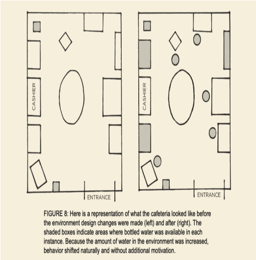
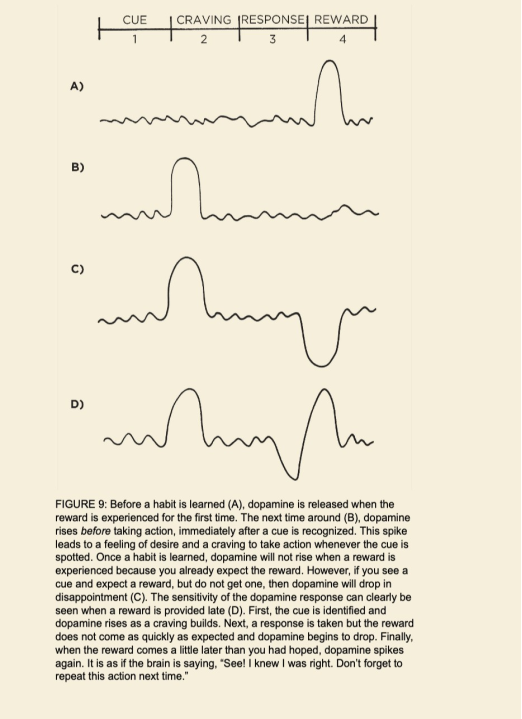
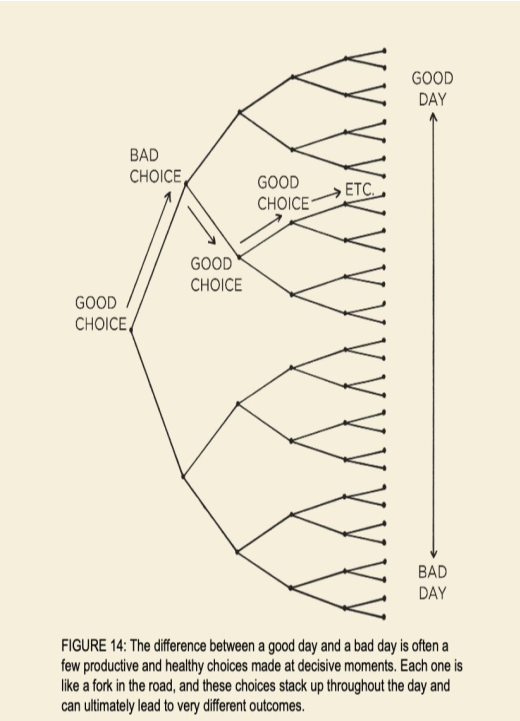
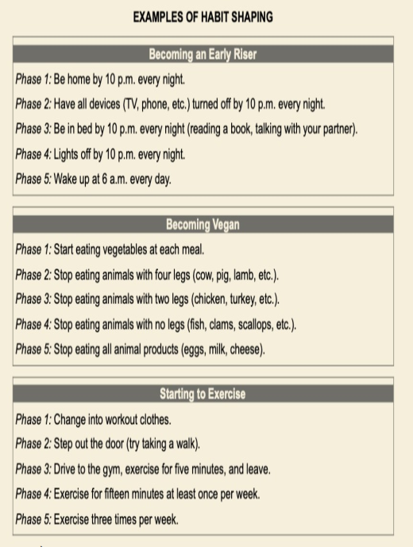
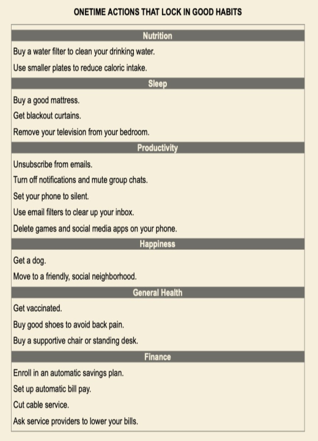
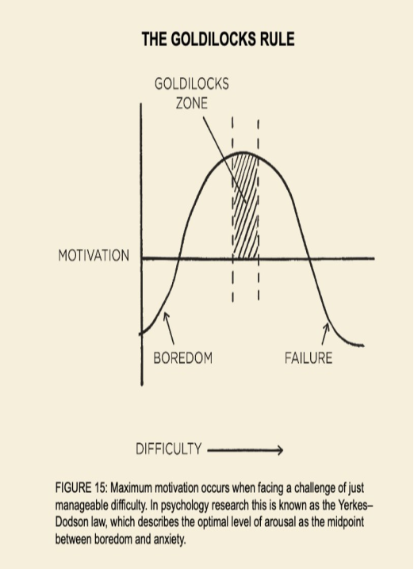
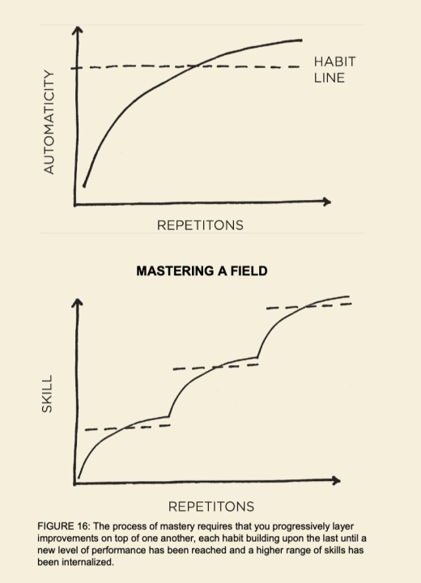

CHƯƠNG 1 - NHỮNG NGUYÊN TẮC CƠ BẢN
Tại sao những thay đổi nhỏ lại tạo ra sự khác biệt lớn Sức mạnh đáng kinh ngạc của những thói quen nhỏ bé. Số phận của giới đua xe đạp Anh Quốc đã thay đổi chỉ sau một ngày vào năm 2013. Tổ chức đua xe chuyên nghiệp Anh Quốc đã thuê Dave Brailsford vào vị trí giám đốc điều hành. Vào thời điểm đó những tay đua chuyên nghiệp ở Anh đã trải qua gần 100 năm không có giải thưởng nào. Người Anh chỉ giành được một huy chương vàng đơn nam tại kỳ thế vận hội Olympic từ năm 1908, và họ thi đấu với phong độ ngày càng tệ tại giải đua xe lớn nhất thế giới, Tour de France.
Trong suốt 110 năm, không có vận động viên người Anh nào giành thắng lợi tại giải đấu này. Thực tế là màn trình diễn của các tay đua người Anh dở đến mức một trong những nhà sản xuất xe đạp hàng đầu Châu Âu từ chối bán xe đạp cho tuyển Anh với lý do họ e ngại rằng doanh số bán hàng sẽ bị sụt giảm nếu những tay đua chuyên nghiệp khác thấy tuyển Anh sử dụng xe đua của họ. Brailsford được thuê để đưa tuyển Anh vào quỹ đạo mới. Điều khiến cho ông ấy khác biệt với những người tiền nhiệm là lời cam kết kiên định theo đuổi chiến lược mà ông ấy gọi là "tổ hợp thành tựu biên" [nguyên gốc "the aggregation of marginal gains"]
Triết học định nghĩa đây là việc tìm kiếm một thay đổi cải thiện rất nhỏ trong mọi thứ bạn làm hàng ngày. Brailsford cho biết, "Nguyên tắc bắt nguồn từ ý tưởng rằng nếu bạn chia nhỏ mọi thứ bạn có thể nghĩ về việc đạp xe, và sau đó cải thiện từng 1% một, bạn sẽ tạo ra một thay đổi đáng kể khi bạn gộp chung vào với nhau". Brailsford và ban huấn luyện đã bắt đầu bằng việc tạo ra những điều chỉnh nhỏ mà bạn có thể mong chờ từ một đội đua xe chuyên nghiệp. Họ đã tái cấu trúc lại yên xe để khiến chúng thoải mái hơn và dùng cồn tẩy rửa cho lốp xe để có ma xát tốt hơn.
Họ cũng yêu cầu các tay đua mặc áo giữ nhiệt để duy trì mức nhiệt lý tưởng cho cơ bắp trong khi đạp xe và sử dụng cảm biến phản hồi sinh học để giám sát phản ứng của từng vận động viên đối với từng bài tập luyện cụ thể. Cả đội đã thử nghiệm nhiều loại vải bằng ống thông gió và để những tay đua xe ngoài trời của họ thử mặc những bộ đồ thi đấu trong nhà, những bộ đã được chứng minh là nhẹ và thoáng khí hơn.
Nhưng họ không chỉ dừng lại ở đây. Brailsfords và đội nhóm của mình đã tiếp tục tìm kiếm 1 phần trăm tiến bộ trong những lĩnh vực mà không ai ngờ tới. Họ thử nghiệm nhiều loại gel mát xa khác nhau để tìm ra loại giúp phục hồi cơ nhanh nhất. Họ còn thuê cả một bác sĩ phẫu thuật để dạy cho từng vận động viên cách rửa tay tốt nhất sao cho giảm thiểu các nguy cơ bị cảm lạnh. Họ quyết định loại gối và đệm đem lại giấc ngủ chất lượng nhất cho các tay đua. Họ thậm chí còn sơn lại nội thất chiếc xe chuyên chở đội tuyển thành màu trắng, việc này giúp họ nhìn thấy được những vết bụi li ti mà thường không ai để ý tới nhưng lại có thể làm tụt giảm hiệu suất của một chiếc xe đạp đua tinh xảo.
Khi những điều vừa nêu ở trên và hàng trăm những cải tiến nhỏ khác kết hợp lại mang tới những thay đổi một cách nhanh chóng mà không ai có thể nghĩ tới. Chỉ sau 5 năm kể từ khi Brailsford nắm quyền, đội tuyển đua xe đạp Anh đã thống trị đường đua trong kỳ Thế vận hội năm 2008 tại Bắc Kinh, họ đã dành chiến thắng ngỡ ngàng hơn 60 phần trăm số lượng huy chương vàng của kỳ thế vận hội. 4 năm sau, khi kỳ Thế vận hội được tổ chức tại Luân Đôn, người Anh lại lần nữa dẫn đầu khi họ lập được 9 kỷ lục Olympic và 7 kỷ lục thế giới. Cũng trong năm đó, Bradley Wiggins đã trở thành tay đua người Anh đầu tiên giành chiến thắng tại giải thi đấu Tour de France.
Một năm sau đó đồng đội của anh là Chris Froome giành giải vô địch và duy trì thành tích đó vào các năm 2015, 2016, và 2017, điều này đã giúp đội tuyển Anh 5 lần giành chức vô địch Tour de France trong vòng 6 năm. Trong suốt quá trình 10 năm từ 2007 đến 2017, các tay đua người Anh đã 178 lần vô địch thế giới và 66 lần giành huy chương vàng Olympic và Paralympic và 5 lần vô địch giải Tour de France, đây được coi là đội đua thành công nhất trong lịch sử đua xe đạp thế giới. [* Khi cuốn sách này được xuất bản, các thông tin mới về đội đua xe đạp Anh quốc vẫn tiếp tục được cập nhật].
Bằng cách nào điều này có thể xảy ra? Bằng cách nào một đội tuyển mà trước đây chỉ toàn những tay đua bình thường lột xác thành đội tuyển của những nhà vô địch chỉ với những thay đổi nhỏ bé mà mới đầu tưởng như cùng lắm chỉ tạo ra sự khác biệt đơn giản nhất? Tại sao những cải thiện nhỏ bé từng chút một lại tạo nên những kết quả đáng kinh ngạc đến như vậy, và bằng cách nào bạn làm được như vậy trong cuộc sống của mình?
TẠI SAO NHỮNG THÓI QUEN NHỎ LẠI TẠO NÊN MỘT SỰ THAY ĐỔI LỚN
Chúng ta rất dễ bị đánh giá quá lên tầm quan trọng của một khoảnh khắc đặc biệt và xem nhẹ giá trị của những tiến bộ nhỏ hàng ngày. Chúng ta thường xuyên tự thuyết phục bản thân rằng những thành công vĩ đại đòi hỏi những hành động lớn lao. Dù cho đó có là việc giảm cân, xây dựng công việc kinh doanh, viết một cuốn sách, giành giải vô địch, hoặc đạt được bất kỳ mục tiêu nào đó, chúng ta cũng tạo áp lực cho bản thân phải làm nên những điều chấn động mà tất cả mọi người phải ca tụng. Trong lúc đó thì việc cải thiện chỉ 1 phần trăm không có gì đáng chú ý cả - đôi khi là nó chẳng là cái quái gì - nhưng nó có ý nghĩa rất quan trọng, đặc biệt là trong một thời gian dài.
Sự khác biệt mà một cải thiện nhỏ có thể đem lại sau một thời gian là hết sức đáng kinh ngạc. Đây là cách mà phép toán này vận hành: nếu bạn có thể đạt được 1 phần trăm tiến bộ mỗi ngày, bạn sẽ tiến bộ gấp 37 lần so với thời gian bạn bỏ ra. Ngược lại nếu mỗi ngày bạn lại tệ hơn 1 phần trăm liên tục trong vòng 1 năm, bạn chắc chắn sẽ về lại con số 0. Việc nào bắt đầu bằng những thắng lợi nho nhỏ hoặc những thất bại không đáng kể thì sẽ dần dần được cải thiện tốt lên. 1% cải thiện mỗi ngày Những thói quen chính là lãi suất kép của việc tự cải thiện bản thân.
Giống như cách đồng tiền sinh sôi nhiều lần nhờ lãi suất kép, các ảnh hưởng từ thói quen sẽ được nhân lên nhiều lần nếu bạn lặp lại chúng. Những thói quen này dường như tạo ra rất ít sự khác biệt nếu tính riêng mỗi ngày và tác dụng của chúng tính theo tháng, theo năm có thể rất là to tát. Phải sau hai, năm hoặc có lẽ 10 năm sau nhìn lại chúng ta mới thấy rõ được giá trị của những thói quen tốt và cái giá phải trả của những thói quen xấu. Đây có lẽ là một khái niệm khó để có thể đánh giá trong cuộc sống hàng ngày.
Chúng ta thường bỏ qua những thay đổi nhỏ bởi vì chúng có vẻ chẳng mấy rõ rệt ngay tại thời điểm đấy. Nếu bạn dành dụm một khoản tiền nhỏ lúc này, bạn cũng chẳng trở thành tỷ phú được. Nếu bạn tập gym đều đặn 3 ngày một tuần, bạn cũng vẫn chẳng có được hình thể đẹp. Nếu bạn học tiếng Trung một tiếng vào tối nay, bạn vẫn không thực sự học ngôn ngữ đó. Chúng ta tạo ra một vài thay đổi nhưng kết quả thường không xuất hiện nhanh chóng và chúng ta lại trượt lại về thói quen cũ. Thật không may là quá trình chuyển biến chậm chạp này cũng làm cho chúng ta dễ dàng quay trở lại với những thói quen không tốt. Nếu bạn ăn một bữa ăn không hợp lý ngày hôm nay thì cũng chẳng thấy có gì ảnh hưởng hết. Nếu bạn làm việc trễ và bỏ bê gia đình thì họ cũng sẽ tha thứ cho bạn. Nếu như bạn trì hoãn và để công việc của bạn sang ngày mai giải quyết, thường thì bạn cũng vẫn sẽ có thời gian để hoàn thành công việc này sau đó. Chúng ta dễ dàng gạt bỏ một ý định
Ngày qua ngày, khi chúng ta lặp đi lặp lại 1 phần trăm những lỗi sai bằng việc tái phạm lại những quyết định sai lầm, những lỗi nhỏ xíu và bao biện cho những lỗi lầm đó, những lựa chọn nhỏ đó của chúng ta sẽ dẫn tới những kết quả tồi tệ. Nó là sự tích tụ của rất nhiều sai lầm - 1 phần trăm ở đây, ở kia - và chúng hiển nhiên mang lại vấn đề. Những ảnh hưởng từ việc thay đổi thói quen tương tự như ảnh hưởng của việc thay đổi tọa độ đối với lộ trình một chuyến bay. Hãy tưởng tượng rằng bạn đang trên một chuyến bay từ Los Angeles tới New York, nếu máy bay cất cánh từ sân bay LAX và sau đó phi công điều chỉnh chỉ 3.5 độ Bắc, bạn sẽ hạ cánh tại Washington, D.C. thay vì New York.
Chỉ một thay đổi nhỏ không đáng kể lúc cất cánh - mũi máy bay chỉ lệch đi có vài feet - vậy mà bạn đã bay dọc cả nước Mỹ và hạ cánh tại địa điểm cách điểm đến của bạn hàng trăm dặm. Tương tự như vậy, một thay đổi tưởng chừng nhỏ xíu trong thói quen hàng ngày của bạn có thể hướng cuộc sống của bạn tới đích đến hoàn toàn khác biệt. Lựa chọn 1 phần trăm tốt hơn hay 1 phần trăm tệ đi dường như không có gì khác biệt ngay tại thời điểm đó, nhưng về lâu dài thì những lựa chọn đó sẽ quyết định sự khác biệt giữa việc bạn là ai và bạn có thể làm những gì.
Thành công là sản phẩm của những thói quen hàng ngày, chứ không phải là sự lột xác chỉ một lần duy nhất trong đời. Và ngay tại thời điểm này bạn có phải là một người thành công hay không cũng không quan trọng. Điều quan trọng ở đây là những thói quen của bạn chỉ bạn đúng con đường dẫn tới thành công. Điều bạn cần làm ở đây là chú tâm hơn nữa vào quỹ đạo hơn là những kết quả trong hiện tại. Nếu bạn không thay đổi thói quen thì chẳng đem lại kết quả gì. Ngược lại, nếu bạn phá vỡ những thói quen hiện tại, mỗi tháng một chút, và bạn đã đi trên con đường dẫn đến sự tự do về tài chính - cho dù sự thay đổi diễn ra chậm hơn so với sự kỳ vọng ban đầu của bạn. Những thay đổi nơi bạn chính là thước đo những thói quen của bạn.
Giá trị tài sản ròng chính là thước đo cho những thói quen tài chính của bạn. Cân nặng chính là thước đo cho những thói quen ăn uống của bạn. Kiến thức chính là thước đo cho những thói quen học tập của bạn. Sự lộn xộn là thước đo cho những thói quen ngăn nắp gọn gàng của bạn. Bạn sẽ nhận được những gì bạn hành động lặp đi lặp lại. Nếu bạn muốn dự đoán được tương lại mình sẽ như thế nào, tất cả những gì bạn cần làm là theo dõi biểu đồ lên xuống của những thay đổi tích cực hay thất bại nhỏ bé, và nhận ra những lựa chọn hàng ngày của bạn về lâu dài, 10 hay 20 năm nữa sẽ kéo biểu đồ đi xuống như thế nào. Bạn có tiêu ít hơn thu nhập hàng tháng của mình? Bạn có tập gym hàng tuần? Bạn có đọc sách và học những kiến thức mới mỗi ngày? Những cuộc chiến nho nhỏ đó chính là những thứ quyết định tương lai của bạn đấy. Thời gian sẽ phân định rõ ranh giới giữa thành công và thất bại. Bạn cho nó ăn gì thì theo thời gian nó sẽ lớn lên như vậy. Nếu là thói quen tốt thì thời gian sẽ là đồng minh của bạn. Nếu là thói quan xấu thì thời gian sẽ là kẻ thù của bạn. Thói quen chính là một con dao hai lưỡi.
Thói quen xấu sẽ khiến bạn thất bại, cũng dễ dàng như vậy thói quen tốt sẽ khiến bạn thay đổi tích cực. Chính vì như vậy mà việc hiểu rõ ràng các chi tiết là điều cần thiết. Bạn cần phải biết các thói quen vận hành ra sao và thiết kế chúng làm sao cho phù hợp với sở thích của bạn, để bạn có thể tránh được cái lưỡi sắc bén nguy hiểm kia của con dao.
THÓI QUEN CÓ THỂ LÀ ĐỒNG MINH HOẶC CÓ THỂ LÀ KẺ CHỐNG LẠI BẠN
*Tổ hợp năng suất >< Tổ hợp Stress:
Tổ hợp năng suất: Hoàn thành thêm một nhiệm vụ trong một ngày bất kỳ là một bước nhỏ, nhưng kết hợp lại thì đó lại là một con số đáng kể sau cả một quá trình dài. Hiệu quả của việc tự động thực hiện các nhiệm vụ cũ và làm thành thục các kỹ năng mới sẽ càng to lớn hơn nữa. Bạn thực hiện càng nhiều nhiệm vụ mà không cần suy nghĩ, não bạn càng tự do tập trung vào những lĩnh vực khác.
Tổ hợp stress: Sự trắc trở do tắc nghẽn. Gánh nặng của trách nhiệm. Sự lo lắng về việc thỏa mãn các nhu cầu. Sự căng thẳng làm tăng huyết áp. Thực chất chúng ta hoàn toàn có thể kiểm soát được những nguyên nhân gây ra stress phố biến vừa nêu ở trên. Nhưng khi những điều này diễn ra trong nhiều năm thì những căng thẳng nhỏ này sẽ tích tụ gây ra những vấn đề về sức khỏe.
*Tổ hợp kiến thức >< Tổ hợp những suy nghĩ tiêu cực:
Tổ hợp kiến thức: Học một điều mới không làm bạn trở thành thiên tài nhưng chắc chắn về lâu dài sẽ làm bạn thay đổi. Hơn nữa, mỗi một cuốn sách bạn đọc không chỉ đem lại cho bạn những kiến thức mới mà còn mở ra những góc nhìn mới về những vấn đề cũ. Như Warren Buffets đã nói, "Đó chính là tác dụng của kiến thức, nó đem lại sự sinh sôi nảy nở, giống như lãi suất kép vậy".
Tổ hợp những suy nghĩ tiêu cực: Những suy nghĩ kiểu như mình vô dụng, ngu ngốc hay xấu xí xuất hiện càng nhiều thì cuộc đời bạn càng dễ diễn ra theo chiều hướng đó. Bạn bị mắc kẹt trong cái thòng lọng suy nghĩ kiểu đó. Điều này cũng đúng trong cách bạn suy nghĩ về người khác. Một khi bạn bị rơi vào cái bẫy của thói quen đánh giá người khác là cáu kỉnh, không công bằng, ích kỷ, thì bạn sẽ gặp những kiểu người như thế ở khắp nơi
*Tổ hợp mối quan hệ >< Tổ hợp xúc phạm.
Tổ hợp mối quan hệ: Mọi người phản chiếu cách hành xử của bạn. Bạn càng giúp đỡ nhiều người, càng nhiều người muốn giúp đỡ bạn. Trở nên tốt đẹp hơn một chút trong các mối quan hệ có thể mang lại một mạng lưới giao tiếp rộng và mối liên hệ bền chặt theo thời gian.
Tổ hợp xúc phạm: Quấy phá, chống đối, những động thái lớn hiếm khi là kết quả của một sự kiện đơn lẻ. Một loạt những sự chống đối nhỏ và những sự kiện làm trầm trọng thêm mỗi ngày cứ từ từ được nhân lên cho đến khi một sự kiện làm tức nước vỡ bờ và sự giận giữ bùng nổ như pháo bông vậy
QUÁ TRÌNH TẠO RA SỰ KHÁC BIỆT DIỄN RA NHƯ THẾ NÀO?
Hãy tưởng tượng một khối nước đá được đặt trên bàn ngay trước mặt bạn, căn phòng thì lạnh lẽo và bạn thì có thể thấy mình thở ra khói. Nhiệt độ trong phòng là 25 độ F, và rồi căn phòng được làm ấm lên từ từ. 26 độ, 27 độ, 28 độ. Khối nước đá vẫn ở đó trên bàn ngay trước mặt bạn. 29 độ, 30, 31, và vẫn chẳng có chuyện gì xảy ra cả. Và rồi tiếp theo 32 độ. Khối nước đá bắt đầu tan chảy. Cứ mỗi một độ nhích lên, dường như rất khó nhận ra sự khác biệt so với nền nhiệt trước đó, nhưng nó lại đem tới sự thay đổi to lớn. Bước đột phá tại thời điểm hiện tại thường là kết quả của rất nhiều hành động trước đó, những hành động đã đặt nền móng cần thiết cho sự thay đổi cốt yếu.
Chúng ta có thể thấy mô hình này diễn ra ở khắp mọi nơi. Người ta chỉ phát hiện ra các tế bào ung thư khi nó đã phát triển được đến 80% vòng đời của nó, và phát ra trong cơ thể người trong vòng mấy tháng. Cây trúc chỉ là măng trúc trong vòng 5 năm đầu tiên, đây là giai đoạn nó phát triển hệ thống rễ trùm bám sâu vào lòng đất trước khi phát triển nhảy vọt đạt tới chiều cao 90 feet chỉ trong vòng 6 tuần. Tương tự như vậy, các thói quen dường như không đem lại sự khác biệt nào cho tới khi bạn vượt qua được ngưỡng giới hạn và đạt tới mức biểu hiện tốt hơn.
Trong giai đoạn đầu và giữa của hành trình, thường sẽ xuất hiện giai đoạn chán nản [*Từ nguyên gốc: Valley of Disappointment]. Bạn mong đợi rằng sẽ thấy sự tiến bộ rõ rệt và rồi thấy thật thất vọng vì những sự thay đổi dường như không có hiệu quả gì sau nhiều ngày, nhiều tuần, nhiều tháng thực hiện. Điều này khác với việc bạn đang làm mà không có mục tiêu rõ ràng. Đó là điều tất yếu của một quá trình tích lũy: những thành quả to lớn cuối cùng còn chờ ở phía sau. Đây cũng là một trong những lý do mà tại sao không dễ dàng trong việc xây dựng và duy trì thói quen. Mọi người tạo ra một số thay đổi nhưng rồi không thấy được những kết quả rõ ràng và thế là họ quyết định dừng lại. Bạn nghĩ, "Mình đã tập chạy hàng ngày trong vòng một tháng, vậy tại sao cơ thể mình chẳng có gì thay đổi vậy?"
Một khi bạn có những suy nghĩ kiểu đó, các thói quen tốt rất dễ bị cho ra rìa. Nhưng để đạt những khác biệt lớn lao, bạn cần phải kiên trì duy trì các thói quen đủ lâu để phá vỡ trạng thái bình ổn này - tôi gọi đó là trạng thái ổn định của những khả năng tiềm ẩn [* Từ nguyên gốc: Plateau of Latent Potential]. Nếu bạn đang vật lộn với việc xây dựng thói quen tốt và loại bỏ thói quen xấu thì đừng dừng lại nhé bởi vì bạn đang bỏ lỡ khả năng cải thiện của mình. Đây cũng là trạng thái thường gặp vì bạn chưa vượt qua được trạng thái ổn định của những khả năng tiềm ẩn. Phàn nàn về việc không đạt được thành công dù đã rất cố gắng giống như phàn nàn việc khối nước đá không tan chảy khi bạn tăng nhiệt độ từ 25 tới 31 độ vậy. Công sức của bạn sẽ không bị phí hoài đâu. Nó chỉ đang được tích lũy lại. Và mọi việc sẽ có chuyển biến tại mức 32 độ.
Tại thời điểm cuối cuối khi bạn vượt qua được trạng thái ổn định của những khả năng tiềm ẩn, mọi người sẽ ca ngợi nó là thành công thần kỳ chỉ sau một đêm. Mọi người chỉ thấy được kết quả cuối cùng mà không thấy được cả quá trình. Nhưng bạn là người biết rõ bạn đã nỗ lực thực hiện một thời gian dài như thế nào, có những lúc mà dường như mọi cố gắng của bạn không đem lại kết quả gì, chính điều này đã đem lại bước nhảy vọt ngày hôm nay. Đây chính là cách con người cân bằng với những áp lực tự nhiên. Hai mảng kiến tạo cùng va vào một mảng kiến tạo khác hàng triệu năm về trước, lực va chạm vẫn âm thầm ảnh hưởng tới cả 3 mảng kiến tạo cùng một lúc. Rồi một ngày chúng lại va vào nhau một lần nữa, cũng theo cách thức đã diễn ra từ nhiều thế kỷ trước, nhưng lần này với một lực ép mạnh hơn lần trước rất nhiều lần.
Một trận động đất xảy ra. Sự thay đổi cần nhiều năm trước khi bùng nổ chỉ trong một lần. Sự thành thạo yêu cầu kiên nhẫn. Đội bóng rổ San Antonio Spurs, một trong những đội bóng rổ thành công nhất trong lịch sử thi đấu của giải NBA treo một câu nói của nhà cải cách xã hội Jacob Riis trong phòng thay đồ của đội bóng: "Khi bế tắc, tôi đi tới và ngắm nhìn vào lưỡi cưa của máy cắt đá xẻ vào tảng đá, lưỡi cưa cắt vào tảng đá có lẽ là hàng trăm lần nhưng không hề xuất hiện một vết nứt nào trên bề mặt tảng đá. Đến lần thứ một trăm và với chỉ một cú đập mạnh tảng đá đã vỡ ra làm đôi. Và tôi biết rằng không phải nhờ cú đập đó mà tảng đá vỡ ra - mà phải nhờ vào cả một quá trình trước đó". Tất cả những điều lớn lao đều bắt đầu từ những điều nhỏ bé.
Mỗi một hạt giống thói quen là một quyết định nhỏ bé, đơn lẻ. Nhưng khi những quyết định này được lặp đi lặp lại thì thói quen sẽ bắt rễ và phát triển mạnh mẽ. Và khi bộ rễ bản thân nó bền chắc thì những cành nhánh sẽ mọc ra. Việc phá bỏ một thói quen cũ không lành mạnh giống như việc nhổ tận rễ của một cây sồi khỏe mạnh trong chính bản thân chúng ta. Và việc thiết lập thói quen mới lành mạnh giống như việc chăm bẵm một đóa hoa bé nhỏ mỗi ngày vào một giờ nhất định. Nhưng điều gì quyết định việc liệu chúng ta có kiên trì thực hiện thói quen đủ lâu để sống sót vượt qua được trạng thái ổn định của những khả năng tiềm ẩn và đạt được bước đột phá? Hãy quên mục tiêu đi, thay vào đó tập trung vào hệ thống Có một niềm tin phổ biến rằng cách tốt nhất để đạt được mọi điều mình mong muốn trong cuộc sống - như giữ phom dáng chuẩn, kinh doanh thành công, sống thoải mái hơn, ít lo âu hơn, dành nhiều thời gian hơn cho gia đình, bạn bè - thì cần phải đề ra những mục tiêu cụ thể và khả thi. Tôi cũng đã xây dựng những thói quen của mình theo cách đó trong rất nhiều năm. Mỗi một thói quen đi liền với một mục tiêu cần đạt tới. Tôi đề ra những mục tiêu đạt điểm cao ở trường, đạt đến số kg mong muốn trong tập gym, kiếm được bao lợi nhuận bản thân mong muốn trong kinh doanh.
Cũng có một vài mục tiêu thành công, còn đa số đều thất bại. Bất chợt tôi bắt đầu nhận ra rằng kết quả mà tôi đạt được chẳng mấy liên quan tới những mục tiêu mà mình đề ra, mà liên quan mật thiết tới hệ thống mà tôi tuân thủ. Vậy sự khác biệt giữa hệ thống và mục tiêu là gì? Sự khác biệt đầu tiên tôi đã học được từ Scott Adams, hoạ sĩ tranh biếm hoạ tác giả của cuốn truyện tranh Dilbert. Mục tiêu là kết quả mà bạn mong muốn đạt được. Hệ thống là quá trình dẫn dắt bạn tới những kết quả đó.
- Nếu bạn là một huấn luyện viên, mục tiêu của bạn chắc hẳn là dành chức vô địch. Hệ thống của bạn ở đây là cách bạn chiêu mộ cầu thủ, quản lý các trợ lý huấn luyện viên và hướng dẫn tập luyện.
- Nếu bạn là một chủ doanh nghiệp, mục tiêu của bạn chắc hẳn là xây dựng một đế chế kinh doanh đáng giá triệu đô. Hệ thống của bạn là cách mà bạn đánh giá các ý tưởng kinh doanh của doanh nghiệp mình, tuyển dụng nhân viên và chạy các chiến dịch marketing
- Nếu bạn là một nhạc công, mục tiêu của bạn chắn hẳn là chơi một tuyệt phẩm mới. Hệ thống của bạn là việc bạn có thường xuyên luyện tập, cách bạn phá vỡ và vượt qua được những tiêu chuẩn khắt khe, và phương pháp mà bạn tiếp nhận những chỉ dạy từ người hướng dẫn cho bạn
Và bây giờ có một câu hỏi thú vị được đặt ra là: Nếu bạn hoàn toàn chẳng quan tâm gì tới kết quả mà chỉ tập trung vào hệ thống của mình thì bạn sẽ chắc chắn thành công? Ví dụ, nếu bạn là một huấn luyện viên bóng chuyền và bạn không quan tâm gì tới mục tiêu là giành chức vô địch và chỉ tập trung vào việc đội của bạn tập luyện như thế nào mỗi ngày, liệu bạn có thành công?
Tôi nghĩ là có. Mục tiêu trong bất kỳ môn thể thao nào chính là giành điểm cao nhất lúc chung cuộc, nhưng thật ngớ ngẩn nếu như cả buổi thi đấu chỉ nhìn chăm chăm vào bảng điểm số. Cách duy nhất để dành chiến thắng thực sự là tiến bộ hơn mỗi ngày. Người đã từng 3 lần vô địch giải Super Bowl Bill Walsh đã phát biểu, "Điểm số sẽ tự lo liệu cho chính nó." Điều này cũng đúng trong các lĩnh vực khác của cuộc sống.
Nếu bạn muốn đạt kết quả tốt hơn, hãy quên việc đề ra các mục tiêu đi. Thay vào đó hãy tập trung vào hệ thống. Ý của tôi muốn nói ở đây là gì? Vậy các mục tiêu là vô nghĩa sao? Dĩ nhiên là không rồi. Mục tiêu giúp chúng ta định hướng, nhưng hệ thống giúp chúng ta vạch ra tiến trình thực hiện. Một loạt các vấn đề phát sinh khi bạn suy nghĩ quá nhiều đến mục tiêu, không còn đủ thời gian cho việc thiết kế hệ thống.
Vấn đề #1: Kẻ thắng, người thua đều có chung một mục tiêu. Việc đề ra những mục tiêu là một trường hợp điển hình của việc đánh giá phiến diện một chiều. Chúng ta chỉ mải tập trung vào những người thành công lúc chung cuộc - những kẻ sống sót - và đánh giá phiến diện rằng những mục tiêu đầy tham vọng đã giúp họ thành công, trong khi đó lại bỏ quên mất tất cả những người cũng có cùng những mục tiêu đó nhưng lại không thành công. Tất cả các vận động viên tham dự Thế Vận Hội Olympic đều khao khát huy chương vàng.
Mỗi một ứng viên đều mong muốn được tuyển dụng. Và nếu người thành công hay không thành công đều chia sẻ chung mục tiêu thì đương nhiên sẽ không có gì khác biệt giữa mục tiêu của người chiến thắng và kẻ thua cuộc. Không phải mục tiêu chiến thắng giải đua Tour de France đã thúc đẩy đội tuyển Anh lên đến đỉnh cao sự nghiệp. Như những đội đua chuyên nghiệp khác Chắc chắn những năm trước đó họ cũng đều khao khát chiến thắng giải đua. Mục tiêu vẫn luôn là như vậy. Nhưng chỉ khi họ thực hiện một hệ thống các cải thiện nhỏ liên tục thì họ mới đạt được kết quả khác biệt.
Vấn đề #2: Đạt được một mục tiêu chỉ là thay đổi mang tính nhất thời. Hãy tưởng tượng bạn có một căn phòng bừa bộn và bạn đề ra mục tiêu là dọn dẹp nó. Nếu bạn chính thức bắt tay vào dọn dẹp thì lúc này bạn sẽ có một căn phòng gọn gàng sạch sẽ. Nếu bạn tiếp tục lõm bõm kiểu này, những thói quen đáng bỏ đi này trước tiên sẽ đem tới một căn phòng bừa bãi, sau đó sớm thôi bạn sẽ thấy cả một mớ hỗn độn và hi vọng sẽ có một sự cải thiện. Thực chất bạn đang theo đuổi cùng một kết quả mà thôi bởi vì bạn chưa bao giờ thay đổi hệ thống phía sau nó
Bạn điều trị một triệu chứng bệnh mà không tìm hiểu nguyên nhân căn bệnh. Đạt được một mục tiêu chỉ thay đổi cuộc sống của bạn trong chốc lát. Điều này chỉ là sự cải thiện đột xuất. Chúng ta nghĩ chúng ta cần thay đổi kết quả đạt được, nhưng kết quả không phải vấn đề. Thứ mà chúng ta thật sự cần phải thay đổi là hệ thống thứ mà tạo nên những kết quả đó. Khi bạn giải quyết vấn đề ở tầm kết quả, bạn chỉ giải quyết vấn đề tạm thời mà thôi. Để cải thiện tốt hơn, bạn cần giải quyết vấn đề ở tầm hệ thống. Sửa đổi những yếu tố đầu vào, các yếu tố đầu ra sẽ tự thay đổi theo.
Vấn đề #3: Các mục tiêu giới hạn hạnh phúc của bạn. Ảo tưởng ẩn bên dưới mỗi một mục tiêu chính là: "Một khi tôi đạt được mục tiêu, tôi sẽ hạnh phúc." Vấn đề của trạng thái tâm lý đặt mục tiêu lên hàng đầu là việc bạn không ngừng vứt bỏ hạnh phúc sang một bên cho tới khi bạn đạt được một điều gì đó. Tôi đã trượt vào cái bẫy này rất nhiều lần không đếm xuể. Trong nhiều năm hạnh phúc đối với tôi là một cái gì đó mình sẽ được hưởng trong tương lai. Tôi tự hứa với bản thân rằng một khi tôi đạt được 20 pounds cơ bắp hoặc sau khi việc kinh doanh của tôi được lên tạp chí New York Times thì lúc đó tôi mới nghỉ ngơi.
Thêm vào đó mục tiêu còn tạo ra một xung đột "có hoặc không" [từ gốc "either-or" conflict]: hoặc bạn đạt được mục tiêu và thành công, hoặc bạn thất bại và là một con người đáng thất vọng. Bạn tự giam cầm bản thân bởi suy nghĩ về một phiên bản chật hẹp của hạnh phúc. Đây là một điều sai lầm. Việc này không giống với việc những việc xảy ra trong cuộc sống thực tế của bạn sẽ ăn khớp hoàn toàn với hành trình mà bạn đã hoạch định trong đầu. Thật là vớ vẩn khi hạn chế sự thoả mãn của bản thân trong một kịch bản khi có rất nhiều con đường dẫn đến thành công. Trạng thái tâm lý đặt hệ thống lên đầu sẽ đem lại thuốc đặc trị. Khi bạn yêu thích tiến trình hơn là kết quả, bạn không phải chờ đợi để cho phép bản thân mình được hạnh phúc nữa. Bạn có thể thấy hài lòng bất cứ lúc nào khi đang trong tiến trình. Và một hệ thống có thể thành công theo nhiều cách khác nhau, chứ không chỉ theo đúng như giả định ban đầu của bạn.
Vấn đề #4: Mục tiêu sẽ xung đột với tiến trình về lâu về dài. Rốt cuộc một tư duy đặt mục tiêu lên hàng đầu có thể tạo ra hiệu ứng yo-yo. Rất nhiều vận động viên chạy tập luyện chăm chỉ trong nhiều tháng nhưng ngay khi họ cán đích, họ cũng dừng luôn việc tập luyện lại. Cuộc đua không còn là động lực thúc đẩy họ nữa. Khi bạn tập trung làm việc chăm chỉ để đạt được mục tiêu nào đó, điều gì sẽ thúc đẩy bạn đi tiếp khi bạn đã đạt được nó rồi? Đây cũng chính là lý do giải thích tại sao nhiều người lại quay trở lại với các thói quen cũ sau khi làm được một mục tiêu nào đó.
Mục đích của việc hoạch định mục tiêu là nhằm chiến thắng cuộc chơi. Mục đích của việc xây dựng hệ thống là để tiếp tục cuộc chơi. Chiến lược lâu dài là tư duy không đặt mục tiêu. Nó không phải là việc đạt được một mục tiêu nhất định nào đó. Nó là vòng tuần hoàn của những thay đổi không ngừng và sự tiến bộ liên tục. Cuối cùng sự cam kết với tiến trình sẽ quyết định sự tiến bộ của bạn.
HỆ THỐNG CÁC THÓI QUEN NGUYÊN TỬ
Nếu bạn đang gặp khó khăn trong việc thay đổi các thói quen của bản thân thì vấn đề không nằm ở bạn. Vấn đề nằm ở hệ thống của bạn. Những thói quen xấu lặp đi lặp lại không phải do bạn không muốn thay đổi mà bởi vì bạn có một hệ thống thay đổi sai lầm. Bạn không nâng tầm mục tiêu. Bạn tự hạ tầm hệ thống của mình. Tâp trung vào hệ thống tổng quát hơn là vào một mục tiêu đơn lẻ chính là một trong những nền tảng chính của cuốn sách này. Đây cũng chính là ý nghĩa sâu xa hơn phía sau của từ "nguyên tử". Cho đến lúc này bạn chắc hẳn đã nhận ra một thói quen nguyên tử chính là một thay đổi nhỏ bé, là thành tựu cận biên, là 1 phần trăm tiến bộ.
Nhưng các thói quen nguyên tử không chỉ là những thói quen cũ mà còn rất nhỏ. Chúng rất nhỏ bé nhưng chúng là một phần của cả một hệ thống to lớn hơn. Giống như các nguyên tử là những tập hợp của các phân tử, các thói quen nguyên tử chính là tập hợp của những kết quả nổi bật. Những thói quen giống như các hạt nguyên tử của cuộc đời chúng ta. Mỗi một thói quen là một đơn vị cơ bản đóng góp vào sự cải thiện chung của chúng ta. Mới đầu những thay đổi nhỏ xíu này dường như không có hiệu quả gì nhưng sớm thôi chúng gắn kết tập trung lại với nhau và tạo nên những chiến thắng lớn lao hơn gấp nhiều lần và không phí hoài công sức chúng ta đã bỏ ra. Chúng vừa nhỏ bé mà cũng rất lớn lao.
Đây chính là ý nghĩa của cụm từ "thói quen nguyên tử" - một quá trình luyện tập hoặc thực hành đều đặn không chỉ đơn giản mà còn dễ thực hiện nhưng nó lại là khởi nguồn của nguồn sức mạnh phi thường; một phần của hệ thống phát triển sâu sắc.
Tóm tắt chương
- Thói quen là lãi kép từ việc cải thiện bản thân. Tiến bộ 1% mỗi ngày về lâu dài sẽ thành con số đáng kể.
- Thói quen là con dao hai lưỡi. Chúng có thể phục vụ bạn, cũng có thể chống lại bạn, đây cũng chính là lí do tại sao chúng ta cần phải hiểu chi tiết về chúng.
- Những thay đổi nhỏ thường không thấy rõ được sự khác biệt cho tới khi bạn vượt qua được ngưỡng tới hạn của bản thân. Những thay đổi mạnh mẽ nhất của bất kỳ tiến trình sâu sắc nào cũng cần có thời gian. Việc bạn cần làm là thật kiên nhẫn
- Một thói quen nguyên tử là một thói quen nhỏ, một phần của hệ thống lớn hơn. Giống như những nguyên tử là một khối tập hợp của các phân tử, các thói quen nguyên tử là tập hợp của các kết quả đáng ghi nhận.
- Nếu bạn mong muốn những kết quả tốt hơn, vậy thì hãy quên việc đề ra các mục tiêu đi. Thay vào đó hãy tập trung vào các hệ thống của bạn. Bạn đừng nâng tầm các mục tiêu. Hãy nâng cấp các hệ thống của bạn.
CHƯƠNG 2
CÁCH THỨC CÁC THÓI QUEN HÌNH THÀNH NÊN ĐẶC TÍNH / NHÂN
DẠNG CỦA BẠN (VÀ NGƯỢC LẠI)
Tại sao chúng ta lại dễ dàng lặp lại các thói quen xấu và rất khó khăn trong việc hình thành những thói quen tốt? Rất hiếm có điều nào có ảnh hưởng mạnh mẽ lên cuộc đời bạn hơn là việc cải thiện thói quen thường ngày. Nó giống như việc cùng thời gian này năm tới bạn cũng sẽ đang làm một việc tương tự như này hơn là làm một cái gì đó khá khẩm hơn. Thường thì chúng ta gặp rất nhiều khó khăn trong việc duy trì những thói quen tốt trong nhiều ngày, thậm chí ngay cả với nỗ lực chân chính và động lực nhất thời mạnh mẽ.
Thói quen giống như việc luyện tập, như thiền, ghi chép và nấu ăn, kiểu gì một hay hai ngày chúng ta cũng phải làm một lần, sau rồi thành quen. Tuy nhiên một khi chúng ta đã tạo dựng được thói quen, dường như chúng sẽ gắn chặt với chúng ta mãi mãi - đặc biệt là mấy cái thói quen không mong muốn. Bất chấp những dự định tốt đẹp nhất của mình, chúng ta dường như không có cách nào phá vỡ những thói quen xấu như ăn đồ ăn nhanh, xem tivi quá nhiều, tính hay lần lữa và hút thuốc. Thay đổi thói quen là một thách thức bởi hai lí do: (1) chúng ta đang cố thay đổi sai đối tượng và (2) chúng ta cố thay đổi thói quen sai cách. Trong chương này, tôi sẽ phân tích lí do đầu tiên. Chương tiếp theo tôi sẽ phân tích lí do thứ hai. Lỗi đầu tiên của chúng ta là chúng ta đang cố thay đổi sai đối tượng. Để cho dễ hiểu những điều tôi muốn nói, hãy giả dụ rằng có ba mức thay đổi có thể xảy ra. Bạn có thể tưởng tượng chúng như những lớp vỏ củ hành tây vậy.
Lớp đầu tiên là thay đổi kết quả. Ở cấp độ này, chúng ta tập trung vào thay đổi kết quả như: giảm cân, xuất bản một cuốn sách, giành giải vô địch. Hầu hết các mục tiêu bạn đề ra có liên quan đến cấp độ này.
Lớp thứ hai là thay đổi tiến trình của bạn. Cấp độ này liên quan đến việc thay đổi các thói quen và hệ thống của bạn: áp dụng lịch tập gym mới, bày trí dọn dẹp lại bàn làm việc để có năng lượng làm việc tích cực hơn, thực hành thiền. Hầu hết các thói quen của bạn đều liên quan đến cấp độ này.
Lớp thứ ba và cũng là lớp trong cùng là thay đổi đặc tính của bạn. Cấp độ này liên quan đến việc thay đổi những niềm tin của bạn: cách nhìn nhận về thế giới bên ngoài, cách nhìn nhận về bản thân, cách bạn đánh giá bản thân và những người khác. Hầu hết các niềm tin, giả định, và thành kiến của bạn đều liên quan đến cấp độ này. Kết quả là những gì mà bạn đạt được. Tiến trình là những gì mà bạn thực hiện. Đặc tính là những niềm tin của bạn. Khi tiến hành xây dựng các thói quen lâu dài - khi tiến hành xây dựng hệ thống của những tiến bộ 1% - vấn đề không phải là cấp độ này tốt hơn hay kém hơn cấp độ kia
Tất cả các cấp độ thay đổi đều hữu ích theo cách riêng của chúng. Vấn đề là thay đổi theo hướng nào. Rất nhiều người bắt đầu tiến trình thay đổi thói quen bằng cách tập trung vào điều họ muốn đạt được. Điều này sẽ hướng chúng ta tới những thói quen dựa trên mục tiêu. Thay vào đó việc cần làm là xây dựng những thói quen dựa trên đặc tính của mỗi người. Bằng cách tiếp cận này, chúng ta bắt đầu tập trung hướng vào con người mà chúng ta mong muốn trở thành. Hãy thử tưởng tượng hai người cùng đang cai thuốc lá. Khi họ được mời một điếu thuốc, người đầu tiên nói, "Không cảm ơn. Tôi đang cố gắng cai thuốc lá."
Câu trả lời này nghe thì có vẻ ổn, nhưng người này vẫn còn giữ niềm tin rằng họ là một người hút thuốc lá và đang cố gắng làm mọi điều để cai được thuốc. Họ hi vọng rằng hành vi của họ sẽ thay đổi trong khi vẫn tiếp tục tin như vậy. Người thứ hai từ chối và nói, "Không cảm ơn. Tôi không hút thuốc." Câu trả lời ở đây có sự khác biệt nhỏ, nhưng lời khẳng định này báo hiệu một bước chuyển trong tính cách. Hút thuốc đã trở thành quá khứ, không phải hiện tại. Họ không còn nhìn nhận bản thân như một người hút thuốc. Hầu như tất cả mọi người đều không nghĩ tới việc thay đổi đặc tính khi họ vạch ra mục tiêu cải thiện gì đó. Họ chỉ đơn giản nghĩ rằng, "Tôi muốn có dáng người cân đối (kết quả) và nếu tôi kiên trì với chế độ ăn kiêng này, tôi sẽ có dáng người chuẩn (quá trình)."
Họ đặt ra mục tiêu và quyết định những điều họ nên làm để đạt được mục tiêu đã đề ra mà không hề cân nhắc tới những niềm tin dẫn họ tới những hành động đó. Họ không bao giờ thay đổi cách họ nhìn nhận bản thân, và họ không nhận ra rằng những cách nhìn nhận cũ có thể huỷ hoại các kế hoạch mới nhằm thay đổi của họ. Phía sau mỗi một hệ thống của các hành động là một hệ thống các niềm tin. Hệ thống của chế độ dân chủ được dựa trên các niềm tin về tự do, nguyên tắc theo đa số quyết định, và công bằng xã hội. Hệ thống của chế độ độc tài lại có một hệ thống niềm tin khác biệt như chế độ chuyên quyền và kỷ luật nghiêm khắc. Bạn có thể tưởng tượng rằng có nhiều cách để vận động nhiều người ủng hộ chế độ cộng hoà hơn nữa, nhưng thay đổi trong hành vi kiểu này sẽ không nhổ tận gốc của chế độ độc tài. Đó không phải là đặc tính chung của cả hệ thống. Việc bỏ phiếu là một hành vi không khả thi với một hệ thống các niềm tin nhất định. Khuôn mẫu tương tự cũng tồn tại ngay cả khi chúng ta đang thảo luận về các cá nhân, các tổ chức, hay cả xã hội. Tồn tại một hệ thống các niềm tin và giả định định hình nên các hệ thống, một đặc tính phía sau các thói quen.
Những hành vi không phù hợp với quan niệm bản thân thì sẽ không duy trì được lâu dài. Bạn có thể mong muốn mình có nhiều tiền hơn, nhưng nếu bạn tự định nghĩa bản thân là một người hưởng thụ nhiều hơn là làm ra tiền, và sau đó bạn sẽ tiếp tục thiên hướng tiêu nhiều hơn số tiền kiếm được. Bạn có thể mong muốn có sức khoẻ tốt hơn, nhưng nếu bạn tiếp tục ưu tiên sự thoải mái hơn là hoàn thành việc cần làm, bạn sẽ chết chìm trong sự thư giãn mà lơ là việc tập luyện. Rất khó để thay đổi thói quen nếu bạn không thay đổi hệ thống niềm tin ẩn bên dưới, chính những niềm tin này khiến bạn tiếp tục lặp lại những hành vi cũ.
Bạn có một mục tiêu và kế hoạch mới, nhưng bạn lại không thay đổi chính con người mình. Câu chuyện của Brian Clark, một doanh nhân đến từ Boulder, Colorado, là một ví dụ thuyết phục. "Theo như những gì mà tôi nhớ được, tôi thường có thói quen gặm móng tay", Clark cho tôi biết. "Việc này xuất phát từ thói quen lo lắng khi tôi còn trẻ, và rồi nó biến thành một thói quen nhếch nhác ngoài mong đợi. Một ngày nọ tôi quyết tâm ngừng việc cắn móng tay cho tới khi móng tay mọc dài lên một chút. Bằng chính nỗ lực mạnh mẽ tập trung của bản thân, tôi đã thành công." Sau đó, Clark còn làm được một điều đáng kinh ngạc. "Tôi đề nghị vợ mình hẹn lịch cắt sửa móng tay lần đầu tiên trong đời cho mình," anh cho biết. "Tôi có suy nghĩ rằng nếu tôi bắt đầu chi tiền cho việc làm móng, tôi sẽ không gặm chúng nữa. Và việc làm này hiệu quả thật, nhưng không phải vì lí do tiền bạc.
Đúng là người thợ làm móng đã giúp những ngón tay của tôi trông rất thẩm mĩ sau lần làm móng đầu tiên. Người thợ làm móng cũng cho biết nếu tôi không cắn móng tay thì móng tay tôi thuộc dạng khoẻ và hấp dẫn. Đột nhiên tôi cảm thấy tự hào về những cái móng tay của mình. Và dù điều này diễn ra ngoài mong đợi nhưng nó lại làm mọi thứ khác hẳn. Kể từ đó tôi không còn gặm móng tay thêm lần nào nữa, thậm chí ngay cả trong những tình huống căng thẳng, tồi tệ. Và lý do chính là vào thời điểm hiện tại tôi rất tự hào về những cái móng tay của mình."Dạng thức cơ bản của động lực thúc đẩy bên trong là khi một thói quen trở thành một phần đặc tính của bạn. Nó giống như việc bạn nói rằng Tôi là kiểu người thích điều này.
Việc này khác với cách nói Tôi là kiểu người như vậy đấy. Bạn càng tự hào về những mặt thuộc về đặc tính của mình bao nhiêu, bạn càng có nhiều động lực để duy trì thói quen gắn liền với những mặt này bấy nhiêu. Nếu bạn tự hào về mái tóc của mình, bạn sẽ phát triển tất cả các thói quen liên quan đến việc chăm sóc mái tóc. Nếu bạn tự hào về bắp tay của mình, bạn sẽ bảo đảm rằng mình không bao giờ bỏ qua phần tập luyện cho phần thân trên.
Nếu bạn tự hào về chiếc khăn mình tự đan, bạn sẽ dễ dàng hơn trong việc dành vài giờ mỗi tuần cho việc đan lát. Một khi cảm thấy tự hào về một điều gì đó, bạn sẽ chiến đấu quyết liệt để duy trì các thói quen gắn liền với nó. Thay đổi hành vi thực chất là thay đổi đặc tính. Bạn có thể bắt đầu một thói quen bởi vì có động lực thúc đẩy, nhưng chỉ có duy nhất một lí do để bạn duy trì nó là khi nó trở thành một phần của đặc tính bên trong bạn. Ai cũng có thể thuyết phục bản thân đến phòng tập hoặc ăn uống lành mạnh một hoặc đôi lần, nhưng nếu bạn không thay đổi niềm tin phía sau hành vi, sẽ rất khó để duy trì trong một thời gian dài. Sự cải thiện chỉ là tạm thời cho đến khi chúng trở thành một phần của bạn
- Mục tiêu không phải là đọc sách, mục tiêu là trở thành người đọc.
- Mục tiêu không phải là chạy marathon, mục tiêu là trở thành một vận động viên
- Mục tiêu không phải là học cách chơi một nhạc cụ, mục tiêu là trở thành một nhạc công
Hành vi thường là sự phản chiếu các đặc tính của bạn. Những gì bạn làm chính là dấu hiệu cho kiểu người mà bạn tin rằng bạn là - cả vô thức lẫn có ý thức. [*Các khái niệm vô thức, tiềm thức được sử dụng để miêu tả trạng thái thiếu vắng sự nhận biết, sự tỉnh táo hay suy nghĩ. Thậm chí ngay cả trong các lĩnh vực học thuật, những từ này có thể dùng hoán đổi cho nhau mà không có sự khác biệt nhiều. Vô thức là lĩnh vực mà tôi sẽ đề cập đến trong cuốn sách này bởi vì tính bao quát của nó. Nó bao trùm cả các quá trình hoạt động của tâm lý thứ mà chúng ta không bao giờ có thể tiếp cận một cách rõ ràng và những khoảnh khắc chỉ đơn giản là khi chúng ta không chú ý tới những thứ xung quanh ta. Vô thức là những điều mà bạn không tư duy được một cách rõ ràng, có ý thức].
Các nhà nghiên cứu đã chỉ ra rằng một khi một người tin tưởng vào một khía cạnh nhất định nào đó thuộc về đặc tính, họ thường có xu hướng hành động theo qui chuẩn của niềm tin đó. Ví dụ những người có đặc tính thiên về là "một người bỏ phiếu" thường có xu hướng bỏ phiếu bầu hơn là những người chỉ đơn giản coi việc "bỏ phiếu" như là một hành động mà họ muốn thể hiện.
Tương tự như vậy, những người đã hợp nhất được việc tập luyện với đặc tính của mình thì họ không cần phải thuyết phục bản thân luyện tập. Làm điều đúng đắn thật dễ dàng. Tóm lại khi cách hành xử và đặc tính của bạn hoàn toàn tương đồng với nhau, bạn sẽ không còn phải theo đuổi việc thay đổi hành vi nữa. Bạn chỉ đơn giản là hành động đúng như kiểu người mà bạn tin rằng bản thân mình là.
Giống như mọi khía cạnh của việc hình thành thói quen, việc này cũng là một con dao hai lưỡi. Mặt tốt của nó là khi việc thay đổi đặc tính của bạn có thể trở thành một nguồn lực to lớn trong việc cải thiện bản thân. Mặt xấu của nó là, việc thay đổi đặc tính có thể trở thành một lời nguyền rủa. Một khi bạn thích ứng được với một đặc tính, sự bám chấp của bạn vào đặc tính này sẽ dễ dàng tác động đến khả năng thay đổi của bạn.
Rất nhiều người đi hết cả cuộc đời trong trạng thái mơ màng thiếu ý thức, tuân theo một cách mù quáng các qui tắc tiêu chuẩn gắn liền với đặc tính của họ. "Tôi rất tệ trong việc xác định phương hướng." "Tôi không phải là người có thể thức dậy sớm và hoạt động vào buổi sáng." "Tôi rất tệ trong việc nhớ tên mọi người." "Tôi là người luôn luôn trễ giờ." "Tôi là một kẻ mù công nghệ." "Tôi cực kỳ dốt toán." ... Và một tá những điều kiểu như vậy nữa. Khi bạn lặp lại câu chuyện đó với bản thân mình trong nhiều năm, bạn sẽ dễ dàng bị sa vào lối mòn trong suy nghĩ và chấp nhận rằng đó là sự thật. Và đến một lúc, bạn bắt đầu từ chối những hành động nhất định bởi vì "Đó không phải là tôi". Tồn tại một áp lực nội tại nhằm duy trì hình ảnh bản thân và hành xử theo một cách nhất quán với những niềm tin của bạn
Bạn tìm kiếm các con đường bạn có thể tránh được việc mâu thuẫn/xung đột với bản thân. Suy nghĩ và hành động gắn với đặc tính càng chặt thì càng khó thay đổi. Sẽ dễ dàng, thoải mái khi tin vào những niềm tin văn hóa (đặc tính cộng đồng) hoặc làm những gì biểu đạt được hình ảnh bản thân (đặc tính cá nhân), cho dù nó có sai đi chăng nữa. Rào cản lớn nhất đối với những thay đổi tích cực tại mọi cấp độ - cá nhân, nhóm, cộng đồng - chính là xung đột đặc tính. Các thói quen tốt có thể đem lại cảm giác đúng đắn, hợp lý nhưng nếu chúng xung đột với đặc tính của bạn, bạn sẽ thất bại trong việc biến chúng thành hành động cụ thể.
Đến một ngày nào đó bạn có lẽ sẽ phải vật lộn với những thói quen của mình bởi vì bạn quá bận rộn, hoặc quá mệt mỏi, hoặc quá phấn khích, hoặc bởi muôn vàn lí do khác. Tuy nhiên về lâu về dài lí do thực sự của việc bạn thất bại trong việc duy trì thói quen là bởi bạn đã để hình ảnh cá nhân xen vào. Đây là lí do giải thích tại sao bạn không thể gắn bó quá lâu với một phiên bản thuộc về đặc tính cá nhân. Sự tiến bộ yêu cầu việc biết buông những gì mà mình đã học được từ trước. Để trở thành phiên bản tốt nhất của chính mình bạn cần phải không ngừng thay đổi những niềm tin của bản thân, và nâng cấp, và mở rộng các đặc tính.
Vậy một câu hỏi quan trọng được đặt ra là: Nếu các niềm tin và quan điểm về thế giới của bạn có vai trò quan trọng đến như vậy đối với cách hành xử của bạn, vậy chúng hình thành đầu tiên từ đâu? Chính xác là các đặc tính của bạn được hình thành theo cách nào? Và bằng cách nào bạn làm nổi bật các khía cạnh mới thuộc về đặc tính có ích cho bạn và dần dần xóa bỏ những phần gây cản trở cho bạn?
TIẾN TRÌNH HAI BƯỚC ĐỂ THAY ĐỔI ĐẶC TÍNH CỦA BẠN
Đặc tính của bạn được thể hiện qua các thói quen. Bạn không được sinh ra với những niềm tin được định sẵn. Mỗi một niềm tin bao gồm cả những niềm tin về chính bản thân bạn được tiếp thu và điều kiện hóa thông qua kinh nghiệm [*Thực ra có một vài khía cạnh của đặc tính có xu hướng không thay đổi theo thời gian - giống như việc xác định ai cao, ai thấp vậy. Nhưng dù cho có nhiều hơn nữa những phẩm chất và đặc điểm cố định thì việc bạn nhìn nhận dưới ánh sáng tích cực hay tiêu cực đều được quyết định bởi những kinh nghiệm trong đời bạn].
Nói một cách chính xác hơn, thói quen chính là cách mà bạn thể hiện đặc tính của mình. Khi bạn gấp gọn chăn gối mỗi ngày khi rời giường, bạn thể hiện đặc tính mình là một người ngăn nắp. Khi bạn viết lách mỗi ngày, bạn thể hiện đặc tính mình là một người sáng tạo. Khi bạn tập luyện mỗi ngày, bạn thể hiện đặc tính mình là một người ưa thể thao. Bạn càng làm đi làm lại một hành vi nhiều bao nhiêu thì bạn càng củng cố thêm đặc tính gắn liền với hành vi đó nhiều bấy nhiêu. Thực tế từ đặc tính /identity khởi nguồn được ghép từ hai từ trong tiếng Latin, từ essentitas, có nghĩa là tồn tại/bản thể và từ identitem, có nghĩa là được lặp đi lặp lại
Đặc tính của bạn theo nghĩa đen có nghĩa là "bản thể được lặp đi lặp lại." Cho dù đặc tính hiện giờ của bạn là gì, bạn chỉ tin tưởng nó bởi vì bạn có bằng chứng rõ ràng. Nếu bạn đi nhà thờ mỗi Chủ nhật trong vòng hai mươi năm, bạn có bằng chứng về việc bạn là một người theo tôn giáo. Nếu bạn học môn sinh học mỗi tối, bạn có bằng chứng về việc bạn là một người chăm chỉ. Nếu bạn tới phòng tập gym ngay cả khi trời tuyết rơi, bạn có bằng chứng về việc bạn là người yêu thích tập luyện. Càng nhiều bằng chứng liên quan tới một niềm tin, bạn càng tin vào nó mạnh mẽ hơn.
Trong suốt những năm tháng trước đây tôi chưa từng nghĩ đến việc mình có thể viết sách. Nếu bạn hỏi bất kỳ giáo viên trung học hay giáo sư đại học nào đã từng dạy tôi, bạn sẽ nhận được câu trả lời từ các thầy cô rằng về khoản viết lách tôi chỉ ở mức trung bình: chắc chắn không phải là người có tài năng nổi bật gì. Khi tôi bắt đầu sự nghiệp viết lách của mình, trong năm đầu tiên tôi đăng bài viết mới vào mỗi thứ hai và thứ năm hàng tuần. Khi các bằng chứng rõ ràng hơn thì đặc tính là một nhà văn cũng thể hiện rõ hơn. Xuất phát điểm tôi không phải là một nhà văn. Tôi trở thành nhà văn thông qua những thói quen của bản thân. Tất nhiên các thói quen không phải là những hành động duy nhất ảnh hưởng lên đặc tính của bạn, nhưng thông qua ưu điểm là sự thường xuyên chúng thường là những nhân tố có tác động quan trọng nhất.
Mỗi một trải nghiệm trong cuộc sống sẽ thay đổi hình ảnh bản thân bạn, nhưng nó không phải là việc bạn coi mình là một cầu thủ bóng đá bởi bạn sút một quả bóng hay là một họa sĩ bởi vì bạn nguệch ngoạc ra một bức tranh. Tuy nhiên, khi bạn lặp lại những hành động này, tính hiển nhiên sẽ tăng dần và hình ảnh bản thân bạn sẽ bắt đầu thay đổi. Ảnh hưởng của những trải nghiệm chỉ xảy ra một lần với mỗi người thường có xu hướng mờ nhòa dần trong khi ảnh hưởng của những thói quen lại được củng cố chắc chắn theo thời gian, điều này có ý nghĩa rằng là các thói quen của bạn đóng góp chủ yếu những chứng cứ định hình nên đặc tính của bạn
Theo cách này, quá trình xây dựng thói quen thực chất là quá trình trở thành chính bạn. Đây là một tiến trình tiến hóa dần dần. Chúng ta không thay đổi bằng cách vỗ tay một cái và quyết định luôn chúng ta là một con người hoàn toàn mới. Chúng ta thay đổi từng chút một, ngày qua ngày, từ thói quen này sang thói quen khác. Chúng ta trải nghiệm sự thay đổi bản thân một cách liên tục không ngừng nghỉ. Mỗi thói quen là một lời gợi ý: "Này có lẽ đây là tôi đấy." Nếu bạn đọc xong một cuốn sách, có thể sau đó bạn lại trở thành kiểu người thích đọc sách. Nếu bạn tới phòng tập gym, có thể sau đó bạn lại trở thành kiểu người thích tập thể thao
Nếu bạn tập chơi guitar, có thể bạn sẽ trở thành kiểu người thích âm nhạc. Mỗi một hành động bạn thực hiện sẽ bỏ một phiếu cho cho kiểu người mà bạn mong muốn trở thành. Không có trường hợp cá biệt đơn lẻ nào có thể thay đổi được niềm tin của bạn. Một khi những lá phiếu bầu nhiều lên thì cũng đồng nghĩa với việc tăng lên tính hiển nhiên của đặc tính mới của bạn. Đây là một trong những lý do giải thích tại sao sự khác biệt đầy ý nghĩa lại không yêu cầu sự thay đổi quyết liệt. Những thói quen nhỏ bé có thể đem lại những khác biệt lớn lao bằng việc cung cấp tính hiển nhiên của một đặc tính mới. Và nếu một thay đổi có ý nghĩa thì nó thực sự lớn lao.
Đây chính là nghịch lý của việc thực hiện những cải thiện nhỏ bé. Nói một cách tổng quan, bạn có thể nhận ra rằng các thói quen chính là con đường dẫn tới sự thay đổi đặc tính của bạn. Cách thực tiễn nhất để thay đổi con người bạn chính là thay đổi những gì bạn làm.
- Mỗi một lần bạn viết xong một trang, bạn là một nhà văn. - Mỗi một lần bạn tập đàn violin, bạn là một nhạc công
- Mỗi một lần bạn bắt đầu luyện tập, bạn là một vận động viên
- Mỗi lần bạn khích lệ đồng nghiệp, bạn là một người lãnh đạo.
- Mỗi một thói quen không chỉ đem lại kết quả mà còn dạy cho bạn một điều còn quan trọng hơn gấp nhiều lần: hãy tin tưởng bản thân mình.
Bạn bắt đầu tin rằng bạn có thể thực sự làm tốt những việc này. Khi những lá phiếu nhiều hơn và tính hiển nhiên bắt đầu thay đổi, câu chuyện mà bạn kể với bản thân cũng bắt đầu thay đổi theo. Tất nhiên là việc này cũng sẽ vận hành theo cách ngược lại. Mỗi khi bạn lựa chọn thực hiện một thói quen xấu, đó cũng là một lá phiếu dành cho đặc tính. Tin tốt lành ở đây là bạn không cần phải là một người hoàn hảo. Trong bất kỳ cuộc bầu cử nào, sẽ có những lá phiếu dành cho cả hai phe. Bạn không cần một lá phiếu đồng thuận để dành chiến thắng trong cuộc bầu cử; bạn chỉ cần sự ủng hộ của số đông.
Cũng không có vấn đề gì nếu bạn dành một vài phiếu bầu cho một thói quen xấu hoặc một thói quen không hiệu quả. Mục tiêu của bạn đơn giản là chiếm đa số trong phần lớn thời gian.Những đặc tính mới yêu cầu những xác thực mới. Nếu bạn vẫn tiếp tục giữ những phiếu bầu như bạn vẫn luôn luôn làm, bạn sẽ chỉ có được những kết quả tương tự với những kết quả mà bạn vẫn đang có. Nếu không có gì thay đổi, thì cũng không có gì thay đổi trong tương lai.
Quá trình hai bước chỉ đơn giản như dưới đây:1. Quyết định con người mà bạn muốn trở thành. 2. Chứng minh nó với chính bản thân bạn bằng những thắng lợi nhỏ. Bước đầu tiên là quyết định con người bạn muốn trở thành. Nó đúng với bất kỳ cấp độ nào - cá nhân, đội nhóm - cộng đồng - hay cả quốc gia.Bạn muốn đạt được điều gì? Những nguyên tắc và giá trị của bạn là gì? Ai là người bạn mong muốn trở thành? Đây là những câu hỏi lớn, và rất nhiều người không chắc chắn về việc phải bắt đầu từ đâu - nhưng họ biết loại kết quả nào họ mong muốn: có cơ bụng sáu múi, hoặc giảm bớt căng thẳng lo lắng, hoặc nhân đôi lương hàng tháng.
Điều này tốt thôi. Bắt đầu từ đó và bước thụt lùi dần từ những kết quả mà bạn mong muốn có được về tới kiểu người có thể đạt được những kết quả đó. Hãy hỏi bản thân câu hỏi, "Kiểu người như thế nào có thể đạt được kết quả như tôi mong muốn?". Kiểu người như thế nào có thể giảm được 40 pounds? Kiểu người như thế nào có thể học một ngoại ngữ mới? Kiểu người như thế nào có thể khởi nghiệp thành công?
Ví dụ, "Kiểu người như thế nào có thể viết được một cuốn sách?". Hiển nhiên là một người có óc nhất quán và đang tin cậy. Bây giờ bạn chuyển sự tập trung của bản thân từ việc viết ra một cuốn sách (dựa trên mục tiêu) sang kiểu người có đầu óc nhất quán và tập trung (dựa trên đặc tính). Quá trình này có thể dẫn tới những niềm tin kiểu như:
- Tôi là một người giáo viên luôn đứng về phía sinh viên của mình.
- Tôi là một vị bác sĩ luôn kiên nhẫn dành thời gian cho và sự cảm thông cho từng bệnh nhân của mình.
- Tôi là một người lãnh đạo luôn ủng hộ cấp dưới của mình.
Một khi bạn đã xác định được mẫu người mà bạn muốn trở thành, bạn có thể bắt đầu bước những bước nhỏ để củng cố đặc tính mà bạn mong ước. Một người bạn của tôi, cô ấy đã giảm được 100 pounds bằng việc tự hỏi bản thân câu hỏi, "Một người khỏe mạnh sẽ làm những gì nhỉ?" Suốt một ngày dài, cô ấy sẽ tự hỏi bản thân câu hỏi đó như một lời chỉ dẫn. Một người khỏe mạnh thì sẽ đi bộ hay gọi taxi? Một người khỏe mạnh thì sẽ gọi một cái bánh burrito hay một đĩa salad? Cô ấy đã hình dung rằng nếu cô ấy hành xử như một người khỏe mạnh trong một thời gian đủ lâu, dần dần cô ấy sẽ trở thành môt người như vậy. Cô ấy đã đúng
Khái niệm thói quen dựa trên đặc tính là phần giới thiệu đầu tiên cho một đề tài quan trọng khác của cuốn sách này: vòng lặp phản hồi [*Từ gốc: feedback loops]. Thói quen tạo nên đặc tính, và đặc tính định hình thói quen. Đây là con đường hai chiều. Sự hình thành của tất cả các thói quen là một vòng lặp phản hồi (khái niệm này chúng ta sẽ tìm hiểu sâu hơn trong chương tiếp theo), nhưng có một việc quan trọng ở đây là hãy để cho những giá trị, những nguyên tắc và đặc tính điều khiển vòng lặp, hơn là để cho kết quả điều khiển. Trọng tâm luôn luôn hướng về việc trở thành mẫu người mong muốn chứ không phải là đạt được một kết quả nhất định nào đó.
LÍ DO THẬT SỰ TẠI SAO THÓI QUEN LẠI QUAN TRỌNG ĐẾN VẬY[*THE REAL REASON HABITS MATTER]
Việc thay đổi đặc tính là kim chỉ nam của việc thay đổi thói quen. Những chương còn lại của cuốn sách sẽ cung cấp những hướng dẫn cụ thể từng bước một làm cách nào để xây dựng những thói quen tốt hơn cho chính bản thân bạn, cho gia đình, cho đội nhóm, cho công ty bạn và bất kì nơi nào bạn mong muốn. Nhưng ở đây câu hỏi thật sự là: "Bạn có đang trở thành mẫu người mà bạn mong muốn hay chưa?". Bước đầu tiên không phải là cái gì (what) hoặc bằng cách nào (how), mà là ai (who). Bạn cần biết mẫu người mà bạn muốn mình trở thành. Nếu không thì hành trình truy tìm sự thay đổi của bạn sẽ giống như một con thuyền mà không có bánh lái vậy. Và đó cũng chính là lý do tại sao chúng ta lại bắt đầu từ đây.
Bạn có sức mạnh thay đổi niềm tin của bạn về chính bản thân mình. Đặc tính của bạn không phải được khắc vào đá đâu. Bạn có sự lựa chọn trong từng khoảnh khắc. Bạn có thể lựa chọn đặc tính mình muốn củng cố ngày hôm nay cùng với những thói quen bạn lựa chọn ngày hôm nay. Và điều này sẽ đem chúng ta đến với mục đích sâu xa hơn của cuốn sách này và lí do thật sự tại sao những thói quen lại quan trọng đến vậy
Việc xây dựng những thói quen tốt hơn không phải là việc thắp sáng một ngày của bạn với những mẹo nhỏ. Nó cũng không phải là việc đánh răng mỗi tối, hay tắm nước lạnh mỗi sáng, hay mặc cùng một phong cách mỗi ngày. Nó không phải là việc đạt được những tiêu chuẩn của xã hội về thành công như kiếm nhiều tiền hơn, giảm cân, hoặc giảm căng thẳng. Các thói quen có thể giúp bạn đạt được toàn bộ những điều trên, nhưng về cơ bản thói quen không phải là việc có một cái gì đó. Chúng là việc trở thành một ai đó.Tổng kết lại thói quen quan trọng bởi vì chúng giúp bạn trở thành kiểu người mà bạn mơ ước. Chúng là kênh truyền dẫn mà qua đó bạn phát triền được những niềm tin sâu sắc nhất về bản thân. Dần dần bạn trở thành chính những thói quen của mình.
Tóm tắt chương
- Có ba cấp độ thay đổi: thay đổi mục tiêu, thay đổi tiến trình, và thay đổi đặc tính.
- Cách hiệu quả nhất để thay đổi những thói quen là tập trung không phải vào điều mà bạn muốn đạt được, mà vào con người mà bạn muốn trở thành
- Đặc tính của bạn sẽ dần hình thành từ những thói quen. Mỗi một hành động là một lá phiếu bầu chọn cho mẫu người mà bạn mong ước trở thành
- Để trở thành phiên bản tốt nhất của chính mình yêu cầu bạn phải không ngừng sửa đổi những niềm tin của bản thân, và nâng cấp và mở rộng đặc tính.
- Lí do thật sự của việc tại sao thói quen lại quan trọng không phải ở việc chúng có thể đem lại cho bạn kết quả tốt hơn (mặc dù chúng có khả năng đem lại điều đó), mà ở việc chúng có thể thay đổi những niềm tin của bạn về chính bản thân mình.
CHƯƠNG 3: 4 BƯỚC ĐỂ XÂY DỰNG NHỮNG THÓI QUEN TỐT HƠN
Năm 1989 một nhà tâm lý học tên là Edward Thorndike đã tiến hành một cuộc thí nghiệm đặt nền móng cho những hiểu biết của chúng ta ngày nay về cách các thói quen được hình thành và những qui tắc dẫn dắt hành vi của chúng ta. Thorndike đặc biệt quan tâm tới việc nghiên cứu hành vi ở động vật và ông đã bắt đầu với việc nghiên cứu ở loài mèo
Ông đặt mỗi con mèo trong một thiết bị giống như một hộp ghép hình. Chiếc hộp được thiết kế sao cho con mèo có thể thoát ra ngoài thông qua một cái cửa "chỉ bằng vài hành động đơn giản như đẩy một cái dây thòng lọng, nhấn vào một cái đòn bẩy, hoặc bước trên bề mặt". Ví dụ, một hộp có một cái đòn bẩy và chỉ cần ấn vào nó một cái sẽ mở được cánh cửa sang phần còn lại của chiếc hộp. Một khi cánh cửa được mở ra con mèo sẽ phi vọt ra ngoài và chạy về phía có bát thức ăn.
Từ lúc bị đưa vào trong chiếc hộp hầu hết các con mèo đều muốn thoát ra ngoài càng sớm càng tốt. Chúng sẽ chúi cái mũi vào trong các góc của chiếc hộp, quơ quơ móng qua các khoảng không gian mở, và bò qua những vật thể lòng thòng. Sau một vài phút khám phá, những con mèo bất ngờ bấm được vào chiếc đòn bẩy ma thuật, cánh cửa mở ra, và chúng thoát ra ngoài được. Thorndike ghi chép lại hành vi của từng chú mèo qua các cuộc thí nghiệm
Mới đầu các chú mèo đi vòng quanh chiếc hộp một cách ngẫu nhiên. Nhưng ngay khi chúng bấm vào được chiếc đòn bẩy và cánh cửa mở ra, quá trình học hỏi bắt đầu. Dần dần mỗi con mèo học được cách liên hệ hành động bấm vào chiếc đòn bẩy với phần thưởng mà chúng nhận được là thoát khỏi chiếc hộp và có đồ ăn.
Sau khi thực hiện đi thực hiện lại từ 20 đến 30 lần, các con mèo đã hình thành hành vi mang tính tự động và lặp lại giúp chúng có thể thoát ra trong vòng vài giây. Ví dụ, Thorndike ghi chú, "Con mèo số 12 đã thoát khỏi chiếc hộp theo các mức thời gian theo từng lần như sau. 160 giây, 30 giây, 90 giây, 60, 15, 28, 20, 30, 22, 11, 15, 20, 12, 10, 14, 10, 8, 8, 5, 10, 8, 6, 6, 7".
Trong ba lần thí nghiệm đầu tiên, trung bình con mèo mất khoảng 1,5 phút để thoát ra ngoài. Trong ba lần thí nghiệm cuối, trung bình nó chỉ cần mất khoảng 6,3 giấy để thoát ra ngoài. Qua thực hành, từng con mèo mắc ít sai sót hơn và các hành động của chúng trở nên nhanh hơn và cũng tự động hơn. Thay vì mắc phải những lỗi sai trước đó, những con mèo bắt đầu đi thẳng vào giải pháp.
Qua những thí nghiệm của mình, Thorndike đã miêu tả quá trình học hỏi như sau, "Những hành vi mà theo sau nó là sự mãn nguyện, hài lòng thường có xu hướng được lặp lại và những hành vi mà theo sau nó là sự không thoải mái thường hiếm khi được thực hiện lại". Công trình nghiên cứu của ông đã cung cấp một xuất phát điểm hoàn hảo cho việc thảo luận về cách các thói quen hình thành trong cuộc sống của chính chúng ta. Nó cũng cung cấp câu trả lời cho một số các câu hỏi cơ bản như: Thói quen là gì? Và tại sao não bộ lại bận tâm tới việc xây dựng thói quen?
TẠI SAO NÃO BỘ XÂY DỰNG THÓI QUEN
Thói quen là một hành vi được lặp đi lặp lại nhiều lần cho tới khi chúng được thực hiện một cách tự động. Quá trình hình thành thói quen bắt đầu với việc thử nghiệm và mắc lỗi. Bất cứ khi nào bạn gặp một tình huống mới trong cuộc sống, não bộ của bạn phải đưa ra quyết định. Tôi nên phản ứng như thế nào trong tình huống này? Lần đầu tiên bạn gặp tình huống kiểu như vậy bạn sẽ không chắc chắn nên giải quyết nó như thế nào.
Giống như những con mèo trong thí nghiệm của Thorndike vậy, bạn chỉ đang thử nghiệm mọi thứ để xem mọi việc vận hành như thế nào. Hệ thần kinh não bộ sẽ hoạt động cao trong suốt quá trình này. Bạn cẩn thận phân tích tình huống và đưa ra những quyết định hành động như thế nào một cách tỉnh táo. Bạn đang nhận được cả tấn thông tin mới và cố gắng nhận thức từng thông tin một. Não bộ đang bận rộn với việc học khóa học hành động hiệu quả nhất. Có đôi khi giống như những con mèo nhấn vào cái đòn bẩy, bạn bất ngờ thấy được giải pháp. Bạn cảm thấy lo lắng, và bạn khám phá ra rằng chạy bộ giúp bạn bình tĩnh lại. Bạn cảm thấy kiệt quệ sau một ngày làm việc dài, và bạn nhận ra rằng chơi video games giúp bạn thư giãn. Bạn tiếp tục khám phá, khám phá, khám phá, và sau đó - BÙM - phần thưởng xuất hiện.
Sau khi bạn bạn tình cờ nhận được một phần thưởng không ngờ tới, bạn thay đổi chiến lược cho lần kết tiếp. Não bộ của bạn ngay lập tức bắt đầu lên danh mục các sự kiện dẫn tới phần thưởng. Đợi một phút - điều này rất tuyệt. Tôi đã làm điều gì đúng đắn trước đó nhỉ? Đây chính là vòng lặp phản hồi phía sau tất cả các hành vi của con người: thử nghiệm, thất bại, học hỏi, thử nghiệm theo cách khác. Thông qua thực tiễn, những động thái dư thừa không cần thiết sẽ mất dần và những hành động cần thiết sẽ được củng cố. Đó chính là cách thói quen được hình thành.Bất cứ khi nào bạn gặp lặp đi lặp lại một vấn đề, não bộ của bạn bắt đầu tự động hóa tiến trình giải quyết vấn đề đó
Các thói quen chỉ là một chuỗi những giải pháp tự động nhằm giải quyết vấn đề và những căng thẳng mà bạn phải đối mặt thường xuyên. Như nhà khoa học về hành vi Jason Hreha đã viết, "Các thói quen đơn giản là những giải pháp đáng tin cậy đối với những vấn đề liên tục xảy ra trong cuộc sống của chúng ta".Khi thói quen được hình thành, mức độ hành động trong não bộ giảm xuống. Bạn học cách chốt lại một loạt những dấu hiệu gợi ý tới thành công và điều chỉnh những thứ khác nữa. Khi một tình huống tương tự xảy ra trong tương lai, bạn biết chính xác cần tìm kiếm điều gì. Bạn không còn cần phải phân tích từng khía cạnh của tình huống.
Bộ não của bạn bỏ qua quá trình thử nghiệm và mắc lỗi và đưa ra một nguyên tắc trong đầu: nếu là tình huống này thì sau đó là thế kia. Kịch bản dựa trên kinh nghiệm này sẽ được áp dụng một cách tự động bất cứ khi nào gặp tình huống như vậy. Bây giờ, bất cứ lúc nào bạn cảm thấy căng thẳng, bạn nôn nóng muốn làm ngay. Ngay khi bạn bước chân vào nhà sau khi tan sở, bạn lập tức cầm ngay lấy điều khiển video game. Lựa chọn trước đây từng đòi hỏi sự cố gắng giờ thành tự động. Một thói quen đã được hình thành.
Thói quen là những con đường tắt thuộc về trí óc mà chúng ta đã học được từ trải nghiệm. Nói cụ thể hơn thì thói quen là ký ức về các bước mà bạn đã tuần tự thực hiện trước đó để giải quyết vấn đề. Bất cứ lúc nào khi xuất hiện vấn đề có điểm tương đồng, bạn sẽ liên hệ ngay tới ký ức này và tự động áp dụng cùng một giải pháp. Lí do chính của việc não bộ ghi nhớ những trải nghiệm quá khứ là để dự đoán tốt hơn những gì sẽ xảy ra trong tương lai. Việc hình thành thói quen hữu ích một cách bất ngờ bởi vì phần tâm trí có ý thức chính là phần nút thắt cổ chai của não bộ
Nó chỉ có thể tập trung sự chú ý vào duy nhất một vấn đề tại một thời điểm. Kết quả là bộ não của bạn luôn hoạt động nhằm duy trì phần tâm trí có ý thức cho những nhiệm vụ thiết yếu nhất. Bất cứ lúc nào có thể, phần tâm trí có ý thức thích chuyển giao nhiệm vụ sang cho phần tâm trí vô thức thực hiện một cách tự động. Việc này chính xác sẽ xảy ra khi thói quen được hình thành. Các thói quen sẽ giảm thiểu khối lượng nhận thức liên quan đến kinh nghiệm cũ và giải phóng dung lượng trí óc, nhờ vậy bạn có điều phối sự tập trung chú ý sang những nhiệm vụ khác.
Bất chấp tính hiệu quả của những thói quen, một vài người vẫn băn khoăn về ích lợi của chúng. Họ có những tranh luận kiểu như: "Thói quen liệu có khiến cho cuộc đời tôi thành ảm đạm? Tôi không muốn tự đóng khung bản thân mình trong một lối sống tôi không thích. Không phải có quá nhiều thủ tục thường ngày sẽ tước đoạt hết những rung động và tính tự nhiên của cuộc sống hay sao?". Hiếm khi. Những câu hỏi kiểu này tạo ra sự phân cực nhầm lẫn. Họ khiến bạn nghĩ rằng bạn phải lựa chọn giữa việc xây giữa thói quen với việc đạt tới tự do. Trong thực tiễn, hai việc này bổ sung cho nhau
Thói quen không hạn chế tự do mà tạo ra chúng. Thực tế là những người mà không duy trì được thói quen thường là những người ít tự do nhất. Nếu không có những thói quen tài chính tốt, bạn sẽ luôn luôn phải vật lộn với từng đồng để sống tiếp. Nếu không có những thói quen tốt về sức khỏe, bạn sẽ luôn trong tình trạng thiếu năng lượng. Nếu không có những thói quen tốt về học tập, bạn sẽ luôn cảm thấy mình bị tụt hậu. Nếu bạn luôn luôn bị ép buộc phải đưa ra những quyết định cho những việc đơn giản như kiểu - tôi tới địa điểm nào để viết bây giờ, khi nào thì tôi trả các hóa đơn - trong khi đáng lẽ tôi cần nghỉ ngơi - và kết quả là bạn sẽ càng ít thời gian hơn cho sự tự do. Chỉ khi bạn đưa ra những quyết định cơ bản trong cuộc sống một cách dễ dàng hơn thì bạn mới có thể tạo ra được không gian cần thiết cho những suy nghĩ tự do và sáng tạo.
Ngược lại, khi các thói quen của bạn đã đi vào quỹ đạo và bạn kiểm soát được những nhu cầu cơ bản của cuộc sống, thì tâm trí bạn sẽ được giải phóng để tập trung vào những thách thức mới và tìm ra phương án giảiquyết cho những vấn đề nảy sinh kế tiếp. Việc xây dựng thói quen trong hiện tại cho phép bạn có thể làm được nhiều hơn những việc mình muốn trong tương lai.
CÁCH THÓI QUEN VẬN HÀNH DƯỚI GÓC ĐỘ KHOA HỌC
Quá trình xây dựng một thói quen có thể được chia thành 4 bước đơn giản như sau: dấu hiệu, sự khao khát, sự hưởng ứng và phần thưởng [Những ai đã đọc cuốn Sức mạnh của thói quen của tác giả Charles Duhigg sẽ nhận ra khi đọc tới đoạn này. Duhigg đã viết ra một cuốn sách tuyệt vời và ý định của tôi là ghi chép những gì mà tác giả này đã viết bằng cách tổng hợp những bước này thành 4 qui luật đơn giản mà bạn có thể áp dụng để xây dựng được những thói quen tốt hơn trong cuộc sống lẫn công việc]. Việc chia nhỏ những bước cơ bản này sẽ giúp chúng ta hiểu được thói quen là gì, cách chúng vận hành và làm cách nào để cải thiện chúng. Mô hình 4 bước này chính là xương sống của mỗi thói quen, và lần nào não bộ của bạn cũng sẽ trải nghiệm lần lượt từng bước này.

Trước tiên là cần có dấu hiệu. Dấu hiệu sẽ báo hiệu cho não bộ của bạn một cách hành xử. Nó chứa những thông tin dự đoán phần thưởng. Tổ tiên xa xưa của chúng ta đã lưu ý tới những dấu hiệu này, những dấu hiệu báo vị trí của những phần thưởng thiết yếu như thức ăn, nước và tình dục. Ngày nay chúng ta dành phần lớn thời gian để học những dấu hiệu dự báo những nhu cầu không thiết yếu/không liên quan đến sinh tồn như tiền bạc và danh tiếng, danh vọng và địa vị, phần thưởng và sự công nhận, tình yêu và tình bạn, hoặc một cảm thụ nào đó về sự thỏa mãn cá nhân. (Đương nhiên những thứ mà ta theo đuổi này cũng gián tiếp cải thiện kỹ năng sinh tồn và sự tái sản xuất của chúng ta, chúng chính là những mô tuýp sâu xa hơn ẩn sau mỗi việc mà chúng ta làm)
Tâm trí bạn không ngừng phân tích môi trường bên trong lẫn bên ngoài để tìm kiếm những gợi ý nơi có thể tìm thấy phần thưởng. Bởi vì dấu hiệu là chỉ dẫn đầu tiên giúp chúng ta tới gần với phần thưởng, nó hướng chúng ta tới sự khao khát một cách tự nhiên. Lòng khao khát là bước thứ hai, và chúng là nguồn động lực phía sau mỗi thói quen. Nếu không có chút xíu nào động lực hay khao khát - hay khát khao thay đổi - thì chúng ta chẳng có lí do gì để hành động cả.
Những gì mà chúng ta mong muốn có được không chỉ là thói quen mà còn là sự thay đổi mà nó đem lại. Bạn không khao khát việc hút một điếu thuốc, bạn khao khát cảm giác sảng khoái mà việc hút thuốc đem lại. Bạn không bị thúc đẩy bởi việc đánh răng mà là bị thúc đẩy bởi cảm giác răng miệng sạch sẽ. Bạn không muốn bật ti vi, thứ bạn muốn là được thư giãn giải trí. Mỗi một khao khát kết nối với một mong ước thay đổi trạng thái bên trong bạn. Đây là một điểm quan trọng mà chúng ta sẽ thảo luận chi tiết hơn trong phần sau
Những mong muốn ở mỗi người một khác. Về mặt lý thuyết, bất kỳ thông tin nào cũng sẽ gợi lên một ham muốn, nhưng trong thực tiễn, chúng ta lại không bị thúc đẩy bởi cùng một khao khát. Đối với một con bạc, âm thanh của máy đánh bạc có thể có sức quyến rũ cực lớn thắp lên cơn sóng ham muốn. Đối với những người hiếm khi chơi bài bạc, tiếng xủng xoảng của đồng xu, phỉnh tại các sòng bài chỉ là những âm thanh ồn ào.
Khao khát không có ý nghĩa gì cho đến khi chúng ta diễn giải chúng. Những suy nghĩ, những cảm giác, và những cảm xúc của người quan sát chính là những thứ chuyển đổi một dấu hiệu sang thành một ham muốn. Bước ba là sự phản ứng. Sự phản ứng là thói quen thực chất mà bạn thể hiện ra ngoài dưới hình thái một suy nghĩ hay một hành động.
Trong bất kỳ trường hợp nào sự phản ứng xảy ra dựa trên việc động lực thúc đẩy bạn ra sao và sự tương tác như thế nào đều có liên quan tới hành vi. Nếu một hành động cụ thể đòi hỏi nhiều nỗ lực về thể chất và tinh thần hơn bạn sẵn sàng thì sau đó bạn sẽ không làm việc đó nữa. Phản ứng phụ thuộc vào khả năng của bạn. Nghe thì có vẻ đơn giản, nhưng một thói quen chỉ có thể được hình thành nếu bạn có khả năng thực hiện nó. Nếu bạn muốn thực hiện một cú úp rổ trong môn bóng rổ nhưng không thể nhảy đủ cao để chạm vào rổ, tốt thôi, bạn không đủ may mắn rồi.
Cuối cùng thì phản ứng sẽ nhận được phần thưởng. Phần thưởng là mục tiêu cuối cùng của mỗi thói quen. Dấu hiệu là sự báo hiệu về phần thưởng. Sự khao khát là việc mong muốn có được phần thưởng. Phản ứng là việc đạt được phần thưởng. Chúng ta theo đuổi phần thưởng bởi vì chúng phục vụ cho hai mục đích: (1) chúng làm ta thấy thỏa mãn và (2) chúng dạy ta những bài học.
Mục đích đầu tiên của phần thưởng là thỏa mãn những khao khát của bạn. Đúng vậy đấy, phần thưởng đem lại những lợi ích theo cách của chúng. Thức ăn và nước cung cấp cho bạn năng lượng cần thiết để tồn tại. Chạy một chiến dịch quảng cáo đem lại tiền bạc và danh tiếng. Có dáng người chuẩn sẽ cải thiện sức khỏe và triển vọng hẹn hò. Càng nhiều lợi ích tức thì đồng nghĩa với việc các phần thưởng đã thỏa mãn các khao khát của bạn như ăn uống, hoặc đạt được vị trí mong muốn hay sự công nhận. Tối thiểu trong một khoảnh khắc, phần thưởng đem đến sự hài lòng và giải tỏa cơn khát khao
Mục đích thứ hai của phần thưởng là dạy cho chúng ta biết những hành động nào đáng để ghi nhớ cho tương lai. Não bộ của bạn là máy dò phần thưởng. Trong cuộc sống hệ thống thần kinh nhạy bén của bạn không ngừng dò tìm những hành động thỏa mãn những mong muốn của bạn và đem lại sự thoải mái. Cảm giác thoải mái và thất vọng là một phần của cơ chế hồi đáp, cơ chế này giúp não bộ của bạn phân biệt được những hành động có ích và vô ích.
Các phần thưởng khép lại vòng tròn hồi đáp và hoàn thiện vòng tròn thói quen.Nếu một hành vi mà không đầy đủ bốn bước trên thì nó sẽ không trở thành một thói quen. Nếu không có dấu hiệu thì thói quen của bạn sẽ không bao giờ khởi động. Giảm thiểu khát khao và bạn sẽ không có đủ động lực để hành động. Nếu hành vi quá khó để thực hiện thì bạn sẽ không thể thực hiện được. Và nếu phần thưởng không thể thỏa mãn được mong ước của bạn, bạn sẽ chẳng có lí do gì để thực hiện lại hành động đó trong tương lai. Nếu thiếu ba bước đầu tiên, bạn sẽ không thực hiện một hành vi. Và nếu thiếu cả bốn bước, bạn sẽ không lặp lại hành vi đó thêm một lần nào nữa.Vòng tròn thói quen

Chúng tạo ra vòng tròn vô tận vận hành liên tục nếu bạn còn tồn tại. "Vòng tròn thói quen" không ngừng rà soát môi trường xung quanh, dự đoán những điều có thể xảy ra, đưa ra những giải pháp khác nhau, và học hỏi từ những kết quả. [Tôi xin được vinh danh Charles Duhigg và Nir Eyal vì nhờ có họ tôi đã tạo ra được hình ảnh này. Hình ảnh vòng tròn thói quen là sự kết hợp giữa ngôn từ trong cuốn sách nổi tiếng của Duhigg, "Sức mạnh của thói quen", và một thiết kế trong cuốn sách nổi tiếng của Eyal, "Hooked"].
Tóm tắt lại dấu hiệu tạo ra sự khao khát, điều này thúc đẩy một phản ứng, phản ứng này đem lại phần thưởng, phần thưởng sẽ làm thỏa mãn sự khao khát và sau cùng phần thưởng sẽ gắn liền với dấu hiệu. 4 bước này hợp lại tạo thành vòng tròn hồi đáp trong tâm trí - dấu hiệu, khao khát, phản ứng, phần thưởng. Dấu hiệu, khao khát, phản ứng, phần thưởng là những thứ quyết định cho phép bạn tạo nên những thói quen tự động. Vòng tuần hoàn này chính là vòng tròn thói quen.Qúa trình bốn bước này không phải là quá trình thi thoảng mới xảy ra, mà nó là vòng tròn hồi đáp luôn chủ động vận hành trong mỗi phút giây bạn sống - thậm chí ngay cả vào giây phút này. Não bộ liên tục rà soát môi trường xung quanh, dự đoán những gì có khả năng xảy ra, thử nghiệm nhiều giải pháp khác nhau, và rút ra bài học từ những kết quả.
Toàn bộ quá trình được hoàn thành chỉ trong nửa giây, và chúng ta sử dụng đi sử dụng lại mà không hề ý thức được mọi thứ đã được gói gọn trong khoảnh khắc trước đó. Chúng ta có thể chia tách 4 bước này thành 2 nhóm: nhóm vấn đề và nhóm giải pháp. Nhóm vấn đề bao gồm dấu hiệu và khao khát, và nó chính là khoảnh khắc khi bạn nhận ra có điều gì đó cần thay đổi. Nhóm giải pháp bao gồm phản ứng và phần thưởng, và đó là khoảnh khắc khi bạn hành động và đạt được sự thay đổi mà bạn mong muốn. Mọi hành vi được điều khiển bởi khao khát giải quyết vấn đề. Đôi khi vấn đề ở chỗ bạn chú ý điều gì đó tốt đẹp và muốn dành được nó. Đôi khi vấn đề ở chỗ bạn trải nghiệm nỗi đau và bạn muốn giải thoát khỏi nó.
Dù theo cách nào thì mục đích của mỗi thói quen là để giải quyết những vấn đề mà bạn gặp phải. Trong bảng ở trang kế tiếp, bạn có thể thấy một vài ví dụ trong cuộc sống thật cho điều tôi vừa đề cập ở trên. Hãy thử tưởng tượng bạn đang bước đi vào một căn phòng tối và quờ tay bật công tắc đèn. Bạn đã thực hiện thói quen đơn giản này rất nhiều lần đến độ bạn làm mà không cần suy nghĩ. Bạn thực hiện chu trình 4 bước chỉ trong phần mấy giây. Thôi thúc hành động khiến bạn thực hiện ngay mà không cần suy nghĩ.
Cho tới tận lúc trưởng thành, hiếm khi chúng ta chú ý tới những thói quen đã vận hành cuộc sống của chúng ta ra sao. Hầu hết chúng ta không ai dành chỉ một giây để nghĩ về việc chúng ta luôn buộc cùng một bên dây giầy trước tiên mỗi sáng, hay rút phích cắm của lò nướng sau mỗi lần sử dụng, hoặc luôn luôn thay một bộ đồ thoải mái khi về đến nhà từ nơi làm việc. Sau nhiều năm lập trình tư duy, chúng ta tự động tuân thủ theo những khuôn mẫu suy nghĩ và hành động này.


BỐN QUY LUẬT THAY ĐỔI HÀNH VI.
Trong các chương tiếp theo, chúng ta sẽ lại một lần nữa tìm hiểu về cách thức bốn bước: dấu hiệu, khao khát, hồi đáp, và phần thưởng ảnh hưởng lên hầu hết mọi việc hàng ngày của chúng ta như thế nào. Nhưng trước khi đi vào tìm hiểu thêm, chúng ta cần biến đổi bốn bước này thành một cái khung thực hành mà chúng ta có thể sử dụng để thiết kế những thói quen tốt và loại bỏ những thói quen xấu. Ở đây tôi đề cập đến khung thực hành chính là Bốn quy luật thay đổi hành vi, và nó sẽ cung cấp một bộ những quy tắc đơn giản nhằm tạo ra các thói quen tốt, phá bỏ những thói quen xấu.
Bạn có thể coi mỗi một quy luật như là một đòn bảy tác động tới hành vi của con người. Khi những đòn bẩy này được đặt đúng vị trí, những thói quen tốt được hình thành một cách dễ dàng, không cần phải cố gắng. Khi chúng ở sai vị trí, việc hình thành các thói quen tốt gần như là không thể
Cách thức để xây dựng một thói quen tốt:
- Quy luật số 1 (Dấu hiệu): Khiến nó trở thành việc hiển nhiên
- Quy luật số 2 (Khát khao): Khiến nó trở nên hấp dẫn
- Quy luật số 3 (Phản hồi): Khiến nó trở nên dễ dàng.
- Quy luật số 4 (Phần thưởng): Khiến nó đem lại cảm giác thỏa mãn.
Chúng ta có thể đảo ngược lại những quy luật ở trên để phá vỡ một thói quen xấu
Cách thức để phá vỡ một thói quen xấu
- Quy luật số 1 đảo chiều (Dấu hiệu): Khiến nó không khả thi
- Quy luật số 2 đảo chiều (Khát khao): Khiến nó trở nên kém hấp dẫn
- Quy luật số 3 đảo chiều (Phản hồi): Khiến nó trở nên khó khăn.
- Quy luật số 4 đảo chiều (Phần thưởng): Khiến nó không đem lại cảm giác thỏa mãn.

Sẽ là phiến diện nếu tôi khẳng định rằng bốn quy luật trên là một khung toàn diện trong việc thay đổi mọi hành vi của con người, nhưng tôi nghĩ nó gần như vậy đấy. Bạn sẽ sớm nhận thấy rằng Bốn quy luật thay đổi hành vi có thể áp dụng trong hầu hết mọi lĩnh vực, từ thể thao tới chính trị, nghệ thuật tới y khoa, hài kịch tới quản lý. Bạn có thể sử dụng những quy luật này bất kể bạn đang phải đối diện với thách thức gì. Cũng không cần phải xây dựng chiến lược riêng cho từng thói quen.Bất cứ khi nào bạn muốn thay đổi hành vi của mình, bạn chỉ cần tự hỏi những câu đơn giản như sau:
- Bằng cách nào tôi có thể khiến việc đó trở nên hiển nhiên?
- Bằng cách nào tôi có thể khiến việc đó trở nên thu hút, hấp dẫn?
- Bằng cách nào tôi có thể khiến việc đó trở nên dễ dàng?
- Bằng cách nào tôi có thể khiến việc đó mang lại cảm giác thỏa mãn?
Nếu bạn đã từng băn khoăn tự hỏi, "Tại sao tôi lại không làm những việc mà tôi nói là tôi sẽ làm? Tại sao tôi không giảm được cân nặng, hay ngừng việc hút thuốc, hay tiết kiệm tiền bạc cho tuổi già, hay bắt đầu một công việc kinh doanh khác? Tại sao tôi cho một việc gì đó là quan trọng nhưng chẳng bao giờ tôi dành thời gian cho nó?". Bạn có thể tìm thấy câu trả lời cho những câu hỏi này đâu đó trong bốn quy luật trên.
Chìa khóa của việc xây dựng những thói quen tốt và loại bỏ những thói quen xấu chính là hiểu những nguyên lý cơ bản này và cách áp dụng chúng vào những tình huống đặc thù của bạn. Một mục tiêu sẽ thất bại nếu như nó đi ngược lại bản chất tự nhiên của con người.Các thói quen được hình thành bởi những hệ thống trong cuộc đời bạn. Trong các chương kế tiếp, chúng ta sẽ thảo luận từng qui luật riêng biệt và cách thức bạn có thể sử dụng chúng để tạo nên những hệ thống mà trong đó những thói quen tốt được hình thành một cách tự nhiên và những thói quen xấu cũng biến mất theo cách đó
Tóm tắt chương
- Thói quen là một hành vi được lặp đi lặp lại một thời gian đủ để nó trở thành một hành vi tự động.
- Mục đích chính của thói quen là để giải quyết những vấn đề trong cuộc sống mà ít tốn năng lượng và sự cố gắng nhất có thể.- Bất kỳ thói quen nào cũng có thể được phân tách thành bốn bước theo vòng tròn phản hồi: dấu hiệu, khao khát, phản hồi, và phần thưởng.- Bốn quy luật thay đổi hành vi là một bộ những quy tắc đơn giản chúng ta có thể sử dụng để xây dựng những thói quen tốt hơn. Bốn quy luật đó là (1) khiến việc đó trở nên hiển nhiên, (2) khiến việc đó trở nên thu hút, hấp dẫn, (3) khiến việc đó trở nên dễ dàng, (4) khiến việc đó mang lại cảm giác thỏa mãn.
CHƯƠNG 4: QUY LUẬT SỐ 1 - KHIẾN VIỆC ĐÓ TRỞ NÊN HIỂN NHIÊN
NGƯỜI ĐÀN ÔNG TRÔNG CÓ VẺ KHÔNG ỔN
Nhà tâm lý học Gary Klein đã có lần kể cho tôi câu chuyện về một người phụ nữ tham gia một buổi tụ họp gia đình. Cô đã có nhiều năm làm việc với vai trò là một người phụ giúp về công việc y tế, ngay khi đến buổi gặp gỡ, nhìn thoáng qua bố chồng và cô ngay lập tức cảm thấy băn khoăn."Con không thích thấy bố như thế này đâu,"
Cô nói. Ông bố chồng cô, người mà lúc đó đang cảm thấy rất ổn cũng hài hước đáp lại, "Bố cũng không thích thấy con như vậy đâu."Cô khăng khăng "Không. Bố cần đi bệnh viện ngay lập tức."Vài tiếng sau đó, ông bố đã trải qua một ca phẫu thuật để cứu lấy mạng sống của ông sau khi ông đến bệnh viện kiểm tra và các bác sĩ phát hiện ra ông đang bị tắc động mạch chủ và tiềm ẩn nguy cơ bị lên cơn nhồi máu cơ tim. Nếu không nhờ trực giác của cô con dâu, ông có thể đã mất mạng. Vậy người phụ nữ đó đã thấy gì? Bằng cách nào cô có thể dự đoán được cơn đau tim sắp xảy đến với ông? Khi các động mạch chính bị tắc nghẽn, cơ thể sẽ tập trung vào việc bơm máu tới các cơ quan thiết yếu và giảm việc bơm máu tới những bộ phận ngoại biên gần bề mặt da. Kết quả là có sự lưu thông máu không đều trên khuôn mặt.
Sau nhiều năm làm việc với những bệnh nhân tim mạch, người phụ nữ đã phát triển một cách vô thức khả năng nhận biết những dấu hiệu của căn bệnh. Cô không thể giải thích được tại sao cô lại chú ý tới khuôn mặt của ông bố chồng, nhưng cô biết chắc chắn có điều gì đó không ổn. Những câu chuyện kiểu như vậy ta có thể bắt gặp trong nhiều lĩnh vực khác. Ví dụ, các chuyên gia phân tích trong quân đội có thể nhận biết những đốm sáng trên màn hình radar, cái nào là tên lửa của kẻ địch, và cái nào là máy bay phe mình mặc dù cả hai di chuyển cùng một tốc độ, cùng một độ cao, và hiện lên gần như tương đồng trên màn hình radar.
Trong cuộc chiến tranh Vùng Vịnh, thượng úy hải quân Michael Riley đã cứu sống cả một chiến hạm khi anh này ra lệnh bắn hạ bằng tên lửa - bắt chấp thực tế trên màn hình radar không thể phân biệt được đấy là máy bay chiến đấu của địch hay ta. Và anh ta đã đưa ra mệnh lệnh chuẩn xác, và thậm chí những chỉ huy cấp cao của anh ta cũng không thể giải thích được anh ta đã làm việc đó như thế nào. Người quản lý bảo tàng biết rõ cách phân biệt sự khác nhau giữa một tác phẩm nghệ thuật gốc và một tác phẩm sao chép chuyên nghiệp và họ cũng không thể giải thích được một cách rõ ràng những chi tiết nào đã ra dấu hiệu cho họ điều đó.
Một bác sĩ X-quang nhiều kinh nghiệm có thể nhìn vào bản chụp não và chuẩn đoán khu vực mà cơn đột quỵ có thể xảy ra trước khi xuất hiện những dấu hiệu rõ ràng có thể nhìn thấy bằng mắt thường. Tôi thậm chí đã từng nghe nói rằng một người thợ làm tóc có thể nhận ra vị khách nào đang mang bầu chỉ dựa trên cảm giác khi chạm vào tóc của họ. Bộ não của con người là một bộ máy tiên đoán. Chúng không ngừng thăm dò môi trường xung quanh và phân tích các thông tin mà chúng nhận được.
Bất cứ khi nào bạn nhận thấy việc gì đó lặp đi lặp lại - giống như một nhân viên y tế nhìn vào khuôn mặt của một bệnh nhân bị đau tim hoặc một chuyên gia phân tích quân đội nhìn vào đốm sáng trên màn hình radar - bộ não của bạn bắt đầu lưu ý tới những điều mà nó cho là quan trọng thông qua những chi tiết và nêu bật những dấu hiệu liên quan, và phân loại những thông tin đó cho những lần sử dụng sắp tới.
Khi có đủ trải nghiệm, bạn sẽ vô thức nhận ra những dấu hiệu dự đoán cho từng loại kết quả mà không cần suy nghĩ thấu đáo về nó. Não bộ của bạn tự động mã hóa những bài học học được thông qua các trải nghiệm. Chúng ta không phải lúc nào cũng có thể giải thích được thứ mà chúng ta đang học hỏi, việc học hỏi xảy ra trong suốt quá trình, và khả năng nhận thức được những dấu hiệu có liên quan trong một tình huống cụ thể chính là tiền đề cho các thói quen của bạn.
Chúng ta đã đánh giá thấp những gì mà bộ não và cơ thể chúng ta có thể làm mà không cần suy nghĩ. Bạn không cần phải bảo tóc bạn mọc dài ra, bảo trái tim bạn phải đập, bảo lá phổi bạn phải thở, hoặc dạ dày của bạn phải tiêu hóa. Và cơ thể bạn tự động đảm nhiệm tất cả những việc trên. Bạn còn hơn những gì mà bạn ý thức được.
Hãy xem xét cơn đói. Làm thế nào bạn biết là mình đang đói? Bạn không cần phải thấy bánh cookie trên bàn để nhận ra đã đến giờ ăn. Sự thèm ăn và cơn đói đến một cách vô thức. Cơ thể bạn có nhiều loại vòng tròn hồi đáp luân phiên ra dấu hiệu cho bạn đã đến giờ ăn tiếp, và tiến trình này diễn ra cả bên trong lẫn bên ngoài cơ thể bạn. Sự thèm ăn xuất hiện là nhờ các hóc môn và hệ thống tuần hoàn đang vận hành bên trong cơ thể bạn.
Đột nhiên bạn sẽ cảm nhận được cơn đói mà bạn hoàn toàn không hề biết rõ tại sao lại như vậy. Đây là một trong những điều đáng kinh ngạc về thói quen: bạn không cần nhận biết dấu hiệu để một thói quen bắt đầu. Bạn có thể chú ý tới cơ hội và hành động mà không cần sự nhận biết rõ ràng về tình huống. Đây là một trong những đặc điểm hữu ích của thói quen. Nhưng chính điều này cũng khiến cho thói quen trở nên nguy hiểm. Một khi thói quen được hình thành, bạn sẽ tự động hành động dưới sự chi phối của phần tâm trí vô thức. Bạn hành động theo những mô thức cũ trước khi bạn kịp nhận ra điều gì đang xảy ra.
Nếu như không có ai đó chỉ cho bạn thấy, bạn còn không biết rằng bạn thường lấy tay che miệng mỗi khi cười, hay bạn sẽ nói xin lỗi trước khi đưa ra một câu hỏi, hay bạn có thói quen nói vuốt đuôi người khác. Và bạn càng lặp lại những mô thức này nhiều lần, bạn càng ít lưu tâm đến việc tự hỏi mình đang làm gì và lý do tại sao mình lại làm như vậy.
Đã có lần tôi được nghe một trợ lý ngành bán lẻ chia sẻ rằng anh ta được đào tạo cắt những phiếu quà tặng còn trống sau khi khách hàng đã sử dụng hết số dư trong thẻ. Một ngày, anh ta thanh toán xong xuôi cho một vài khách hàng đang xếp hàng, những người này mua hàng và sử dụng thẻ quà tặng. Khi tới vị khách hàng kế tiếp, anh ta nhận thẻ tín dụng thực của khách hàng, cầm kéo và sau đó cắt chiếc thẻ làm đôi - hoàn toàn vô thức theo thói quen - trước khi nhìn thấy vẻ mặt sững sờ của khách hàng và kịp hiểu chuyện gì đang xảy ra.
Một người phụ nữ khác trong nghiên cứu của tôi đã từng là một giáo viên mầm non, và nay đã chuyển sang làm công việc đoàn thể. Dù bây giờ cô âý làm việc với toàn là người lớn nhưng vẫn bị ảnh hưởng bởi thói quen cũ, và cô ấy vẫn duy trì thói quen hỏi các đồng nghiệp rằng họ đã rửa tay chưa khi họ từ nhà vệ sinh bước ra. Tôi cũng biết câu chuyện về một người đàn ông, người này đã nhiều năm làm cứu hộ và thường xuyên hô lên "Đi từ từ!" bất cứ khi nào anh này thấy một đứa bé đang chạy.
Theo thời gian, những dấu hiệu mào đầu cho những thói quen của chúng ta ngày càng trở nên rõ ràng và có thể nhận thấy được: như đĩa thức ăn trên kệ bếp, như điều khiển tivi đặt kế bên ghế salon, điện thoại trong túi. Phản ứng của chúng ta với những dấu hiệu đó được mã hóa sâu sắc đến độ chúng ta cảm nhận được sự thôi thúc phải hành động mà không rõ bắt nguồn từ đâu. Chính vì lẽ đó chúng ta phaỉ bắt đầu quá trình thay đổi hành vi với sự tỉnh thức.Trước khi có thể xây dựng những thói quen mới một cách có hiệu quả, chúng ta cần nắm rõ được những thói quen hiện tại.
Điều này nghe thì có vẻ dễ dàng nhưng thực chất lại đầy thách thức bởi vì một khi một thói quen đã bám rễ sâu vào cuộc sống của bạn, bạn thường làm một cách tự động và không có ý thức về nó. Nếu bạn tiếp tục không nhận thức rõ về thói quen đó, bạn không thể hi vọng cải thiện nó. Như nhà tâm lý học Carl Jung đã nói, "Nếu bạn không nhận thức rõ về những điều vô thức thì chúng sẽ điều khiển cuộc sống của bạn và bạn gọi đó là định mệnh.
PHIẾU ĐÁNH GIÁ THÓI QUEN (THE HABITS SCORECARD)
Hệ thống đường sắt Nhật Bản được ghi nhận là một trong những hệ thống đường sắt hàng đầu thế giới. Nếu bạn đã từng đi trên một chuyến tàu ở Tokyo, bạn sẽ lưu ý thấy người phục vụ trên tàu có một thói quen rất đặc biệt. Mỗi khi người điều hành vận hành tàu chạy, họ sẽ đồng loạt làm một nghi thức chỉ vào một vật và hô to những câu mệnh lệnh. Khi tàu tiến gần tới một đèn báo, người điều hành sẽ chỉ vào đèn và hô, "Đèn báo màu xanh". Mỗi khi tàu đến và rời một ga, người điều hành sẽ chỉ vào đồng hồ đo tốc độ và hô lên tốc độ chính xác.
Khi đến giờ tàu chạy, người điều hành sẽ chỉ vào bảng thông báo và hô lên giờ chính xác. Tại các sân ga, các nhân viên đường sắt cũng đồng thời thực hiện các hành động tương tự như vậy. Trước thời điểm mỗi lần tàu khởi hành, các nhân viên sẽ chỉ về các hướng của sân ga và hô to, "Không còn chướng ngại vật!".
Mỗi một chi tiết đều được xác nhận, định hướng, và gọi tên rõ ràng. *[Khi tôi đến thăm Nhật Bản, tôi đã được chứng kiến phương pháp này đã cứu sống một người phụ nữ. Cậu con trai nhỏ của cô ấy bước lên tuyến tàu đi Shinkansen, một trong những chuyến tàu tốc hành nổi tiếng với tốc độ đạt hơn 200 miles một tiếng, vừa vặn lúc tàu đang đóng cửa. Cô ấy bị bỏ lại trên sân ga và thò tay qua cánh cửa để kéo cậu con trai lại. Tàu chuẩn bị rời ga và tay cô ấy thì bị kẹt ở cửa, nhưng ngay trước khi tàu xuất phát, một nhân viên đường sắt đi vào khu vực sân ga và tiến hành thủ tục kiểm tra an toàn bằng phương pháp Pointing-and-Calling up. Chỉ trong vòng chưa đến năm giây, anh này đã nhìn thấy người phụ nữ và đã thông báo dừng đoàn tàu kịp lúc. Cánh cửa được mở ra, người phụ nữ với khuôn mặt đầy nước mắt chạy tới chỗ con trai, và một phút sau đoàn tàu xuất phát an toàn]
Qui trình này được biết đến với tên gọi Pointing-and-Calling (Chỉ-và-Hô), đây là một hệ thống kiểm tra an toàn được thiết kế để giảm thiểu sai sót.Nghe thì có vẻ ngớ ngẩn nhưng nó thực sự hoạt động hiệu quả. Pointing-and-Calling giảm thiểu sai sót tới 85% và giảm thiểu 30% các vụ tai nạn. Hệ thống tàu điện ngầm MTA ở New York cũng áp dụng qui trình tương tự là "point-only" được xây dựng dựa trên qui trình trên, và "chỉ trong vòng hai năm áp dụng, các tình huống sai sót trong vận hành hệ thống tàu điện ngầm đã giảm xuống 57%."Pointing-and-Calling có tính hiệu quả cao bởi vì nó giúp nâng cao nhận thức đối với những thói quen vô thức lên một mức độ nhận thức cao hơn. Do người vận hành tàu phải sử dụng mắt, tay, mồm, và tai của họ, họ có khả năng nhận ra các vấn đề trước khi có sai sót xảy ra
Vợ tôi cũng làm việc tương tự. Mỗi khi chúng tôi chuẩn bị đi dã ngoại, cô ấy sẽ hô lên những vật dụng trong danh sách mà cô ấy định mang theo. "Mình đã mang theo khóa, mình đã mang theo ví tiền. Mình đã mang theo kính mắt. Mình đã có ông chồng ở đây."Càng tự động thực hiện thói quen, chúng ta càng ít suy nghĩ rõ ràng về nó. Và khi đã thực hiện việc nào đó hàng nghìn lần trước đây, chúng ta bắt đầu bỏ qua nó. Chúng ta mặc định rằng những lần tới sẽ giống như những lần trước đó. Chúng ta quen với việc làm cái việc mà mình vẫn luôn làm đến độ chúng ta không dừng lại và tự hỏi rốt cuộc điều gì mới là việc đúng đắn nên làm. Nhiều hành động sai lầm của chúng ta bắt nguồn phần lớn từ sự thiếu tự nhận biết.
Một trong những thách thức lớn nhất trong việc thay đổi thói quen là duy trì sự nhận biết những gì chúng ta thật sự đang làm. Việc này giúp giải thích lí do tại sao những thói quen xấu vẫn cứ bám riết lấy chúng ta. Chúng ta cần một hệ thống "point-and-call" trong cuộc sống mỗi người. Đó là lí do mà Phiếu đánh giá thói quen ra đời, phiếu này là một bài tập đơn giản bạn có thể sử dụng để trở nên nhận thức rõ ràng hơn về hành vi của mình. Để tạo ra một phiếu đánh giá của chính mình, hãy liệt kê danh sách những thói quen hàng ngày của bạn.
Dưới đây là một vài ví dụ mà bạn có thể dùng để bắt đầu phiếu ghi nhận của mình:
- Thức dậy
- đánh răng
- tắt chuông báo thức
- chà răng
- xem điện thoại
- dùng lăn khử mùi
- đi vào phòng tắm
- phơi khăn mặt lên giá để hong khô
- bước lên cân kiểm tra cân nặng
- thay quần áo
- tắm
- pha và uống trà
và rất nhiều việc khác nữa.
Khi bạn đã có một danh sách đầy đủ, hãy xem xét từng hành vi một, và hãy hỏi bản thân rằng: "Liệu đây có phải là một thói quen tốt, một thói quen xấu, hoặc là một thói quen không tốt không xấu (trung tính)?". Nếu đó là một thói quen tốt, hãy đánh dấu "+" bên cạnh. Nếu đó là một thói quen xấu, hãy đánh cạnh nó dấu "-". Nếu đó là một thói quen trung tính, hãy đánh cho nó dấu "=". Hãy lấy luôn danh sách ở trên làm ví dụ, chúng ta sẽ làm như dưới đây:
- Thức dậy
- đánh răng +
- tắt chuông báo thức -
- chà răng +
- xem điện thoại -
- dùng lăn khử mùi +
- đi vào phòng tắm
- phơi khăn mặt lên giá để hong khô +
- bước lên cân kiểm tra cân nặng +
- thay quần áo =
- tắm +
- pha và uống trà +
Việc bạn đánh dấu nào cho mỗi thói quen phụ thuộc vào tình huống và mục tiêu của bạn. Với những ai đang cố gắng giảm cân, ăn một cái bánh sừng bò với bơ lạc mỗi sáng là một thói quen xấu. Với những ai đang đang cố để tăng cân và tạo cơ, cũng là việc đó nhưng lại là một thói quen tốt
Tất cả đều phụ thuộc vào điều mà bạn đang cố gắng đạt được. *[Độc giả nào quan tâm có thể tải xuống mẫu Phiếu ghi nhận thói quen để tự tạo một danh sách cho chính mình từ website atomichabits.com/scorecard] Còn rất nhiều lí do khác nữa cho việc đánh giá các thói quen. Nhãn dán "thói quen tốt" và "thói quen xấu" không thực sự chính xác. Không có thói quen xấu hay thói quen tốt. Chỉ có duy nhất thói quen hiệu quả.
Đó là hiệu quả trong việc giải quyết vấn đề. Mọi thói quen đều phục vụ cho bạn theo một cách nào đó - ngay cả những thói quen xấu - đó là lí do tại sao bạn cứ thực hiện lại những thói quen đó. Trong bài tập này, hãy phân loại các thói quen của bạn theo mức độ lợi ích mà chúng đem lại cho bạn về lâu về dài. Nói một cách khái quát, thói quen tốt sẽ đem lại những kết quả tích cực. Thói quen xấu sẽ đem lại những kết quả tiêu cực
Hút thuốc giúp giảm căng thẳng trong hiện tại (đó là cách nó phục vụ bạn), nhưng nó lại không phải là một thói quen có lợi cho sức khỏe về lâu dài.Nếu bạn vẫn đang còn băn khoăn trong việc quyết định xếp loại những thói quen thì đây là câu hỏi mà tôi hay sử dụng: "Liệu thói quen này có giúp mình trở thành mẫu người mà mình mong muốn? Liệu thói quen này góp một lá phiếu ủng hộ hay chống đối lại đặc tính mà mình mong muốn?". Những thói quen củng cố đặc tính mà bạn mong muốn thường là những thói quen tốt. Những thói quen mâu thuẫn với đặc tính mà bạn mong muốn thường là những thói quen xấu. Khi bạn làm bảng đánh giá các thói quen, không nhất thiết bạn phải thay đổi ngay mọi việc.
Mục đích khi làm việc này chỉ đơn giản là nhận biết được điều gì đang thực sự diễn ra. Bạn hãy quan sát suy nghĩ và hành động của chính mình mà không phán xét hoặc chỉ trích. Đừng đổ lỗi cho bản thân vì những sai lầm của mình. Cũng đừng khen ngợi bản thân vì những thành công đã đạt được. Nếu bạn ăn một thanh sô cô la mỗi sáng, hãy nhận thức rõ về nó, thậm chí ngay cả lúc bạn đang quan sát một người nào đó. Ồ, thật là thú vị khi ngắm họ làm việc đó. Nếu bạn vừa có một cuộc chè chén no say, hãy đơn giản ghi nhận rằng bạn đã nạp vào người nhiều ca lo hơn bình thường. Nếu bạn dành nhiều thời gian để lên mạng, hãy nhận ra rằng bạn đang dành thời gian của mình theo cách mà mình không mong muốn. Bước đầu tiên để thay đổi thói quen xấu là có cái nhìn tổng quan về chúng.
Nếu bạn cần thêm sự giúp đỡ, hãy thử áp dụng phương pháp Pointing-and-Calling vào cuộc sống của bạn. Hãy nói ra thành lời hành động mà bạn đang nghĩ sẽ thực hiện và sẽ có kết quả. Nếu bạn muốn loại bỏ thói quen ăn những loại thức ăn nhanh có hại nhưng bạn lại nhận ra mình vừa mới nhón lấy một chiếc bánh quy, hãy hô to, "Mình chuẩn bị ăn chiếc bánh quy này, nhưng tôi không cần phải ăn nó.
Ăn bánh sẽ làm tôi bị tăng cân và không tốt cho sức khỏe". Khi nghe thấy những thói quen xấu của mình được nói to ra thành tiếng sẽ khiến cho những hậu quả mà chúng gây ra thật hơn. Chúng tạo ra sức nặng cho bạn hành động, bạn sẽ không bị trượt vào thói quen cũ một cách vô thức. Cách làm này rất là hữu ích ngay cả khi bạn chỉ đang đơn giản là cố gắng ghi nhớ một nhiệm vụ trong danh sách những công việc phải làm của mình.
Hãy nói to, "Ngày mai mình cần phải đi ra bưu điện sau bữa trưa", việc này sẽ giúp tăng thêm khả năng bạn sẽ thực sự biến nó thành hành động. Bạn đang giúp bản thân nhận ra được nhu cầu phải hành động - và điều này sẽ khiến tất cả mọi việc khác đi. Quá trình thay đổi hành vi luôn luôn bắt đầu bằng sự nhận biết. Những chiến lược kiểu như Pointing-and-Calling và Bảng đánh giá thói quen tập trung vào việc giúp bạn nhận ra được những thói quen của mình, đồng thời cũng nhận ra được những tác nhân tạo ra chúng, việc này sẽ giúp bạn có khả năng đưa ra những hành động theo hướng có lợi cho bản thân nhất.
Tóm tắt chương
- Khi thực hành nhiều, não bộ của bạn sẽ ghi nhận những dấu hiệu giúp dự đoán những kết quả nhất định mà không cần phải suy nghĩ nhiều về nó
- Một khi bạn tự động thực hiện những thói quen, bạn sẽ không còn chú ý tới những gì mà mình đang làm nữa.
- Quá trình thay đổi hành vi luôn luôn bắt đầu với sự nhận biết. Bạn cần nhận ra các thói quen của bản thân trước khi bạn có thể thay đổi được chúng.
- Phương pháp Pointing-and-Calling giúp nâng tầm nhận thức của bạn từ mức độ một thói quen vô thức lên mức độ tỉnh thức hơn bằng cách nói ra thành lời các hành động của mình.
- Phiếu đánh giá thói quen là một bài tập đơn giản mà bạn có thể sử dụng để có nhận biết rõ hơn về những hành vi của mình.
CHƯƠNG 5 - CÁCH TỐT NHẤT ĐỂ BẮT ĐẦU MỘT THÓI QUEN
Năm 2001, tại Anh các nhà nghiên cứu bắt đầu làm việc với 248 học viên để xây dựng những bài tập rèn luyện thói quen tốt hơn thông qua một khóa học diễn ra trong hai tuần. Họ chia học viên ra làm ba nhóm.Nhóm đầu tiên là nhóm kiểm soát. Họ được yêu cầu là chỉ đơn giản thực hiện theo đúng những gì mà họ được đào tạo.
Nhóm thứ hai là nhóm "đổi mới". Họ được yêu cầu không chỉ thực hiện theo đúng những gì được hướng dẫn mà còn đọc các tài liệu về những lợi ích của việc luyện tập. Các nhà nghiên cứu cũng giải thích cho nhóm này cách mà những bài tập có thể giúp giảm rủi ro liên quan đến bệnh động mạch vành tim và cải thiện sức khỏe tim mạch như thế nào
Cuối cùng là nhóm thứ ba. Nhóm này cũng nhận được những yêu cầu giống của nhóm hai nhằm đảm bảo mức đổi mới của cả hai nhóm là đồng đều. Ngoài ra họ còn được yêu cầu là phải đưa ra một kế hoạch cụ thể về thời gian và địa điểm họ dành cho việc luyện tập trong những tuần kế tiếp.
Đặc biệt, mỗi thành viên trong nhóm còn phải điền đầy đủ câu sau đây: "Tuần tới, tôi sẽ dành ít nhất 20 phút cho việc tập luyện nghiêm túc vào [NGÀY] lúc [THỜI GIAN] tại [ĐỊA ĐIỂM]."Đối với nhóm thứ nhất và thứ hai, 35 tới 38 phần trăm thành viên tập luyện tối thiểu một lần một tuần. (Điều thú vị ở đây là những tài liệu, buổi nói chuyện tạo động lực dành cho nhóm thứ hai dường như không có tác dụng gì lên hành vi của các thành viên trong nhóm). Nhưng 91 phần trăm thành viên nhóm thứ ba luyện tập tối thiểu một lần một tuần - nhiều hơn gấp đôi tỷ lệ của hai nhóm kia. Câu mà họ phải hoàn thiện được các nhà nghiên cứu gọi là ý định thực thi [implementation intention], nó là kế hoạch mà bạn sẽ đề ra trước về thời gian và địa điểm việc đó sẽ diễn ra. Đó chính là cách mà bạn dự định thực thi một thói quen cụ thể.
Các tác nhân hình thành nên thói quen có rất nhiều dạng thức - cảm giác điện thoại rung lên trong túi bạn, hương vị của chiếc bánh cookie sô cô la, âm thanh của tiếng còi xe cứu thương - nhưng hai tác nhân phổ biến nhất là thời gian và địa điểm. Ý định thực thi sẽ giúp ta phát huy tối đa hai tác nhân này. Nói một cách khái quát, khuôn mẫu chung của một ý định thực thi là: "Khi gặp tình huống X, tôi sẽ có phản ứng Y." Hàng trăm bài nghiên cứu đã chỉ ra rằng ý định thực thi rất hiệu quả trong việc kiên trì theo đuổi các mục tiêu dù đó là việc viết ra thời gian và ngày cụ thể bạn đi tiêm phòng cúm hoặc buổi hẹn khám ruột kết. Những việc này sẽ làm tăng các khả năng chúng ta duy trì thói quen như đạp xe, học tập, đi ngủ sớm, và bỏ thuốc.
Các nhà nghiên cứu đã phát hiện ra rằng kết quả của những tình nguyện viên có cải thiện khi mọi người bắt buộc phải tạo ra ý định thực thi cho bản thân bằng cách đặt các câu hỏi như: "Mình sẽ đi đường nào để tới điểm bỏ phiếu? Mình định đi lúc mấy giờ? Mình sẽ đi tuyến xe bus nào để đến được đó?". Các chương trình vận động người dân một cách thành công của chính phủ đều đưa ra được những kế hoạch rõ ràng về việc nộp thuế đúng và kịp thời hạn hoặc cung cấp một vài phương án như thời gian và địa điểm nộp phạt đối với trường hợp chậm nộp biên lai phạt giao thông. Điểm nhấn được nêu rõ ràng: mọi người đề ra những kế hoạch chi tiết về thời gian và địa điểm họ sẽ thực hiện thói quen mới thuận lợi hơn cho việc duy trì thói quen sau này.
Hầu hết mọi người đều cố thay đổi những thói quen của mình mà lại bỏ qua bước vạch ra những chi tiết cơ bản này. Chúng ta tự nhủ với bản thân mình rằng, "Mình sẽ ăn uống lành mạnh hơn" hoặc "Mình sẽ viết lách nhiều hơn" nhưng chúng ta lại không bao giờ chỉ ra khi nào và nơi nào chúng ta sẽ làm những việc đó. Chúng ta bỏ ngỏ chúng và hi vọng rằng chúng ta sẽ "nhớ ra mà làm" hoặc sẽ có cảm hứng hơn khi thời cơ đến. Một ý định thực thi sẽ quét sạch mọi suy nghĩ mơ hồ kiểu như "Tôi muốn tập luyện nhiều hơn" hoặc "Tôi muốn làm việc có hiệu quả hơn nữa" hoặc "Tôi sẽ đi bỏ phiếu" và biến chúng thành một kế hoạch hành động chắc chắn.
Nhiều người nghĩ họ thiếu động lực nhưng rõ ràng thực tế là họ thiếu thời gian và địa điểm thực hiện cụ thể. Không phải ai cũng cho rằng thời gian và địa điểm để thực thi là điều cần thiết. Một vài người dành cả cuộc đời để chờ đợi thời cơ chín muồi. Một khi ý định thực thi đã được đưa ra, bạn không phải chờ đợi cảm hứng để hành động. Liệu mình có nên viết một chương ngày hôm nay hay không nhỉ? Liệu mình nên thiền vào sáng nay hay để đến trưa nhỉ?
Khi thời khắc hành động tới, không cần thiết phải đưa ra quyết định. Chỉ đơn giản là làm theo kế hoạch đã đề ra trước đó của bạn. Cách thức đơn giản để áp dụng chiến lược này vào thói quen của bạn bằng cách hoàn thiện câu sau đây:Tôi sẽ thực hiện [CÔNG VIỆC] vào [THỜI GIAN] tại [ĐỊA ĐIỂM]
- Thiền định. Tôi sẽ thiền trong một phút lúc 7 giờ sáng trong nhà
bếp
- Học. Tôi sẽ học tiếng Tây Ban Nha trong vòng 20 phút bắt đầu lúc 6
giờ chiều trong phòng ngủ.
- Tập thể thao. Tôi sẽ tập luyện trong vòng 1 tiếng bắt đầu lúc 5
giờ chiều tại phòng tập gym trong khu nhà tôi ở.
- Hôn nhân. Tôi sẽ pha cho chồng/vợ một cốc trà lúc 8 giờ sáng trong
nhà bếp
Nếu bạn không chắc chắn về thời điểm bắt đầu một thói quen, hãy thử lấy luôn ngày đầu tiên của tuần, của tháng, hoặc của năm. Mọi người thường dễ bắt tay hành động vào những ngày này bởi vì hi vọng thường cao hơn những thời gian khác. Nếu chúng ta có hi vọng, chúng ta có lý do để hành động. Một khởi đầu thuận lợi sẽ mang lại động lực cho ta. Thêm một lợi ích của ý định thực thi là giúp cụ thể hóa những điều bạn muốn và cách bạn đạt được chúng, điều này giúp bạn nói không với việc bị trật hướng, với việc bị phân tâm, và với việc từ bỏ thói quen.
Chúng ta thường nói có với những lời yêu cầu nhỏ bởi vì chúng ta không nhận thức rõ ràng về những điều chúng ta cần phải làm. Khi bạn mơ hồ về những mong muốn của mình, bạn rất dễ hợp lý hóa những ngoại lệ nho nhỏ trong một thời gian dài và không bao giờ nhận ra được cụ thể những điều mà bạn cần để thành công. Hãy cho những thói quen của bạn thời gian và không gian để tồn tại được trong thế giới này. Mục tiêu là làm rõ ràng thời gian và địa điểm, và với việc kiên trì thực hiện, bạn sẽ cảm nhận được thôi thúc làm những việc đúng đắn vào những thời điểm phù hợp, và ngay cả chính bạn cũng không thể giải thích tại sao.
Nhà văn Jason Zweig đã từng viết, "Đương nhiên là bạn sẽ không bao giờ làm một việc gì đó mà không có chút ý thức nào về hành động đó. Tuy nhiên giống như con chó chảy nước dãi khi nghe tiếng chuông, có thể bạn bắt đầu cảm thấy hồi hộp, bồn chồn vào đúng cái thời điểm mà bạn vẫn thường xuyên thực hiện việc đó".
Có rất nhiều cách để áp dụng ý định thực thi vào cuộc sống và công việc hàng ngày của bạn. Một trong những cách yêu thích của tôi mà tôi đã học được từ Giáo sư BJ Fogg đến từ Đại học Stanford là chiến lược được tôi đặt tên là Xếp chồng thói quen [*Habit stacking]
SẮP XẾP THÓI QUEN THEO TRÌNH TỰ: MỘT KẾ HOẠCH ĐƠN GIẢN ĐỂ XEM XÉT LẠI TOÀN BỘ THÓI QUEN
Triết gia người Pháp Denis Diderot gần như cả đời sống trong nghèo khổ, vào một ngày năm 1765 mọi chuyện đã hoàn toàn thay đổi.Con gái của Diderot chuẩn bị làm đám cưới và ông hoàn toàn không có khả năng chi trả cho lễ cưới. Mặc dù nghèo túng nhưng Diderot lại rất nổi tiếng với vai trò là đồng tác giả và xuất bản cuốn Bách khoa toàn thư Encyclopédie, một trong những cuốn bách khoa toàn thư nổi tiếng nhất mọi thời đại. Khi Catherine Đại Đế, Nữ hoàng Nga, biết được về tình hình tài chính của Diderot, bà đã dành cho ông sự cảm thông sâu sắc. Bà là một người yêu thích đọc sách và đặc biệt yêu thích cuốn Encyclopédie của ông.
Bà đã đề nghị mua cho Diderot một thư viện cá nhân trị giá 1,000 bảng Anh - tương đương với hơn 150,000 USD ngày nay [*Bên cạnh khoản tài trợ cho thư viện, Catherine the Great còn yêu cầu Diderot giữ những cuốn sách trong trường hợp bà cần đọc chúng và đề nghị chi trả cho ông tiền lương cả năm làm quản thủ thư viện cho bà]. Thế là tự dưng Diderot có một khoản tiền để trang trải. Với số tiền mới có được, ông không chỉ chi trả cho lễ cưới mà còn sắm cho mình một cái tủ màu đỏ thẫm.Cái tủ màu đỏ thẫm mới mua của Diderot rất đẹp. Đẹp tuyệt, và rồi ông lập tức nhận ra nó trông thật lạc lõng khi được đặt giữa những đồ đạc thường dùng của mình.

Ông đã mô tả lại như sau "không gì hòa hợp hơn, không gì phù hợp hơn, không gì đẹp đẽ hơn" giữa cái tủ sang trọng và những nội thất còn lại trong nhà.Và rồi Diderot sớm cảm nhận được một sự thôi thúc cần phải nâng cấp những đồ đạc trong nhà. Ông đã thay thế tấm thảm đang sử dụng bằng một tấm thảm từ Damascus. Ông đã trang hoàng ngôi nhà mình với những bức điêu khắc đắt tiền. Ông cũng mua một tấm gương đặt phía trên lò sưởi, và một cái bàn ăn đặt trong bếp đẹp hơn. Ông cũng quăng cái ghế rơm cũ kỹ sang một bên và thay thế bằng một chiếc ghế bọc da. Giống như hiệu ứng domino, mua một món đưa tới sự mua sắm món tiếp theo.
Hành vi của Diderot không có gì khác thường cả. Thực tế, khuynh hướng mua một món sẽ dẫn tới mua một món khác được đặt tên là: Hiệu ứng Diderot. Hiệu ứng Diderot đề cập tới việc sở hữu một tài sản mới thường tạo ra một hiệu ứng tiêu dùng theo vòng xoáy trôn ốc, hiệu ứng này khiến con người ta mua nhiều hơn so với nhu cầu. Bạn sẽ gặp hiệu ứng này ở khắp mọi nơi. Bạn mua một cái váy và phải mua một đôi giày và một đôi khuyên tai mới để phối với chiếc váy mới đó. Bạn mua một bộ sofa mới và đột nhiên tự hỏi liệu nó có hợp với tổng thể phòng khách. Bạn mua một món đồ chơi cho con mình và sớm nhận ra rằng bạn mua toàn bộ các phụ kiện đi kèm với nó. Đây là một chuỗi phản ứng mua sắm.
Rất nhiều hành vi của chúng ta diễn ra theo vòng tròn này. Bạn thường quyết định những gì sẽ làm tiếp theo dựa trên những gì bạn vừa làm xong. Đi vào nhà tắm sẽ dẫn tới những việc làm tiếp theo là rửa và lau khô tay, việc này lại nhắc bạn nhớ tới việc bạn cần giặt cái khăn lau tay bẩn, vì vậy bạn đưa nước tẩy rửa vàodanh sách shopping và còn nhiều thứ khác nữa. Không có hành động nào bắt đầu một cách riêng biệt. Mỗi một hành động đều có một tác nhân dẫn dắt tới những hành động kế tiếp.Tại sao điều này lại quan trọng đến vậy? Khi muốn tạo dựng những thói quen mới, bạn có thể sử dụng mối liên kết giữa hành vi với lợi thế của bản thân.
Một trong những cách tốt nhất để tạo dựng thói quen mới là nhận thức rõ thói quen hiện tại mà bạn vẫn đang thực hiện mỗi ngày và sau đó đẩy thói quen mới lên hàng đầu. Đây chính là phương pháp sắp xếp thói quen theo trình tự.Sắp xếp thói quen là một dạng thức đặc biệt của ý định thực thi. Thay vì gắn thói quen mới của bạn với một mốc thời gian và địa điểm cụ thể, bạn gắn thói quen mới với một thói quen hiện tại. Phương pháp này được phát minh bởi BJ Fogg như là một phần trong chương trình nghiên cứu Những thói quen nhỏ bé Tiny Habits của ông. Phương pháp này có thể được áp dụng để tạo ra những tác nhân rõ ràng cho hầu hết mọi thói quen.[*Fogg đã gọi chiến lược này bằng cái tên "Công thức Những thói quen nhỏ bé", nhưng trong cuốn sách này tôi lại gọi nó bằng cái tên công thức Xếp chồng thói quen] Công thức sắp xếp thói quen theo trình tự như sau:"Sau khi làm [Thói quen hiện tại], tôi sẽ làm [Thói quen mới]".
Ví dụ:
- Thiền định. Mỗi sáng sau khi rót cho mình một cốc cà phê, tôi sẽ
thiền trong một phút.
- Tập thể thao. Sau khi tôi tháo đôi giày công sở, tôi sẽ ngay lập
tức thay bộ đồ tập.
- Lòng biết ơn. Sau khi tôi ngồi vào bàn ăn tối, tôi sẽ nói một điều
mà tôi cảm thấy biết ơn đã xảy ra trong ngày hôm nay.
- Hôn nhân. Mỗi tôi khi tôi lên giường, tôi sẽ dành một nụ hôn cho
vợ/chồng mình.
- An toàn. Sau khi tôi đi vào đôi giày chạy, tôi sẽ nhắn tin cho một
người bạn hoặc một thành viên trong gia đình nơi mà tôi sẽ đi chạy
và thời gian chạy dự kiến
Chìa khóa nằm ở việc khóa chặt thói quen mong muốn của bạn vào một việc gì đó bạn thường làm mỗi ngày. Một khi bạn đã quen thuộc với cái mô hình cơ bản này, bạn có thể bắt đầu tạo ra những sự sắp xếp qui mô lớn hơn với việc xâu chuỗi những thói quen nhỏ với nhau. Việc này cho phép bạn tận dụng được lợi thế từ động lực tự nhiên, thứ đến từ việc một hành vi dẫn tới hành vi kế tiếp - một phiên bản tích cực của hiệu ứng Diderot. Thời gian biểu các thói quen của bạn có thể được sắp xếp như dưới đây:
- Buổi sáng sau khi rót cho mình một cốc cà phê, tôi sẽ thiền định trong sáu mươi giây
- Sau khi hoàn thành sáu mươi giây cho thiền định, tôi sẽ viết danh sách những việc cần làm cho ngày hôm nay.
- Sau khi hoàn thành việc viết danh sách những việc cần làm cho một ngày, tôi sẽ ngay lập tức bắt tay vào thực hiện việc đầu tiên
Hoặc bạn có thể tham khảo thời gian biểu các thói quen của bạn vào buổi tối như dưới đây:
- Sau khi ăn tối xong, tôi sẽ đặt luôn bát đĩa vào máy rửa chén.
- Sau khi rửa xong bát đĩa, ngay lập tức tôi sẽ lau dọn kệ bếp
- Sau khi lau dọn kệ bếp, tôi sẽ chuẩn bị một cốc cà phê cho sáng ngày hôm sau.
Bạn có thể đưa những thói quen mới xen vào giữa những thói quen hiện tại. Ví dụ bạn có thể đang có một chuỗi các thói quen vào buổi sáng như kiểu: Thức dậy > Xếp gọn giường > Đi tắm. Giả dụ bạn mong muốn tạo thói quen đọc sách mỗi tối. Bạn có thể mở rộng trật tự các thói quen và thử làm một vài việc kiểu như: Thức dậy > Xếp gọn giường > Đặt một cuốn sách lên gối > Đi tắm.
Bây giờ khi bạn leo lên giường mỗi tối, một cuốn sách đã nằm ngay ngắn đợi bạn tới thưởng thức. Nói chung việc sắp xếp các thói quen cho phép bạn tạo ra một bộ các nguyên tắc đơn giản làm kim chỉ nam cho những thói quen tương lai của bạn. Nó giống như bạn luôn có một kế hoạch vui vui cho những việc làm kế tiếp. Một khi bạn cảm thấy thoải mái khi làm theo những nguyên tắc đó, bạn có thể phát triển những bộ thói quen để thực hiện mỗi khi điều kiện cho phép:
- Tập thể thao. Khi tôi nhìn thấy cầu thang, tôi sẽ leo thang bộ
thay vì sử dụng thang máy.
- Kỹ năng giao tiếp. Khi tôi tham gia một bữa tiệc, tôi sẽ giới
thiệu bản thân mình với những người tôi không quen biết.
- Tài
chính. Khi tôi muốn mua cái gì đó hơn 100$, tôi sẽ chờ sau 24 giờ
mới mua.
- Ăn uống lành mạnh. Khi tôi chuẩn bị bữa ăn cho bản
thân, tôi sẽ luôn ăn món rau đầu tiên.
- Sống tối giản. Khi mua
một món đồ mới, tôi sẽ cho đi một món gì đó. ("Một vào, một ra")
- Tâm trạng. Khi điện thoại đổ chuông, tôi sẽ hít vào một hơi thở
sâu và mỉm cười trước khi trả lời điện thoại.
- Bỏ quên đồ. Khi
tôi rời khỏi một nơi công cộng, tôi sẽ kiểm tra lại bàn, ghế chỗ
mình ngồi để đảm bảo rằng tôi không bỏ quên lại thứ gì.
Cho dù bạn áp dụng phương pháp này như thế nào, bí quyết để tạo ra được những bộ thói quen hiệu quả là lựa chọn được tác nhân phù hợp tạo động lực thúc đẩy mọi việc. Không giống như ý định thực thi cần nêu rõ thời gian và địa điểm thực hiện thói quen, việc sắp xếp thói quen theo trình tự đã hoàn toàn bao hàm cả thời gian và địa điểm. Thời gian và địa điểm bạn lựa chọn để xen một thói quen vào lịch trình sinh hoạt hàng ngày của bạn có thể tạo ra những thay đổi lớn. Nếu bạn đang cố gắng thêm thói quen thiền định vào lịch trình sinh hoạt buổi sáng của mình nhưng buổi sáng bạn lại rất bận rộn và mấy đứa trẻ thì chạy ầm ầm trong phòng, vậy bạn đã không lựa chọn thời gian và địa điểm đúng rồi. Hãy cân nhắc lúc nào bạn có thể thực hiện việc đó thuận lợi nhất.
Đừng đòi hỏi bản thân phải xây dựng một thói quen vào thời điểm mà bạn phải dành cho những công việc khác.Tác nhân cũng nên có tần suất đều đặn như thói quen mong muốn của bạn. Nếu bạn muốn làm một thói quen hàng ngày, nhưng nếu bạn xếp nó lên hàng đầu, trên cả một thói quen mà bạn chỉ thực hiện vào ngày thứ hai hàng tuần thì đó không phải là một lựa chọn hay. Một cách để tìm ra được một trình tự hợp lý cho các thói quen của bạn là hãy động não và viết ra danh sách các thói quen hiện tại của bạn.
Bạn có thể sử dụng Habits Scorecard ở chương trước làm điểm xuất phát. Nếu không bạn có thể tạo ra một danh sách bao gồm hai cột. Ở cột thứ nhất, hãy viết những thói quen bạn làm đều đặn mỗi ngày, không bao giờ quên làm. [*Nếu bạn muốn tìm hiểu thêm các ví dụ và chỉ dẫn, bạn có thể tải mẫu Habit Stacking từ website atomichabits.com/habitstacking]
Ví dụ:
- Thức dậy rời giường.
- Bắt đầu làm việc.
- Đi tắm.
- Ăn trưa.
- Đánh răng.
- Tan làm.
- Thay đồ đi làm.
- Thay đồ mặc nhà.
- Pha một cốc cà phê
- Ngồi vào bàn ăn tối.
- Ăn sáng
- Tắt đèn.
- Đưa bọn trẻ tới trường.
- Lên giường đi ngủ.
Danh sách của bạn có thể còn dài hơn nữa, nhưng bạn hiểu ý tưởng là được. Ở cột thứ hai, hãy viết tất cả những việc thường xuyên xảy ra với bạn mỗi ngày không chệch đi chút nào.
Ví dụ:
- Mặt trời mọc.
- Bạn nhận được tin nhắn.
- Bài hát mà bạn nghe đến hết bài.
- Mặt trời lặn.
Khi có trong tay hai danh sách, bạn có thể bắt đầu việc kiếm tìm địa điểm phù hợp nhất để xen thói quen mới vào cuộc sống hàng ngày của mình. Sắp xếp thói quen theo trình tự phát huy hiệu quả tốt nhất khi có tác nhân rõ ràng, hiệu quả và có tính khả thi tức thì. Rất nhiều người chọn những tác nhân quá mơ hồ. Tôi đã từng mặc phải lỗi sai đó. Khi tôi mong muốn bắt đầu thói quen chống đẩy, lịch trình thói quen của tôi được sắp xếp như sau "Khi đến giờ nghỉ trưa, tôi sẽ chống đẩy 10 cái." Nhìn qua thì nó nghe có vẻ thuyết phục đấy. Nhưng rồi tôi nhanh chóng nhận ra động lực không rõ ràng. Tôi sẽ chống đẩy trước bữa trưa? Sau bữa trưa? Tôi sẽ chống đẩy ở chỗ nào? Sau một vài ngày không thống nhất, tôi đã đổi lịch trình thói quen của mình thành như sau: "Khi tôi gập laptop để đi ăn trưa, tôi sẽ chống đẩy 10 cái ngay bên cạnh bàn làm việc." Sự không rõ ràng biến mất luôn.
Những thói quen kiểu như "đọc nhiều hơn" hoặc "ăn uống lành mạnh hơn" là những lý do chính đáng nhưng những mục tiêu này không đưa ra được những hướng dẫn cụ thể về cách thức và thời gian thực hiện. Hãy chi tiết và rõ ràng: Sau khi tôi đóng cánh cửa lại. Sau khi tôi đánh răng. Sau khi tôi ngồi vào bàn. Tính rõ ràng rất là quan trọng. Bạn càng gắn chặt thói quen mới của mình với một tác nhân cụ thể, bạn càng có nhiều động lực làm bạn lưu ý tới thời điểm thực hiện việc đó. Qui luật đầu tiên trong thay đổi hành vi là khiến nó trở thành hiển nhiên. Những chiến lược kiểu như ý định thực thi và sắp xếp thói quen theo trình tự là một trong những cách thực tiễn nhất tạo ra được những tác nhân hiển nhiên cho thói quen của bạn và thiết kế một kế hoạch rõ ràng về địa điểm và thời gian thực hiện.
Tóm tắt chương
- Qui luật đầu tiên của thay đổi hành vi là khiến nó trở nên hiển nhiên.
- Hai tác nhân quan trọng nhất là thời gian và địa điểm.
- Tạo ra ý định thực thi là một chiến lược bạn có thể sử dụng để khớp một thói quen mới vào thời gian và địa điểm cụ thể
CHƯƠNG 6 Động lực được đánh giá cao quá mức; Trong khi môi trường lại có vai trò quan trọng hơn.
Anne Thorndike, nhà vật lý trị liệu tại Bệnh viện đa khoa Massachusetts ở Boston đã có một ý tưởng điên rồ. Bà tin rằng bà có thể cải thiện một cách dễ dàng thói quen ăn uống của hàng ngàn nhân viên y tế và khách hàng mà không cần phải thay đổi động lực của họ. Thực tế là bà đã không lên kế hoạch sẽ nói cho họ biết.Thorndike và các cộng sự thực hiện một nghiên cứu trong 6 tháng về "Cấu trúc lựa chọn" tại phòng ăn tự phục vụ của bệnh viện. Họ bắt đầu bằng việc thay đổi việc sắp xếp các loại đồ uống trong căn phòng.
Theo như ban đầu thì chỉ có duy nhất soda trong tủ lạnh đặt kế bên quầy tính tiền trong phòng ăn. Họ đã thêm một lựa chọn khác vào là nước đóng chai. Bên cạnh đó, họ đặt một thùng nước đóng chai cạnh những quầy thức ăn dọc căn phòng Soda vẫn được xếp trong chiếc tủ lạnh như ban đầu, nhưng nước đóng chai thì lại có sẵn ở mọi khu vực nước uống trong căn phòng.Hơn ba tháng sau, doanh số soda bán ra tại bệnh viện giảm xuống 11.4%. Trong khi đó doanh số bán nước đóng chai tăng 25.8%.
Cũng với những thay đổi như vậy và kết quả thu về cũng tương tự khi họ áp dụng với đồ ăn trong phòng ăn. Những người đến ăn không được thông báo gì về những sự thay đổi này. Thường thì mọi người lựa chọn sản phẩm không phải bởi vì chính bản thân sản phẩm đó mà bởi vì vị trí của chúng. Giả dụ tôi đi vào bếp và thấy một đĩa bánh cookie trên kệ bếp, tôi sẽ bốc một nắm và bắt đầu ăn, cho dù trước đó tôi không không hề nghĩ về những cái bánh đó và cũng không cảm thấy đói. Nếu như cái bàn chung ở văn phòng luôn đầy bánh doughnut và bánh sừng bò, thật là khó mà không nhón một cái mỗi lần đi ngang qua. Những thói quen của bạn thay đổi dựa trên nơi bạn ở và những tác nhân ngay trước bạn.
Môi trường là cánh tay vô hình nhào nặn nên thói quen của con người. Cho dù tính cách của chúng ta là độc nhất vô nhị, những hành vi nhất định vẫn có xu hướng được lặp đi lặp lại trong những điều kiện môi trường cụ thể. Như ở nhà thờ, mọi người thường có xu hướng nói thì thầm. Ở những con phố tối tăm, mọi người thường cảnh giác và tự vệ. Theo cách này, dạng thức thay đổi phổ biến nhất không phải ở bên trong mà là ở bên ngoaì: chúng ta thay đổi bởi tác động của thế giới xung quanh chúng ta.
Mỗi một thói quen là một sự phụ thuộc vào hoàn cảnh. Vào năm 1936 nhà tâm lý học Kurt Lewis đã viết ra một phương trình đơn giản nhưng lại có tính đột phá mạnh mẽ: Hành vi là một chức năng của một cá nhân trong môi trường sống của họ, hoặc B = f (P,E).Không lâu sau thì phương trình của Lewis đã được thử nghiệm trong lĩnh vực kinh doanh. Năm 1952, nhà kinh tế học Hawkins Stern đã miêu tả một hiện tượng mà ông gọi là Gợi ý thúc đẩy sức mua [* Suggestion Impulse Buying].
Hiện tượng này xảy ra khi người mua nhìn thấy một sản phẩm lần đầu tiên và hình dung ra nhu câù sử dụng nó". Nói cách khác, người tiêu dùng thi thoảng sẽ mua các sản phẩm không phải bởi vì họ mong muốn có chúng mà là bởi vì các sản phẩm được giới thiệu tới họ. Ví dụ những sản phẩm được đặt ở vị trí bắt mắt thường được chọn mua nhiều hơn những sản phẩm đặt phía dưới gần sàn nhà. Bởi vì lí do này mà bạn sẽ thấy những thương hiệu đắt đỏ, có tiếng được đặt tại những vị trí dễ nhìn trên kệ hàng vì chúng đem lại lợi nhuận cao nhất, trong khi đó những sản phẩm rẻ tiền thường được đặt tại những khu vực khuất tầm nhìn
Điều này cũng đúng trong việc trưng bày sản phẩm dạng end caps, theo cách này sản phẩm được trưng bày ở hai đầu của những dãy hàng. End caps là máy kiếm tiền của các hãng bán lẻ bởi vì đó là những vị trí bắt mắt thúc đẩy sức mua. Ví dụ 45% doanh thu bán hàng của Coca-Cola nhờ những kệ hàng end-of-the-aisle. Các sản phẩm hoặc dịch vụ càng ở vị trí dễ thấy thì bạn lại càng mong muốn thử chúng. Mọi người uống BudLight bởi vì sản phẩm được bán ở các quán bar và uống Starbucks bởi vì các cửa hàng có ở mọi ngõ ngách. Chúng ta thích suy nghĩ rằng chúng ta kiểm soát được mọi việc. Nếu chúng ta lựa chọn nước đóng chai thay vì soda, chúng ta sẽ tự cho rằng đó là do chúng ta muốn như vậy
Tuy nhiên sự thật là rất nhiều việc mà chúng ta thực hiện hàng ngày được hình thành không phải bởi những lựa chọn có chủ đích mà bởi những lựa chọn hiển nhiên nhất. Mỗi một cá thể sống sẽ có những phương cách riêng về việc cảm nhận và nhận thức về thế giới. Những con chim đại bàng có tầm nhìn rất xa. Những con rắn có thể ngửi bằng cách "nếm không khí" với chiếc lưỡi rất nhạy bén của mình. Những con cá mập có thể nhận biết được cả những thay đổi nhỏ về điện trường và rung động dưới nước do những con cá khác ở gần đó tạo ra.
Mỗi một con vi khuẩn có những hóa thụ quan [* chemoreceptors] - đây là những tế bào cảm biến siêu nhỏ cho phép các con vi khuẩn nhận biết được những hóa chất độc hại trong môi trường sống của chúng. Ở con người, chúng ta nhận thức được nhờ hệ thống thần kinh và các giác quan. Chúng ta nhận thức thế giới thông qua hình ảnh, âm thanh, mùi, chạm và vị giác. Ngoài ra chúng ta cũng có những cách khác để cảm nhận được các tác nhân. Một vài cách là có ý thức, nhưng đa số là vô thức. Ví dụ bạn có thể "cảm giác" được nhiệt độ thay đổi trước một cơn bão, hoặc ruột quặn lên khi bạn bị đau dạ dày, hoặc khi bạn bị mất cân bằng trong lúc đi trên nền đá. Những cơ quan cảm nhận bên trong cơ thể sẽ ghi nhận mọi tác nhân bên trong, như lượng muối trong máu hoặc nhu cầu uống khi khát
Nhưng giác quan mạnh mẽ nhất của con người chính là thị giác. Cơ thể người có khoảng 11 triệu cơ quan cảm nhận. Khoảng chừng 10 triệu trong số đó phục vụ cho thị giác của chúng ta. Các nhà nghiên cứu đã ước tính rằng một nửa tài nguyên não bộ của người được phục vụ cho việc nhìn. Dựa trên những nghiên cứu rằng chúng ta phụ thuộc nhiều vào thị giác hơn những giác quan khác, thì cũng không có gì ngạc nhiên khi những tác nhân thị giác là những chất xúc tác mạnh mẽ nhất lên hành vi của chúng ta. Vì những lí do này, một thay đổi nhỏ trong những gì mà chúng ta nhìn thấy có thể đem lại một thay đổi lớn trong những gì mà chúng ta làm.
Kết quả là bạn có thể hình dung ra tầm quan trọng của việc sống và làm việc trong một môi trường đầy những tác nhân hiệu quả và không có những tác nhân xấu.May thay có một tin đáng mừng về khía cạnh này. Bạn không phải là nạn nhân của của môi trường bạn sống. Bạn có khả năng kiến tạo ra chúng.
CÁCH THỨC KIẾN TẠO MÔI TRƯỜNG TẠO RA THÀNH CÔNG
Trong cuộc khủng hoảng năng lượng và cấm vận dầu mỏ những năm 1970, các nhà nghiên cứu người Hà Lan bắt đầu đặc biệt chú ý tới nhu cầu sử dụng năng lượng quốc gia. Tại một vùng ngoại ô gần Amsterdam, các nhà nghiên cứu nhận thấy rằng có một vài hộ gia đình sử dụng năng lượng ít hơn 30% so với những hộ lân cận mặc dù diện tích nhà ở và giá điện là giống nhau. Các ngôi nhà trong khu vực này gần như là giống hệt nhau ngoại trừ một điều: vị trí của công tơ điện. Một vài ngôi nhà đặt công tơ điện ở dưới tầng hầm.
Một vài ngôi nhà khác lại đặt công tơ điện trên lầu, trong hành lang chính. Bạn có thể đoán ra được những ngôi nhà với công tơ điện đặt trong hành lang chính tiêu thụ ít điện năng hơn. Khi chủ hộ dễ dàng theo dõi được mức tiêu thụ điện của mình, họ sẽ thay đổi thói quen tiêu thụ điện. Mỗi một thói quen đều bắt đầu bởi một tác nhân, và chúng ta sẽ dễ dàng nhận biết những dấu hiệu nếu đó là những dấu hiệu dễ nhận biết
Nhưng không may là các loại hình môi trường nơi chúng ta sống và làm việc thường khiến chúng ta không thực hiện được những việc nhất định một cách dễ dàng bởi vì không có những dấu hiệu hiển nhiên để hình thành nên một hành vi. Sẽ không dễ dàng trong việc thực hành đánh đàn guitar khi cây đàn cất rịt trong tủ. Sẽ không dễ dàng trong việc đọc một cuốn sách khi giá sách nằm trong góc của phòng khách. Sẽ không dễ dàng trong việc uống vitamin khi chúng nằm ở nơi khuất tầm nhìn trong tủ đồ ăn.
Khi những dấu hiệu hình thành nên một thói quen không rõ ràng hay bị ẩn đi thì chúng ta dễ dàng bỏ qua chúng. Trái ngược với việc đó là việc tạo ra những dấu hiệu/tác nhân rõ ràng, dễ nhận thấy có thể thu hút sự chú ý của bạn hướng về thói quen mà bạn mong muốn. Trong những năm đầu của thập nhiên 90, những nhân viên vệ sinh tại sân bay Schiphol tại Amsterdam đã cho treo một sticker nhỏ có hình giống như một con ruồi ngay chính giữa phòng vệ sinh nam. Một cách hiển nhiên, khi những hành khách nam bước vào khu vệ sinh, họ thường có xu hướng nghĩ rằng đó là một con bọ. Những sticker này đã cải thiện được điểm đích của họ và giảm thiểu đáng kể việc đi tiểu ra ngoài bồn vệ sinh
Hơn thế nữa, phân tích số liệu còn cho thấy những sticker này đã cắt giảm được 8% chi phí lau dọn phòng vệ sinh mỗi năm.Tôi cũng đã có trải nghiệm về những dấu hiệu rõ ràng trong đời sống của mình. Tôi đã từng có thói quen là sau khi mua táo từ cửa hàng, tôi sẽ đặt những quả táo đó vào khay sắt dưới cùng của tủ lạnh và hoàn toàn quên luôn. Tới khi tôi nhớ ra thì những quả táo đã hỏng mất rồi. Tôi không bao giờ trông thấy những quả táo đó vì vậy tôi không bao giờ ăn tới chúng. Dần dần tôi tự rút ra được kinh nghiệm và tái cấu trúc lại môi trường của mình.
Tôi mua một cái bát lớn để đựng hoa quả và đặt chúng ở vị trí ngay chính giữa kệ bếp. Lần tới mỗi khi tôi mua táo, tôi sẽ đặt chúng vào vị trí mà mỗi lần mở tủ lạnh tôi đều có thể trông thấy chúng. Và như một phép màu, tôi bắt đầu ăn vài quả táo mỗi ngày đơn giản chỉ nhờ chúng đã xuất hiện trong tầm nhìn của tôi.
Dưới đây là một vài cách bạn có thể tái thiết kế lại môi trường của mình và khiến cho những dấu hiệu hình thành nên những thói quen mong ước của bạn trở nên hiển hiện trong tầm mắt bạn hơn:
- Nếu bạn muốn ghi nhớ việc uống thuốc mỗi tối, hãy đặt lọ thuốc trong tủ đồ phòng tắm ngay phía trên vòi nước.
- Nếu bạn muốn thực hành đánh đàn guitar thường xuyên hơn, hãy đặt đàn guitar ngay vị trí trung tâm phòng khách
- Nếu bạn muốn ghi nhớ việc gửi nhiều hơn những tấm thiệp cảm ơn tới mọi người, hãy dán một tờ ghi chú trên bàn của bạn.
- Nếu bạn muốn uống nhiều nước hơn, hãy đổ đầy vài chai nước mỗi sáng và đặt chúng tại những khu vực bạn hay đi tới trong nhà.
Nếu bạn mong muốn biến thói quen thành một phần to lớn trong cuộc sống, hãy biến những dấu hiệu thành một phần to lớn trong môi trường của bạn. Những hành vi nhất quán nhất thường bắt nguồn từ nhiều tác nhân. Hãy cân nhắc những cách thức khác nhau mà một người hút thuốc có thể bị thôi thúc rút một điếu thuốc ra hút như: lái xe, nhìn thấy một người bạn hút thuốc, căng thẳng trong công việc, và nhiều điều khác nữa.
Những chiến lược tương tự có thể được áp dụng cho những thói quen tốt. Bằng cách rải đầy những tác nhân trong môi trường xung quanh mình, bạn sẽ tăng khả năng suy nghĩ về những thói quen trong cả một ngày. Hãy bảo đảm lựa chọn tốt nhất là những dấu hiệu hiển nhiên rõ ràng nhất. Việc đưa ra một quyết định đúng đắn hơn rất là đơn giản và tự nhiên khi những dấu hiệu của những thói quen tốt hiển hiện ngay trước mắt bạn.
Việc thiết kế lại môi trường có hiệu quả mạnh mẽ không phải chỉ bởi vì ảnh hưởng của chúng lên cách thức chúng ta tương tác với thế giới, mà còn bởi vì chúng ta hiếm khi thực hiện việc này. Hầu hết chúng ta sống trong một thế giới mà người khác tạo ra cho chúng ta. Nhưng bạn có thể biến đổi những không gian sống và làm việc của mình để làm tăng khả năng hiển hiện cho những tác nhân tích cực và giảm thiểu những tác nhân tiêu cực đối với bản thân. Việc thiết kế môi trường cho phép bạn lấy lại quyền kiểm soát và trở thành kiến trúc sư của chính cuộc đời mình. Hãy trở thành người kiến tạo nên thế giới của mình chứ không phải là người chờ đợi thụ động.
BỐI CẢNH CHÍNH LÀ TÁC NHÂN
Những tác nhân hướng tới một thói quen có thể bắt đầu theo những cách riêng biệt, nhưng theo thời gian những thói quen của bạn sẽ không chỉ liên quan tới một tác nhân riêng lẻ mà còn có mối liên hệ với toàn bối cảnh xung quanh hành vi của bạn.Ví dụ nhiều người sẽ uống nhiều hơn trong các cuộc vui so với những lúc họ uống một mình. Sự khởi đầu hiếm khi bắt nguồn từ một tác nhân đơn lẻ mà là toàn bộ tình huống: quan sát bạn bè uống, nghe nhạc trong quán bar, nhìn thấy những chai bia trên kệ.
Chúng ta mặc định trong đầu mỗi thói quen với mỗi địa điểm mà chúng xảy ra: ở nhà, ở văn phòng, ở phòng tập gym. Mỗi một địa điểm sẽ phát triển một kết nối với từng thói quen và lịch trình cụ thể. Bạn thiết lập một mối quan hệ cụ thể với từng đồ vật trên bàn, trên kệ bếp, trong phòng ngủ của mình.Hành vi của chúng ta không chỉ được định hình bởi những đồ vật trong môi trường mà bởi mối quan hệ của chúng ta với môi trường.
Thực tế đây là cách hữu ích để suy nghĩ về tác động của môi trường lên hành vi mỗi người. Hãy dừng suy nghĩ về việc chèn đầy môi trường với những đồ vật. Hãy bắt đầu suy nghĩ về việc chèn đầy môi trường với những mối quan hệ. Hãy suy nghĩ về những phương cách mà chúng ta có thể tương tác với những không gian xung quanh mình. Đối với một người, trường kỷ là nơi dành một tiếng cho việc đọc sách mỗi tối. Đối với một người khác, trường kỷ là nơi ngồi xem ti vi và ăn một âu kem sau giờ làm việc. Mỗi người có một ký ức khác nhau và cả những thói quen khác nhau gắn liền với cùng một địa điểm. Thông tin hữu ích ở đây là gì?
Bạn có thể huấn luyện bản thân liên hệ một thói quen nhất định với một bối cảnh cụ thể.Trong một nghiên cứu các nhà khoa học đã hướng dẫn những bệnh nhân bị chứng mất ngủ lên giường nằm chỉ khi họ cảm thấy mệt mỏi. Nếu họ không thể ngủ, họ được yêu cầu sang ngồi trong một căn phòng khác cho tới khi họ cảm thấy buồn ngủ. Theo thời gian, các đối tượng nghiên cứu bắt đầu có mối liên hệ bối cảnh giữa giường của họ với hành động ngủ, và họ dễ dàng nhanh chóng cảm thấy buồn ngủ khi leo lên giường. Não bộ của họ học được rằng khi bước vào phòng ngủ thì sẽ chỉ ngủ mà thôi, không lướt điện thoại, không xem tivi, không nhìn chằm chằm vào đồng hồ.Sức mạnh của bối cảnh cũng hé lộ một chiến lược quan trọng: chúng ta có thể dễ dàng hơn trong việc thay đổi thói quen trong một môi trường hoàn toàn mới.
Môi trường mới sẽ giúp chúng ta thoát khỏi những tác nhân và thôi thúc khó nhận thấy, những thứ lôi kéo bạn về những thói quen hiện tại. Hãy tới một nơi mới - một quán cà phê khác, một băng ghế dài ở công viên, một góc trong phòng mà bạn hiếm khi dùng tới - và tạo ra một lịch trình mới tại đây. Sẽ dễ dàng hơn khi gắn kết một thói quen mới với một bối cảnh mới hơn là việc xây dựng một thói quen mới trong khi phải vật lộn trong cuộc tranh đấu giữa những tác nhân cũ và mới. Sẽ khó mà đi ngủ sớm nếu bạn xem ti vi trong phòng ngủ mỗi tối.
Sẽ khó mà học trong phòng khách mà không bị sao nhãng khi bạn thường xuyên chơi video game tại đây. Nhưng khi bạn bước ra khỏi môi trường quen thuộc, bạn sẽ bỏ lại những khuynh hướng hành vi theo lối cũ. Bạn sẽ không phải chiến đấu với những tác nhân thuộc về môi trường cũ nữa, việc này sẽ cho phép những thói quen mới được hình thành mà không gặp ngăn trở nào.Bạn muốn tư duy sáng tạo hơn? Hãy tìm một căn phòng rộng hơn, một căn phòng áp mái chẳng hạn, hoặc một tòa nhà với kiến trúc xa hoa.
Hãy rời khỏi không gian mà bạn vẫn thường sống và làm việc một khoảng thời gian, những không gian này cũng có liên hệ tới những khuôn mẫu tư duy ở hiện tại.Bạn đang cố gắng ăn uống lành mạnh hơn? Có vẻ như bạn đang mua sắm như một cái máy tự động tại siêu thị quen thuộc. Hãy thử một cửa hàng bán rau củ mới. Bạn có thể thấy dễ dàng hơn trong việc tránh những đồ ăn không lành mạnh khi não bộ của bạn không tự động nhận biết được những đồ ăn đó được bày bán khu vực nào trong cửa hàng. Khi bạn không thể xoay sở để có được một môi trường mới hoàn toàn, hãy tái cấu trúc hoặc sắp xếp lại môi trường hiện có của bạn.
Hãy tạo ra một môi trường mới riêng biệt cho làm việc, học hành, tập thể thao, giải trí và nấu nướng. Câu thần chú mà tôi thấy hiệu nghiệm là "Một không gian, một mục đích sử dụng". Khi tôi bắt đầu sự nghiệp kinh doanh của mình, tôi thường làm việc trên đi văng hoặc trên bàn ăn trong bếp. Vào các buổi tối, tôi nhận thấy rằng mình rất khó ngừng công việc lại. Hầu như không có ranh giới rõ ràng giữa thời điểm kết thúc công việc và thời điểm bắt đầu thời gian cá nhân. Bàn ăn trong bếp là văn phòng làm việc của tôi hay là nơi tôi dùng bữa? Đi văng là nơi tôi thư giãn hay là nơi tôi gửi email công việc? Mọi thứ diễn ra tại cùng một nơi.
Vài năm sau đó, tôi cuối cùng đã có thể mua và chuyển tới sống tại một căn nhà nơi mà có phòng riêng để dùng làm văn phòng làm việc. Và tự nhiên công việc là cái gì đó diễn ra "trong này" và cuộc sống cá nhân là cái gì đó diễn ra "ngoài kia". Tôi thấy dễ dàng hơn trong việc tắt nguồn tâm trí dành cho công việc khi có sự phân chia rõ ràng giữa công việc và cuộc sống cá nhân. Mỗi phòng có một mục đích sử dụng riêng. Bếp là nơi dành cho nấu nướng. Văn phòng là nơi dành cho công việc. Hãy tránh bất cứ khi nào có thể trộn lẫn bối cảnh của một thói quen này với một thói quen khác. Khi bạn trộn lẫn các bối cảnh, bạn sẽ bắt đầu trộn lẫn các thói quen lại với nhau - và những thói quen dễ thực hiện thường thắng thế.
Đây là một trong những lí do tại sao tính đa năng của công nghệ hiện đại lại là ưu điểm và cũng là yếu điểm. Bạn có thể sử dụng điện thoại cho mọi công việc, điều này khiến điện thoại là một thiết bị đầy công năng. Nhưng khi bạn có thể sử dụng điện thoại để làm hầu hết mọi việc thì lại rất khó khăn để dùng nó cho một loại công việc. Bạn muốn làm việc có hiệu quả nhưng bạn cũng bị điều kiện hóa là sẽ lướt mạng xã hội, kiểm tra email, và chơi game mỗi khi bạn cầm điện thoại lên. Đây chính là sự hỗn loạn trong hành động. Bạn có thể đang nghĩ rằng, "Bạn không hiểu gì cả. Tôi sống ở New York.
Căn hộ của tôi giống như một chiếc smartphone. Tôi cần mỗi phòng có đa chức năng sử dụng". Hãy cân đối. Nếu không gian của bạn bị giới hạn, hãy chia căn phòng của bạn thành những khu vực dành cho những hoạt động khác nhau: ghế dành cho việc đọc sách, bàn cho việc viết lách, bàn cho việc ăn uống. Bạn có thể làm như vậy với không gian số của mình. Tôi biết một nhà văn, anh này chỉ sử dụng máy tính cho việc sáng tác, máy tính bảng cho việc đọc, và điện thoại cho việc nghe gọi và vào mạng xã hội. Mỗi một thói quen nên có một ngôi nhà riêng. Nếu như bạn muốn theo đuổi chiến lược này lâu dài, mỗi một bối cảnh sẽ gắn liền với một thói quen cụ thể và một dạng thức suy nghĩ.
Các thói quen sẽ được hình thành trong những điều kiện có thể dự đoán trước kiểu như vậy. Bạn sẽ tự động tập trung trí óc khi bạn ngồi vào bàn làm việc. Bạn sẽ dễ thư giãn hơn khi bạn ngồi trong một không gian được thiết kế cho mục đích đó. Bạn sẽ nhanh chóng đi vào giấc ngủ nếu như lên giường bạn chỉ làm mỗi một việc duy nhất là ngủ. Nếu bạn mong muốn các hành vi trở nên bền vững và có thể dự đoán được, bạn cần một môi trường bền vững và có thể dự đoán được. Một môi trường bền vững là một môi trường nơi mọi thứ đều có một địa điểm và một mục đích để thói quen có thể hình thành một cách dễ dàng.
Tóm tắt chương
- Những thay đổi nhỏ trong bối cảnh theo thời gian có thể đưa tới những thay đổi lớn trong hành vi của chúng ta.- Mỗi một thói quen đều được bắt đầu bởi một tác nhân. Chúng ta sẽ dễ dàng nhận biết các tác nhân nổi bật.
- Hãy biến các tác nhân cho những thói quen tốt trở nên hiển nhiên trong môi trường của bạn.
CHƯƠNG 7 - BÍ KÍP TỰ KIỂM SOÁT BẢN THÂN
Năm 1971 khi cuộc chiến tranh Việt Nam đã bước sang năm thứ 16, thượng nghị sĩ Robert Steele bang Connecticut và thượng nghị sĩ Morgan Murphy bang Illinois đã có một phát hiện làm chấn động công chúng Mỹ. Trong chuyến thăm các quân đoàn, họ đã nhận ra một điều hơn 15 phần trăm binh lính Mỹ đóng quân tại Việt Nam nghiện heroin. Những nghiên cứu sau đó đã tiết lộ một sự thật là 35 phần trăm binh lính Mỹ tham chiến tại Việt nam đã từng thử heroin và 20 phần trăm trong số đó đã mắc nghiện - tình hình còn tệ hơn những gì họ nghĩ. Vì vụ việc này mà Washington đã có một loạt các hành động, bao gồm việc sáng lập ra Văn phòng phản ứng đặc biệt về phòng chống lạm dụng thuốc gây nghiện dưới sự chỉ đạo trực tiếp của Tổng thống Nixon nhằm thúc đẩy việc phòng chống và giáo dưỡng, phục hồi và theo dõi những quân nhân mắc nghiện khi họ quay về nhà. Lee Robins là một trong những người chịu trách nhiệm tiến hành nghiên cứu.
Trong một nghiên cứu về những niềm tin trong xã hội về nghiện ma túy, Robins đã phát hiện ra rằng các binh lính, những người từng sử dụng heroin khi xuất ngũ về nhà, chỉ 5 phần trăm trong số họ tái nghiện trong vòng một năm, và khoảng 12 phần trăm tái nghiện trong vòng ba năm. Nói theo cách khác, xấp xỉ 9 trong 10 binh lính từng sử dụng heroin tại Việt Nam có thể cai nghiện chỉ qua một đêm.Phát hiện này mâu thuẫn với những quan niệm phổ biến thời bấy giờ cho rằng việc nghiện heroin là một trạng thái mang tính lâu dài và không thể thay đổi được.
Ngược lại, nghiên cứu của Robins lại cho rằng việc nghiện heroin có thể tự động biến mất nếu như có sự thay đổi hoàn toàn về môi trường sống. Tại Việt Nam, các binh sĩ suốt cả ngày bị bao vây bởi những tác nhân dẫn tới việc sử dụng heroin: heroin rất dễ kiếm, những binh sĩ thì bị nhận chìm trong căng thẳng liên miên của cuộc chiến, họ kết bạn với những binh sĩ cũng sử dụng heroin, và họ thì xa nhà hàng nghìn dặm. Một khi một người lính trở về Mỹ, anh ta sẽ nhận thấy mình ở trong một môi trường hoàn toàn không có những tác nhân đó. Khi hoàn cảnh thay đổi thì thói quen cũng vậy.
So sánh trường hợp này với một ca nghiện điển hình khác. Một người mắc nghiện tại nhà hoặc khi giao du với bạn bè tới một trung tâm cai nghiện - nơi những tác nhân gây nghiện tạo nên thói quen sử dụng thuốc của họ hoàn toàn vắng bóng, sau đó họ trở về lại môi trường cũ với đầy đủ những tác nhân gây nghiện trước đây. Và sẽ không có gì ngạc nhiên khi con số hoàn toàn trái ngược lại với những con số nghiên cứu những ca ở chiến tranh Việt Nam. Đặc thù nữa là 90 phần trăm những ca nghiện heroin tái nghiện một khi họ trở về nhà sau cai nghiện.Kết quả nghiên cứu từ những ca nghiện heroin trong chiến tranh Việt Nam đã đi ngược lại với nhiều niềm tin thuộc về văn hóa của chúng ta về những thói quen xấu bởi vì chúng thách thức những qui ước thông lệ cho rằng những thói quen không lành mạnh là sự suy đồi đạo đức.
Nếu bạn bị thừa cân, là một kẻ nghiện thuốc lá hay nghiện ngập, mọi người sẽ bảo rằng bạn sẽ như vậy cả đời bởi vì bạn thiếu kiểm soát bản thân - thậm chí tệ hơn bạn là một kẻ tồi tệ. Suy nghĩ cho rằng chỉ cần một chút kỷ luật sẽ giải quyết mọi vấn đề đã ăn sâu vào văn hóa của chúng ta. Tuy nhiên những nghiên cứu gần đây đã nêu ra những quan điểm khác hoàn toàn. Khi các nhà khoa học phân tích những người được cho là có khả năng kiểm soát bản thân tốt, kết quả nghiên cứu chỉ ra rằng những cá nhân này không khác gì những người đang phải vật lộn với việc kiểm soát bản thân. Thay vào đó, những người "kỷ luật" giỏi hơn trong việc đóng khung cuộc sống của mình theo cách không cần đến sự nỗ lực hay sự tự kìm chế bản thân.
Nói cách khác, họ dành ít thời gian hơn cho những việc có tính kích thích, lôi kéo. Những người giỏi xuất sắc trong việc kiểm soát bản thân là những người đặc biệt ít sử dụng đến nó nhất. Sẽ dễ dàng hơn trong việc thực hành kìm chế bản thân khi bạn không phải thường xuyên sử dụng tới nó. Vâng, là vậy đó, tính kiên nhẫn,sự xiết chặt và nỗ lực vượt bậc là những yếu tố cần thiết của thành công, nhưng cách thức để cải thiện những phẩm chất này không phải là ngồi ước mơ bạn trở thành một người kỷ luật hơn, mà là tạo ra một môi trường kỉ luật hơn.
Ý tưởng ngược đời này càng có ý nghĩa hơn khi bạn hiểu được điều gì xảy ra khi một thói quen được định hình trong não bộ. Thói quen khi được mã hóa trong tâm trí sẽ luôn sẵn sàng được sử dụng bất cứ khi nào xuất hiện tình huống có liên quan. Khi Patty Olwell, một nhà trị liệu đến từ Austin, Texas, bắt đầu hút thuốc, cô thường hút trong khi cưỡi ngựa với bạn bè. Cuối cùng cô cũng bỏ và cai thuốc trong nhiều năm. Cô cũng dừng việc cưỡi ngựa luôn. Mấy chục năm sau, một lần cô leo lên ngựa cưỡi và nhận thấy mình lại thèm một điếu thuốc sau nhiều năm. Các dấu hiệu vẫn được chủ quan hóa; cô chỉ không phơi bày chúng ra trong một thời gian dài mà thôi. Một khi một thói quen được mã hóa, mỗi khi những tác nhân thuộc về môi trường xuất hiện thì thôi thúc phải hành động sẽ tới ngay tiếp theo. Đây là một lí do giải thích tại sao những kỹ thuật thay đổi hành vi có thể đem lại kết quả ngược lại sự mong đợi.
Đem những thứ liên quan đến việc giảm cân nhằm chế giễu những người béo phì có thể khiến họ cảm thấy áp lực, và kết quả là rất nhiều người quay trở lại với cách thức yêu thích của họ một cách vô thức: ăn uống quá độ. Việc đưa cho những người hút thuốc xem bức ảnh lá phổi nám đen làm họ thấy lo lắng hơn, chính điều này lại khiến cho nhiều người châm một điếu thuốc. Nếu bạn không cẩn thận với những tác nhân, bạn có thể khiến cho những thói quen mà mình muốn từ bỏ thêm phần nghiêm trọng
Những thói quen không lành mạnh thường mang tính xúc tác: chính quá trình tự nuôi dưỡng quá trình. Những thói quen không lành mạnh nuôi dưỡng những cảm giác mà chúng muốn làm cho tê liệt. Bạn cảm thấy tệ, vì vậy bạn ăn đồ ăn nhanh. Bởi vì bạn ăn đồ ăn nhanh, bạn cảm thấy tệ. Ngồi xem ti vi làm bạn cảm thấy kém linh hoạt, ù lì, do vậy bạn lại càng xem ti vi nhiều hơn bởi vì bạn không có năng lượng để làm việc gì khác. Bạn cảm thấy lo lắng về sức khỏe của mình, chính điều này khiến bạn hút thuốc để làm giảm căng thẳng, việc hút thuốc lại khiến cho sức khỏe của bạn xấu hơn và bạn sẽ lại nhanh chóng cảm thấy lo lắng hơn. Đó là một vòng xoáy trôn ốc theo chiều đi xuống, một chuyến tàu đào tẩu của những thói quen xấu.Những nhà nghiên cứu gọi tên hiện tượng đó là "Ham muốn bởi tác nhân/cue-induced wanting": những thôi thúc bên trong gây ra những ham muốn mang tính bắt buộc lặp lại những thói quen xấu.
Một khi bạn chú ý tới thứ gì đó, bạn sẽ bắt đầu muốn có nó. Quá trình này xảy ra mọi lúc - thường là chúng ta không nhận ra. Các nhà nghiên cứu cũng phát hiện ra rằng cho những người mắc nghiện xem một bức tranh về cocaine trong 33 phần nghìn giây cũng kích thích tư duy phần thưởng trong não bộ và làm bùng lên ham muốn. Tốc độ quá nhanh đến mức não bộ không kịp ghi nhận một cách có ý thức - những người nghiện còn không thể nói cho bạn biết họ đã nhìn thấy gì - nhưng họ vẫn lên cơn thèm thuốc.
Và đây chính là điểm mấu chốt: Bạn có thể phá vỡ một thói quen, nhưng bạn không dễ dàng quên chúng. Một khi lối mòn tư duy về thói quen đó khắc sâu vào não bộ, bạn sẽ không thể nào xóa bỏ hoàn toàn - thậm chí bạn đã lâu không còn làm việc đó nữa. Và điều đó có nghĩa rằng là chỉ đơn giản kháng cự lại những cám dỗ không phải là một chiến lược hiệu quả. Rất là khó để duy trì quan điểm Thiền/Zen trong cuộc sống đầy những phiền phức. Điều này sẽ ngồn của bạn rất nhiều năng lượng. Trong một khoảng thời gian ngắn, bạn có thể lựa chọn kiểm soát những cám dỗ một cách chặt chẽ. Nhưng về lâu dài, chúng ta sẽ trở thành sản phẩm của môi trường mà chúng ta đang sống trong đó. Nói thẳng ra là tôi chưa từng thấy một ai duy trì được thói quen tích cực một cách kiên định trong một môi trường tiêu cực.
Một cách có hiệu quả hơn là từ bỏ những thói quen ngay từ lúc ban đầu. Một trong những cách loại trừ thói quen xấu có hiệu quả thực tế cao nhất là loại bỏ sự xuất hiện của những tác nhân tạo thành thói quen.
- Nếu bạn không thể làm được việc gì ra hồn, hãy bỏ điện thoại của bạn ở phòng khác trong vòng vài giờ đồng hồ.
- Nếu bạn cảm thấy mình luôn không hài long với những gì đang có, hãy bỏ theo dõi những tài khoản mạng xã hội tạo cho bạn cảm giác ghen tị.
- Nếu bạn đang tiêu tốn quá nhiều thời gian vào việc xem ti vi, hãy chuyển ti vi khỏi phòng ngủ.- Nếu bạn đang tiêu tốn quá nhiều tiền vào các thiết bị điện tử, hãy dừng việc đọc những bài nhận xét về những thiết bị tối tân nhất.
- Nếu bạn đang tiêu tốn quá nhiều thời gian vào việc chơi video game, hãy tắt nguồn điều khiển video game và cất chúng vào ngăn tủ sau mỗi lần sử dụng.
Phương pháp này là sự đảo ngược lại so với Qui luật thứ 1 trong việc thay đổi hành vi. Ngược với việc làm nó trở thành hiển nhiên, bạn có thể khiến chúng trở nên vô hình. Tôi thường cảm thấy ngạc nhiên vì tính hiệu quả mà những thay đổi đơn giản như kiểu này này mang lại. Hãy loại bỏ một tác nhân đơn lẻ và cả một thói quen thường sẽ bị xóa sổ theo.
Kiểm soát bản thân chỉ là một chiến lược ngắn hạn, không thích hợp cho dài hạn. Bạn có thể kháng cự lại sự cám dỗ một hoặc hai lần, nhưng mỗi lần bạn sẽ phải dốc toàn bộ nội lực để áp chế mong muốn. Thay vì vận hàng tá nỗ lực mỗi lần bạn muốn làm một điều gì đó đúng đắn, bạn sẽ tiết kiệm được năng lượng hơn nếu bạn tối ưu hóa được môi trường. Đây chính là bí kíp trong việc tự kiểm soát bản thân. Hãy biến tác nhân của những thói quen tốt thành hiển nhiên, rõ ràng và của nhứng thói quen xấu thành vô hình.
Tóm tắt chương
- Phiên bản đảo ngược của Qui luật số 1 trong việc thay đổi hành vi là biến chúng thành vô hình.- Một khi thói quen được hình thành, không dễ dàng để lãng quên nó.
- Những người có sự kiểm soát bản thân cao thường có xu hướng dành ít thời gian cho những tình huống kích thích, cám dỗ. Tránh những cám dỗ dễ dàng hơn kháng cự chúng.
- Một trong những cách hiệu quả thực tiễn cao nhất để loại trừ thói quen xấu là giảm thiểu sự xuất hiện của những tác nhân hình thành nên thói quen.
- - Kiểm soát bản thân là một chiến lược ngắn hạn, không áp dụng được về lâu dài
CHƯƠNG 8 - QUY LUẬT SỐ 2: KHIẾN CHÚNG TRỞ NÊN HẤP DẪN
CÁCH KHIẾN MỘT THÓI QUEN TRỞ NÊN HẤP DẪN KHÔNG CƯỠNG LẠI ĐƯỢC
Những năm 1940, một nhà khoa học người Hà Lan tên là Niko Tinbergen đã thực hiện một loạt các thí nghiệm, nhờ các thí nghiệm này mà chúng ta biết được điều gì thúc đẩy chúng ta. Tinbergen, từng được trao giải Nobel cho công trình nghiên cứu của mình, đã tiến hành các thí nghiệm trên loài mòng biển, những con chim màu trắng và xám thường bay lượn dọc các bờ biển Bắc Mỹ. Những con mòng biển trưởng thành có một đốm đỏ trên mỏ và Tinbergen quan sát thấy rằng những con non mới nở thường mổ vào đốm đỏ đó mỗi khi chúng đòi ăn. Bắt đầu một thí nghiệm, ông đã tạo ra một bộ sưu tập những cái mỏ giả làm từ bìa các tông, chỉ mô phỏng đầu chim, không có thân mình.
Khi chim bố mẹ rời tổ, ông tới tổ chim và đặt những chiếc mỏ giả gần những con chim non. Những chiếc mỏ hoàn toàn là đồ giả, và ông cho rằng tất cả những con chim non sẽ từ chối chúng. Tuy nhiên khi những con mòng biển non nhìn thấy đốm đỏ trên chiếc mỏ bằng bìa các tông, chúng mổ vào những đốm đỏ đó như thể đó là chiếc mỏ gắn trên người chim mẹ vậy. Chúng dành sự ưu tiên rõ ràng cho những đốm đỏ đó - như thể chúng được lập trình từ trong gen từ lúc sinh ra. Tinbergen cũng nhanh chóng phát hiện ra rằng đốm đỏ càng lớn thì những con chim non mổ càng nhanh. Cuối cùng ông đã chế tạo ra một chiếc mỏ với ba đốm đỏ lớn trên đó. Và khi ông đặt cái mỏ này trên tổ chim, lũ chim non như phát điên vì phấn khích. Chúng mổ vào những điểm nhỏ màu đỏ như thể đó là những chiếc mỏ vĩ đại nhất mà chúng từng thấy. Tinbergen và cộng sự cũng phát hiện hành vi tương tự ở các loài động vật khác. Ví dụ, ngỗng xám là loài làm tổ dưới mặt đất. Thông thường khi ngỗng mẹ đi loanh quanh gần tổ, một trong những quả trứng sẽ lăn ra khỏi tổ và yên vị trên bãi cỏ gần đó. Mỗi lần việc này xảy ra, ngỗng mẹ sẽ nằm ấp lên quả trứng và sử dụng mỏ và cổ để đẩy nó lăn lại về tổ.
Tinbergen khám phá ra rằng ngỗng mẹ sẽ lăn bất kỳ vật thể tròn nào gần đó về tổ, như quả bóng billard hoặc cái bóng đèn chẳng hạn. Vật thể càng lớn, phản ứng của ngỗng mẹ càng rõ ràng. Một con ngỗng mẹ còn nỗ lực to lớn để lăn một quả bóng chuyền và ngồi trên quả bóng đó. Cũng giống như những con mòng non tự động mổ vào những đốm đỏ, những con ngỗng xám cũng tuân theo những qui luật bản năng: Khi tôi nhìn thấy một vật thể hình tròn ở gần, tôi sẽ lăn vật thể đó trở lại tổ. Vật thể tròn càng lớn, tôi càng nỗ lực để lăn nó về tổ.Có vẻ như não bộ của mỗi loài động vật đã được cài đặt trước những qui luật cụ thể trong hành vi, và khi chúng gặp phiên bản phóng đại/làm quá lên của những qui luật đó, chúng sẽ bật sáng lên như những cây thông Noel. Các nhà nghiên cứu gọi những tác nhân phóng đại này là những siêu tác nhân kích thích. Một siêu tác nhân kích thích là phiên bản làm quá lên của thực tế - giống như những con mòng biển với ba đốm đỏ hoặc quả trứng bằng kích cỡ của quả bóng chuyền - và những điều này gợi ra những phản ứng mạnh mẽ hơn bình thường.
Con người cũng dễ rơi vào cái bẫy phóng đại hiện thực. Ví dụ, đồ ăn nhanh đẩy hệ thống phần thưởng của chúng ta vào trạng thái điên cuồng. Sau hàng trăm năm săn bắt và hái lượm thức ăn trong tự nhiên, não bộ con người đã tiến hóa đề cao giá trị của muối, đường và chất béo. Những loại đồ ăn này thường chứa đầy calo và chúng là những món đồ khan hiếm vào cái thời tổ tiên của chúng ta còn đang lang thang trên những đồng cỏ. Khi bạn không biết bữa ăn kế tiếp sẽ kiếm được ở đâu thì việc ăn nhiều nhất có thể là một chiến lược tuyệt diệu nhất để sinh tồn.Tuy vậy thì ngày nay chúng ta đang sống trong một môi trường giàu calo. Thức ăn rất là phong phú, dư dả, nhưng não bộ của bạn vẫn tiếp tục thèm muốn thức ăn như thể chúng vẫn còn khan hiếm
Đề cao giá trị của muối, đường, và chất béo không còn có lợi cho sức khỏe của chúng ta nữa, nhưng chúng ta vẫn còn thèm thuồng chúng bởi vì trung tâm phần thưởng của bộ não không hề thay đổi sau gần 50.000 năm. Ngành công nghiệp thực phẩm hiện đại sống nhờ vào việc tiếp tục khơi gợi những bản năng từ thời kỳ đồ đá của chúng ta nhằm phục vụ cho mục tiêu tăng trưởng của họ.Một trong những mục tiêu trọng yếu của ngành công nghiệp thực phẩm là tạo ra những sản phẩm hấp dẫn hơn đối với người tiêu dùng. Hầu hết các đồ ăn được đóng trong túi, hộp hoặc hũ nhìn bắt mắt, chứ không chỉ có hương vị không
Các công ty đầu tư hàng tỉ đô la để tạo ra độ giòn tan ở mức ngon nhất cho miếng khoai tây chip hoặc lượng ga hoàn hảo trong một chai soda. Toàn bộ các khâu vận hành chỉ để tối ưu hóa hương vị của sản phẩm khi đến tay người tiêu dùng - thứ mà chúng ta thường gọi là vị giác [*orosensation]. Khoai tây chiên là một ví dụ, đó là sự kết hợp đầy hiệu quả giữa màu nâu vàng và vị giòn tan bên ngoài, thanh và mềm trong miệng. Những loại đồ ăn được chế biến sẵn cũng thúc đẩy sự tương phản đối lập [*dynamic contrast], phản lực dùng để chỉ những loại đồ ăn là sự kết hợp giữa những loại vị giác như giòn tan và mềm mịn như kem. Hãy thử tưởng tượng tới vị dẻo quánh của phô mai tan chảy trên bề mặt lớp vỏ pizza giòn tan, hay vị giòn xốp của bánh qui Oreo hòa lẫn với nhân kem bên trong
Với những thực phẩm tự nhiên, chúng ta thường chỉ cảm nhận được duy nhất một hương vị hết lần này tới lần khác - hương vị của cải kale khi ăn miếng thứ 17 sẽ như thế nào nhỉ? Sau một vài phút, bạn sẽ không còn thấy hào hứng với món ăn và thấy no. Nhưng những thực phẩm có sự tương phản đối lập cao sẽ giữ được hương vị và hứng thú, khuyến khích bạn ăn nhiều hơn. Cuối cùng thì những chiến lược kiểu đó đã giúp các nhà nghiên cứu thực phẩm tìm ra được "điểm hạnh phúc" [*bliss point] cho từng loại sản phẩm - sự kết hợp hoàn hảo của muối, đường, và chất béo sẽ làm bạn cảm thấy hào hứng và bạn sẽ tiếp tục ăn trong những lần tiếp theo.
Đương nhiên kết quả là bạn sẽ ăn quá nhiều bởi vì não bộ của chúng ta thường bị hấp dẫn hơn bởi những đồ ăn ngon. Như Stephan Guyenet, một nhà thần kinh học, một chuyên gia trong lĩnh vực nghiên cứu hành vi ăn uống và bệnh béo phì, đã phát biểu, "We've gotten too good at pushing our own buttons".
Ngành công nghiệp thực phẩm hiện đại và thói quen ăn uống quá độ mà nó tạo ra là một trong những ví dụ của Qui luật thứ 2 trong thay đổi hành vi: Khiến chúng trở nên hấp dẫn. Một cơ hội càng hấp dẫn, thói quen càng dễ được hình thành. Hãy quan sát xung quanh ta. Xã hội ngày nay tràn ngập những phiên bản cơ khí hóa của thực tại hấp dẫn hơn rất nhiều so với thế giới mà tổ tiên chúng ta đã từng sống. Những cửa hàng trưng bày những ma nơ canh với hông và ngực nở nang để bán quần áo. Những bài viết đăng trên các mạng xã hội chỉ trong một vài phút nhận được nhiều "Likes" và lời khen nhiều hơn hẳn khi ở văn phòng hay ở nhà. Web đen có những tư thế, màn kích thích ở mức độ bất khả thi trong đời thực. Các hình ảnh quảng cáo là sự kết hợp của ánh sáng lý tưởng, trang điểm chuyên nghiệp và công nghệ chỉnh sửa ảnh - người mẫu thật thậm chí còn không giống như trong những bức ảnh đã qua chỉnh sửa cuối cùng.
Đây là những tác nhân kích thích siêu bình thường trong thế giới hiện đại của chúng ta ngày nay. Họ cường điệu những hình ảnh có sự hấp dẫn tự nhiên đối với chúng ta, và kết quả là bản năng của chúng ta đi hoang, chúng ta bị cuốn theo vào thói quen mua sắm điên cuồng, nghiện mạng xã, nghiện web đen, nghiện ăn uống và rất nhiều thói quen xấu khác. Theo dòng lịch sử, những cơ hội của tương lai sẽ hấp dẫn hơn bây giờ. Trào lưu chạy theo phần thưởng ngày càng được tập trung hướng tới và các tác nhân trở nên ngày càng hấp dẫn. Đồ ăn nhanh ngày tập trung hướng tới calo hơn thực phẩm tự nhiên. Đồ uống nồng độ mạnh tập trung hướng tới rượu hơn là bia. Video game tập trung vào tính tương tác hơn những trò chơi truyền thống. So sánh với những thứ tự nhiên thì những trải nghiệm thú vị từ những thứ trọn gói kia thật khó cưỡng lại. Chúng ta có bộ não của tổ tiên xa xưa nhưng lại có những cám dỗ mà họ không bao giờ phải đối mặt.Vì vậy nếu bạn muốn tăng cơ hội cho một hành vi có thể xảy ra, bạn cần phải khiến chúng trở nên hấp dẫn.
Qua những điều mà chúng ta đã thảo luận về Qui luật số 2, mục tiêu của chúng ta là học cách khiến cho những thói quen trở nên hấp dẫn không thể cưỡng lại. Cho dù không có khả năng chuyển hóa mỗi một thói quen thành một tác nhân siêu bình thường, chúng ta có thể biến chúng trở nên hấp dẫn hơn. Để làm được điều này, chúng ta phải bắt đầu bằng việc hiểu sự khao khát là gì và cách thức chúng hoạt động. Chúng ta bắt đầu với việc nghiên cứu dấu hiệu sinh học chung của tất cả thói quen - sự tăng vọt chất dopamine.
VÒNG TRÒN HỒI ĐÁP ĐIỀU CHỈNH SỰ SẢN SINH CHẤT DOPAMINE
Các nhà khoa học có thể theo dõi và biết chính xác khoảnh khắc một sự ham muốn xuất hiện bằng cách đo sự trao đổi chất gọi là dopamine [*Dopamine không phải là chất hóa học duy nhất ảnh hưởng lên thói quen. Mỗi một hành vi liên quan tới nhiều khu vực trong não bộ và các chất khác nhau trong cơ thể, và ai mà phát biểu rằng "Thói quen chỉ là sự trao đổi dopamine" là họ đã bỏ qua mất phần chính của tiến trình. Nó chỉ là một trong nhiều thành phần quan trọng hình thành nên thói quen. Tuy nhiên, tôi sẽ trình bày riêng về sự trao đổi chất dopamine trong chương này bởi vì nó cung cấp một cửa sổ để quan sát và biết được về những nền tảng sinh học của những mong muốn, khát vọng trong ta và động lực đằng sau mỗi thoí quen]
Tầm quan trọng của dopamine được nhìn nhận rõ ràng vào năm 1954 khi nhà thần kinh học James Olds và Peter Milner tiến hành một thí nghiệm làm sáng tỏ tiến trình trong hệ thần kinh đằng sau mỗi mong muốn, khát khao. Các nhà khoa học đã ngăn chặn sự giải phóng chất dopamine bằng cách cấy những điện cực vào trong não của những con chuột. Và kết quả đã khiến các nhà khoa học kinh ngạc, những con chuột mất hết ham muốn sống. Chúng bỏ ăn. Chúng bỏ sex. Chúng không ham muốn bất kỳ thứ gì. Trong vòng vài ngày những con vật chết vì đói khát.Trong những thí nghiệm khác, các nhà khoa học cũng ức chế việc giải phóng dopamine trong nhiều khu vực của não bộ, nhưng lần này họ bơm một lượng nước đường nhỏ vào miệng những con chuột bị ức chế dopamine.
Những con chuột này đã nhấm nháp một cách thỏa mãn chất ngon lành này. Mặc dù dopamine bị ức chế, chúng vẫn thích đường giống như trước; chúng chỉ không muốn ăn thêm nữa mà thôi. Khả năng trải nghiệm sự thoải mái vẫn tồn tại, nhưng không có dopamine, ham muốn biến mất hoàn toàn. Và khi không còn ham muốn, hành động cũng sẽ dừng lại. Khi những nhà nghiên cứu khác thực hiện thí nghiệm đảo ngược lại và bơm chất dopamine vào hệ thống phần thưởng của não bộ, những con chuột thực hiện những thói quen với tốc độ chóng mặt. Trong một nghiên cứu, những con chuột nhận được một lượng rất lớn chất dopamine mỗi lần chúng chạm mũi vào chiếc hộp
Trong vòng vài phút, những con chuột tăng ham muốn mạnh mẽ lên tới độ chúng dúi mũi vào cái hộp 800 lần một giờ. (Con người cũng không có gì khác biệt: một người chơi máy đánh bạc trung bình quay vòng xoay600 lần một giờ.) Thói quen là một vòng tròn phản hồi điều chỉnh lượng dopamine. Mỗi một hành vi mang tính xây dựng thói quen cao như dùng thuốc, ăn đồ ăn nhanh, chơi video games, lướt mạng xã hội đều liên quan tới lượng dopamine tăng cao hơn bình thường. Điều này đúng cho hầu hết những những hành vi cơ bản mang tính thói quen của chúng ta như ăn đồ ăn, uống nước, làm tình, và giao tiếp xã hội.
Trong nhiều năm các nhà khoa học đã từng cho rằng dopamine chỉ liên quan tới sự thoải mái, nhưng giờ chúng ta biết rằng chúng đóng một vai trò quan trọng trong nhiều quá trình của hệ thần kinh, bao gồm thúc đẩy, học hỏi và ghi nhớ, trừng phạt và ghét bỏ, và những động thái mang tính tiên phong.Đối với thói quen, điểm chính là: dopamine không chỉ được sản sinh khi bạn trải nghiệm sự dễ chịu, mà còn được sản sinh khi bạn tham gia vào việc đó. Những con nghiện cờ bạc sản sinh dopamine ngay trước thời điểm họ đặt cược, chứ không phải sau khi họ thắng bài. Những con nghiện cocaine sản sinh dopamine khi họ nhìn thấy bột cocaine, chứ không phải sau khi họ sử dụng chúng. Bất kỳ lúc nào bạn dự đoán sẽ nhận được phần thưởng, lượng dopamine sẽ tăng lên. Và bất kỳ lúc nào lượng dopamine tăng, động lực hành động cũng sẽ tăng theo.
Đây là sự dự đoán trước về phần thưởng chứ không phải là sự thỏa mãn chúng thúc đẩy chúng ta hành động.Thú vị ở chỗ hệ thống phần thưởng được kích hoạt trong não bộ khi bạn nhận được phần thưởng chính là hệ thống được kích hoạt khi bạn đoán trước được phần thưởng. Đây là lí do tại sao sự dự đoán một trải nghiệm thường đem lại cảm giác khá hơn việc đạt được chúng. Đối với một đứa trẻ, suy nghĩ về buổi sáng Giáng sinh có thể thú vị hơn việc mở những gói quà. Đối với một người trưởng thành, mơ mộng về một kỳ nghỉ đang đến gần có thể thú vị hơn chuyến đi nghỉ thực. Các nhà khoa học nhắc tới hiện tượng này là sự khác biệt giữa "mong muốn" và "thích". Não bộ của bạn sở hữu nhiều những tế bào thần kinh dành cho việc mong muốn giải thưởng hơn là thích nó. Những trung tâm ham muốn trong não bộ rất lớn: vùng thân não (Brain Stem), vùng nhân vòng (Nucleus Accumbens), một bó các tế bào thần kinh VTA (Ventral Tegmental Area), Vùng "dorsal striatum", khu vực tham gia vào việc học hỏi những thói quen, hạch hạnh nhân (Amygdala), các phân thuộc vùng thùy trán (Prefrontal cortex).
Đem so sánh thì những trung tâm thích trong não bộ nhỏ hơn rất nhiều. Chúng thường được biết dưới tên gọi "hedonic hot spots" và được phân bổ như những hòn đảo tí hon trải khắp não bộ. Ví dụ các nhà nghiên cứu đã phát hiện ra rằng 100% vùng nhân vòng được kích hoạt trong suốt quá trình ham muốn xảy ra. Trong khi đó chỉ 10% vùng nhân vòng được kích hoạt trong suốt quá trình thích. Thực tế là não bộ phân phát rất nhiều không gian quí giá cho những vùng chịu trách nhiệm cho những ham muốn và khao khát, điều này đã cung cấp thêm bằng chứng về vai trò chủ chốt của những tiến trình này
Ham muốn là bộ máy điều khiển hành vi. Mỗi một hành động được thực thi nhờ có sự dự đoán về phần thưởng trước đó. Đây chính là khao khát dẫn tới phản ứng.những quá trình diễn ra bên trong này đã cho chúng ta thấy được tầm quan trọng của Qui luật số 2 trong Thay đổi hành vi. Chúng ta cần phải biến thói quen trở nên hấp dẫn bởi vì chính mong đợi được trải nghiệm phần thưởng sẽ thúc đẩy chúng ta đặt hành động lên hàng đầu. Đây cũng chính là chỗ để ta áp dụng chiến lược Temptation Bundling (Liên kết cám dỗ).
CÁCH THỨC ÁP DỤNG TEMPTATION BUNDLING ĐỂ BIẾN THÓI QUEN HẤP DẪN HƠN
Ronan Byrne, một sinh viên khoa cơ điện Đại học Dublin, Ireland, rất thích xem kênh Netflix, nhưng cậu cũng đồng thời nhận thức được rằng cậu cần phải tập thể thao nhiều hơn. Vận dụng kỹ năng cơ điện của bản thân, Byrne đã chế chiếc xe đạp tập luyện của mình kết nối với laptop và ti vi. Sau đó cậu lập trình một chương trình vi tính cho phép chiếu kênh Netflix chỉ khi cậu đạp xe với một tốc độ nhất định. Nếu cậu đạp tốc độ chậm một lúc lâu, máy tính sẽ dừng chiếu Netflix cho đến khi cậu đạp tốc độ nhanh trở lại.
Theo từ ngữ của một người hâm mộ thì cậu này đã "loại trừ nguy cơ béo phì trong khi vẫn chè chén Netflix cùng một lúc". Cậu này đã áp dụng temptation bundling để biến thói quen tập thể thao của mình trở nên hấp dẫn hơn. Temptation bundling hoạt động dựa trên cơ chế liên kết một hành động bạn muốn thực hiện với một hành động bạn cần phải làm. Trong trường hợp của Byrne, cậu đã gắn liền việc xem Netflix (việc cậu muốn làm) với việc đạp xe tập (việc cậu cần phải làm). Các hãng kinh doanh là chuyên gia trong việc temptaiton bundling. Ví dụ khi Công ty Truyền thông Hoa Kỳ, tên thường gọi là ABC, phát sóng một chuỗi chương trình tối thứ năm hàng tuần mùa năm 2014-2015, họ đã thúc đẩy việc gắn kết các cám dỗ trên phạm vi rộng lớn. Thứ năm hàng tuần, công ty này sẽ phát sóng ba chương trình do nhà biên kịch Shonda Rhimes biên soạn là Grey's Anatomy, Scandal, và How to Get away with Murder. Họ đặt tên cho chương trình là "TGIT on ABC" (TGIT là chữ cái viết tắt của cụm từ Thank God It's Thursay).
Để đẩy mạnh việc quảng bá cho các show này, ABC còn khuyến khích người xem vừa xem vừa ăn bỏng ngô, uống rượu vang và tận hưởng buổi tối. Andrew Kubitz, người chịu trách nhiệm việc phát sóng thường kỳ cho ABC, đã tiết lộ ý tưởng đằng sau chiến dịch này là: "Chúng ta coi tối thứ năm như là một cơ hội để tạo ra những chương trình định kỳ cho những cặp đôi hoặc phái nữ, những người muốn ngồi xem ti vi và thư giãn và giải trí và uống rượu vang và ăn bỏng ngô". Theo thời gian mọi người bắt đầu liên hệ việc xem kênh ABC với cảm giác thư giãn và giải trí. Nếu bạn uống rượu vang và ăn bỏng ngô lúc 8 giờ tối mỗi tối thứ năm hàng tuần, và dần dần sau đó "8 giờ tối thứ năm" đồng nghĩa với việc thư giãn và giải trí.
Khi phần thưởng được kết nối với tác nhân, thói quen bật tivi sẽ trở nên thu hút hơn. Bạn sẽ dễ dàng biến một thói quen trở nên hấp dẫn hơn nếu bạn làm nó cùng với một việc mà bạn yêu thích. Có thể bạn muốn nghe được những tin tức mới nhất về người nổi tiếng, nhưng bạn cũng cần tập luyện để giữ dáng. Hãy sử dụng temptation bundling, bạn có thể cùng lúc đọc tạp chí khổ nhỏ (tabloids) hay xem show thực tế tại tại phòng tập. Có thể bạn cần phải thực hiện một liệu trình trị liệu, nhưng bạn cũng cần phải dọn dẹp hòm mail
Giải pháp là hãy thực hiện liệu trình trị liệutrong khi dọn dẹp hòm mail. Temptation bundling là một phương pháp để áp dụng học thuyết tâm lý tên là Nguyên tắc Premack. Học thuyết này được đặt theo tên của giáo sư David Premack, theo học thuyết này thì "hành vi càng có khả năng xảy ra sẽ củng cố hành vi ít có khả năng xảy ra hơn". Nói cách khác, cho dù bạn không muốn xử lý những email công việc quá hạn, bạn sẽ điều kiện hóa làm việc đó như thể nó có ý nghĩa bạn phải làm việc gì đó bạn thực sự mong muốn làm. thậm chí bạn có thể kết hợp phương pháp temptation bundling với habit stacking (sắp xếp thói quen) mà chúng ta đã đề cập ở Chương 5 để tạo ra một bộ các nguyên tắc để hướng dẫn các hành vi của bạn.
Công thức kết hợp phương pháp temptation bundling với habit stacking như sau:
1. Sau khi làm [THÓI QUEN HIỆN TẠI], tôi sẽ làm [THÓI QUEN TÔI
CẦN].
2. Sau khi làm [THÓI QUEN TÔI CẦN], tôi sẽ làm [THÓI QUEN TÔI MONG
MUỐN]. Giả sử bạn muốn đọc tin tức, nhưng bạn cần thực hành lòng
biết ơn:
1. Sau khi uống cafe sáng, tôi sẽ nói một điều mà thôi cảm thấy biết
ơn xảy ra ngày hôm qua (cần làm).
2. Sau khi đã nói ra một điều tôi cảm thấy biết ơn, tôi sẽ đọc tin
tức (muốn làm).
Nếu bạn muốn xem kênh thể thao, nhưng bạn cần gọi một vài cuộc điện
thoại cho đối tác:
1. Sau khi tôi dùng xong bữa trưa, tôi sẽ gọi điện cho 3 khách hàng
tiềm năng (cần làm).
2. Sau khi đã gọi điện cho 3 khách hàng tiềm năng, tôi sẽ xem kênh
ESPN (muốn làm).
Nếu bạn muốn lướt Facebook, nhưng bạn cần tập thể thao nhiều hơn
nữa:
1. Sau khi đặt điện thoại xuống, tôi sẽ chống đẩy 10 cái (cần
làm).
2. Sau khi chống đẩy 10 cái, tôi sẽ lướt facebook (muốn làm).
Hi vọng rằng là cuối cùng bạn sẽ mong chờ việc gọi điện cho 3 khách hàng hoặc chống đẩy 10 cái bởi vì việc này có nghĩa rằng là bạn sẽ phải đọc những tin tức thể thao mới nhất hoặc lướt Facebook.
Làm điều bạn cần phải làm đồng nghĩa với việc bạn phải làm điều mình muốn. Chúng ta đã bắt đầu chương này với việc thảo luận những tác nhân siêu bình thường, chúng là những phiên bản cường điệu hóa hiện thực làm tăng khao khát của chúng ta để hành động. Temptation bundling là một cách để tạo ra một phiên bản cường điệu hóa bất kỳ thói quen nào bằng cách kết nối thói quen đó với một việc bạn muốn làm. Việc sắp đặt một thói quen thực sự không thể cưỡng lại được là một công việc khó khăn, nhưng chiến lược đơn giản này có thể được áp dụng để biến hầu hết mọi thói quen trở nên hấp dẫn hơn
TÓM TẮT CHƯƠNG
- Qui luật số 2 trong thay đổi hành vi là khiến chúng trở nên hấp dẫn.
- Cơ hội càng hấp dẫn, càng dễ dàng hơn trong việc hình thành thói quen.
- Thói quen là một vòng tròn phản hồi kiểm soát việc sản sinh dopamine. Khi chất dopamine tăng lên, động lực để hành động của chúng ta cũng tăng lên.
- Ham muốn có được giải thưởng chứ không phải việc có được nó làm chúng ta phải hành động. Ham muốn càng lớn, dopamine sản xuất càng nhiều.
- Temptation dumbling là một cách để biến thói quen của bạn trở nên hấp dẫn hơn. Chiến lược là gắn kết một hành động mà bạn muốn làm với một hành động mà bạn cần phải làm.
CHƯƠNG 9 Vai trò của gia đình, bạn bè trong việc hình thành thói quen
Năm 1965 một người đàn ông người Hungary tên là Laszlo Polgar đã viết một loạt các bức thư kì lạ gửi cho một người phụ nữ tên là Klara. Laszlo là một tín đồ trung thành của làm việc chăm chỉ. Thực chất đó là toàn bộ niềm tin của anh: anh phủ nhận hoàn toàn ý kiến về tài năng thiên bẩm. Anh cho rằng với sự thực hành có chủ ý và sự phát triển của những thói quen tốt, một đứa trẻ có thể trở thành thiên tài trong bất kỳ lĩnh vực nào. Câu thần chú của anh là "Thiên tài không tự nhiên sinh ra, mà là nhờ vào giáo dục và đào tạo".
Laszlo tin tưởng mạnh mẽ vào ý tưởng này tới nỗi anh này quyết định thử nghiệm với những đứa con của mình - và anh đã viết thư cho Klara bởi vì anh "cần một người vợ sẵn lòng đồng hội đồng thuyền". Klara là một giáo viên và mặc dù cô không quá cứng rắn như Laszlo nhưng cô cũng tin rằng với sự dẫn dắt hoàn hảo, bất kỳ ai cũng có thể thành thục các kỹ năng. Laszlo quyết định lựa chọn cờ vua sẽ là lĩnh vực phù hợp để thử nghiệm, và anh đã hoạch định một kế hoạch nuôi dưỡng những đứa con trở thành những thần đồng cờ vua. Những đứa trẻ sẽ được học tại nhà, vào thời điểm đó tại Hungary việc này rất hiếm.
Cả căn nhà tràn ngập những cuốn sách về cờ vua và những bức ảnh của những kiện tướng cờ vua nổi tiếng. Những đứa trẻ sẽ trường kỳ chơi cờ với nhau và tham gia thi đấu những giải đấu tốt nhất mà chúng có thể tìm kiếm được. Gia đình sẽ lưu giữ kỹ càng một hệ thống các file tài liệu về lịch sử thi đấu của từng đối thủ của bọn trẻ. Cuộc sống của bọn trẻ gắn liền với cờ vua. Laszlo đã cưa đổ Klara và trong vòng vài năm cặp đôi đã làm cha mẹ của 3 bé gái: Susan, Sofia, và Judit
Sunsan, cô con gái đầu, bắt đầu chơi cờ khi cô bé được 4 tuổi. Chỉ trong vòng sáu tháng, cô bé đã đánh bại được những người chơi lớn tuổi. Sofia, cô con gái thứ hai, thậm chí còn giỏi hơn. Đến năm 14 tuổi, cô bé đã là vô địch thế giới, và chỉ vài năm sau đó, cô bé đã là một kiện tướng.Judit, cô con gái út, là người xuất chúng hơn cả. Ở tuổi lên 5, cô đã có thể đánh bại được bố mình. Ở tuổi 12, cô bé là người chơi trẻ nhất lọt vào danh sách 100 kì thủ xuất sắc nhất thế giới. năm 15 tuổi, 4 tháng, cô bé trở thành kiện tướng trẻ tuổi nhất mọi thời đại - trẻ hơn cả Bobby Fischer, người nắm giữ kỉ lục trước đó. Chỉ trong vòng 27 năm, cô bé đã trở thành kiện tướng cờ vua nữ số một thế giới. Nói một cách không ngoa tuổi thơ của chị em nhà Polgar rất kỳ lạ.
Và nếu bạn hỏi mấy chị em về tuổi thơ của mình, họ cho biết cách sống của họ rất lôi cuốn, thậm chí là thú vị. Trong các cuộc phỏng vấn, mấy chị em nói về tuổi thơ của mình với sự thoải mái hơn là sự bắt ép. Họ yêu chơi cờ. Họ không bao giờ thấy đủ với môn cờ. Một lần, theo như lời kể của Laszlo, anh đã bắt gặp Sophia chơi cờ trong phòng tắm vào giữa đêm. Để động viên con gái quay về phòng ngủ, anh đã nói với cô bé, "Sophia hãy để những quân cờ của con được một mình!". Và cô bé đã trả lời rằng, "Daddy, bọn chúng không chịu để con một mình!".Ba chị em nhà Polgar lớn lên trong một môi trường hoàn toàn ưu tiên cờ vua hơn tất cả mọi thứ - mấy đứa trẻ được khen ngợi, được thưởng bởi môn cờ. Trong thế giới của họ, sự ám ảnh với môn cờ vua là bình thường. Và chúng ta sẽ nhận ra một điều, bất kỳ thói quen nào là bình thường trong nền văn hóa của bạn sẽ là thứ hấp dẫn lôi cuốn nhất bạn khám phá ra.
SỨC THU HÚT ĐẦY LÔI CUỐN CỦA NHỮNG NGUYÊN TẮC/CHUẨN MỰC XÃ HỘI
Con người là sinh vật sống theo bầy đàn. Chúng ta luôn mong muốn hòa nhập, tương tác với người khác, và nhận được sự tôn trọng và chấp nhận của đồng loại. Những điều này là thiết yếu cho sự sinh tồn của chúng ta. Trong suốt lịch sử tiến hóa của loài người, tổ tiên của chúng ta sống thành những bộ lạc, bộ tộc. Nếu là một cá thể bị tách khỏi bộ tộc, thậm chí tệ hơn là bị khai trừ - thì đó chính là án tử hình. "Một con sói cô độc sẽ chết, nhưng cả bầy sói thì sẽ sinh tồn." Điều này đồng nghĩa với việc những người hợp tác và kết nối với những người khác sẽ được an toàn hơn, có nhiều hơn những cơ hội hợp tác, và khả năng tiếp cận những nguồn tài nguyên. Như Charles Darwin đã từng viết, "Trong suốt lịch sử dài đằng đẵng của nhân loại, những người học được cách hợp tác và ứng biến hiệu quả nhất đã dành được ưu thế.
Kết quả là một trong những mong muốn sâu kín nhất của loài người là cảm giác thuộc về. Và những cách hành xử nổi bật từ thời tổ tiên xa xưa có một ảnh hưởng mạnh mẽ lên hành vi của chúng ta ngày nay. Chúng ta không lựa chọn những thói quen sơ khai, chúng ta bắt chước chúng. Chúng ta làm theo những ghi chép của bạn bè và gia đình, nhà thờ và trường học, cộng đồng cư dân và của toàn xã hội. Mỗi một nền văn hóa và một cộng đồng cư dân đều có hệ thống những tiêu chuẩn và kỳ vọng của riêng nó - thời điểm và lí do kết hôn, số lượng con, ngày lễ tết để chúc mừng, chi bao nhiêu tiền cho bữa tiệc sinh nhật của con cái. Các tiêu chuẩn xã hội là những nguyên tắc vô hình định hướng hành vi của bạn mỗi ngày theo nhiều cách.
Bạn sẽ luôn luôn giữ những tiêu chuẩn này trong đầu, mặc dù nó không phải là những điều bạn lưu tâm hàng đầu. Thường thì bạn sẽ tuân thủ theo các thói quen thuộc về văn hóa mà không cần phải suy nghĩ, không cần phải đặt câu hỏi nghi vấn, và đôi khi không cần phải ghi nhớ nữa. Triết gia người Pháp Michel de Montaige đã từng viết, "Những phong tục và thực hành trong cuộc sống xã hội cuốn chúng ta theo." Từ trước đến nay, hầu như việc tuân thủ theo các qui tắc chung của nhóm dường như không phải là một gánh nặng. Mọi người đều muốn có nơi chốn thuộc về. Nếu bạn lớn lên trong một gia đình mà mọi người khen thưởng bạn vì kỹ năng chơi cờ thì việc chơi cờ dường như có vẻ là việc rất hấp dẫn để thực hiện.
Nếu ở nơi bạn làm việc mọi người ai cũng mặc những bộ cánh đắt tiền thì sau đó bạn cũng sẽ diện một bộ đồ đắt đỏ thôi. Nếu tất cả bạn bè của bạn đang chia sẻ một câu chuyện hài hước nội bộ hoặc sử dụng một cụm từ mới, bạn cũng sẽ mong muốn thực hiện việc đó, để họ biết rằng bạn đã "cập nhật" rồi. Các hành vi sẽ trở nên cuốn hút khi chúng giúp chúng ta hòa nhập được với những người khác
Chúng ta bắt chước lại những thói quen theo ba nhóm cụ thể dưới đây: 1. Nhóm Những người thân thiết. 2. Nhóm Số đông. 3. Nhóm Những người có ảnh hưởng. Mỗi nhóm sẽ mang lại cơ hội tạo đòn bẩy cho Qui luật số 2 trong thay đổi hành vi và khiến cho những thói quen của chúng ta trở nên lôi cuốn hơn.
1. Bắt chước theo nhóm Những người thân thiết:
Sự thân cận có ảnh hưởng mạnh mẽ tới hành vi của chúng ta. Điều này là đúng đối với môi trường vật lý, như chúng ta đã thảo luận trong Chương 6, nhưng nó cũng đúng với môi trường xã hội. Chúng ta hình thành thói quen từ những người xung quanh chúng ta. Chúng ta sao chép lại cách bố mẹ chúng ta xử lý xung đột, cách mọi người tán tỉnh lẫn nhau, cách đồng nghiệp chúng ta làm việc
Khi bạn bè bạn hút cần sa, bạn cũng sẽ muốn thử nó. Khi vợ bạn có thói quen kiểm tra lại lần nữa để chắc rằng cửa đã khóa trước khi đi ngủ, bạn cũng sẽ có thói quen đó. Tôi nhận ra rằng tôi thường bắt chước lại hành vi của những người xung quanh mà không nhận thức được điều đó. Khi đang nói chuyện với ai đó tôi tự động làm theo điệu bộ của người đó. Khi còn đi học, cách nói chuyện của tôi bắt đầu giống hệt những bạn cùng phòng. Khi đi du lịch nước ngoài, tôi bắt chước lại một cách vô thức ngữ điệu của dân địa phương mặc dù tôi đã tự nhắc nhở bản thân là phải dừng lại. Đã thành một nguyên tắc chung, chúng ta càng thân cận với ai đó, chúng ta càng dễ bắt chước một vài thói quen của họ. Một nghiên cứu đột phá đã theo dõi 12,000 người trong vòng 32 năm và phát hiện ra rằng, "nguy cơ mắc bệnh béo phì của một người sẽ tăng 57% nếu anh/cô ta có một người bạn mắc bệnh béo phì." Ngược lại cũng vậy.
Một nghiên cứu khác chỉ ra rằng một người đang trong một mối quan hệ mà giảm cân thì người yêu của họ sẽ giảm cân chỉ mất 1/3 thời gian. Bạn bè và người thân chính là áp lực số đông vô hình thúc đẩy chúng ta theo hướng của họ. Tuy nhiên áp lực số đông chỉ xấu trong trường hợp bạn bị bao vây bởi những ảnh hưởng xấu. Khi phi hành gia Mike Massimino còn là một sinh viên theo học tại trường đại học MIT, ông đã tham gia một lớp chế tạo robot. 4 trong số 10 sinh viên của lớp trở thành phi hành gia. Nếu mục tiêu của bạn là chế tạo robot trong không gian thì phòng học này sẽ là môi trường tốt nhất mà bạn có thể đòi hỏi.
Tương tự, một nghiên cứu đã chỉ ra rằng người bạn thân nhất của bạn ở lứa tuổi 11 hoặc 12 IQ càng cao thì IQ của bạn ở lứa tuổi 15 càng cao, thậm chí sau khi đã kiểm soát trí thông minh ở mức độ tự nhiên. Chúng ta thẩm thấu chất lượng và cách thức hành vi của những người xung quanh chúng ta. Một trong những cách hiệu quả nhất bạn có thể làm để xây dựng những thói quen tốt hơn là tham gia vào một môi trường nơi hành vi bạn mong muốn được coi là những hành vi bình thường. Thói quen mới có vẻ sẽ dễ đạt được khi bạn quan sát người khác làm hàng ngày. Nếu xung quanh bạn toàn là những người phù hợp, bạn sẽ tăng khả năng coi việc thực hiện thói quen như là một việc làm thông thường. Nếu xung quanh bạn đều là những người yêu nhạc jazz, bạn sẽ dễ dàng hơn khi tin rằng rất hợp lý khi chơi nhạc jazz hàng ngày
Môi trường sẽ thiết lập kỳ vọng của bạn về những thứ được cho là "bình thường". Hãy để bản thân được ở trong môi trường toàn là những người có thói quen mà bạn mong muốn bản thân có. Mọi người sẽ cùng tiến lên cùng nhau. Để khiến cho thói quen của bạn cuốn hút hơn nữa, bạn có thể thực hiện chiến lược này thêm một bước nữa. Tham gia vào môi trường nơi (1) những hành vi bạn mong muốn được coi là bình thường và (2) bạn đã có một vài điểm chung với nhóm đó
Steve Kamb, một doanh nhân ở New York, người điều hành một công ty có tên gọi là Nerd Fitness, công ty này chuyên "hỗ trợ những người nghiện máy tính, bình thường, béo phì giảm cân, trở nên mạnh mẽ và khỏe mạnh". Khách hàng của ông bao gồm những người nghiện chơi video game, cuồng phim, và Joe một người cóvóc dáng trung bình mong muốn có hình thể chuẩn. Nhiều người cảm thấy lạ lẫm trong lần đầu tiên họ đến phòng tập gym hay nỗ lực thay đổi chế độ ăn kiêng, nhưng nếu bạn đã có vài điểm tương đồng với những thành viên khác trong nhóm - ví dụ cả hai cùng yêu thích Star Wars chẳng hạn - sự thay đổi sẽ hấp dẫn hơn bởi vì nó tạo cảm giác ai đó giống bạn đã làm được điều đó rồi.
Không gì duy trì động lực tốt hơn cảm giác thuộc về hội nhóm của mình. Nó biến đổi từ cuộc chinh phục cá nhân sang một cuộc chinh phục chung. Trước đó bạn chỉ có một mình. Đặc điểm của bạn chỉ mang tính đơn lẻ. Bạn là một người yêu thích đọc sách. Bạn là một nhạc công. Bạn là một vận động viên. Khi bạn tham gia một câu lạc bộ sách hoặc một ban nhạc hoặc một câu lạc bộ đạp xe, đặc điểm của bạn sẽ được kết nối với những người xung quanh. Sự phát triển và thay đổi không còn là sự mưu cầu cá nhân nữa. Chúng ta là những người yêu thích đọc sách. Chúng ta là những nhạc công. Chúng ta là những vận động viên đạp xe đạp. Những đặc tính chung bắt đầu cùng cố đặc tính cá nhân của bạn. Đây chính là lí do giải thích tại sao những thành viên còn lại trong nhóm sau khi đạt được một mục tiêu sẽ là nhân tố chủ lực giúp bạn duy trì thói quen. Chính tình bạn và cộng đồng tạo ra một đặc tính mới và giúp duy trì các thói quen về lâu dài.
2. Bắt chước theo nhóm Số đông
Vào những năm 1950, nhà tâm lý học Solomon Asch đã tiến hành một loạt những thí nghiệm mà ngày nay được giảng dạy cho hàng hà sa số các sinh viên năm cuối mỗi năm. Ông bắt đầu các thí nghiệm bằng cách để đối tượng thí nghiệm bước vào một căn phòng với một nhóm người xa lạ. Không biết gì về họ, một nhóm những đối tượng khác là diễn viên được chỉ định bởi người nghiên cứu và họ được hướng dẫn đưa ra những câu trả lời đã được lên kịch bản trước cho từng câu hỏi cụ thể.Nhóm này sẽ được xem một tấm thẻ có một đường thẳng trên đó và sau đó họ được xem tấm thẻ thứ hai với một loạt những đường kẻ.
Mỗi người được yêu cầu lựa chọn đường kẻ nào trên tấm thẻ thứ hai giống với đường kẻ trên tấm thẻ thứ nhất. Đây là một nhiệm vụ hết sức đơn giản. Sau đây là một ví dụ minh họa cho hai tấm thẻ được sử dụng trong thí nghiệm:
Đầu tiên sẽ là vài lượt thí nghiệm dễ dàng và mọi người đều thống nhất chọn được dòng kẻ đúng. Sau một vài vòng, bài kiểm tra dành cho những người tham gia vẫn hiển nhiên giống những bài kiểm trước đó, ngoại trừ việc những diễn viên trong phòng sẽ lựa chọn một câu hỏi sai có chủ ý. Ví dụ, họ sẽ đưa ra đáp án "A" cho sự so sánh trong Ảnh 10. Mọi người sẽ đồng ý rằng những dòng kẻ là giống nhau mặc dù chúng rõ ràng là khác nhau. Đối tượng nghiên cứu, những người không biết gì về trò lừa này, sẽ ngay lập tức trở nên hoang mang. Họ sẽ mở to mắt. Họ sẽ mỉm cười một cách lo lắng. Họ sẽ quan sát phản ứng của những người khác. Sự dao động của họ lớn dần sau khi thêm một người nữa đưa ra đáp án không chính xác.
Đối tượng sẽ nhanh chóng bắt đầu nghi ngờ mắt nhìn của chính họ. Cuối cùng, họ đưa ra câu trả lời mà trái tim họ biết rõ rằng đó là câu trả lời sai. Asch đã tiến hành thí nghiệm này nhiều lần và theo nhiều cách thức khác nhau. Những gì mà ông phát hiện ra là khi con số của diễn viên tăng lên thì sự tuân theo đám đông cũng tăng lên. Nếu như chỉ có một đối tượng nghiên cứu và một diễn viên thì sẽ không có ảnh hưởng nào lên lựa chọn của người đó. Họ chỉ cho rằng họ đang ở chung phòng với một kẻ ngốc. Khi hai diễn viên ở chung phòng với đối tượng, vẫn có một chút tác động nhỏ. Nhưng khi diễn viên tăng lên con số ba, và bốn, và lên tới tám người, đối tượng sẽ trở nên nghi ngờ bản thân mình
Đến cuối thí nghiệm, gần 75% đối tượng nghiên cứu đã đồng thuận với câu trả lời của cả nhóm mặc dù nó rõ ràng là không chính xác. Bất cứ khi nào chúng ta không chắc chắn phải làm gì, chúng ta sẽ quan sát những người khác để có sự chỉ dẫn cho hành vi của bản thân. Chúng ta ngay lập tức rà soát môi trường xung quanh và tự hỏi, "Những người khác đang làm gì nhỉ?". Chúng ta kiểm tra những bình luận trên Amazon hoặc Yelp hoặc TripAdvisor bởi vì chúng ta mong muốn bắt chước lại những thói quen mua, ăn và du lịch "tốt nhất". Đây thường là một chiến lược thông minh. Có bằng chứng theo số đông.
Nhưng cũng có mặt trái. Hành vi bình thường của số đông thường chế ngự hành vi mong muốn của cá nhân. Ví dụ, một nghiên cứu đã chỉ ra rằng khi một con tinh tinh thuộc một bầy học cách hiệu quả tách hạt và sau đó chuyển sang một bầy mới, bầy này sử dụng cách thức tách hạt kém hiệu quả hơn, và con tinh tinh đó tránh sử dụng cách tách hạt tối ưu chỉ để hòa nhập vào với những con còn lại trong bầy. Con người cũng tương tự như vậy. Tồn tại một áp lực khủng khiếp bên trong phải tuân theo các tiêu chuẩn của nhóm. Phần thưởng cho việc được chấp nhận thường tuyệt vời hơn phần thưởng cho việc chiến thắng trong một cuộc tranh luận, thể hiện sự thông minh, hoặc tìm kiếm sự thật. Hầu hết thời gian chúng ta thà sai theo đám đông còn hơn là đúng một mình. Tâm trí con người biết làm thế nào để hòa hợp với những người khác.
Thực ra là tâm trí muốn được hòa hợp với người khác. Đây là cơ chế tự nhiên của con người. Bạn có thể ghi đè lên cơ chế này - bạn có thể lựa chọn lờ đi hội nhóm hoặc ngừng việc quan tâm người khác nghĩ gì - nhưng nó sẽ có hiệu quả. Việc đi ngược lại bản chất của nền văn hóa cần rất nhiều nỗ lực.Khi thay đổi các thói quen đồng nghĩa với việc thách thức lại đám đông thì thay đổi sẽ không còn hấp dẫn. Khi thay đổi các thói quen đồng nghĩa với việc hòa nhập với đám đông thì thay đổi sẽ trở nên hấp dẫn.
3. Bắt chước theo nhóm
Những người có ảnh hưởng Con người ở bất kỳ đâu cũng đều theo đuổi quyền lực, danh tiếng và địa vị. Chúng ta mong muốn huân chương gắn trên ngực áo khoác. Chúng ta mong muốn được đề Tổng giám đốc hay Hội viên trong phần chức danh. Chúng ta mong muốn được chấp nhận, công nhận và khen thưởng. Khuynh hướng này trông thì có vẻ phù phiếm nhưng tổng quan thì nó là một động thái thông minh.
Trong lịch sử, một người có quyền lực và địa vị càng lớn thì càng tiếp cận được nhiều tài nguyên, càng ít lo lắng về việc sinh tồn, và không phải chứng minh mình là một đối tượng thu hút. Chúng ta được thiết kế để có những hành xử giúp chúng ta có được sự tôn trọng, chấp nhận, ngưỡng mộ, và địa vị. Chúng ta mong muốn là một người có cơ bắp cuồn cuộn ở phòng tập gym hay là một nhạc công có thể chơi những bản nhạc đàn hạc khó nhất hay là một bậc phụ huynh có những đứa con hoàn hảo nhất bởi vì những điều này làm chúng ta nổi bật trong đám đông. Một khi chúng ta hòa nhập vào đám đông, chúng tabắt đầu tìm kiếm những cách thức để trở nên nổi bật.Đây chính là lí do chúng ta quan tâm nhiều tới các thói quen của những người có ảnh hưởng lớn. Chúng ta nỗ lực để sao chép lại hành vi của những người thành công bởi vì chúng ta mơ ước bản thân mình thành công.
Rất nhiều những thói quen hàng ngày của chúng ta là sự bắt chước từ những người mà chúng ta ngưỡng mặt. Chúng ta sao chép lại chiến lược marketing của những công ty thành công nhất trong lĩnh vực kinh doanh của mình. Bạn tạo ra một công thức từ thợ làm bánh yêu thích. Bạn mượn giọng văn của tác giải yêu thích. Bạn nhái lại cách nói chuyện của sếp. Bạn bắt chước những người mà ta ghen tị.Những người có địa vị cao thích sự chấp nhận, ngưỡng mộ, và khen tặng từ những người khác. Và điều đó có nghĩa là một hành vi có thể giúp chúng ta có được sự chấp nhận, ngưỡng mộ, và khen tặng, chúng ta sẽ thấy nó hấp dẫn.
Chúng ta cũng nỗ lực tránh những hành vi làm giảm vị thế của mình. Chúng ta cắt tỉa bờ rào và thảm cỏ bởi vì chúng ta không muốn bị coi là nhếch nhác so với những nhà hàng xóm. Khi mẹ chúng ta tới thăm, chúng ta sẽ lau dọn nhà cửa bởi vì chúng ta không muốn bị mẹ đánh giá, phán xét. Chúng ta không ngừng tự hỏi "Mọi người sẽ nghĩ gì về mình?" và thay đổi hành vi dựa trên các câu trả lời.Ba chị em nhà Polgar - ba kiện tướng cờ vua đã được đề cập ở đầu chương này - là một minh chứng cho sự ảnh hưởng mạnh mẽ và lâu dài của những ảnh hưởng mang tính xã hội lên hành vi của chúng ta. Ba chị em luyện chơi cờ nhiều tiếng mỗi ngày và không ngừng nỗ lực trong nhiều năm. Nhưng những thói quen và hành vi này giúp họ duy trì sự hứng thú, phần nào bởi vì họ được trân trọng bởi văn hóa của họ. Từ sự khen thưởng của cha mẹ họ cho tới những thành tích, danh hiệu khác nhau như kiện tướng mà họ đạt được, họ có nhiều lí do để tiếp tục cố gắng.
Tóm tắt chương
- Nền văn hóa chúng ta đang sống quyết định hành vi nào là hấp dẫn đối với chúng ta.
- Chúng ta có xu hướng hình thành nên các thói quen mà chúng được khen ngợi và chấp nhận bởi nền văn hóa của chúng ta bởi vì chúng ta có một khao khát mạnh mẽ được hòa nhập và thuộc về tập thể.
- Chúng ta có xu hướng bắt chước những thói quen của ba nhóm người: Nhóm những người thân cận (gia đình và bạn bè), Nhóm số đông (tập thể), và Nhóm có ảnh hưởng (những người có địa vị và danh tiếng)
- Một trong những cách hiệu quả nhất mà bạn có thể làm để xây dựng thói quen tốt hơn là tham gia vào một môi trường nơi (1) những hành vi mong ước của bạn được coi là bình thường và (2) bạn đã có sẵn một vài điểm chung với tập thể.
- Hành vi bình thường của tập thể thường chế ngự những hành vi mong ước của cá nhân. Hầu hết thời gian chúng ta thà sai theo đám đông còn hơn là đúng mà một mình.
- Nếu một hành vi giúp chúng ta có được sự chấp nhận, tôn trọng và khen ngợi thì chúng ta sẽ thấy nó hấp dẫn
CHƯƠNG 10 CÁCH NHẬN RA VÀ LOẠI BỎ CÁC YẾU TỐ DẪN TỚI THÓI QUEN XẤU
Vào cuối năm 2012 khi tôi đang ngồi trong một căn hộ cũ chỉ cách Istiklal Caddesi - con phố nổi tiếng nhất của thành phố Istanbul chỉ vài dãy nhà, lúc đó đang là ngày thứ hai trong chuyến đi bốn ngày tới Thổ Nhĩ Kỳ của tôi cùng với hướng dẫn viên, Mike. Mike thì đang ngồi thư giãn trong một chiếc ghế bành đã mòn vẹt chỉ cách tôi vài feet.Mike không hẳn là một hướng dẫn viên. Anh chỉ là một anh chàng đến từ Maine và đã sống 5 năm tại Thổ Nhĩ Kỳ, nhưng anh đã đề nghị đưa tôi đi thăm quan trong suốt chuyến đi và tôi đã đồng ý lời đề nghị. Tối hôm đó, tôi được mời ăn tối với Mike và những người bạn người địa phương rất nhiệt tình của anh ấy.
Chúng tôi có bảy người, và tôi là người duy nhất không hút tối thiểu một điếu thuốc một ngày. Tôi đã hỏi một anh bạn người Thổ là anh ta đã bắt đầu hút thuốc như thế nào. "Bạn bè". Anh ta trả lời. "Luôn luôn khởi đầu với những người bạn. Một người bạn hút thuốc, sau đó bạn sẽ thử nó."Điều thật sự thú vị ở đây là một nửa số người trong phòng đều đã từng nỗ lực thành công trong việc ngừng hút thuốc. Tại thời điểm đó Mike đã ngừng hút thuốc được mấy năm, và anh đã thề lên thề xuống rằng anh đã phá vỡ thói quen nhờ một cuốn sách có tên là Cách thức dễ dàng để cai thuốc lá của Allen Carr."Cuốn sách giải phóng bạn khỏi gánh nặng tinh thần của việc hút thuốc," anh ấy cho biết. "Cuốn cách nói với bạn rằng: 'Hãy dừng việc tự lừa dối bản thân. Bạn biết rõ rằng bạn không thực sự mong muốn việc hút thuốc.
Bạn biết rõ bạn không thực sự thích việc này.' Nó giúp bạn cảm thấy bạn không còn là nạn nhân. Bạn bắt đầu nhận ra rằng bạn không cần tới hút thuốc." Tôi chưa bao giờ thử hút một điếu thuốc nào, nhưng tôi đã đọc cuốn sách đó do tò mò. Tác giả đã áp dụng một phương pháp thú vị để giúp những người hút thuốc loại bỏ sự thèm muốn. Ông đã tái định hình lại một cách có hệ thống các tác nhân liên quan tới việc hút thuốc và gán cho nó một ý nghĩa mới.Ông đã viết như thế này:
- Bạn cho rằng bạn đang từ bỏ điều gì đó, nhưng bạn không đang từ bỏ điều gì bởi vì hút thuốc không đem lại lợi ích gì cho bạn hết.
- Bạn cho rằng hút thuốc là một thứ gì đó mà bạn cần phải làm để có tính chất là thành viên của xã hội nhưng điều đó không đúng. Bạn có thể hòa nhập với tập thể, xã hội mà không cần phải hút thuốc.
- Bạn cho rằng hút thuốc là để giảm căng thẳng nhưng điều đó không đúng. Hút thuốc không xoa dịu những dây thần kinh của bạn mà nó hủy hoại chúng.
Ông lặp đi lặp lại những cụm từ này hoặc những cụm từ tương tự như vậy hết lần này tới lần khác. Ông viết, "Hãy suy nghĩ một cách rõ ràng trong đầu rằng bạn đang không mất đi cái gì hết và bạn đang thực hiện công cuộc giảm cân thần kỳ đầy tích cực không chỉ cho riêng về mặt sức khỏe, năng lượng và tiền bạc mà còn về mặt tự tin, tôn trọng bản thân, tự do và, điều quan trọng hơn hết là về tuổi thọ và chất lượng cuộc sống sau này của bạn." Khi đọc tới cuối cuốn sách, việc hút thuốc dường như là việc làm lố bịch nhất trên thế giới. Và nếu bạn không còn trông đợi hút thuốc sẽ đem lại lợi ích gì đó cho mình nữa thì bạn sẽ không còn lý do nào để hút thuốc. Đây là sự đảo ngược của Qui luật số 2 trong việc thay đổi hành vi: khiến nó không còn thú vị, hấp dẫn. Ngay lúc này tôi biết ý kiến này nghe có vẻ đơn giản một cách thái quá. Chỉ việc thay đổi tư duy và bạn có thể từ bỏ việc hút thuốc. Nhưng hãy kiên nhẫn với tôi thêm phút nữa.
NƠI BẮT NGUỒN CỦA NHỮNG KHAO KHÁT/THÈM MUỐN
Mỗi một thói quen có một động cơ ham muốn ẩn bên dưới ở mức độ bề mặt và mức độ sâu hơn. Tôi thường có một ham muốn xuất hiện kiểu như: "Tôi muốn ăn bánh tacos." Nếu bạn định hỏi tôi tại sao tôi lại thèm ăn bánh taco, tôi sẽ không trả lời kiểu, "Bởi vì tôi cần đồ ăn để sinh tồn." Nhưng sự thật là đâu đó bên trong tôi bị thúc giục ăn bánh taco bởi tôi phải ăn để sinh tồn. Động cơ ẩn bên dưới là giành lấy thức ăn và nước uống ngay cả khi cơn thèm của tôi là một cái bánh taco.
Một vài động cơ ẩn bên dưới trong mỗi chúng ta: [*Đây chỉ là một phần danh sách những động cơ ẩn. Tôi cung cấp một danh sách đầy đủ và nhiều ví dụ hơn về cách thức áp dụng chúng vào công việc kinh doanh tại website atomichabits.com/business]-
Bảo toàn năng lượng
- Giành lấy đồ ăn và nước uống
- Tìm kiếm tình yêu và duy trì nòi giống
- Kết nối và đồng hành với những người khác
- Giành được sự chấp nhận và tán thưởng của những người khác
- Giảm thiểu sự không chắc chắn/sự mơ hồ
- Giành được địa vị và danh tiếng
Một ham muốn chỉ là sự biểu lộ cụ thể của một động cơ ẩn sâu bên dưới. Não bộ của bạn không phát ra mong muốn hút thuốc, hoặc lướt Instagram, hay chơi video game. Ở mức độ sâu bạn chỉ đơn giản mong muốn giảm thiểu sự mơ hồ, không chắc chắn và xoa dịu sự lo lắng, để đạt được sự chấp thuận của những người khác, hoặc để đạt được địa vị. Hãy quan sát hầu hết các sản phẩm hình thành nên thói quen và bạn sẽ nhận thấy chúng không tạo ra động cơ mới, mà chỉ đeo bám những động cơ cơ bản ẩn giấu của con người.
- Tìm kiếm tình yêu và duy trì nòi giống = sử dụng Tinder
- Kết nối và đồng hành với những người khác = lướt Facebook
- Giành được sự chấp nhận và tán thưởng của những người khác = đăng bài trên Instagram
- Giảm thiểu sự không chắc chắn/sự mơ hồ = tìm kiếm bằng Google
- Giành được địa vị và danh tiếng = chơi video game
Thói quen là giải pháp thời hiện đại cho những khát khao nguyên thủy. Phiên bản mới của những thói tật cũ. Động cơ ẩn dưới những hành vi của con người vẫn không thay đổi. Những thói quen riêng biệt được biểu hiện dưới những hình thái khác nhau trong từng giai đoạn lịch sử. Đây là phần có ảnh hưởng mạnh mẽ: có rất nhiều cách khác nhau để nhận diện những động cơ ẩn giống nhau. Một người có thể học cách giảm căng thẳng bằng cách hút thuốc. Một người khác học cách giảm căng thẳng bằng cách chạy bộ. Những thói quentrong hiện tại không phải là giải pháp tốt nhất để giải quyết những vấn đề mà bạn đang gặp phải, chúng chỉ là những phương thức bạn học để sử dụng. Một khi bạn liên hệ được một giải pháp với vấn đề mà bạn cần giải quyết, bạn sẽ tiếp tục sử dụng tới chúng.
Thói quen chỉ là về mối liên kết. Những mối liên kết này quyết định việc chúng ta dự đoán một thói quen có đáng để làm tiếp hay không. Khi đầu óc chúng ta tràn đầy những suy nghĩ theo Qui luật số 1, não bộ chúng ta không ngừng tiếp nhận thông tin và những dấu hiệu đáng lưu ý từ môi trường. Mỗi lần bạn nhận ra một dấu hiệu, não bộ của bạn sẽ phản ứng và dự đoán cần phải làm gì tiếp theo. Dấu hiệu: Bạn lưu ý tới việc lò sưởi vẫn đang nóng. Dự đoán: Nếu như tôi chạm vào cái lò sưởi, tôi sẽ bị bỏng, vì vậy tôi nên tránh chạm vào nó. Dấu hiệu: Bạn nhận thấy rằng đèn giao thông đã bật xanh. Dự đoán: Nếu tôi nhấn ga, tôi sẽ băng qua ngã ba an toàn và tới gần điểm đến hơn, vì thế tôi nên nhấn ga
Bạn nhận thấy một dấu hiệu, phân loại nó dựa trên những kinh nghiệm quá khứ, và quyết định phản ứng phù hợp. Tất cả những việc này chỉ xảy ra trong tích tắc nhưng nó lại đóng một vai trò quyết định đối với những thói quen của bạn bởi vì mỗi một hành động đều tuân theo một dự đoán trước đó. Cuộc sống dường như mang tính chất phản ứng lại, nhưng thực chất lại mang tính dự đoán trước. Suốt cả ngày dài, bạn cố gắng hết sức tiên liệu một cách tốt nhất cách thức phản ứng dựa trên những gì bạn vừa quan sát thấy và những cách thức phản ứng có hiệu quả trong quá khứ. Bạn dự đoán không ngừng những gì sẽ xảy ra tiếp theo.
Các hành vi của chúng ta phần lớn dựa vào những dự đoán đó. Nói theo cách khác, hành vi của chúng ta phần lớn dựa vào cách thức chúng ta diễn giải lại các sự kiện xảy ra với chúng ta, không nhất thiết là những sự kiện đó có thật sự xảy ra hay không. Hai người có thể cùng nhìn vào một điếu thuốc, và một người cảm nhận được sự thôi thúc phải hút điều thuốc đó, trong khi người kia lại khó chịu với mùi thuốc. Cùng một tác nhân có thể khơi mào cho một thói quen tốt hoặc xấu, điều này phụ thuộc vào những dự đoán của bạn. Nguyên nhân tạo nên thói quen của bạn thực chất chính là những dự đoán ngay trước đó.
Những dự đoán này dẫn tới các cảm giác mà chúng ta thường gọi là sự thèm khát - một cảm giác, một khao khát, một sự thôi thúc. Các cảm giác và cảm xúc biến đổi các tác nhân mà chúng ta nhận thấy và những dự đoán mà chúng ta đưa ra thành những tín hiệu mà chúng ta có thể sử dụng. Chúng giúp chúng ta giải thích những gì mà chúng ta đang nhận thấy. Ví dụ, cho dù bạn có nhận ra điều này hay không, bạn chú ý tới việc mình cảm thấy nóng hay lạnh ngay lúc này. Nếu nhiệt độ giảm một độ, hiển nhiên là bạn sẽ không có phản ứng gì.
Nếu nhiệt độ giảm mười dộ, đương nhiên bạn sẽ cảm thấy lạnh và sẽ mặc thêm áo khoác. Việc cảm thấy lạnh chính là tín hiệu thúc đẩy bạn hành động. Bạn đã cảm nhận các dấu hiệu trong toàn bộ thời gian, nhưng chỉ khi bạn dự đoán rằng sẽ tốt hơn nếu bạn trong một trạng thái khác, khi đó bạn hành động
Khao khát là một cảm giác thiếu vắng một điều gì đó. Đó chính là mong muốn dẫn tới thay đổi trạng thái bên trong của bạn. Khi nhiệt độ giảm, sẽ có sự chênh lệch giữa cảm giác mà cơ thể cảm nhận ngay lúc đó với cảm giác mà nó mong muốn cảm nhận. Sự chênh lệch giữa trạng thái hiện tại và trạng thái mong muốn chính là lí do để hành động. Mong muốn là sự khác biệt giữa nơi bạn đang hiện diện và nơi bạn muốn có mặt trong tương lai.
Khi có động lực, ngay cả những hành động nhỏ nhất cũng đem lại sự khác biệt so với những hành động phản ứng tức thì. Khi bạn ăn nhậu, châm điếu thuốc hoặc lướt mạng xã hội, thứ mà bạn thực sự mong muốn không phải là một miếng khoai tây chiên hay một điếu thuốc lá hay một tá những lần nhấn like. Thứ bạn thực sự mong muốn ở đây là cảm giác khác biệt. Cảm giác và cảm xúc nói cho chúng ta biết liệu chúng ta nên tiếp tục duy trì tình trạng hiện tại hay thay đổi. Chúng giúp chúng ta quyết định phương thức hành động tốt nhất.
Các nhà thần kinh học đã khám phá ra rằng khi cảm xúc và cảm giác bị suy yếu, chúng ta thật sự đánh mất khả năng đưa ra quyết định. Chúng ta không có những dấu hiệu ra dấu điều gì nên tiếp tục theo đuổi và điều gì cần tránh. Nhà thần kinh học Antonio Damasio đã giải thích rằng, "Chính là cảm xúc cho phép bạn đánh giá mọi thứ là tốt, xấu, hoặc khác biệt." Nói tóm lại, những khao khát cụ thể mà bạn cảm thấy và những thói quen bạn thực hiện thực sự là một nỗ lực nhằm nhận diện những mô thức ẩn cơ bản. Bất cứ khi nào một thói quen nhận diện thành công một mô thức, bạn sẽ phát triển một khao khát muốn thực hiện lại nó.
Cùng lúc đó, bạn học cách dự đoán những phương tiện truyền thông nào sẽ giúp bạn cảm thấy được yêu thương hoặc xem Youtube sẽ giúp bạn quên đi nỗi sợ, và bạn có thể sử dụng điều này lên những lợi thế thay vì sự tổn hại bên trong mỗi người.
CÁCH THỨC LẬP TRÌNH LẠI NÃO BỘ ĐỂ THẤY HỨNG THÚ VỚI NHỮNG THÓI QUEN KHÓ
Bạn có thể biến những thói quen khó trở nên thu hút hơn nếu bạn có thể học cách liên hệ chúng với một trải nghiệm tích cực. Đôi khi tất cả những thứ bạn cần chỉ là thay đổi một chút cách thức suy nghĩ. Ví dụ, chúng ta thường nói về mọi thứ chúng ta phải làm trong một ngày. Bạn phải thức dậy sớm để đi làm. Bạn phải gọi nhiều cuộc điện thoại để bán hàng phục vụ cho việc kinh doanh của mình. Bạn phải nấu bữa tối cho gia đình.
Bây giờ, hãy tưởng tượng rằng bạn chỉ thay đổi một từ: Bạn "không phải" [*từ gốc: don't "have" to] làm. Bạn "có cơ hội" [*từ gốc: "get" to] làm.
Bạn có cơ hội thức dậy sớm để đi làm. Bạn có cơ hội gọi nhiều cuộc điện thoại để bán hàng phục vụ cho việc kinh doanh của mình. Bạn có cơ hội nấu bữa tối cho gia đình. Chỉ bằng cách đơn giản là thay đổi một từ, bạn đã thay đổi cách bạn nhìn nhận sự việc. Sự chuyển đổi từ việc nhìn nhận những việc đó như gánh nặng sang thành cơ hội.
Điều mấu chốt ở đây là cả hai phiên bản hiện thực đều đúng. Bạn phải làm những việc này, và bạn cũng có cơ hội thực hiện chúng. Chúng ta tìm thấy bằng chứng cho những gì chúng ta lựa chọn nhìn nhận. Có lần tôi được nghe một câu chuyện về một người đàn ông phải ngồi xe lăn. Khi có ai đó hỏi ông ấy là có bất tiện khi sử dụng không, ông đã trả lời, "Tôi không thấy bất tiện với chiếc xe lăn của mình - tôi được tự do nhờ có nó. Nếu như không có chiếc xe lăn này, tôi sẽ chỉ quanh quẩn trên giường và không bao giờ bước chân ra khỏi nhà."
Chính sự chuyển đổi trong cách nhìn nhận đã hoàn toàn thay đổi cách mà ông sống mỗi ngày. Thiết lập lại thói quen để đề cao những ích lợi chứ không phải vào những hạn chế của chúng là cách nhanh gọn và nhẹ nhàng để lập trình lại tư duy và khiến một thói quen trở nên cuốn hút hơn.
Tập luyện.
Rất nhiều người đã xem việc tập luyện như một nhiệm vụ mang tính thử thách làm hao tổn năng lượng và khiến bạn mệt mỏi. Bạn có thể chỉ đơn giản xem nó là một cách để phát triển kỹ năng và phát triển bản thân. Thay vì tự nhủ với bản thân rằng "Tôi cần phải chạy mỗi sáng," hãy nói "Đã đến lúc nên rèn luyện sức bền và sự nhanh nhẹn."
Tài chính
Mọi người thường nghĩ tiết kiệm tiền bạc đồng nghĩa với việc hi sinh. Tuy nhiên bạn có thể xem nó như một sự tự do hơn là hạn chế nếu bạn nhận ra một sự thật đơn giản: chi tiêu dưới mức bạn đang có ở thời điểm hiện tại đồng nghĩa với việc tăng phúc lợi tương lai của chính mình. Số tiền bạn tiết kiệm được tháng này sẽ làm tăng tiền mua sắm cho tháng sau.
Thiền định
Bất kỳ ai đã từng thử thiền trong thời gian hơn ba giây đều biết rằng rất dễ nản lòng như thế nào khi sự sao nhãng xuất hiện trong đầu bạn mà không thể tránh được. Bạn có thể chuyển biến sự sao nhãng thành niềm hân hoan khi bạn nhận ra rằng mỗi một lần sao nhãng sẽ tạo cho bạn cơ hội để thực hành quay về với hơi thở. Sự sao nhãng là một điều tốt bởi vì bạn cần sự sao nhãng để thực hiện thiền định.
Sự bồn chồn, lo lắng
Nhiều người cảm thấy lo lắng trước khi thực hiện một bài thuyết trình hoặc thi đấu trong một sự kiện quan trọng. Họ thở gấp, tim đập nhanh hơn, bồn chồn suốt cả ngày. Nếu chúng ta diễn dịch những cảm xúc này một cách tiêu cực, thì chúng ta sẽ càng cảm thấy bị đe dọa và căng thẳng. Nếu chúng ta diễn dịch những cảm xúc này một cách tích cực, chúng ta có thể thả lỏng và thư thái. Bạn có thể thiết lập "Tôi đang cảm thấy lo lắng" lại thành "Tôi đang cảm thấy hào hứng và adrenalin đang chảy trong huyết mạch giúp tôi tập trung."Những thay đổi nhỏ trong tư duy kiểu này không phải là điều kỳ diệu gì nhưng chúng lại có thể giúp thay đổi cảm xúc của bạn trong từng tình huống hay thói quen cụ thể. Nếu bạn muốn tiến thêm một bước nữa, bạn có thể tạo ra một nghi thức động lực [*từ gốc: motivation ritual].
Bạn chỉ đơn giản luyện tập gắn thói quen của mình với những thứ mình yêu thích, sau đó bạn có thể sử dụng những tác nhân bất cứ khi nào bạn cần một chút xíu động lực. Ví dụ, nếu bạn luôn nghe một bài hát trước khi làm tình, sau đó bạn sẽ bắt đầu liên hệ giai điệu đó với việc làm tình. Bất cứ lúc nào bạn muốn cócảm hứng, chỉ việc nhấn nút Play. Ed Latimore, một võ sĩ quyền anh kiêm nhà văn đến từ Pittsburgh, đã vô tình gặt hái được nhiều lợi ích từ chiến lược tương tự. Anh này đã viết, "Một phát hiện kỳ lạ. Chỉ với việc đeo tai nghe trong khi viết, sự tập trung của tôi tăng lên. Tôi thậm chí còn không cần phải bật nhạc lên." Không hề nhận ra điều này, anh đã điều kiện hóa bản thân. Lúc ban đầu, anh đeo tai nghe vào, bật một vài bản nhạc mình yêu thích, và sau đó tập trung làm việc.
Sau khi làm việc này năm, mười, hai mươi lần, đeo tai nghe trở thành một tác nhân mà anh đã tự động gắn liền với việc tăng sự tập trung. Sự khao khát đến một cách tự nhiên. Các vận động viên cũng sử dụng những chiến lược tương tự để thiết lập tư duy về phong độ thi đấu của bản thân. Trong suốt thời kỳ là một vận động viên bóng chày, tôi đã phát triển một nghi thức riêng biệt cho việc duỗi và ném trước mỗi trận đấu. Toàn bộ quá trình mất khoảng mười phút, và tôi đã thực hiện việc này tuần tự. Ngoài việc nó giúp tôi khởi động làm nóng người, quan trọng hơn nó còn giúp tôi có được trạng thái tinh thần tốt. Tôi bắt đầu liên hệ nghi lễ trước trận đấu của mình với cảm giác cạnh tranh và tập trung.
Ngay cả khi tôi không được khích lệ trước đó, theo thời gian tôi đã có được điều đó với nghi lễ của mình, tôi đã ở trong trạng thái thi đấu.Bạn có thể áp dụng cách thức này cho gần như tất cả các mục tiêu. Bạn nói một cách chung chung rằng mình mong muốn cảm thấy hạnh phúc hơn. Hãy tìm kiếm một điều gì đó khiến bạn thực sự hạnh phúc - như vuốt ve thú cưng hay ngâm mình trong bồn tắm đầy bong bóng xà phòng - và sau đó lập ra danh sách những việc không chiếm quá nhiều thời gian mà bạn có thể thực hiện hàng ngày trước khi bạn làm việc yêu thích của mình. Có thể đó là việc hít thở sâu ba lần và mỉm cười. Hít thở sâu ba lần. Mỉm cười. Vuốt ve thú cưng. Lặp lại điều đó.
Cuối cùng bạn sẽ bắt đầu liên hệ việc thở và mỉm cười với tâm trạng vui vẻ. Nó trở thành tác nhân đồng nghĩa với việc cảm thấy hạnh phúc. Một khi thói quen đã được hình thành, bạn có thể phá vỡ nó bất kỳ lúc nào trong trường hợp bạn cần thay đổi tâm trạng. Căng thẳng công việc? Hãy hít thở sâu ba lần và mỉm cười. Buồn rầu với cuộc sống? Hãy hít thở sâu ba lần và mỉm cười. Một khi thói quen được hình thành, tác nhân có thể gợi lên khao khát, ngay cả khi chỉ có rất ít việc phải làm với tình huống ban đầu.Chìa khóa trong việc tìm kiếm và sửa đổi những nguyên nhân dẫn tới thói quen xấu chính là tái lập lại sự liên hệ của chúng với những việc khác. Việc này không dễ dàng, nhưng nếu bạn có thể lập trình lại những dự đoán của mình, bạn có thể biến đổi một thói quen khó thực hiện thành thu hút hơn.
Tóm tắt chương
- Phiên bản đảo ngược của Qui luật số 2 trong thay đổi hành vi là khiến chúng trở nên kém hấp dẫn.
- Mỗi một hành vi có một khao khát bề mặt và một động cơ ẩn sâu bên dưới.
- Các thói quen của bạn là những giải pháp hiện thời cho những khao khát cổ xưa, nguyên thủy.- Nguyên nhân dẫn tới thói quen thực chất chính là sự tiên liệu việc gì sẽ xảy ra kế tiếp. Sự dự đoán này dẫn tới một cảm giác
- Hãy làm nổi bật những lợi ích của việc tránh được những thói quen xấu nhằm khiến nó trở nên kém thu hút
- Thói quen trở nên thu hút khi bạn liên hệ chúng với những cảm xúc tích cực và kém thu hút khi bạn liên hệ chúng với những cảm xúc tiêu cực. Hãy tạo ra một nghi thức động lực bằng cách thực hiện một việc bạn thích ngay trước một thói quen khó thực hiện.
CHƯƠNG 11 - QUY LUẬT SỐ 3: KHIẾN VIỆC ĐÓ TRỞ NÊN DỄ DÀNG
ĐI CHẬM, nhưng KHÔNG BAO GIỜ LÙI BƯỚC
Ngay trong buổi học đầu tiên của cả lớp nhiếp ảnh bằng máy ảnh phim, Jerry Uelsmann, một giáo sư giảng dạy tại đại học Florida đã chia các sinh viên của mình thành hai nhóm.Theo như ông giải thích, những sinh viên ở phía bên trái của lớp học sẽ thuộc nhóm "số lượng". Họ sẽ được cho điểm chỉ dựa trên số lượng tác phẩm mà họ tạo ra. Vào buổi cuối cùng của lớp học, ông sẽ tính ra số lượng các bức ảnh của từng sinh viên. Một trăm bức ảnh sẽ được điểm A, chín mươi được điểm B, tám mươi điểm C, và cứ tiếp tục như vậy.Trong khi đó những sinh viên ở phía bên phải của lớp học sẽ thuộc nhóm "chất lượng".
Họ sẽ được cho điểm chỉ dựa trên mức độ xuất sắc của những tác phẩm họ tạo ra. Họ chỉ cần sáng tạo ra được một bức ảnh trong suốt cả học kỳ, nhưng để đạt được điểm A, đó gần như phải là một bức ảnh hoàn hảo.Vào cuối học kỳ, ông đã rất ngạc nhiên khi nhận ra rằng tất cả những bức ảnh đẹp nhất đều của nhóm "số lượng". Trong cả học kỳ, những sinh viên này đã bận rộn với việc chụp ảnh, thử nghiệm những tác phẩm và ánh sáng, kiểm tra vô số các phương pháp trong phòng tối, và học được từ những sai lầm của họ.
Trong quá trình sáng tạo ra hàng trăm tấm ảnh, họ đã mài dũa kỹ năng của mình. Trong khi đó, nhóm "chất lượng" chỉ ngồi một chỗ nghiên cứu về sự hoàn hảo. Cuối cùng họ chẳng có gì để chứng minh cho những nỗ lực của mình ngoài những lý thuyết không được chứng thực và một bức ảnh xoàng. [*Câu chuyện tương tự cũng được đề cập trong cuốn sách Art & Fear của David Bayles và Ted Orland. Tôi đã xin phép tác giả được trích dẫn câu truyện trong cuốn sách này] Chúng ta rất dễ bị sa lầy vào việc cố gắng tìm ra một kế hoạch tối ưu nhất cho việc thay đổi: cách nhanh nhất để giảm cân, chương trình tốt nhất để tạo cơ, ý tưởng tuyệt nhất cho một nghề tay trái [*Từ gốc: a side hustle].
Chúng ta tập trung vào việc hoạch định cách tiếp cận tối ưu mà lại quên mất chúng ta chưa bao giờ nghĩ tới việc hành động. Như Voltare đã từng viết, "Cái tốt nhất là kẻ thù của cái tốt".Điều tôi muốn nói ở đây là sự khác biệt giữa trạng thái chuyển động [being in motion] và trạng thái hành động [taking action]. Hai cụm từ nghe thì có vẻ tương đồng nhưng thực sự chúng lại không giống nhau. Khi bạn đang ở trong trạng thái chuyển động là bạn đang lên kế hoạch và hoạch định chiến lược và học hỏi. Tất cả đều là những việc có ích, nhưng chúng không tạo ra kết quả. Mặt khác, hành động là một loại hành vi sẽ mang lại kết quả. Nếu tôi đề ra hai mươi ý tưởng về những chủ đề tôi muốn viết, đó là trạng thái chuyển động. Nếu tôi thực sự ngồi vào bàn và viết một bài, đó là hành động. Nếu tôi tìm kiếm một kế hoạch ăn kiêng khá khẩm hơn và đọc một vài cuốn sách về đề tài này, đó là trạng thái chuyển động.
Nếu tôi thực sự ăn một bữa ăn lành mạnh, đó là hành động. Trạng thái chuyển động thường mang lại lợi ích, nhưng tự thân nó sẽ không bao giờ đem lại kết quả. Cho dù bạn có trò chuyện với huấn luyện viên cá nhân bao nhiêu lần đi nữa thì việc này cũng không bao giờ khiến bạn trở nên thon thả được. Chỉ có hành động luyện tập mới đem lại kết quả mà bạn mong muốn đạt được. Nếu trạng thái chuyển động không đem lại kết quả, tại sao chúng ta phải thực hiện bước này? Có đôi lúc chúng ta thực hiện các bước này bởi vì chúng ta thực sự cần lên kế hoạch hoặc học hỏi nhiều hơn.
Và có còn hơn không, chúng ta thực hiện các việc này bởi vì trạng thái chuyển động cho phép chúng ta cảm thấy chúng ta đang trong tiến trình thực hiện mà không phải chịu rủi ro thất bại nào. Không dễ chịu chút nào khi thất bại hay bị đám đông đánh giá, vì vậy chúng ta thường có xu hướng tránh né những tình huống mà hai việc trên có khả năng xảy ra. Và đây cũng chính là hai lí do chính lí giải tại sao bạn thích trạng thái chuyển động hơn là việc hành động: bạn mong muốn trì hoãn thất bại.
Thật là dễ dàng ở trong trạng thái chuyển động và thuyết phục bản thân rằng bạn sẽ tiếp tục tiến trình thực hiện. Bạn nghĩ rằng, "Tôi sắp có cuộc hẹn với bốn khách hàng tiềm năng. Việc này rất tốt. Chúng tôi đang đi đúng hướng." Hoặc, "Tôi đã nghĩ ra một vài ý tưởng cho cuốn sách mà tôi định viết. Đây là lúc kết hợp chúng lại với nhau."
Trạng thái chuyển động khiến bạn cảm thấy như thể bạn đã đạt được mọi việc rồi. Nhưng thực tế bạn mới chỉ chuẩn bị để đạt được mọi việc thôi. Khi sự chuẩn bị trở thành một dạng của sự trì hoãn, bạn cần thay đổi vài điều. Bạn không mong muốn đó chỉ ở dạng kế hoạch đơn thuần. Điều bạn mong muốn là thực hiện. Nếu bạn muốn làm thuần thục một thói quen, chìa khóa là bắt đầu bằng việc làm đi làm lại, không phải là sự hoàn hảo. Bạn không cần phải vạch ra mọi khía cạnh của thói quen mới. Bạn chỉ cần thực hiện việc đó. Đây chính là nguyên tắc đầu tiên của Qui luật thứ 3: bạn chỉ cần làm đi làm lại
CẦN BAO LÂU ĐỂ THẬT SỰ HÌNH THÀNH MỘT THÓI QUEN MỚI?
Việc hình thành thói quen là một tiến trình mà qua đó một hành vi dần dần trở nên tự động hơn thông qua việc làm đi làm lại. Bạn lặp lại một hành động càng nhiều, cấu trúc não bộ của bạn thay đổi càng lớn trong việc thực hiện hành vi đó một cách hiệu quả hơn. Những nhà thần kinh học gọi đó là tiềm năng dài hạn, là sự tăng cường kết nối giữa các nơ ron thần kinh trong não bộ dựa trên những khuôn mẫu hành động hiện tại. Mỗi một lần lặp lại, tín hiệu kết nối giữa các tế báo lại tăng lên và sự kết nối của các nơ ron được thắt chặt hơn. Việc này được đề cập đến bởi nhà thần kinh học Donald Hebb vào năm 1949, hiện tượng này còn được biết tới với tên gọi định luật Hebb: "Neurons that fire together wire together."
Việc làm đi làm lại một thói quen dẫn tới sự thay đổi rõ ràng về mặt thể chất trong não bộ. Ở những nhạc công, các hoạt động thể chất như gảy đàn guitar hay kéo đàn vĩ cầm kích thích tiểu não lớn hơn so với những người bình thường. Còn ở những nhà toán học, lượng chất xám tăng trong tiểu thùy đỉnh dưới, thứ đóng vai trò quan trọng trong việc tính toán. Kích cỡ của nó liên quan trực tiếp tới lượng thời gian dành cho toán học; các nhà toán học càng cao tuổi, càng nhiều kinh nghiệm thì lượng chất xám càng lớn. Khi các nhà khoa học phân tích não bộ của các tài xế taxi tại London, họ đã phát hiện ra rằng vùng hồi hải mã - một khu vực trong não bộ có liên quan tới ký ức về không gian - lớn hơn đáng kể so với những người bình thường. Thú vị hơn, vùng hồi hải mã sẽ giảm kích cỡ khi người lái xe về hưu.
Giống như cơ bắp trên cơ thể chúng ta có phản ứng với việc luyện tập tăng/giảm cân thường xuyên, những vùng cụ thể trong não bộ sẽ thích nghi khi chúng được sử dụng đến và teo nhỏ khi ít được sử dụng. Đương nhiên tầm quan trọng của việc làm đi làm lại trong việc thiết lập thói quen được ghi nhận từ trước đó rất lâu trước khi các nhà khoa học bắt đầu nghiên cứu. Năm 1860 nhà triết học người Anh George H. Lewes đã viết, "Mọi người đều cảm thấy khó khăn khi học một ngoại ngữ mới, chơi một loại nhạc cụ, hoặc thực hiện một việc gì đó mới bởi vì kênh kết nối các cảm giác vẫn chưa được hình thành; nhưng sớm thôi việc làm đi làm lại thường xuyên sẽ tạo một lối đi và cảm giác khó khăn sẽ biến mất; hành động sẽ mang tính tự động và được thực hiện mà không cần phải suy nghĩ." Về mặt cảm xúc lẫn những chứng cứ khoa học đều nhất trí rằng: việc lặp đi lặp lại là một dạng thức thay đổi.
Mỗi lần bạn thực hiện lại một hành động, bạn đang kích hoạt một vòng tuần hoàn thần kinh cụ thể liên quan tới thói quen đó. Điều này có nghĩa rằng chỉ đơn giản là lặp đi lặp lại là một trong những bước quan trọng bạn có thể mã hóa một thói quen mới. Đây cũng chính là lý do tại sao những sinh viên chụp hàng nghìn bức ảnh lại cải thiện được kỹ năng của họ trong khi những sinh viên chỉ có thuần mỗi lý thuyết về bức ảnh hoàn hảo thì lại không cải thiện được gì. Một nhóm thực hành chủ động , nhóm khác học/tiếp thu kiến thức bị động.
Một nhóm hành động, nhóm kia trong trạng thái chuyển động. Tất cả các thói quen đều tuân theo một quỹ đạo chung từ việc nỗ lực thực hành tới hành động tự giác, một quá trình mang tính tự động. Tính tự động là khả năng thực hiện một hành vi mà không cần phải suy nghĩ thực hiện từng bước như thế nào, việc này xảy ra khi phần tâm trí vô thức nắm quyền kiểm soát. Quá trình này được minh hoạ như trong hình bên dưới đây:
Một trong những câu hỏi phổ biến nhất mà tôi nhận được là, "Mất bao lâu để hình thành một thói quen mới?". Nhưng mọi người nên hỏi như thế này, "Thực hiện bao nhiêu lần để hình thành một thói quen mới?". Câu hỏi đó có nghĩa là cần thực hiện bao nhiêu lần để biến một thói quen trở nên tự động? Chẳng có phép màu nào trong việc theo thời gian thói quen được hình thành. Chẳng có vấn đề gì khi mất 21 ngày hay 31 ngày hay 300 ngày. Điều đáng quan tâm ở đây là tỷ lệ bạn thực hiện thói quen. Bạn có thể làm việc đó 2 lần trong 30 ngày, hoặc 200 lần.
Chính tần suất thực hiện đem lại điều khác biệt. Những thói quen hiện tại của bạn đã được nội hiện hoá nhờ việc lặp đi lặp lại hàng trăm lần, hoặc không thì hàng nghìn lần. Thói quen mới cũng cần tần suất thực hiện ở mức như vậy. Bạn cần xâu chuỗi đủ những nỗ lực thành công lại với nhau cho tới khi hành động đó ghi dấu ấn chắc chắn vào tâm trí bạn và bạn vượt qua được Đường thói quen. Trong thực tiễn, không cần phải lưu tâm tới việc mất bao lâu để một thói quen trở nên tự động. Điều bạn nên lưu ý là bạn cần phải hành động để tiến trình diễn ra. Cho dù một hành động mang tính tự động cũng không có gì quan trọng.Để xây dựng một thói quen bạn cần phải thực hành. Và cách thức hiệu quả nhất để thực hành là bám chặt theo Qui luật số 3 trong thay đổi hành vi: hãy khiến việc đó trở nên dễ dàng. Những chương tiếp theo sẽ nêu ra cho bạn cách thức thực hiện một cách cụ thể
Tóm tắt chương
- Qui luật số 3 trong thay đổi hành vi: hãy khiến việc đó trở nên dễ dàng
- Cách học hiệu quả nhất là thực hành, chứ không phải là ngồi lên kế hoạch.
- Tập trung vào hành động, chứ không phải là trạng thái chuyển động
- Việc hình thành thói quen là một tiến trình mà qua đó một hành vi dần dần mang tính tự động hơn thông qua việc lặp đi lặp lại.
- Thời lượng thời gian bạn dành để thực hiện thói quen không quan trọng bằng số lần bạn thực hiện việc đó
CHƯƠNG 12 - QUI LUẬT NỖ LỰC TỐI THIỂU
Trong cuốn sách đạt giải thưởng của mình, Súng, Vi trùng, Và Thép, nhà khảo cổ và sinh học Jared Diamond đã chỉ ra một thực tế đơn giản: những lục địa khác nhau có hình dạng khác nhau. Khi mới đọc qua, câu nói này dường như quá hiển nhiên và không có gì quan trọng, nhưng nó lại chỉ ra thứ có ảnh hưởng sâu sắc tới hành vi của loài người. Một phần của Châu Mỹ đã di chuyển từ phương bắc tới phương nam. Chính vì điều này mà địa hình của châu lục này có xu hướng cao và hẹp hơn là to lớn và màu mỡ.
Về tổng quan điều tương tự cũng đúng với Châu Phi. Trong khi đó các mảng kiến tạo tạo nên Châu Âu, Châu Á, và Trung Đông lại hoàn toàn trái ngược. Sự bành trướng to lớn của lục địa có xu hướng theo hướng Đông Tây nhiều hơn. Theo Diamond, sự khác biệt trong hình dáng này đóng vai trò quan trọng trong việc phát triển của nền văn minh nông nghiệp trong nhiều thế kỷ. Khi nông nghiệp bắt đầu trở nên phổ biến trên toàn cầu, người nông dân đã có một thời kỳ dễ dàng hơn trong việc khai hoang dọc theo hướngđông tây hơn là theo hướng nam bắc. Lý do cho việc này là những địa hình đất đai nằm trên cùng một vĩ độ thường có sự tương đồng về điều kiện khí hậu, lượng ánh sáng mặt trời và lượng mưa, và sự thay đổi giữa các mùa. Những yếu tố này cho phép người nông dân ở Châu Âu và Châu Á thuần hóa được nhiều loại giống cây trồng và gieo trồng chúng trên diện rộng trải dài từ Pháp tới Trung Quốc.
Khí hậu thay đổi đa dạng dọc từ phương bắc tới phương nam. Hãy thử tưởng tượng khí hậu tại Florida khác biệt như thế nào khi so sánh với khí hậu tại Canada. Bạn có thể là một nông dân tài ba nhất thế giới, nhưng điều đó cũng không giúp gì bạn trong việc gieo trồng cây cam Florida trong mùa đông của Canada. Tuyết là sự thay thế nghèo nàn cho đất. Để nhân rộng mùa màng trồng trọt về hướng Bắc Nam, người nông dân cần phải tìm ra và thuần hóa những giống cây trồng mới vào bất cứ thời điểm nào khí hậu thay đổi.
Kết quả là nông nghiệp phát triển nhanh hơn gấp hai tới ba lần xuyên suốt từ Châu Á sang Châu Âu so với tốc độ phát triển ở Châu Mỹ. Qua nhiều thế kỷ, thay đổi nhỏ này đã mang tới ảnh hưởng to lớn. Sản lượng lương thực tăng cho phép sự gia tăng dân số nhiều hơn. Dân số đông hơn thì các quốc gia có khả năng xây dựng quân đội vững mạnh hơn và trang bị cũng như phát triển những công nghệ hiện đại hơn. Ban đầu chỉ là những thay đổi nhỏ - một loại giống được nhân giống gieo trồng rộng hơn một chút, dân số tăng nhẹ - nhưng chúng sẽ tích lũy dần theo thời gian mang lại sự thay đổi lớn lao. Sự phát triển rộng khắp của nông nghiệp chính là ví dụ cho Qui luật số 3 trong thay đổi hành vi ở mức độ toàn cầu.
Trí tuệ thông thường chính là chìa khóa của sự thay đổi. Trong trường hợp bạn thực sự mong muốn việc gì, bạn sẽ thực sự thực hiện việc đó. Nhưng sự thật là, động lực thực sự của chúng ta là sự lười biếng, và chỉ làm những gì thuận tiện. Và cho dù những sản phẩm bán chạy hàng đầu có cho bạn biết điều gì, thì đó cũng là một chiến lược thông minh, không phải là một thứ ngớ ngẩn đâu.
Năng lượng rất quí giá, và não bộ được kết nối để bảo toàn năng lượng bất cứ khi nào có thể. Bản chất của con người là tuân theo qui luật nỗ lực tối thiểu, theo qui luật này thì khi ra quyết định lựa chọn giữa hai lựa lựa chọn tương đương nhau, con người sẽ tự nhiên bị thu hút bởi lựa chọn cần ít hoạt động hơn [*Đây là một nguyên lý cơ bản trong vật lý, nó thường được nhắc đến với tên gọi nguyên lý tác động tối thiểu 'Principle of Least Action'. Theo nguyên lý này, đường nối giữa hai điểm sẽ luôn luôn là con đường cần ít năng lượng nhất. Nguyên lý cơ bản này củng cố thêm cho các qui luật vũ trụ. Từ nguyên lý này, bạn có thể miêu tả luật hấp dẫn và luật chuyển động]
Ví dụ, mở rộng trang trại về phía đông nơi bạn có thể trồng những giống cây cũ còn hơn là mở rộng về phía bắc nơi khí hậu khác biệt. Ngoài tất cả những biện pháp mà chúng ta có thể áp dụng, ai là người nhận ra điều này chính là người nhận được lợi ích nhiều nhất từ việc nỗ lực tối thiểu. Chúng ta được khuyến khích làm những việc dễ dàng. Mỗi một hành động yêu cầu một lượng năng lượng nhất định. Hành động cần càng nhiều năng lượng, nó càng khó có khả năng được thực hiện. Nếu mục tiêu của bạn là thực hiện 100 cú chống đẩy mỗi ngày, việc này cần rất nhiều năng lượng! Lúc ban đầu, khi bạn vẫn còn đầy hứng khởi và nhiệt huyết, bạn có thể tập trung sức mạnh để bắt đầu.
Nhưng chỉ sau vài ngày, nỗ lực to lớn đó cạn kiệt. Trong khi đó, thói quen thực hiện mỗi ngày một cú chống đẩy gần như không tốn chút năng lượng nào. Và một thói quen cần càng ít năng lượng, nó càng có khả năng được thực hiện. Hãy nhìn vào một hành động bất kỳ có đầy trong cuộc sống của bạn và bạn sẽ thấy rằng nó có thể được thực thi với động lực ở mức độ rất thấp. Những thói quen giống như việc lướt điện thoại của bạn vậy, việc kiểm tra email và xem ti vi đánh cắp rất nhiều thời gian của chúng ta bởi vì chúng ta có thể làm những việc này mà chẳng cần phải cố gắng tẹo nào. Chúng hoàn toàn tiện lợi. Ở khía cạnh nào đó, mỗi một thói quen chính là một trở ngại trong việc đạt được những điều bạn thật sự mong muốn. Ăn kiêng là một trở ngại trong việc giữ dáng. Thiền định là một trở ngại trong việc giữ bình tĩnh
Ghi chép là một trở ngại trong việc suy nghĩ rõ ràng. Bạn không nhất thiết mong muốn bản thân thói quen đó. Thứ bạn thật sự mong muốn là kết quả mà thói quen mang lại. Trở ngại càng lớn, thói quen càng khó thực hiện, thì sự xung đột giữa bạn và kết quả cuối cùng mà bạn mong muốn càng lớn. Đây cũng là lí do chính giải thích tại sao cần biến thói quen của bạn trở nên dễ thực hiện, bạn sẽ thực hiện chúng ngay cả khi bạn không thích. Nếu bạn có thể biến những thói quen tốt của mình trở nên dễ dàng thực hiện hơn, bạn sẽ dễ dàng duy trì việc đó lâu dài hơn. Vậy còn những lúc chúng ta dường như làm những điều trái ngược?
Nếu như tất cả chúng ta đều lười biếng, vậy thì bạn giải thích như nào với việc một số người hoàn thành những nhiệm vụ khó khăn như nuôi dạy một đứa trẻ, hay bắt đầu một công việc kinh doanh, hay chinh phục đỉnh Everest? Chắc chắn là bạn có khả năng thực hiện những nhiệm vụ khó khăn. Vấn đề là một số ngày bạn cảm thấy mình thích làm những công việc khó, một số ngày thì không. Trong những ngày khó khăn, điều cốt yếu là bạn làm những việc vì lợi ích của bạn nhiều nhất có thể để bạn có thể vượt qua được những khó khăn của cuộc sống bỗng nhiên xuất hiện trong đời bạn. Bạn càng ít xung đột với những thử thách đó, càng dễ dàng hơn cho bạn để trưởng thành. Ý tưởng đằng sau việc khiến nó trở nên dễ dàng không chỉ là làm những việc dễ làm. Việc khiến nó trở nên dễ dàng nhất có thể còn là làm những việc đem lại lợi ích về lâu dài.
CÁCH THỨC ĐỂ ĐẠT ĐƯỢC NHIỀU HƠN CHỈ VỚI NỖ LỰC TỐI THIỂU
Hãy tưởng tượng bạn đang cầm một cái ống nước tưới cây trong vườn có một đoạn cong ở phần giữa. Nước vẫn có thể chảy qua, nhưng rất ít. Nếu bạn muốn tăng lượng nước chảy, bạn có hai lựa chọn. Lựa chọn thứ nhất là bạn xoay van và điều này sẽ tạo lực đẩy đẩy nhiều nước chảy hơn. Lựa chọn thứ hai đơn giản là tháo cái đầu nối cong ra khỏi đường ống và nước sẽ chảy qua một cách tự nhiên
Cố gắng thúc đẩy tạo động lực để duy trì thói quen khó giống như việc cố gắng tạo lực đẩy đẩy nước chảy qua một đường ống cong. Bạn có thể làm điều đó, nhưng việc đó cần rất nhiều nỗ lực và làm tăng những căng thẳng trong cuộc sống của bạn. Trong khi đó, biến những thói quen của bạn thành đơn giản và dễ dàng giống như việc tháo cái đầu nối cong ra khỏi đường ống. Giống như việc thay vì cố gắng vượt qua những bất tiện trong cuộc sống, bạn giảm thiểu chúng đi.
Một trong những cách hiệu quả nhất để giảm thiểu bất tiện liên quan tới những thói quen là thực hiện việc thiết kế môi trường sống
Ở Chương 6, chúng ta đã đề cập tới việc thiết kế môi trường sống như một phương pháp nhằm biến những tác nhân trở nên hiển nhiên hơn, nhưng bạn cũng có thể tối ưu hóa môi trường để thực hiện thói quen dễ dàng hơn. Ví dụ, khi quyết định địa điểm để thực hiện một thói quen mới, tốt nhất là chọn một nơi nằm sẵn trong lịch trình hàng ngày của bạn. Sẽ dễ dàng hơn trong việc hình thành thói quen khi những thói quen này nằm trong lịch trình thường ngày của bạn. Bạn sẽ dễ dàng tới phòng tập gym nếu nó nằm trên đường đi làm của bạn bởi vì việc rẽ vào phòng tập không ảnh hưởng gì nhiều tới lịch sinh hoạt thường ngày của bạn
Hãy làm một phép so sánh, nếu phòng tập gym không nằm trên tuyến đường đi thường ngày của bạn - thậm chí chỉ cách đó một vài dãy nhà - thì lúc này bạn sẽ phải "rời khỏi tuyến đường quen thuộc" để đến đó. Có lẽ sẽ còn hiệu quả hơn nếu giảm thiểu sự bất tiện giữa nhà và văn phòng. Chúng ta quá thường hay cố gắng bắt đầu thói quen trong những môi trường mang tính bất lợi cao. Chúng ta cố gắng tuân thủ một chế độ ăn kiêng nghiêm ngặt trong khi chúng ta đi ra ngoài ăn tối với bạn bè. Chúng ta cố gắng viết một cuốn sách trong môi trường ồn ào. Chúng ta cố gắng tập trung trong khi sử dụng smartphone đầy rẫy những thứ làm ta sao nhãng. Đừng làm theo cách này.
Chúng ta có thể xóa bỏ những điểm gây bất tiện, thứ kéo chúng ta tụt lùi. Đây chính xác là điều mà những hãng sản xuất điện tử tại Nhật Bản đã bắt đầu thực hiện trong những năm 1970. Trong một bài báo đăng trên tờ New Yorker với tiêu đề "Luôn luôn tốt hơn nữa", James Suroweicki đã viết:"Các hãng của Nhật đã nhấn mạnh vào cái được gọi là 'sản xuất tinh gọn', họ đã thẳng tay loại bỏ những thứ dư thừa trong quá trình sản xuất nhằm tái thiết kế lại không gian làm việc, nhờ đó công nhân không còn lãng phí thời gian vào việc quay ngang quay ngửa và tập trung vào sản xuất. Kết quả là các nhà máy này làm việc có hiệu quả hơn và những sản phẩm của Nhật có uy tín hơn các sản phẩm của Mỹ
Vào năm 1974, các cuộc gọi về trung tâm dịch vụ của những chiếc ti vi màu do Mỹ sản xuất cao gấp năm lần so với những chiếc ti vi màu của Nhật. Tới năm 1979, công nhân Nhật lắp ráp linh kiện nhanh gấp ba lần so với công nhân Mỹ. Tôi thích việc gọi cách thức này là thặng dư từ phép loại bỏ (addition by subtraction) [*Cụm từ thặng dư từ phép loại bỏ cũng được sử dụng bởi các doanh nghiệp hay các nhóm để miêu tả việc loại bỏ bớt quân số khỏi một nhóm nhằm mục đích chung là làm cho nhóm đó vững mạnh hơn]. Các nhà máy sản xuất tại Nhật đã tìm ra những điểm gây trở ngại trong quá trình sản xuất và loại bỏ chúng. Khi họ loại trừ được những nỗ lực dư thừa, họ đã có thêm khách hàng và lợi nhuận. Tương tự như vậy, khi chúng ta loại bỏ những điểm dư thừa làm tiêu tốn thời gian và năng lượng, chúng ta có thể đạt được nhiều hơn với nỗ lực tối thiểu. (Đây là một lý do khiến việc dọn dẹp có thể khiến chúng ta cảm thấy khá hơn: Chúng ta đồng thời vừa tiến lên phía trước vừa làm rõ những gánh nặng dựa trên hiểu biết, kinh nghiệm mà môi trường đã tác động lên chúng ta).
Nếu như nhìn vào những sản phẩm có sức ảnh hưởng mạnh mẽ nhất hình thành nên thói quen, bạn sẽ nhận ra một trong những điều mà những hàng hóa và dịch vụ này làm tốt nhất là loại bỏ được những điều bất tiện nhỏ khỏi cuộc sống của bạn. Dịch vụ giao đồ ăn giảm thiểu những bất tiện trong việc đi mua sắm tại cửa hàng. Những ứng dụng hẹn hò giảm thiểu những bất tiện trong việc giới thiệu những thông tin chung. Dịch vụ đi chung xe giảm thiểu những bất tiện trong việc di chuyển xa. Tin nhắn văn bản giảm thiểu những bất tiện gửi thư qua thư tín. Giống như việc một hãng sản xuất ti vi của Nhật tái thiết kế lại không gian làm việc nhằm cắt giảm những động tác dư thừa, những công ty thành công thiết kế sản phẩm của họ để tự động hóa, loại trừ, hoặc đơn giản hóa nhiều bước nhất có thể.
Họ cắt giảm nhiều thứ trong một lĩnh vực. Họ cắt giảm số lần nhấn chuột khi tạo mới một tài khoản. Họ gửi hàng theo cách thức dễ hiểu hoặc khảo sát khách hàng để đưa ra ít chọn lựa hơn. Khi tính năng ra lệnh bằng giọng nói xuất hiện - những sản phẩm như Google Home, Amazon Echo, và Apple Homepod - tôi đã hỏi một người bạn rằng anh ấy thích điểm nào ở những sản phẩm mà mình đã sắm. Anh ấy cho biết sẽ dễ dàng khi hô "Chơi một vài bản nhạc đồng quê" hơn là việc lôi điện thoại ra, mở một ứng dụng chơi nhạc, và chọn một danh sách nhạc lựa chọn. Dĩ nhiên chỉ một vài năm trước thôi, việc tiếp cận nguồn nhạc không giới hạn gói gọn trong túi bạn đã mang tính tiện lợi vượt trội so với việc lái xe tới các cửa tiệm và mua một đĩa CD.
Việc kinh doanh là một cuộc chinh phục không có hồi kết nhằm đưa tới những sản phẩm tương tự nhưng với cách thức thuận lợi hơn. Những chiến lược tương tự cũng được áp dụng một cách hiệu quả bởi chính phủ. Khi chính phủ Anh muốn tăng tỉ lệ thu thuế, họ đã chuyển đổi từ việc gửi cho người dân một trang web nơi người dân có thể tải về sang việc gửi link trực tiếp tải mẫu tờ khai nộp thuế. Việc giảm một bước trong qui trình giúp tăng tỉ lệ nộp thuế từ 19.2 phần trăm lên 23.4 phần trăm.
Với một đất nước như Anh Quốc, tỉ lệ như vậy đại biểu cho hàng triệu doanh thu thuế. Ý tưởng trung tâm là tạo một môi trường mà trong đó những việc đúng đắn càng dễ thực hiện càng tốt. Hãy giảm thiểu nhiều nhất có thể cuộc chiến trong việc hình thành thói quen tốt hơn để tìm ra các cách làm giảm sự bất tiện liên quan tới những thói quen tốt và làm tăng lên sự bất tiện liên quan tới thói quen xấu
KIẾN TẠO MÔI TRƯỜNG CHO TƯƠNG LAI
Oswald Nuckols là một chuyên gia phát triển phần mềm ngành công nghệ thông tin đến từ Natchez, bang Mississippi. Ông cũng là một người am hiểu về sức mạnh của việc kiến tạo môi trường. Nuckols đã thực hiện thói quen dọn dẹp của mình bằng cách tuân thủ một chiến lược được ông gọi tên là "tái thiết lại căn phòng" (resetting the room). Ví dụ, khi ông vừa xem xong tivi, ông sẽ đặt điều khiển phía sau kệ tivi, xếp lại gối lên ghế ngồi, và gập chăn. Khi rời khỏi xe hơi, ông sẽ dọn dẹp sạch rác. Mỗi lần tắm ông sẽ kỳ cọ nhà tắm trong khi đợi nước ấm. (Theo các ghi chép của ông, "thời điểm hoàn hảo để vệ sinh nhà tắm chính là thời điểm ngay trước khi bạn làm sạch chính bản thân mình dưới vòi sen").
Mục đích của việc tái thiết lại căn phòng không chỉ đơn giản là dọn dẹp sau khi làm việc gì xong, mà còn là chuẩn bị cho những việc kế tiếp. Nuckols đã viết rằng "Khi tôi bước vào phòng thì mọi thứ đã ở đúng vị trí". "Bởi vì tôi làm việc này hàng ngày đối với từng phòng, đồ đạc luôn được xếp gọn gàng.... Mọi người cho rằng tôi là người chăm chỉ nhưng tôi thực sự thực sự lười. Chỉ là tôi lười chủ động. Việc này sẽ giúp bạn tiết kiệm được nhiều thời gian."Mỗi khi bạn sắp xếp khoảng không cho một mục đích nào đó, bạn đang kiến tạo nó cho hành động tiếp theo được dễ dàng. Ví dụ, vợ tôi có một hộp đựng thiệp mừng chuẩn bị trước cho từng dịp - sinh nhật, thông cảm, đám cưới, tốt nghiệp và các dịp khác. Khi nào cần đến, cô ấy sẽ chọn một tấm thiệp phù hợp và gửi đi. Cô ấy rất giỏi trong việc nhớ gửi bưu thiếp bởi vì cô ấy đã giảm thiểu sự bất tiện khi làm việc này. Trong khi đó tôi thì ngược lại. Khi ai đó có con và tôi đã có suy nghĩ, "Mình nên gửi một tấm bưu thiếp".
Nhưng vài tuần trôi qua và cho tới lúc tôi nhớ ra để mua một tấm thiệp ở hiệu sách thì đã quá trễ rồi. Thói quen không hề dễ dàng.Có rất nhiều cách để kiến tạo môi trường luôn sẵn sàng cho việc bạn sử dụng tức thì. Nếu bạn muốn nấu một bữa ăn sáng lành mạnh, hãy đặt sẵn một cái xoong nhỏ trên bếp, đặt một chai tẩy rửa trên kệ bếp, và bày biện đĩa ăn và những đồ dùng hàng ngày mà bạn cần vào tối hôm trước. Khi bạn thức dậy, việc nấu bữa ăn sáng sẽ trở nên dễ dàng.
- Bạn muốn vẽ nhiều hơn? Hãy đặt bút chì, bút máy, sổ ghi chép, và
các dụng cụ mỹ thuật khác trên mặt bàn, trong tầm với.
- Bạn muốn tập thể thao? Hãy sắp trước bộ quần áo, giày tập, túi
đựng đồ thể thao, và chai nước.
- Bạn muốn cải thiện chương trình ăn kiêng? Hãy xắt nhỏ một lượt hoa
quả và rau xanh vào cuối tuần và cho vào túi bảo quản thực phẩm,
việc này sẽ giúp bạn dễ dàng tiếp cận lựa chọn ăn uống lành mạnh và
luôn sẵn sàng trong suốt cả tuần.
Đây là các cách đơn giản để biến thói quen tốt thành cách giảm thiểu những trở ngại. Bạn có thể đảo ngược lại nguyên lý này và kiến tạo môi trường nhằm biến thói quen xấu trở nên khó thực hiện. Nếu bạn nhận thấy bản thân đang xem ti vi quá nhiều, ví dụ, hãy rút phích cắm sau mỗi lần sử dụng. Chỉ cắm nguồn điện trở lại nếu bạn có thể nói to ra tên chương trình mà bạn muốn xem. Việc này tạo ra đủ trở ngại để ngăn chặn việc xem vô thức. Nếu như việc làm này không có hiệu quả, bạn có thể thực hiện bước tiếp theo.
Rút phích cắm tivi và tháo pin của điều khiển sau mỗi lần sử dụng, mỗi lần mở lại sẽ mất nhiều hơn mười giây. Và nếu bạn thực sự quyết tâm, hãy chuyển tivi khỏi phòng khách và cho vào phòng chứa đồ sau mỗi lần sử dụng. Bạn phải bảo đảm rằng bạn chỉ bê nó ra khi bạn thực sự mong muốn xem một chương trình nào đó. Cản trở càng lớn, thói quen càng khó hình thành. Bất cứ khi nào có thể, tôi để điện thoại ở phòng khác cho tới bữa trưa. Khi điện thoại ở gần, tôi sẽ ôm nó nguyên buổi sáng mà chẳng vì lí do nào cả. Nhưng khi để nó ở phòng khác, tôi ít khi nghĩ tới nó. Và sự bất tiện đủ lớn để tôi không ôm lấy nó mà không vì lí do nào hết. Kết quả là tôi có được ba đến bốn tiếng mỗi sáng để làm việc mà không bị làm phiền.
Nếu việc để điện thoại ở phòng khác chưa đủ hiệu quả, hãy bảo một người bạn hoặc người thân giấu nó đi trong vòng vài giờ đồng hồ. Hãy đề nghị một người đồng nghiệp giữ nó ở chỗ họ trong cả buổi sáng và chỉ đưa lại cho bạn vào bữa trưa. Điều đáng lưu ý ở đây là cách những trở ngại nhỏ có thể dừng lại được một thói quen không mong muốn. Khi tôi giấu bia vào sâu trong tủ lạnh nơi mà tôi không thể nhìn thấy nó, tôi uống ít đi hẳn
Khi tôi xóa những ứng dụng mạng xã hội khỏi máy điện thoại, nhiều tuần sau tôi mới tải lại chúng và đăng nhập lại. Những mẹo này không chắc có thể chế ngự được một cơn nghiện thật sự, nhưng đối với nhiều người trong chúng ta, một chút trở ngại có thể là điểm khác biệt giữa việc tiếp tục theo đuổi một thói quen tốt hay là sa đà vào một thói quen xấu.
Hãy thử tưởng tượng sức ảnh hưởng lũy kế từ việc thực hiện hàng tá những thay đổi và sống trong một môi trường được thiết kế giúp cho những thói quen tốt trở nên dễ dàng hơn và thói quen xấu trở nên khó thực hiện hơn. Cho dù chúng ta thực hiện việc thay đổi hành vi với vai trò là một cá nhân, một bậc phụ huynh, hay một nhà quản lý, chúng ta nên tự hỏi bản thân câu hỏi chung: "Chúng ta có thể thiết kế một thế giới nơi chúng ta có thể làm những điều đúng đắn một cách dễ dàng như thế nào?". Hãy tái thiết kế lại cuộc đời bạn để những hành động có ý nghĩa cũng là những hành động dễ thực hiện nhất.
TÓM TẮT CHƯƠNG
- Hành vi của con người tuân theo Qui luật nỗ lực tối thiểu. Một
cách rất tự nhiên chúng ta sẽ bị thu hút bởi những lựa chọn cần ít
hành động nhất.
- Tạo ra một môi trường nơi những điều đúng đắn càng dễ thực hiện
càng tốt.
- Giảm thiểu những trở ngại liên quan tới thói quen tốt. Khi có ít
trở ngại, thói quen sẽ trở nên dễ dàng.
- Tăng lên những trở ngại liên quan tới thói quen xấu. Khi trở ngại
lớn, thói quen sẽ trở nên khó thực hiện.
CHƯƠNG 13 - LOẠI BỎ SỰ TRÌ HOÃN BẰNG CÁCH SỬ DỤNG QUI LUẬT HAI PHÚT
Twyla Tharp là một vũ công và nhà biên đạo múa huyền thoại của nền âm nhạc hiện đại. Năm 1992, bà nhận được giải thưởng McArthur Fellowship, giải thưởng dành cho những tài năng vĩ đại, và bà đã dành phần lớn thời gian trong sự nghiệp âm nhạc của mình đi biểu diễn vòng quanh thế giới những tác phẩm của mình. Phần lớn thành công của bà là nhờ vào những thói quen thường ngày nhỏ bé."Tôi bắt đầu mỗi ngày theo trình tự," bà đã viết như vậy. "Tôi thức dậy lúc 5.30 sáng, thay đồ tập, đi tất, áo khoác, và mũ. Tôi ra khỏi căn hộ của mình tại Manhattan, vẫy một chiếc taxi, và nói người lái xe chở tôi đến phòng tập gym Pumping Iron tại phố 91 và đại lộ số 1, nơi tôi tập hai tiếng mỗi ngày"."Trình tự ở đây không phải là những bài tập tăng và dãn cơ mà tôi tập mỗi buổi sáng tại phòng gym mà là việc di chuyển bằng xe taxi. Chính lúc tôi nói với người tài xế nơi tôi đến tôi đã hoàn thành trình tự"."Đây là một việc rất đơn giản, nhưng việc tôi làm nó mỗi sáng đã biến nó thành một thói quen - làm đi làm lại và làm một cách dễ dàng.
Điều này sẽ làm giảm đi khả năng tôi sẽ bỏ qua hoặc làm việc đó khác đi. Thêm một loại trong kho vũ khí những thói quen, bớt đi một điều phải suy nghĩ."Vẫy taxi mỗi sáng chỉ là một việc nhỏ, nhưng nó lại là một ví dụ tuyệt vời cho Qui luật số 3 trong thay đổi hành vi. Các nhà khoa học ước tính khoảng 40 tới 50 phần trăm những hành động của chúng ta trong cuộc sống được thực hiên theo thói quen. Dù đây là một tỷ lệ mang tính thực tế nhưng ảnh hưởng thực sự của thói quen thậm chí còn lớn hơn những gì màcon số thể hiện. Thói quen là những lựa chọn mang tính tự động có ảnh hưởng lên việc đưa ra quyết định một cách có ý thức.
Đúng như vậy, một thói quen bạn có thể chỉ mất vài giây để thực hiện, nhưng nó lại có thể định hình những hành động mà bạn sẽ làm sau đó vài phút hoặc vài tiếng. Thói quen giống như lối vào đường cao tốc. Chúng dẫn bạn đi xuôi xuống một con đường, trước khi bạn nhận biết về nó, bạn đã đang trên đà hướng tới hành động kế tiếp. Tiếp tục công việc bạn đang làm hơn dường như dễ hơn việc bắt đầu làm việc gì đó khác. Bạn ngồi xem một bộ phim dở tệ suốt hai tiếng đồng hồ. Bạn tiếp tục ăn vặt trong khi bụng đã no căng. Bạn định xem điện thoại "chỉ một giây thôi" và sau đó bạn cắm đầu vào suốt hai mươi phút. Theo cách này những thói quen mà bạn thực hiện không cần phải suy nghĩ thường quyết định những lựa chọn bạn đưa ra trong khi bạn suy nghĩ.Có một khoảnh khắc ngắn ngủi - thường là vào lúc 5.15 chiều - sẽ quyết định phần còn lại suốt buổi tối của tôi. Vợ tôi về nhà sau khi tan làm, cả hai chúng tôi thay đồ tập và cùng tới phòng tập gym hoặc sẽ nằm nhoài ra trên đi văng, đặt đồ ăn Ấn, và xem chương trình The Office [*Công bằng mà nói, đây vẫn là một tối thú vị].
Tương tự với việc vẫy taxi của Twyla Tharp, trình tự ở đây là việc tôi thay đồ tập. Khi tôi thay đồ tập, tôi biết là tôi sẽ đi tập. Mọi thứ diễn ra sau đó - lái xe tới phòng tập gym, quyết định tập môn gì, bước xuống quầy bar - đều trở nên dễ dàng một khi tôi thực hiện xong bước đầu tiên.Có không ít những giây phút mang tính ảnh hưởng to lớn hàng ngày. Tôi thích gọi những lựa chọn nhỏ bé này là những khoảnh khắc quyết định.
Khoảnh khắc bạn quyết định giữa việc gọi món ăn về nhà hay tự nấu bữa tối. Khoảnh khắc bạn lựa chọn giữa việc đi bằng ô tô hay đạp xe. Khoảnh khắc bạn lựa chọn giữa bắt đầu làm bài tập về nhà hay cầm lấy máy chơi điện tử. Những lựa chọn này như một chiếc nĩa trên đường đi.Những khoảnh khắc quyết định tạo ra những lựa chọn trong tương lai của chính bạn.
Hình 14: Sự khác biệt giữa một ngày tốt lành và một ngày tồi tệ thường nằm ở những lựa chọn có hiệu quả và tích cực được đưa ra vào những khoảnh khắc quyết định. Mỗi một quyết định đưa ra giống như một cái nĩa trên đường đi, và những lựa chọn này đan xen vào nhau trong suốt một ngày và cuối cùng có thể dẫn tới những kết quả hoàn toàn khác nhau.Ví dụ, bước vào một nhà hàng là một khoảnh khắc quyết định bởi vì việc này quyết định bạn sẽ ăn gì vào bữa trưa. Về cơ bản bạn kiểm soát việc gọi món, nhưng nói rộng ra, bạn chỉ có thể gọi một món ăn nếu như món đó có trong menu. Nếu bạn bước vào một quán chuyên bò bít tết, bạn có gọi món thăn hoặc dẻ sườn bò chứ không phải sushi. Lựa chọn của bạn bị giới hạn trong những món ăn mà nhà hàng phục vụ. Nó đã bị đóng khung ngay từ ban đầu.Chúng ta bị hạn chế bởi nơi mà thói quen dẫn chúng ta đến. Đây cũng chính là lí do tại sao việc phải kiểm soát những khoảnh khắc quyết định trong suốt cả một ngày là rất quan trọng. Một ngày được tạo nên bởi rất nhiều khoảnh khắc, nhưng thực sự chỉ có một vài lựa chọn theo thói quen quyết định các hành động của bạn. Những lựa chọn nhỏ liên tiếp nhau và mỗi một lựa chọn định hướng cách bạn hành động tiếp theo như thế nào.ác thói quen là điểm khởi đầu, không phải điểm kết thúc. Chúng là việc vẫy gọi taxi, không phải tập gym.
QUI LUẬT HAI PHÚT
Cho dù bạn biết nên bắt đầu từ những việc nhỏ, nhưng bạn rất dễ bắt đầu bằng những việc to tát. Khi bạn mong muốn tạo ra thay đổi nào đó, chắc chắn bạn sẽ rất phấn khích và bạn sẽ kết thúc với việc nỗ lực làm quá nhiều và quá sớm. Cách hiệu quả nhất tôi biết để hóa giải việc này là sử dụng Qui luật Hai phút. Theo qui luật này, "Khi bạn bắt đầu một thói quen mới, hãy thực hiện việc đó trong vòng ít hơn hai phút."Bạn sẽ nhận ra rằng hầu hết mọi thói quen có thể giảm về phiên bản hai phút:
- "Đọc sách trước khi đi ngủ mỗi tối" thành "Đọc một trang".
- "Tập yoga 30 phút" thành "Trải thảm tập yoga".
- "Ôn lại bài trên lớp" thành "Mở vở ghi chép bài trên lớp".
- "Gập quần áo" thành "Xếp gọn một đôi tất".
- "Chạy ba dặm" thành "Buộc giây dày tập chạy"
Qui luật này mục đích là biến những thói quen của bạn trở nên dễ bắt đầu nhất có thể. Bất kỳ ai cũng có thể thiền trong vòng một phút, đọc một trang sách, hoặc cất một bộ quần áo. Và như chúng ta đã cùng thảo luận ở phần trên, đây là một chiến lược đầy sức mạnh bởi vì một khi bạn đã bắt đầu thực hiện đúng việc, bạn sẽ dễ dàng hơn trong việc tiếp tục công việc đó. Chúng ta không nên coi một thói quen mới như là một thử thách. Những việc làm tiếp theo có thể là một thử thách, nhưng hai phút đầu tiên nên là việc dễ làm.
Những gì bạn muốn là "thói quen cửa ngõ" một cách tự nhiên hướng bạn đến với con đường hiệu quả hơn.Bạn có thể thường xuyên đề ra các thói quen cửa ngõ để hướng bạn tới những kết quả mà bạn mong ước thông qua việc hoạch định mục tiêu từ mức độ "rất dễ" tới "rất khó". Ví dụ, chạy marathon đường dài là việc rất khó. Chạy một chặng 5000m là việc khó . Đi 10,000 bước là việc khó ở mức vừa phải. Đi bộ mười phút là việc dễ. Và hãy để giầy tập chạy của bạn ở chỗ dễ lấy. Mục tiêu của bạn có thể là chạy marathon đường dài, nhưng thói quen cửa ngõ là xỏ giầy chạy vào. Và đó là cách thực hiện Qui luật Hai phút. Rất dễ
- Xỏ giầy chạy (Rất dễ); Đi bộ mười phút (Dễ); Đi bộ 10,000 bước
(Trung bình); Chạy một chặng 5000m (Khó); Chạy marathon đường dài
(Rất khó).
- Viết một câu (Rất dễ); Việt một đoạn văn (Dễ); Viết 1,000 từ
(Trung bình); Viết một bài viết 5,000 từ (Khó); Viết một cuốn sách
(Rất khó).
- Mở vở ghi chép (Rất dễ); Học trong vòng mười phút (Dễ); Học trong
vòng ba tiếng (Trung bình); Đạt điểm A (Khó); Đạt học vị Tiến sĩ
(Rất khó).
Mọi người thường cho rằng thật là quái đản khi cường điệu hóa việc đọc một trang sách hay thiền trong một phút hay gọi một cuộc điện thoại bán hàng. Nhưng điểm chính ở đây là không chỉ là làm một việc. Điểm chính là là quen với việc thực hiện thói quen. Sự thật là bạn có thể thiết lập một thói quen trước khi bạn làm việc đó một cách thành thục. Nếu bạn không thể học những kỹ năng cơ bản, bạn có rất ít hi vọng để hoàn thiện các chi tiết khi thực hiện công việc đó. Thay vì cố gắng lên kế hoạch một thói quen hoàn hảo ngay từ ban đầu, hãy làm những việc dễ dàng một cách nhất quán. Bạn phải chuẩn hóa trước khi tối ưu hóa.
Khi bạn đã thực hiện một việc gì đó một cách thành thục, hai phút đầu tiên đơn giản trở thành một trình tự lúc khởi đầu của cả một lịch trình lớn hơn. Điều này không đơn giản là một ý tưởng giúp thói quen trở nên dễ dàng hơn mà thực sự còn là một cách lý tưởng để thành thạo một việc khó làm. Bạn trình tự hóa những bước đầu tiên của một qui trình càng chi tiết thì bạn càng dễ đạt được trạng thái tập trung cao độ thứ cần thiết đểđạt được những điều lớn lao. Bằng cách thực hiện những việc tương tự như khởi động làm ấm người trước mỗi lần tập, bạn sẽ dễ đạt được năng suất làm việc cao nhất hơn.
Bằng cách tuân thủ những trình tự tương tự trong lĩnh vực sáng tạo, bạn sẽ dễ dàng đạt được trạng thái tràn đầy cảm hứng. Thông qua việc phát triển một thói quen được kiểm soát nhất quán, bạn sẽ dễ dàng lên giường đi ngủ tại bất kỳ thời điểm thích hợp mỗi tối. Có thể bạn không tự động hóa được toàn bộ cả quá trình, nhưng bạn có thể biến hành động đầu tiên thành hành động vô thức. Hãy khiến một việc dễ thực hiện ngay lúc ban đầu và toàn bộ phần còn lại sẽ theo sau đó.Nhiều người xem qui luật Hai phút là một trò bịp bợm. Bạn cần biết rằng mục tiêu thực sự là thực hiện việc đó nhiều hơn hai phút, do đó việc này có thể tạo cho bạn cảm giác bạn đang đánh lừa chính bản thân mình.
Không ai thực sự chỉ muốn đọc một trang sách, hay chống đẩy một cái duy nhất, hay chỉ mở mỗi quyển vở. Và nếu bạn nhận ra đây chỉ là một mẹo về mặt tâm trí, tại sao bạn lại không thực hiện điều đó?
Nếu bạn cảm thấy bị gò ép khi áp dụng qui luật Hai phút, hãy thử điều này: thực hiện việc đó trong đúng hai phút và sau đó dừng lại. Chạy, nhưng bạn phải dừng ngay lại sau hai phút. Bắt đầu ngồi thiền, nhưng bạn phải dừng ngay lại sau hai phút. Học tiếng A-rập, nhưng bạn phải dừng ngay lại sau hai phút. Nó không phải là cách để bắt đầu, nó là toàn thể quá trình. Thói quen của bạn có thể kết thúc chỉ trong 120 giây.Một trong những độc giả của tôi đã sử dụng phương thức này và giảm được 100 pound
Mới đầu anh ấy tới phòng tập gym mỗi ngày, nhưng anh lại tự nói với bản thân rằng anh không được phép tập quá năm phút. Anh tới phòng tập gym, tập luyện trong năm phút, và nhanh chóng rời đi khi hết thời gian. Sau một vài tuần, anh nhìn xung quanh và nghĩ rằng, "Ồ tốt thôi, đằng nào mình cũng đã đến đây rồi. Mình sẽ bắt đầu tập lâu thêm một chút." Sau đó vài năm, anh đã giảm cân. Một ví dụ khác là về việc ghi chép. Hầu hết mọi người đều thấy được lợi ích từ việc viết ra những suy nghĩ trong đầu, nhưng phần lớn đều từ bỏ sau một vài ngày hoặc không viết ra toàn bộ bởi vì ghi chép giống như việc mọn [*Tôi thiết kế một một cuốn sổ ghi chép thói quen đặc biệt với mục đích giúp việc ghi chép trở nên dễ dàng hơn. Cuốn sổ bao gồm một mục "Một vạch mỗi ngày/One Line Per Day", trong mục này bạn đơn giản chỉ cần viết một câu miêu tả ngày hôm nay của bạn. Bạn có thể tìm hiểu thêm tại website atomichabits.com/journal]
Bí mật nằm ở chỗ luôn luôn ở dưới mức mà nó được coi là có hiệu quả. Greg McKeown, một chuyên gia tư vấn cho các nhà lãnh đạo tới từ Anh, đã xây dựng thói quen ghi chép hàng ngày bằng cách đặc biệt là viết ít hơn những gì ông thích. Ông luôn ngừng viết trước khi nó trở nên phức tạp. Ernest Hemingway tin vào một lời khuyên đơn giản dành cho mọi loại hình viết lách. "Cách tốt nhất là luôn dừng lại khi bạn cảm thấy đang trên đà viết tốt", ông cho biết.Ngoài ra những cách như này còn có các lợi ích khác: chúng giúp nhấn mạnh thêm đặc tính mà bạn muốn xây dựng. Nếu bạn tập gym năm ngày liên tiếp - thậm chí chỉ trong vòng hai phút - bạn đang bỏ phiếu cho đặc tính mới của mình. Bạn không cần lo lắng về việc giữ dáng.
Bạn chỉ cần tập trung vào việc trở thành loại người không muốn bỏ lỡ một buổi tập nào. Bạn đang tiến hành những hành động nhỏ nhất giúp xác nhận loại người mà bạn muốn trở thành. Chúng ta hiếm khi nghĩ về việc thay đổi theo cách này bởi vì mọi người chỉ nghĩ tới kết quả sau cùng. Nhưng một cái chống đẩy còn tốt hơn là không tập. Một phút tập chơi guitar còn tốt hơn là không tập gì cả. Một phút đọc sách còn tốt hơn là không bao giờ cầm một cuốn sách lên. Thà làm ít hơn những gì mình mong đợi còn hơn là không làm gì cả.
Tại một thời điểm nào đó, một khi bạn đã hình thành được thói quen và bạn thực hiện mỗi ngày, bạn có thể kết hợp Qui luật Hai phút với một kỹ thuật mà chúng ta gọi là định hình thói quen với mục đích phân loại thói quen dựa trên mục tiêu cuối cùng. Bắt đầu bằng việc thực hiện thành thục hai phút đầu tiên - phiên bản nhỏ nhất của hành vi. Sau đó nâng lên cấp trung bình và lặp lại quá trình - tập trung vào chỉ hai phút đầu tiên và thành thục ở mức độ này trước khi chuyển sang cấp độ tiếp theo. Kết quả sau cùng là bạn sẽ đạt được thói quen bạn mong muốn lúc ban đầu trong khi vẫn tiếp tục giữ được mức độ tập trung cần thiết vào hai phút đầu tiên của mỗi hành động. Bạn có thể chuyển đổi hầu hết mọi mục tiêu trong cuộc sống thành những hành vi hai-phút.
Tôi mong muốn sống mạnh khỏe và dài lâu > Tôi cần giữ dáng > Tôi cần tập thể thao > Tôi cần thay đồ tập. Tôi muốn có một cuộc hôn nhân hạnh phúc > Tôi cần là một chồng/vợ tốt > Tôi nên làm một việc gì đó mỗi ngày để giúp người bạn đời cảm thấy thoải mái hơn > Tôi nên lên thực đơn các bữa ăn cho tuần tới. Bất cứ lúc nào bạn đang vật lộn để duy trì một thói quen, bạn có thể áp dụng Qui luật hai phút. Đây là một cách đơn giản để giúp cho thói quen của bạn trở nên dễ dàng hơn.
VÍ DỤ VỀ ĐỊNH HÌNH THÓI QUEN
1. Thói quen: Trở thành một người dậy sớm
- Bước 1: Về nhà trước 10 giờ tối hàng ngày.
- Bước 2: Tắt mọi thiết bị (TV, điện thoại,...) trước 10 giờ tối
hàng ngày.
- Bước 3: Lên giường lúc 10 giờ tối hàng ngày (đọc một cuốn sách,
nói chuyện với vợ/chồng).
- Bước 4: Tắt đèn đi ngủ trước 10 giờ tối hàng ngày.
- Bước 5: Thức dậy lúc 6 giờ sáng hàng ngày.
2. Thói quen: Trở thành một người ăn chay
- Bước 1: Bắt đầu ăn rau trong các bữa ăn.
- Bước 2: Dừng ăn thịt những con bốn chân (bò, lợn, cừu...).
- Bước 3: Dừng ăn thịt những con hai chân (gà công nghiệp, gà
tây...).
- Bước 4: Dừng ăn thịt những con giáp xác (cá, trai, sò
điệp,...).
- Bước 5: Dừng ăn mọi chế phẩm từ động vật (trứng, sữa, phô mai).
3. Thói quen: Bắt đầu tập thể thao
- Bước 1: Thay đồ tập.- Bước 2: Ra khỏi nhà (thử đi bộ)
- Bước 3: Lái xe tới phòng tập, tập luyện trong vòng 5 phút, sau đó rời đi.
- Bước 4: Tập luyện trong vòng 15 phút tối thiểu một lần một tuần.
- Bước 5: Tập luyện ba lần một tuần
Tóm tắt chương
- Thói quen có thể được hoàn thành chỉ trong vòng vài giây nhưng
chúng tiếp tục ảnh hưởng tới hành vi của bạn trong vài phút hoặc
nhiều giờ sau đó.
- Rất nhiều thói quen xảy ra tại khoảnh khắc quyết định - các lựa
chọn giống như những chiếc nĩa trên đường đi - và đồng thời hướng
bạn theo hướng của một ngày có hiệu quả hoặc ngược lại.
- Theo Qui luật Hai phút, "Khi bạn bắt đầu một thói quen mới, bạn
nên thực hiện nó ít hơn hai phút."
- Bạn sắp xếp khởi đầu của một quá trình càng có trình tự, càng dễ
hơn cho bạn đạt được trạng thái tập trung cao độ, trạng thái cần
thiết để làm nên những việc lớn lao.
- Chuẩn hóa trước khi tối ưu hóa. Bạn không thể cải thiện một thói
quen khi nó không tồn tại.
CHƯƠNG 14 CÁCH BIẾN THÓI QUEN TỐT THÀNH QUEN THUỘC VÀ THÓI QUEN XẤU THÀNH BẤT KHẢ THI
Mùa hè năm 1830 Victor Hugo phải đối mặt với một kỳ hạn chót mà ông không thể hoàn thành được. Hơn một năm trước văn hào người Pháp đã hứa với nhà xuất bản là sẽ hoàn thành một tác phẩm mới. Nhưng thay vì ngồi sáng tác, ông lại dành thời gian một năm đó theo đuổi những dự án khác, gặp gỡ bạn bè, và trì hoãn công việc. Để chấm dứt tình trạng này, nhà xuất bản đã ấn định kỳ hạn chót là sau sáu tháng nữa. Tác phẩm mới phải được xuất bản vào tháng hai năm 1831.Hugo đã dựng lên một kế hoạch kỳ lạ để loại bỏ sự trì hoãn của bản thân. Ông đã đem hết trang phục của mình và đề nghị trợ lý khóa tất cả trong một cái rương lớn. Ông không còn bộ quần áo nào để mặc ngoại trừ một tấm khăn choàng lớn.
Khi không còn quần áo để mặc ra ngoài, ông tiếp tục công việc của mình và viết một cách mãnh liệt trong suốt mùa thu và mùa đông năm 1830. Tác phẩm Thằng gù ở nhà thờ Đức Bà đã được xuất bản sớm hơn hai tuần vào 14 tháng một năm 1831 [*Tình huống oái ăm trên tương tự như khi tôi viết cuốn sách này và vẫn còn in rõ trong tâm trí tôi. Mặc dù nhà xuất bản của tôi thoải mái hơn rất nhiều, và tủ quần áo của tôi vẫn còn nguyên, nhưng tôi vẫn có cảm giác như tôi đã phải giam mình trong nhà để hoàn thành bản thảo]. Có đôi khi thành công chỉ đơn giản là biến thói quen tốt trở nên dễ dàng và biến thói quen tốt khó thực hiện hơn. Đây là qui luật đảo ngược của qui luật số 3 trong Thay đổi hành vi: biến việc đó trở nên khó thực hiện. Nếu bạn nhận thấy bản thân vẫn không ngừng nỗ lực để theo đuổi những kế hoạch, thì bạn có thể áp dụng theo cách của Victor Hugo và làm cho những thói quen xấu của bạn trở nên khó thực hiện bằng cách tạo ra thứ được các nhà tâm lý học gọi là phương thức cam kết (commitment device). Phương thức cam kết là sự lựa chọn mà bạn đưa ra ở hiện tại và nó sẽ kiểm soát hành động của bạn trong tương lai. Đây là cách để khóa cứng các hành động tương lai, gắn kết bạn với những thói quen tốt, và cách ly bạn khỏi những thói quen xấu.
Khi Victor Hugo đem tất cả trang phục của mình cho vào rương và khóa lại, ông đã có thể tập trung vào việc sáng tác, ông đã tạo ra một phương thức cam kết [*Phương thức này còn có tên gọi khác là "hiệp ước Ulysses" lấy theo tên của Ulysses, vị anh hùng trong sử thi Odysses, người đã ra lệnh cho các thủy thủ trói mình vào cột buồm của con tàu để ông có thể nghe bài hát quyến rũ của các nàng tiên cá mà không nhảy khỏi tàu bơi về phía các nàng và va vào những tảng đá. Hiệp ước Ulysses đã chỉ ra những lợi ích từ việc khóa cứng những hành động tương lai khi suy nghĩ được sắp xếp phù hợp thay vì ngay lúc này đợi xem những mong muốn của bạn đưa bạn tới đâu]. Có rất nhiều cách để tạo ra một phương thức cam kết. Bạn có thể giảm việc ăn quá nhu cầu bằng cách mua đồ ăn được đóng gói riêng lẻ thay vì mua cả gói lớn. Bạn có thể đăng ký được liệt vào danh sách cấm của các casino và các web cờ bạc trực tuyến một cách tự nguyện để loại trừ những cuộc bài bạc trong tương lai. Tôi đã từng nghe một câu chuyện về các vận động viên phải duy trì cân nặng cho giải đấu, những người này đã bỏ ví tiền ở nhà trong suốt tuần lễ trước khi giải đấu diễn ra, việc này giúp họ không bị việc cám dỗ bởi việc mua đồ ăn nhanh.
Một ví dụ khác, bạn tôi và một người bạn - một chuyên gia về thói quen Nir Eyal đã mua một ổ cắm điện cài đặt giờ, nó là bộ chuyển đổi nguồn giữa đầu phát internet và nguồn điện. Hàng ngày đúng mười giờ tối, ổ cắm điện cài đặt giờ sẽ tự động ngắt nguồn điện của đầu phát tín hiệu. Khi mạng internet mất kếtnối, mọi người biết đã đến giờ đi ngủ. Phương thức cam kết rất hữu dụng bởi vì chúng giúp bạn tận dụng ưu thế của những ý định tốt trước khi bạn sà đà trở thành nạn nhân của những ý định nhất thời.
Ví dụ, mỗi lần tôi muốn giảm lượng calories, tôi sẽ đề nghị người phục vụ chia đôi món ăn của mình trước khi các món ăn được bưng lên. Nếu tôi đợi tới lúc món ăn được dọn lên và tự nói với bản thân rằng "Mình sẽ chỉ ăn một nửa thôi," thì không bao giờ có hiệu quả cả. Điều mấu chốt ở đây là thay đổi mọi việc sao cho việc từ bỏ thói quen tốt trở nên phức tạp khó khăn hơn là bắt tay vào thực hiện. Nếu bạn đang có mong muốn một vóc dáng cân đối, hãy lên thời gian biểu tham gi một lớp yoga và trả tiền trước
Nếu bạn đang có cảm hứng với một ngành nghề kinh doanh bạn muốn bắt đầu, hãy gửi email cho một nhà cung cấp mà bạn đánh giá cao và hẹn một buổi tư vấn. Đến thời điểm hành động, cách duy nhất để né tránh là hoãn cuộc hẹn gặp, mà việc này cần đến rất nhiều nỗ lực và có thể tốn kém tiền bạc. Phương thức cam kết làm gia tăng các cơ hội bạn làm những việc đúng đắn trong tương lai bằng cách biến những thói quen xấu trở nên khó thực hiện trong hiện tại. Tuy vậy chúng ta thậm chí có thể làm tốt hơn thế. Chúng ta có thể biến thói quen tốt trở nên hiển nhiên và thói quen xấu trở nên bất khả thi.
CÁCH THỨC TỰ ĐỘNG HÓA MỘT THÓI QUEN VÀ KHÔNG PHẢI SUY NGHĨ VỀ VIỆC THỰC HIỆN THÓI QUEN ĐÓ LẦN NÀO NỮA
John Henry Patterson sinh năm 1844 tại Dayton, bang Ohio. Suốt thời niên thiếu ông làm những việc vặt tại nông trại của gia đình và làm bán thời gian tại xưởng cưa của cha ông. Sau khi tốt nghiệp đại học ở Dartmouth, Patterson quay trở lại Ohio và mở một cửa hàng tạp hóa với khách hàng chính là những người thợ mỏ.Đây dường như là một cơ hội đầy tiềm năng. Cửa hàng chỉ có một số ít đối thủ cạnh tranh và có một lượng khách hàng ổn định, nhưng vẫn tình hình kinh doanh vẫn gặp khó khăn.
Đó cũng chính là lúc Patterson phát hiện ra những người làm công đã lấy trộm tiền bán hàng.Vào giữa những năm 1800, vấn nạn người làm công trộm cắp rất phổ biến. Tiền bán hàng được để trong một ngăn kéo không khóa và có thể dễ dàng mở ra đóng vào. Không có camera theo dõi hành vi của nhân viên bán hàng và phần mềm để theo dõi các giao dịch. Nếu bạn không sẵn sàng lảng vảng xung quanh những nhân viên của mình từng phút suốt cả ngày, hoặc tự mình quản lý toàn bộ các giao dịch, sẽ rất khó khăn trong việc ngăn ngừa trộm cắp.
Trong khi Patterson đang nghiền ngẫm về tình huống khó khăn của mình, ông đã tình cờ thấy được bài quảng cáo về một phát minh mới có tên là máy thu ngân chính trực của Ritty (Ritty's Incorruptible Cashier). Chiếc máy được phát minh bởi một công dân sống tại Dayton tên James Ritty, đây là chiếc máy thu ngân đầu tiên được đăng ký bản quyền. Chiếc máy sẽ tự động khóa ngăn kéo chứa tiền mặt sau mỗi giao dịch. Patterson đã mua hai chiếc với giá năm mươi đô la một chiếc.Tình trạng nhân viên ăn trộm tiền được giải quyết ngay trong một đêm. Trong vòng sáu tháng tiếp theo, việc kinh doanh của Patterson đang từ tình hình thua lỗ sang làm ăn có lãi 5,000 đô la, tương đương hơn 10,000 đô ngày nay.Patterson ấn tượng mạnh với cái máy đến nỗi ông chuyển luôn công việc kinh doanh của mình. Ông đã mua bản quyền phát minh của Ritty và mở công ty cung cấp máy thu ngân toàn quốc (National Cash Register Company). Mười năm sau đó, National Cash Register có hơn 1,000 nhân viên và vẫn đang trên đà trở thành một trong những công ty làm ăn phát đạt nhất thời đó.
Cách tốt nhất để phá vỡ một thói quen xấu là biến chúng trở nên không thực tiễn. Hãy làm tăng những bất tiện cho đến khi bạn không còn cách nào để thực hiện nữa. Điều tuyệt vời của máy thu ngân là nó đã tự động hóa được hành vi liên quan tới đạo đức thông qua việc biến hành vi ăn cắp trở nên bất khả thi. Thay vì cố gắng thay đổi những người làm thuê, nó giúp tự động hóa hành vi. Một vài thao tác - như cài đặt máy tính tiền - thanh toán rồi lại thanh toán. Những lựa chọn một lần yêu cầu một chút nỗ lực nhưng lại tạo ra giá trị thặng dư theo thời gian.
Tôi rất có hứng thú với ý tưởng một lựa chọn đơn lẻ có thể quay trở lại hết lần này tới lần khác, và tôi đã tiến hành khảo sát các độc giả về những hành động một lần yêu thích giúp cải thiện thói quen về lâu dài. Một số câu trả lời điển hình nhất tôi sẽ nêu trong bảng ở trang kế tiếp. Tôi cá rằng là nếu một người bình thường đơn giản là làm một nửa những hành động một lần trong danh sách nay - thậm chí họ thực hiện mà không cần suy nghĩ - sau một năm sẽ nhận thấy cuộc sống của họ tốt hơn so với thời điểm hiện tại. Những hành động một lần là cách trực tiếp áp dụng Qui luật số 3 trong thay đổi hành vi. Chúng sẽ giúp ngủ ngon hơn, ăn uống lành mạnh hơn, làm việc hiệu quả hơn, tiết kiệm được tiền bạc, và tổng quan là sống tốt hơn.
NHỮNG HÀNH ĐỘNG MỘT LẦN GIÚP KHÓA CHẶT NHỮNG THÓI QUEN TỐT
1. Về dinh dưỡng:
- Mua một lõi lọc giúp lọc sạch nước uống.
- Sử dụng những đĩa ăn nhỏ hơn để cắt giảm lượng calo nạp vào.
2. Về giấc ngủ:
- Mua một nệm nằm chất lượng tốt.
- Thay bằng rèm cửa tối màu.
- Chuyển tivi ra khỏi phòng ngủ.
3. Hiệu suất làm việc
- Loại bỏ nhận thư quảng cáo qua email.
- Tắt chuông và thông báo của những nhóm chat.
- Chuyển chế độ điện thoại về im lặng.
- Sử dụng tính năng lọc email để dọn dẹp Hòm thư.
- Xóa các ứng dụng mạng xã hội và trò chơi trong di động.
4. Mức độ hạnh phúc:
- Mua một chú cún.
- Chuyển tới sống tại khu vực có hàng xóm thân thiện, quảng giao.
5. Sức khỏe:
- Tiêm chủng đầy đủ.
- Mua một đôi giầy chất lượng tốt để phòng ngừa chấn thương cột
sống.
- Mua một cái ghế hỗ trợ cột sống hoặc một cái bàn phù hợp.
6. Tài chính:
- Đăng ký một chương trình tiết kiệm tự động.
- Cài đặt chế độ tự động thanh toán hóa đơn.
- Cắt giảm tiêu thụ điện năng.
- Nhờ các nhà cung cấp tư vấn cách thức giúp làm giảm chi phí các
dịch vụ đang sử dụng.
Dĩ nhiên là có rất nhiều cách để tự động hóa những thói quen tốt và loại bỏ những thói quen xấu. Tiêu biểu là sử dụng công nghệ để làm việc đó. Công nghệ có thể biến đổi các hành vi đang từ khó khăn, khó chịu, và phức tạp sang thành các hành vi dễ dàng, thoải mái, và đơn giản. Đây chính là cách hiệu quả và đáng tin cậy nhất bảo đảm cho những hành động đúng đắn.
Cách này đặc biệt hữu ích đối với những hành động xảy ra quá thường xuyên và trở thành thói quen. Những việc mà bạn phải làm mỗi tháng hay mỗi năm - như cân đối bảng đầu tư - không bao giờ được lặp lại đủ thường xuyên để trở thành thói quen, do đó tùy từng trường hợp cụ thể kỹ thuật trên sẽ phát huy tác dụng "ghi nhớ" cách làm cho bạn. Một vài ví dụ khác:
- Thuốc: Thuốc uống theo đơn có thể tự động được làm đầy.
- Tài chính cá nhân: Người lao động có thể tiết kiệm một khoản khi
về hưu qua việc khấu trừ lương tự động.
- Nấu ăn: Dịch vụ giao đồ ăn có thể giải quyết giúp bạn việc mua rau
tại cửa hàng.
- Hiệu suất làm việc: Việc lướt mạng xã hội có thể được giải quyết
bằng ứng dụng chặn website.
Khi bạn tự động thực hiện nhiều việc nhất có thể trong cuộc sống, bạn có thể dành nỗ lực cho những công việc mà sự ghi nhớ máy móc không làm được. Mỗi một thói quen mà chúng ta chuyển giao cho công nghệ sẽ giúp tiết kiệm thời gian và năng lượng, và dành chúng để phát triển những bước tiếp theo. Như nhà toán học kiêm vật lý học Alfred North Whitehead đã viết, "Văn minh nhân loại tiến lên phía trước nhờ việc phát triển số lượng những việc mà chúng ta có thể thực hiện mà không cần phải suy nghĩ".
Tuy nhiên, sức mạnh của công nghệ cũng có thể đem lại cho chúng ta một vài điều bất lợi. Dán mắt vào màn hình trở thành một thói quen bởi vì bạn đặt nhiều nỗ lực vào việc ngừng nhìn vào màn hình hơn là tiếp tục ngồi xem. Thay vì phải bấm nút điều khiển để chuyển kênh, Netflix hay Youtube đã tự động làm điều đó cho bạn. Việc duy nhất bạn phải làm chỉ là mở to mắt ra xem thôi.Công nghệ đem lại sự thuận tiện tới mức độ bạn có thể thỏa mãn những khao khát, mong muốn nhất thời nhỏ nhất. Nếu cảm thấy hơi đói, bạn có thể sử dụng dịch vụ giao đồ ăn tận cửa. Nếu cảm thấy hơi chán, bạn có thể đắm chìm trong thế giới rộng lớn của mạng xã hội.
Khi bạn không cần một chút nỗ lực hay cố gắng nào để đạt được những điều mình mong muốn, bạn sẽ nhận ra bản thân đang chìm vào những cơn bốc đồng nảy sinh tại thời điểm đó. Nhược điểm của việc tự động ở chỗ chúng ta nhận ra rằng mình nhảy từ việc dễ này sang việc dễ khác mà không dành thời gian làm những việc khó hơn nhưng cũng đem lại phần thưởng sau cùng lớn hơn.Tôi thường nhận thấy bản thân bị hút vào mạng xã hội trong những giai đoạn chán nản, khó khăn. Nếu tôi cảm thấy buồn chán chỉ trong một tích tắc, tôi sẽ vồ lấy điện thoại. Rất dễ bỏ qua thú tiêu khiển lặt vặt này và coi nó "chỉ đơn giản là giải trí một lát", nhưng theo thời gian chúng sẽ dần trở thành một vấn đề nghiêm trọng.
Những cú ngắt liên tiếp của "chỉ một phút nữa thôi" có thể ngăn cản tôi thực hiện công việc gì đó một cách liền mạch. (Tôi không phải là người duy nhất. Một người bình thường dành hơn hai tiếng một ngày vào mạng xã hội. Bạn có thể làm được những gì nếu có sáu trăm giờ dư ra mỗi năm?)Trong suốt một năm tôi viết cuốn sách này, tôi đã thử nghiệm một cách thức quản lý thời gian mới. Mỗi thứ hai hàng tuần, trợ lý của tôi sẽ đặt lại mật khẩu của tất cả các tài khoản mạng xã hội của tôi, việc này sẽ khiến tôi bị thoát đăng nhập trên mọi thiết bị. Cả tuần đó tôi sẽ làm việc không bị sao nhãng. Vào ngày thứ sáu, cô ấy sẽ gửi cho tôi mật khẩu mới, tôi có mấy ngày cuối tuần để vào mạng xã hội thỏa thích cho đến sáng thứ hai khi cô ấy lặp lại qui trình trên. (Nếu bạn không có trợ lý, hãy kết hợp với một người bạn hoặc một người thân trong gia đình và đặt lại mật khẩu của nhau hàng tuần).
Một trong những bất ngờ lớn nhất là cách tôi thích nghi rất nhanh chóng. Chỉ trong tuần đầu tiên không sử dụng mạng xã hội, tôi đã nhận ra rằng tôi không cần phải kiểm tra thường xuyên như tôi vẫn thường làm và chắc chắn tôi không cần tới nó mỗi ngày. Việc dễ dàng này đơn giản chỉ là đã trở thành mặc định. Một khi thói quen xấu của tôi không còn khả thi, tôi khám phá ra một điều tôi thực sự có động lực thực hiện những công việc có ý nghĩa hơn. Sau khi tôi loại bỏ được món kẹo ngọt cho tinh thần khỏi môi trường, việc ăn những món lành mạnh trở nên dễ dàng hơn rất nhiều.Khi làm mọi thứ vì lợi ích của chính mình, sự tự động có thể biến thói quen tốt của bạn trở thành hiển nhiên và thói quen xấu thành bất khả thi.
Đây là cách thức cơ bản để chốt được những hành động trong tương lai thay vì phụ thuộc vào khả năng kiềm soát bản thân/kiềm chế trong hiện tại. Bằng cách tận dụng những phương thức cam kết, những quyết định chiến lược làm một lần, và công nghệ, bạn có thể tạo ra môi trường bất khả kháng - một không gian nơi những thói quen tốt không chỉ là một kết quả mà bạn mong đợi mà còn là một kết quả gần như được bảo đảm chắc chắn.

Tóm tắt chương
- Phiên bản đảo ngược của qui luật số 3 trong thay đổi hành vi là
khiến việc đó trở nên khó thực hiện.
- Một phương thức cam kết là sự lựa chọn bạn đưa ra ở hiện tại, thứ
sẽ chắc chắn đem lại những hành động tốt hơn trong tương lại.
- Các thức cơ bản để bảo đảm cho những hành động trong tương lai là
tự động hóa thói quen của bạn. - Những lựa chọn một lần - như việc
mua một tấm đệm nằm tốt hơn hoặc tham gia một chương trình tiết kiệm
tự động - là những hành động đơn lẻ nhằm tự động hóa những thói quen
trong tương lai của bạn và mang lại những kết quả khả quan theo thời
gian.
- Sử dụng công nghệ để tự động hóa các thói quen của bạn là cách
thức đáng tin cậy nhất và hiệu quả nhất trong việc đảm bảo các hành
động đúng.
CHƯƠNG 15 - QUI LUẬT SỐ 4: KHIẾN VIỆC ĐÓ MANG TÍNH THỎA MÃN
QUI LUẬT CHÍNH TRONG THAY ĐỔI HÀNH VI
Vào cuối những năm 1990, một nhân viên chăm sóc sức khỏe cộng đồng tên là Stephen Luby đã rời quê nhà tại Omaha, bang Nebraska, và mua vé một chiều tới Karachi, Pakistan.Karachi là một trong những thành phố đông dân nhất thế giới. Tới năm 1998, thành phố có dân số hơn chín triệu người. Đây là trung tâm kinh tế của Pakistan và cũng là đầu mối giao thông với một vài sân bay hiện đại và cảng biển của khu vực. Tại các khu thương mại của thành phố, bạn có thể tìm thấy mọi tiện nghi cơ bản của cuộc sống đô thị và những con phố đông đúc nhộn nhịp. Nhưng Karachi cũng là một trong những thành phố có chất lượng cuộc sống tệ nhất trên thế giới. Hơn 60 phần trăm dân số của Karachi phải sống vô gia cư hoặc ở những khu ổ chuột.
Những khu dân cư đông đúc này bao gồm những căn nhà tạm bợ dựng từ những tấm ván cũ, xỉ than và những loại phế thải khác. Không có hệ thống xử lý rác, không có mạng lưới điện, không có nguồn cung cấp nước sạch. Khi trời khô ráo, các con phố là một tổ hợp của bụi bẩn và rác thải. Khi trời mưa ẩm ướt, chúng trở thầy những vũng lầy đầy rác thải. Muỗi dày đặc tại những vũng nước thải tù đọng, và trẻ con thì chơi giữa bãi rác.Tình trạng mất vệ sinh dẫn tới sự lan tràn của bệnh tật và dịch bệnh. Nguồn nước nhiễm bẩn là nguyên nhân gây ra bệnh tiêu chảy, nôn, và những bệnh liên quan đến đường ruột.
Gần một phần ba số trẻ em ở trong tình trạng bị suy dinh dưỡng. Với số lượng quá đông dân cư sinh sống trong một không gian chật hẹp như vậy, virus và vi khuẩn truyền bệnh lây lan nhanh chóng. Chính cuộc khủng hoảng về sức khỏe cộng đồng này đã mang Stephen Luby tới Pakistan.
Luby và các cộng sự đã phát hiện ra rằng trong một môi trường kém vệ sinh, thói quen đơn giản là rửa tay có khả năng đem lại sự khác biệt rõ ràng cho sức khỏe của người dân. Nhưng họ cũng sớm nhận ra rằng rất nhiều người cũng đã nhận thức được về tầm quan trọng của việc rửa tay. Nhưng dù biết là như vậy, rất nhiều người lại đang rửa tay sai cách. Một số người thì tráng tay qua nước nhanh chóng. Số khác thì lại chỉ rửa một tay. Nhiều người lại đơn giản là quên rửa tay trước khi chuẩn bị đồ ăn. Mọi người đều nói rửa tay rất là quan trọng nhưng lại rất ít người tạo thói quen rửa tay. Vấn đề không nằm ở nhận thức.
Vấn đề nằm ở tính nhất quán. Đó cũng là thời điểm Luby và nhóm của mình hợp tác với Procter & Gamble cung cấp cho những khu dân cư xà phòng rửa tay Safeguard. So với những bánh xà phòng thông dụng, việc sử dụng Safeguard đem lại thích thú hơn."Tại Pakistan Safeguard là một loại hàng xa xỉ," Luby kể lại với tôi như vậy. "Toàn bộ những đối tượng tham gia nghiên cứu đều nói họ rất thích chúng". Xà phòng dễ tạo bọt, và mọi người có thể xát xà phòng lên tay. Chúng còn có mùi thơm rất tuyệt.
Ngay lập tức việc rửa tay trở nên dễ chịu, thoải mái hơn. Luby cho biết, "Tôi nhận thấy mục tiêu của các chương trình khuyến khích rửa tay không phải nhằm thay đổi hành vi mà là nhằm tạo thói quen". "Mọi người sẽ dễ dàng chấp nhận một sản phẩm khi nó đem lại cảm giác tích cực một cách mạnh mẽ, ví dụ vị bạc hà trong kem đánh răng, hơn là tạo thành thói quen mà nó không đem lại cảm giác dễ chịu, như dùng chỉ nha khoa. Đội ngũ marketing của Procter & Gamble cho biết họ đã nỗ lực tạo ra những trải nghiệm rửa tay tích cực. Chỉ trong vòng vài tháng, các nhà nghiên cứu đã thấy được sự thay đổi nhanh chóng về tình trạng sức khỏe của trẻ em tại những khu vực này. Tỉ lệ tiêu chảy giảm tới 52 phần trăm; viêm phổi giảm tới 48 phần trăm; và bệnh tróc lở truyền nhiễm, một loại nhiễm khuẩn trên da, giảm tới 35 phần trăm.Hiệu quả về lâu dài thậm chí còn tốt hơn rất nhiều. "Chúng tôi quay trở lại vài khu dân cư tại Karachi sau sáu năm," Luby kể lại. "Hơn 95 phần trăm các hộ dân cư được phát xà phòng miễn phí và khuyến khích rửa tay đã có bồn rửa tay cùng với xà phòng và họ cũng có nước sạch để dùng khi nhóm nghiên cứu của chúng tôi tới thăm... Chúng tôi đã không phát xà phòng cho nhóm đối tượng này trong suốt năm năm qua, nhưng trong thời gian tham gia chương trình nghiên cứu họ đã hình thành được thói quen rửa tay, và họ đã duy trì thói quen đó".
Đây là một ví dụ rõ rệt của qui luật số 4 và cũng là qui luật cuối cùng trong thay đổi hành vi: khiến việc đó mang tính thỏa mãn.
Chúng ta sẽ dễ nhắc lại một việc khi trải nghiệm đó đem lại cho ta cảm giác thỏa mãn. Điều này hoàn toàn hợp lý. Cảm giác thoải mái - thậm chí một việc nhỏ như rửa tay bằng xà phòng có mùi thơm dễ chịu và tạo bọt - là tín hiệu nói cho não bộ của chúng ta biết rằng: "Cảm giác này thật dễ chịu. Lần tới hãy làm tiếp đi". Cảm giác thoải mái dạy cho não bộ của bạn một hành động có đáng để ghi nhớ và lặp lại.Hãy cùng xem câu chuyện về kẹo cao su. Kẹo cao su được bán ra thị trường từ những năm 1800, nhưng phải tới khi nhãn hiệu Wrigley ra đời năm 1891 thì nó mới phổ biến trên toàn cầu. Những phiên bản ban đầu chủ yếu được làm từ những chất nhân tạo tổng hợp nhạt nhẽo - dai nhưng không ngon miệng.
Wrigley đã cách mạng hóa ngành công nghiệp bằng việc thêm vào vị bạc hà và vị trái cây, những hương vị này giúp sản phẩm có hương vị và tạo cảm giác vui miệng khi nhai. Tiếp theo họ lại tiến thêm một bước và bắt đầu tạo ra kẹo cao su giúp làm sạch miệng. Các mục quảng cáo bảo người xem hãy "Làm tươi mát vịgiác". Hương vị thơm ngon và cảm giác tươi mát trong miệng đem lại cảm nhận ngay tức thì và giúp sản phẩm đem lại cảm giác thỏa mãn tới người sử dụng. Lượng tiêu thụ tăng chóng mặt, và Wrigley trở thành công ty sản xuất kẹo cao su lớn nhất thế giới.em đánh răng cũng theo cách tương tự.
Các nhà sản xuất đạt được lợi nhuận khổng lồ khi họ thêm vào kem đánh răng hương vị bạc hà the mát cùng hương quế. Những hương vị này không giúp cải thiện hiệu quả của kem đánh răng. Chúng chỉ đơn thuần tạo ra cảm giác "sạch miệng" và khiến trải nghiệm đánh răng của bạn dễ chịu hơn. Thực tế là vợ tôi đã ngừng sử dụng Sensodyne bởi vì cô ấy không thích hương vị lưu lại sau khi đánh răng. Cô ấy chuyển sang dùng một nhãn hiệu có vị bạc hà đậm hơn, việc này đã chứng minh cho việc mang tính thỏa mãn.Ngược lại nếu một trải nghiệm không mang tính thỏa mãn, chúng ta có rất ít lý do để làm lại việc đó.
Khi nghiên cứu, tôi đã gặp trường hợp một người phụ nữ phát điên vì có một người họ hàng chỉ nghĩ cho bản thân mình. Trong nỗ lực nhằm giảm bớt tính cực kỳ ích kỷ này, cô ấy đã thể hiện thái độ tẻ nhạt và buồn chán nhất có thể mỗi khi hai người gặp nhau. Sau vài lần gặp gỡ thì anh ta bắt đầu lảng tránh cô ấy bởi vì anh ấy thấy rằng cô ấy chẳng có gì thú vị. Những câu chuyện giống như này là minh chứng cho Qui luật chính trong thay đổi hành vi: Những hành động nào mang lại phần thưởng sẽ được lặp lại. Những hành động nào mang lại sự trừng phạt sẽ bị tránh đi. Bạn học cách nhận biết sẽ thực hiện tiếp những hành động nào trong tương lại dựa trên những gì bạn nhận được (hoặc tổn hại, trừng phạt) khi thực hiện. Cảm xúc tích cực nuôi dưỡng thói quen. Cảm xúc tiêu cực phá hủy chúng
Ba qui luật đầu trong thay đổi hành vi - khiến việc đó trở nên hiển nhiên, khiến việc đó trở nên thu hút, và khiến việc đó trở nên dễ dàng - làm tăng khả năng một hành động sẽ được thực hiện lần này. Qui luật số bốn trong thay đổi hành vi - khiến việc đó mang tính thỏa mãn - làm tăng khả năng một hành động sẽ được thực hiện trong những lần tiếp theo. Điều này khép lại vòng tròn thói quen.Nhưng có một thủ đoạn đánh lừa tinh vi ở đây. Chúng ta không phải đang tìm kiếm bất kỳ hình thức thỏa mãn nào. Chúng ta đang tìm kiếm sự thỏa mãn tức thời.
SỰ KHÁC BIỆT GIỮA PHẦN THƯỞNG TỨC THỜI VÀ PHẦN THƯỞNG BỊ TRÌ HOÃN
Thử tưởng tượng bạn là con thú đang gầm vang trên vùng đồng cỏ Châu Phi - một con hươu cao cổ hoặc một con voi hay một con sư tử. Ngày nào cũng vậy, hầu hết mọi quyết định bạn đưa ra đều đem lại kết quả ngay lập tức. Bạn luôn phải suy nghĩ về việc ăn gì, hay ngủ nơi nào, hay làm sao để tránh kẻ săn mồi. Bạn liên tục phải chú tâm vào thời khắc hiện tại hoặc một tương lai rất gần. Bạn sống trong một môi trường có tên gọi khoa học là môi trường hồi đáp tức thời bởi vì những hành động của bạn sẽ đem lại kết quả ngay lập tức và rõ ràng. Bây giờ hãy trở lại con người chúng ta
Trong xã hội hiện đại rất nhiều lựa chọn bạn đưa ra lúc này sẽ không đem lại cho bạn kết quả ngay. Nếu bạn làm tốt công việc của mình, sau vài tuần bạn sẽ nhận được tiền lương. Nếu bạn tập thể thao hôm nay, có thể bạn sẽ không bị tăng cân trong năm tới. Nếu bạn tiết kiệm tiền lúc này, có thể bạn sẽ có đủ tiền hưu trí sau vài chục năm tới. Bạn sống trong một môi trường có tên gọi khoa học là môi trường hồi đáp chậm bởi vì bạn có thể làm việc trong nhiều năm trước khi bạn nhận được mức lương mong muốn. Não bộ của con người không tiến hóa ở trong một môi trường hồi đáp chậm
Chủng người xuất hiện sớm nhất tương tự loài người hiện đại, thường được biết đến là chủng loài Homosapiens sapiens, đã xấp xỉ 2,000 năm tuổi. Đây cũng là chủng người có bộ não tương tự với bộ não chúng ta ngày nay. Cụ thể, phần tân vỏ não chịu trách nhiệm cho những chức năng cao cấp như ngôn ngữ - có cùng kích cỡ như của chủng loài 2,000 năm tuổi. Chúng ta đang sống với phần cứng giống như của tổ tiên Paleolithic của mình.
Nhưng cũng chỉ mấy năm gần đây - khoảng tầm năm năm về trước - xã hội mới chuyển đổi sang hình thái mà môi trường hồi đáp chậm chiếm ưu thế [*Sự chuyển đổi sang môi trường hồi đáp chậm giống như việc việc nền nông nghiệp được hình thành khoảng 10,000 năm về trước khi những người nông dân bắt đầu gieo trồng mùa vụ với sự dự đoán được trước về vụ thu hoạch vài tháng sau đó. Tuy nhiên phải tới mấy thế kỷ gần đây những lựa chọn hồi đáp chậm mới xuất hiện nhiều trong cuộc sống của chúng ta: kế hoạch sự nghiệp, kế hoạch nghỉ hưu, kế hoạch nghỉ dưỡng, và rất nhiều kế hoạch khác trong bảng lịch trình của chúng ta].
So về tuổi tác với bộ não của con người, xã hội hiện đại còn mới toanh. Trong chỉ trong vòng 100 năm về trước, chúng ta đã thấy sự xuất hiện của xe ô tô, máy bay, ti vi, máy tính cá nhân, mạng internet, điện thoại thông minh, và Beyoncé. Thế giới đã thay đổi rất nhiều trong vài năm trở lại đây, nhưng bản chất tự nhiên của loài người lại thay đổi rất ít. Tương tự những con thú trên đồng cỏ Châu Phi, tổ tiên chúng ta hàng ngày đều nghĩ tới việc tránh những mối đe dọa, bảo đảm bữa ăn kế tiếp, và tìm kiếm nơi trú ẩn khỏi một cơn bão. Họ thấy việc đáp ứng sự hài lòng tức thời có ý nghĩa hơn. Họ ít quan tâm tới tương lai xa xôi. Và sau hàng nghìnthế hệ sống trong môi trường hồi đáp tức thời, não bộ con người đã tiến hóa để thích nghi với kết quả ngay lập tức sang kết quả về lâu dài.
Các nhà kinh tế học hành vi đề cập tới xu hướng này dưới cái tên sự không đồng nhất về thời gian (time inconsistency). Đó chính là cách não bộ bạn đánh giá những phần thưởng không đồng nhất theo thời gian [*Sự không đồng nhất về thời gian còn có tên gọi khác là sự trừ hao theo hàm hyperbolic - hyperbolic discounting]. Bạn coi trọng thực tại hơn là tương lai. Thường thì xu hướng này giúp ích cho chúng ta. Một phần thưởng ngay lúc này thường có giá trị hơn cũng là nó nhưng ở thì tương lai. Nhưng đôi khi sự ưu ái dành cho các phần thưởng tức thời lại mang đến cho chúng ta nhiều vấn đề.
Tại sao nhiều người vẫn hút thuốc trong khi họ biết rằng việc đó làm tăng nguy cơ mắc ung thư phổi? Tại sao nhiều người vẫn ăn quá nhiều khi họ biết rằng việc đó làm tăng nguy cơ béo phì? Tại sao nhiều người vẫn quan hệ tình dục không an toàn trong khi họ biết việc đó dẫn tới những căn bệnh lây nhiễm qua đường tình dục? Một khi bạn hiểu rõ cách thức mà bộ não ưu tiên những phần thưởng, câu trả lời trở nên hết sức rõ ràng: hậu quả từ những thói quen xấu đến sau trong khi phần thưởng lại đến ngay.
Hút thuốc có thể giết chết bạn trong mười năm tới, nhưng nó lại làm giảm căng thẳng và thỏa mãn cơn thèm nicotine của bạn ngay lập tức. Ăn uống quá độ gây hại về lâu dài nhưng lại rất ngon miệng lúc này. Quan hệ tình dục không an toàn mang lại cảm giác thoải mái ngay thời điểm đó. Các bệnh truyền nhiễm sẽ không phát ra trong vòng vài ngày, vài tuần, thậm chí vài năm. Mỗi một thói quen tạo ra nhiều kết quả theo thời gian. Thật không may những kết quả này lại thường không được đánh giá đúng mức độ
Với những thói quen xấu, những kết quả tức thời thường mang lại cảm giác dễ chịu, nhưng hậu quả sau cùng thường là xấu. Với những thói quen tốt thì ngược lại: những kết quả tức thời thường mang lại cảm giác không thoải mái, khó chịu, kết quả sau cùng thường là tốt. Nhà kinh tế học người Pháp Frédéric Bastiat đã giải thích vấn đề này một cách rõ ràng khi ông viết rằng, "Có một điều gần như luôn luôn xảy ra là những kết quả tức thì thường đem tới cảm giác dễ chịu, những kết quả sau đó lại rất tai hại, và ngược lại... Thường trái đầu của một thói quen càng ngọt, trái sau sẽ càng đắng." Nói theo cách khác bạn phải trả phí cho thói quen tốt trong hiện tại, còn phí cho thói quen xấu trong tương lai.
Xu hướng ưu tiên hiện tại của não bộ có nghĩa bạn không thể phụ thuộc vào những ý định tốt. Khi bạn lên một kế hoạch giảm cân, viết sách, hoặc học ngoại ngữ - bạn thực sự đang lên kế hoạch cho chính tương lai của bạn. Và khi bạn hình dung ra cuộc sống bạn mong muốn, sẽ dễ nhận thấy được giá trị của việc bắt tay vào hành động với những lợi ích về lâu dài. Tất cả chúng ta đều mong muốn cuộc sống tốt đẹp hơn cho chính tương lai của mình.
Tuy nhiên khi khoảnh khắc quyết định tới, sự thỏa mãn ở hiện tại lại thường chiến thắng. Bạn sẽ không còn đưa ra lựa chọn cho BẠN CỦA TƯƠNG LAI, người mơ ước trở nên thon thả hơn, hay giàu có hơn, hay hạnh phúc hơn. Bạn đang lựa chọn cho BẠN CỦA HIỆN TẠI, người muốn được ăn no, được cưng chiều, và được giải trí. Như thành một nguyên tắc chung, bạn càng cảm thấy dễ chịu ngay thời điểm bạn làm một việc gì đó nhiều bao nhiêu, bạn càng phải mạnh mẽ tự hỏi bản thân liệu nó có phù hợp với mục tiêu lâu dài của bạn hay không
[*Việc này còn có thể làm lệch hướng đưa ra quyết định. Bộ não đánh giá quá mức mức độ nguy hiểm của những việc có vẻ giống như một hiểm họa tức thời nhưng lại không có khả năng thực sự xảy ra: máy bay của bạn nổ tung khi đi qua một vùng nhiễu động không khí, một tên trộm đột nhập trong khi bạn ở nhà, một tên khủng bố thổi bay chiếc xe bus mà bạn đang ngồi trên đó. Trong khi đó, bộ não lại đánh giá thấp những gì sẽ xảy đến từ nguy cơ ở tương lai xa nhưng lại có khả năng thực sự xảy ra: sự tăng cân dần dần từ việc ăn những thức ăn không lành mạnh, sự suy yếu dần của cơ bắp từ việc ngồi lì tại bàn làm việc, sự lộn xộn kinh hoàng từ từ hình thành khi bạn không ngăn nắp]. Với sự hiểu biết đầy đủ về những gì khiến cho não bộ lặp lại và tránh một số việc, chúng ta hãy cùng cập nhật Qui luật chính trong thay đổi hành vi: Những việc đem lại phần thưởng ngay lập tức sẽ được lặp lại.
Những việc đem lại sự khó chịu ngay lập tức sẽ bị lảng tránh. Niềm yêu thích đối với những phần thưởng tức thời của chúng ta đã hé lộ một sự thật quan trọng của thành công: bởi vì cách kết nối, hầu hết chúng ta dành cả ngày để theo đuổi sự thỏa mãn nhanh chóng. Con đường ít được lựa chọn là con đường phần thưởng trì hoãn (delayed gratification). Nếu bạn kiên nhẫn chờ đợi phần thưởng, bạn sẽ ít gặp cạnh tranh hơn vàthường nhận được phần thưởng lớn hơn. Như một câu thành ngữ là đoạn đường cuối cùng là đoạn đường thưa người nhất (the last miles is always the least crowed).
Đây là những thông tin quý giá từ cuộc nghiên cứu. Những người biết kiên nhẫn chờ đợi các phần thưởng trì hoãn thường có điểm SAT cao hơn, mức độ sử dụng các chất gây nghiện thấp hơn, nguy cơ béo phì thấp hơn, khả năng chịu áp lực tốt hơn, kỹ năng xã hội tốt. Tất cả chúng ta đều nhận thấy những điều này diễn ra trong cuộc sống của mỗi người. Nếu như bạn trì hoãn việc xem tivi và hoàn thành bài tập của mình, nói chung bạn sẽ học thêm và đạt điểm cao hơn. Nếu như bạn không mua các món tráng miệng và đồ ăn vặt tại cửa hàng, bạn sẽ thường xuyên ăn các đồ ăn lành mạnh hơn khi ở nhà.
Vào một thời điểm nào đấy, thành công trong hầu hết mọi lĩnh vực đòi hỏi bạn phải phớt lờ đi một phần thưởng tức thời vì lợi ích của một phần thưởng trì hoãn. Vấn đề nằm ở chỗ: hầu hết mọi người đều biết rằng phần thưởng trì hoãn là hướng đi thông minh. Họ mong muốn lợi ích từ những thói quen tốt: sống khỏe mạnh, làm việc hiệu quả, bình yên. Nhưng những mục tiêu này hiếm khi được cân nhắc đến đầu tiên vào những thời điểm đưa ra quyết định. May mắn là chúng ta có thể rèn luyện bản thân trì hoãn các phần thưởng - nhưng bạn cần làm việc với bản tính tự nhiên của con người chứ không phải là chống lại nó. Cách tốt nhất để làm được điều này là thêm một chút dễ chịu tức thời vào các thói quen đem lại kết quả tốt trong dài hạn và thêm một chút khó chịu vào các thói quen không đem lại kết quả tốt trong dài hạn.
CÁCH BIẾN PHẦN THƯỞNG TỨC THỜI THÀNH CÓ LỢI CHO BẠN
Điều quan trọng để duy trì một thói quen là cảm giác thành tựu - thậm chí là những thành tựu nhỏ nhất. Cảm giác thành tựu là một tín hiệu báo hiệu thói quen của bạn đã đem lại kết quả và rằng việc này xứng đáng để cố gắng. Trong một thế giới hoàn hảo, phần thưởng của một thói quen tốt chính là bản thân thói quen đó. Trong thực tế thói quen tốt thường có xu hướng chỉ được nhìn nhận giá trị sau khi chúng đem lại cho bạn điều gì đó.
Còn trước đó thì toàn bộ đều là sự hi sinh. Bạn phải năng tới phòng tập gym, nhưng bạn không thấy khỏe hơn hay cân đối hơn hay nhanh nhẹn hơn - tối thiểu là không nhận thấy điều gì khác biệt đáng lưu ý. Chỉ một vài tháng sau đó, khi bạn đã giảm được vài pound hoặc bạn đã đạt được một thành tựu nào đó rõ ràng, thì lúc đó bạn mới thấy dễ dàng hơn trong việc thực hiện thói quen vì chính những thói quen đó. Lúc ban đầu thì bạn cần một lí do để tiếp tục. Đây chính là lí do giải thích tại sao phần thưởng tức thời rất là cần thiết. Chúng giúp bạn giữ được sự hào hứng trong khi phần thưởng trì hoãn đang dần tích lũy. Điều mà chúng ta đang thực sự nói đến ở đây là - khi chúng ta đang thảo luận về những phần thưởng tức thời - đó chính là điểm kết của một hành vi. Sự kết thúc của một trải nghiệm là rất quan trọng bởi vì chúng ta thường có xu hướng nhớ về nó hơn các phần khác.
Bạn mong muốn kết thúc của thói quen là sự thỏa mãn/hài lòng. Cách tiếp cận tốt nhất là sử dụng phương pháp nhấn mạnh (reinforcement), phương pháp này là quá trình sử dụng một phần thưởng tức thời làm gia tăng tỉ lệ của hành vi. Phương pháp xếp chồng thói quen mà chúng ta đã đề cập trong Chương 5 giúp gắn chặt thói quen vào một tác nhân tức thời, việc này giúp cho thói quen được bắt đầu thực hiện một cách hiển nhiên, dễ dàng. Phương pháp nhấn mạnh giúp gắn chặt thói quen vào một phần thưởng tức thời, việc này giúp cho bạn có được sự hài lòng khi hoàn thành nó.Việc nhấn mạnh ngay lập tức có đặc biệt hữu ích khi bạn phải đương đầu với thói quen lảng tránh (habits of avoidance), đây là thói quen xuất hiện khi bạn muốn dừng làm việc gì đó. Đó là cả một thách thức khi theo đuổi các thói quen như "không mua sắm những thứ phù phiếm" hay "không uống rượu trong tháng này" bởi vì chẳng có gì xảy ra khi bạn bỏ qua những giờ phút uống rượu vui vẻ hay không mua một đôi giày.
Rất khó để cảm thấy hài lòng khi ban đầu bạn không thực hiện một hành động nào cả. Tất cả những gì bạn đang làm là trạng thái kháng cự, và không mấy hài lòng về việc đó. Một giải pháp là lèo lái tình huống ngay từ ban đầu. Bạn muốn biến việc lảng tránh thành rõ ràng. Hãy mở một tài khoản tiết kiệm và dán nhãn tên cho nó theo ý bạn - có thể là "Áo khoác da". Bất cứ khi nào bạn bỏ qua được một khoản mua sắm, hãy bỏ vào tài khoản bằng đúng số tiền đó. Bỏ qua được cốc latte trong bữa sáng? Hãy bỏ vào 5 đô. Bỏ qua được một tháng phí xem Netflix? Hãy bỏ vào 10 đô. Việc này giống như một chương trình trung thành dành cho chính bản thân bạn. Phần thưởng tức thời của việc nhận thấy mình đang tiết kiệm tiền để mua áo khoác da tốt hơn rất nhiều lần so với việc cảm thấy mình bị tước đoạt. Bạn đang biến nó mang tính thỏa mãn mà không cần phải làm gì hết.
Một trong những độc giả của tôi và vợ của anh ấy đã sử dụng cách thức tương tự. Họ mong muốn ngừng việc ăn uống quá nhiều và bắt đầu nấu nướng cùng với nhau nhiều hơn. Họ đã dán nhãn tên cho tài khoản tiết kiệm của họ là "Chuyến du lịch Châu Âu". Bắt cứ khi nào họ bỏ qua được việc ra ngoài ăn, họ chuyển 50 đô vào trong tài khoản. Vào cuối năm, họ chi khoản tiền đó cho một chuyến du lịch. Điều đáng lưu ý ở đây là việc lựa chọn những phần thưởng ngắn hạn giúp nhấn mạnh thêm đặc tính của bạn chứ không phải là xung đột với nó là rất quan trọng. Mua một cái áo khoác mới là tốt nếu bạn đang cố gắng giảm cân hoặc đọc nhiều hơn, nhưng nó sẽ không có tác dụng gì nếu bạn đang cố gắng tiết kiệm tiền. Thay vào đó, tắm bồn với xà phòng hay đi dạo là một ví dụ tốt cho việc tự thưởng bản thân vào những lúc rảnh, việc này đồng thuận với mục tiêu chính của bạn là có thêm tự do và độc lập tài chính.
Tương tự như vậy, nếu bạn tự thưởng bản thân sau khi tập thể thao bằng việc ăn một cốc kem, bạn đang bỏ một phiếu xung đột với những đặc tính của mình, và kết thúc là đi tắm. Thay vào đó, bạn có thể tự thưởng cho mình một buổi massage, vừa đem lại cảm giác thoải mái vừa bỏ một phiếu bầu cho việc chăm sóc cơ thể. Giờ thì phần thưởng ngắn hạn sẽ nhất quán với mục tiêu dài hạn của bạn là trở thành một người khỏe mạnh.Cuối cùng, bản chất của phần thưởng giống như tâm trạng tốt, nhiều năng lượng hơn và giảm căng thẳng, bạn sẽ không còn quá tập trung vào việc theo đuổi những phần thưởng thứ yếu khác. Bản thân nó trở thành vật liệu gia cố. Bạn thực hiện thói quen đó bởi vì đó chính là bạn và bạn cảm thấy thoải mái vì được là chính mình. Một thói quen càng gắn bó trở thành một phần trong cuộc sống của bạn, bạn càng ít cần đến sự khích lệ từ bên ngoài để duy trì nó.
Sự khích lệ có thể bắt đầu một thói quen. Đặc tính duy trì một thói quen.Điều này cũng cho ta biết rằng cần thời gian cho những điều hiển nhiên trở nên rõ ràng và đặc tính mới xuất hiện. Sự tăng cường, bổ trợ tức thời giúp duy trì động lực trong ngắn hạn trong thời gian bạn đang chờ đợi những phần thưởng trong dài hạn xuất hiện.Tóm tắt lại, một thói quen cần mang lại niềm vui thích khi thực hiện xong. Một số điều bổ trợ đơn giản như xà phòng có mùi rất thơm hay kem đánh răng có mùi bạc hà sảng khoái, hay ngắm 50 đô được chuyển vào tài khoản của bạn - có thể mang lại niềm thoải mái tức thời mà bạn cần để yêu thích một thói quen. Và sự thay đổi sẽ trở nên dễ dàng khi nó mang lại niềm vui thích
Tóm tắt chương
- Qui luật số 4 trong thay đổi hành vi là khiến việc đó mang tính
thỏa mãn.
- Sẽ dễ dàng hơn cho chúng ta làm đi làm lại một việc
khi việc đó mang lại trải nghiệm dễ chịu.
- Bộ não con người
tiến hóa theo hướng ưu tiên những phần thưởng tức thời hơn là những
phần thưởng đến sau.
- Nguyên tắc Cardinal trong thay đổi hành
vi là: Phần thưởng tức thời sẽ được lặp lại. Khó chịu tức thời sẽ bị
lảng tránh
CHƯƠNG 16 - CÁCH THỨC THEO DÕI THÓI QUEN TỐT MỖI NGÀY
Năm 1993, một ngân hàng tại Abbotsford, Canada đã tuyển dụng một nhà môi giới chứng khoán hai mươi ba tuổi tên là Trent Dyrsmid. Abbotsford là một thị trấn nhỏ vùng ngoại ô, nằm dưới cái bóng của thành phố Vancouver phụ cận, nơi diễn ra hầu hết các giao dịch kinh doanh lớn. Trong bối cảnh như vậy, và thực tế Dyrsmid chỉ là một tân bình, nên không ai kỳ vọng quá lớn vào anh này. Nhưng anh đã đưa ra một tiến trình nhạy bén dựa trên những thói quen đơn giản hàng ngày.Dyrsmid bắt đầu mỗi sáng với hai chiếc lọ đặt trên bàn làm việc. Một lọ chứa đầy 120 chiếc kẹp giấy. Chiếc lọ còn lại trống không.
Mỗi ngày, ngay khi ổn định, anh sẽ gọi một cuộc điện thoại cho khách hàng. Ngay sau khi kết thúc cuộc gọi, ngay lập tức anh sẽ bỏ một chiếc kẹp giấy từ lọ này sang lọ trống kia và tiếp tục lặp lại như vậy. "Tôi bắt đầu một buổi sáng với 120 chiếc kẹp giấy trong một chiếc lọ và tôi sẽ tiếp tục gọi điện cho tới khi tôi chuyển toàn bộ chúng sang chiếc lọ thứ hai," anh cho biết.Chỉ trong vòng mười tám tháng, Dyrsmid đã mang về 5$ triệu cho công ty. Ở tuổi hai mươi tư, anh đã kiếm được 75,000$ mỗi năm - tương đương với khoảng 125,000$ ngày nay. Không lâu sau anh đã kiếm được công việc với mức thu nhập sáu chữ số tại một công ty khác.Tôi thích gọi kỹ thuật này bằng cái tên Chiến lược kẹp giấy và qua nhiều năm, tôi đã nghe được nhiều câu truyện từ người đọc, những người đã áp dụng chiến lược này theonhiều cách thức đa dạng. Một người phụ nữ đã chuyển kẹp tóc từ hộp này sang hộp khác mỗi khi cô hoàn thành một trang trong cuốn sách của cô. Một người đàn ông khác đã chuyển một viên đá từ thùng này sang thùng khác sau mỗi lần chống đẩy.
Khiến quá trình mang tính thỏa mãn, và cách đo lường có thể quan sát được - như việc chuyển kẹp giấy hay kẹp tóc hay viên đá - cung cấp bằng chứng rõ ràng về quá trình thực hiện của bạn. Kết quả là những việc này sẽ củng cố đặc tính của bạn và thêm vào mỗi hành động một chút sự thỏa mãn tức thời. Có rất nhiều cách đo lường có thể quan sát được như: các ghi chép đồ ăn, lịch tập luyện, thẻ thành viên, thanh tiến trình thực hiện trong mục ứng dụng tải về, thậm chí là cả số trang trong một cuốn sách. Nhưng có lẽ cách tốt nhất để đo lường tiến độ của bạn là bảng theo dõi thói quen (habit tracker).
CÁCH THỨC GIỮ THÓI QUEN THEO ĐÚNG LỘ TRÌNH
Bảng theo dõi thói quen là cách đơn giản để đánh dấu việc bạn thực hiện thói quen. Dạng thức cơ bản nhất là hãy lấy một cuốn lịch và khoanh tròn những ngày mà bạn sẽ thực hiện thói quen. Ví dụ, nếu bạn thiền vào ngày thứ hai, thứ tư, và thứ sáu, hãy đánh dấu X vào những ngày này. Theo thời gian, cuốn lịch sẽ trở thành một bản ghi chép lộ trình thói quen của bạn. Số lượng người ghi chép lộ trình thói quen nhiều không đếm xuể, nhưng có lẽ người nổi tiếng nhất là Benjamin Franklin.
Ở tuổi hai mươi, Franklin đã bắt đầu mang theo người một cuốn ghi chép nhỏ và sử dụng cuốn sổ đó để ghi chép lộ trình thực hiện mười ba thói quen tốt của bản thân. Danh sách bao gồm những mục tiêu như "Không bỏ lỡ một giây phút nào.
Luôn luôn làm những việc gì đó có ích" và "Tránh những cuộc nói chuyện vô bổ". Vào cuối ngày, Franklin sẽ mở cuốn sổ và ghi nhận tiến trình của mình. Jerry Seinfeld cũng được biết đến là đã sử dụng sổ ghi chép để duy trì thói quen viết truyện hài. Trong cuốn phim tài liệu Comedian, ông giải thích rằng mục tiêu của ông đơn giản chỉ là "không bao giờ phá vỡ lịch trình thực hiện thói quen" viết truyện hài mỗi ngày. Nói cách khác, ông không tập trung vào việc viết ra câu truyện hài hay hay dở hay ông có cảm hứng hay không. Ông đơn giản chỉ tập trung vào việc thực hiện thói quen theo đúng lịch trình."Đừng phá vỡ lịch trình thực hiện thói quen" là một câu thần chú có uy lực mạnh mẽ. Đừng phá vỡ lịch gọi điện thoại bán hàng hàng ngày và bạn sẽ tạo dựng nên một cuốn sách kinh doanh thành công. Đừng phá vỡ lịch tập luyện và bạn sẽ có được hình thể cân đối nhanh hơn bạn mong đợi.
Đừng phá vỡ lịch sáng tạo mỗi ngày và bạn sẽ kết thúc với một danh mục ấn tượng. Việc theo dõi lịch trình thực hiện thói quen có ảnh hưởng mạnh mẽ bởi vì nó chính là đòn bẩy giúp tăng hiệu quả của các qui luật thay đổi hành vi lên nhiều lần. Đồng thời nó cũng khiến một hành vi trở thành hiển nhiên, hấp dẫn, và mang tính thỏa mãn.Hãy cùng nhau phân tích từng điều một.
Lợi ích #1: Việc tuân thủ thói quen là điều hiển nhiên. Ghi chép lại lần thực hiện cuối cùng tạo ra tiền đề để bạn thực hiện lần tiếp theo.
Tuân thủ thói quen xây dựng một cách tự nhiên một loạt những tác nhân có thể quan sát được như một chuỗi các dấu X trên lịch hay danh sách các bữa ăn trong bảng ghi chép đồ ăn. Khi bạn nhìn vào cuốn lịch và thấy chuỗi dấu X của mình, bạn sẽ được nhắc nhở thực hiện hành động lại lần nữa. Nghiên cứu đã chỉ ra rằng những người theo dõi quá trình đạt tới mục tiêu của mình như giảm cân, bỏ thuốc lá, và hạ huyết áp sẽ dễ đạt tiến bộ hơn những người không thực hiện. Một nghiên cứu thực hiện với hơn 16 triệu người đã phát hiện ra rằng những ai theo dõi việc ăn uống hàng ngày sẽ giảm cân gấp đôi so với những người không. Hành động tuân thủ một thói quen có thể nhen nhóm lên sự thôi thúc phải thay đổi. Việc tuân thủ thói quen cũng giữ cho bạn trung thực. Hầu hết chúng ta có một cái nhìn méo mó về hành vi của chính mình. Chúng ta nghĩ rằng chúng ta hành động tốt hơn những gì chúng ta có thể. Sự đo lường mở ra một cách để vượt qua sự mù mờ về chính hành vi của mình và lưu ý tới những gì thực sự diễn ra hàng ngày. Chỉ cần nhìn thoáng qua số lượng kẹp giấy trong lọ và bạn sẽ biết được chính xác bạn đã đạt được (hoặc không đạt được) những gì. Khi chứng cớ hiển hiện ngay trước mắt, bạn sẽ không dễ dàng gì lừa dối chính mình.
Lợi ích #2: Việc tuân thủ thói quen mang tính thú vị.
Dạng thức hiệu quả nhất của động cơ thúc đẩy là tiến trình. Khi bạn nhận được tín hiệu rằng bạn đang tiến lên phía trước, bạn có động lực hơn để tiếp tục đi theo lộ trình. Theo cách này, việc tuân thủ thói quen có thể có một ảnh hưởng gây nghiện tới động cơ thúc đẩy. Mỗi một thành tựu nhỏ bé sẽ làm thỏa mãn khát vọng của bạn.Điều này đặc biệt có hiệu quảcho một ngày tồi tệ. Khi bạn cảm thấy chán nản, rất dễ quên mất toàn bộ những tiến trình mà bạn đã làm tới thời điểm này. Việc tuân thủ thói quen đem tới minh chứng rõ ràng cho việc chăm chỉ của bạn - một sự nhắc nhở tinh tế về việc bạn đã tiến bao xa. Hơn nữa một cái hộp trống không bạn nhìn thấy môĩ sáng có thể thúc đẩy bạn bắt đầu bởi vì bạn không muốn bỏ lỡ quá trình của mình bằng việc phá vỡ chuỗi đánh dấu.
Lợi ích #3: Việc tuân thủ thói quen mang tính thỏa mãn
Đây là lợi ích nổi bật hơn hết. Việc duy trì bản thân nó có thể trở thành một phần thưởng. Bạn sẽ cảm thấy thỏa mãn khi làm xong một việc trong danh sách việc cần làm, hoàn thành việc đầu tiên trong bản ghi chép tập luyện, hay đánh dấu X lên cuốn lịch. Thật là thoải mái, dễ chịu khi nhìn thấy kết quả của mình tăng dần - kích cỡ của danh mục đầu tư, độ dài của bản thảo viết tay - và nếu như bạn cảm thấy thoải mái, dễ chịu, bạn sẽ dễ dàng chịu đựng hơn.Việc tuân thủ thói quen cũng giúp bạn tập trung vào trọng điểm: bạn chú tâm và tiến trình hơn là kết quả.
Bạn không bị gắn chặt vào việc đạt được sáu múi, bạn chỉ đang nỗ lực để duy trì thói quen của mình và trở thành kiểu người không muốn bỏ lỡ một buổi tập nào.Tóm tắt lại, việc duy trì thói quen (1) tạo ra một tác nhân rõ ràng nhắc nhở bạn hành động, (2) vốn đã là động lực thúc đẩy bởi vì bạn quan sát được tiến trình bạn đang thực hiện và không muốn phá lỡ nó, và (3) cảm thấy thỏa mãn mỗi khi bạn đạt được một thành công tức thời từ thói quen của mình. Hơn thế nữa, duy trì thói quen cung cấp minh chứng rõ ràng cho việc bạn đang bỏ những lá phiêú cho mẫu người mà bạn mong muốn trở thành, việc này là một hình thức tươi vui của những phần thưởng thực chất và tức thời [*Độc giả quan tâm có thể tìm một mẫu theo dõi thói quen tại website atomichabits.com/tracker]. Có thể bạn đang tự hỏi nếu việc duy trí thói quen là rất có ích, vậy tại sao tôi phải đợi lâu như vậy mới đề cập tới?
Bên cạnh các lợi ích trên, tôi đã để chủ đề này tới tận bây giờ mới viết ra vì một lí do đơn giản: rất nhiều người phản đối ý kiến theo dõi và đo lường. Nó dường như có thể trở thành một gánh nặng bởi vì nó bắt buộc bạn phải theo đuổi hai thói quen: thói quen trong việc bạn đang cố gắng xây dựng và thói quen theo dõi nó. Đo lượng ca lo dường như là một việc phức tạp khi bạn còn đang phải vật lộn với việc tuân thủ chế độ ăn kiêng. Viết ra từng cuộc điện thoại bán hàng dường như là một việc chán ngắt khi bạn còn phải làm việc. Sẽ dễ dàng hơn khi nói, "Tôi chỉ cần ăn ít đi".
Hoặc "Tôi sẽ cố gắng chăm chỉ hơn". Hoặc "Tôi sẽ nhớ làm việc đó". Mọi người chắc hẳn sẽ bảo với tôi kiểu như, "Tôi có một bảng ghi chép hàng ngày những quyết định, nhưng tôi ước rằng tôi sử dụng tới nó nhiều hơn". Hay "Tôi đã từng ghi chép lại những lần tập trong một tuần, nhưng sau đó đã ngừng rồi". Tôi đã tự tới được đây. Tôi đã từng làm một bản ghi chép để theo dõi lượng calori. Tôi đã xoay sở để làm điều đó trong một bữa ăn và sau đó thì từ bỏ.Việc theo dõi không phải dành cho tất cả mọi người, và không cần thiết phải đo trong suốt cuộc đời bạn. Nhưng gần như ai cũng có thể hưởng lợi từ nó dưới một vài hình thức - ngay cả khi chỉ mang tính chất tạm thời
Chúng ta có thể làm gì để khiến việc duy trì thói quen dễ dàng hơn? Đầu tiên, bất cứ khi nào có thể, việc đo đạc nên được tự động hóa. Chắc chắn bạn sẽ cảm thấy ngạc nhiên bởi cái cách mà bạn duy trì mà không hề nhận biết gì về nó. Bảng sao kê thẻ tín dụng giúp theo dõi tần suất bạn ra ngoài ăn. Vòng đeo sức khỏe đếm số bước đi và thời gian giấc ngủ của bạn. Lịch ghi chép lại số lượng những địa điểm mới mà bạn du lịch tới mỗi năm. Một khi bạn biết nơi bạn có thể lấy được thông tin, bổ sung một ghi chép vào lịch của bạn để xem lại nó hàng tuần và hàng tháng, việc này có tính thực tiễn cao hơn việc theo dõi hàng ngày
Thứ hai, bạn nên hạn chế việc theo dõi thủ công chỉ dành cho các thói quen quan trọng. Tốt hơn hết là theo dõi một thói quen một cách nhất quán hơn là theo dõi mười thói quen một cách rời rạc.Cuối cùng, hãy ghi nhận sự đo lường ngay sau khi thói quen diễn ra. Sự hoàn thành một hành động là sự gợi ý để ghi chép lại. Cách tiếp cận này cho phép bạn kết nối phương pháp xếp chồng thói quen được nhắc tới ở Chương 5 việc phương pháp theo dõi thói quen. Công thức xếp chồng thói quen + theo dõi thói quen như sau: Sau khi thực hiện [THÓI QUEN HIỆN TẠI], tôi sẽ thực hiện việc [GHI CHÉP THEO DÕI THÓI QUEN].
- Sau khi tôi hoàn thành một cuộc gọi bán hàng, tôi sẽ chuyển một
chiếc kẹp giấy sang hộp trống.
- Sau khi tôi hoàn thành một bài tập gym, tôi sẽ ghi nó vào bản ghi
chép hàng ngày.
- Sau khi tôi cho đĩa vào máy rửa bát đĩa, tôi sẽ ngồi viết ra những
gì tôi đã ăn.
Những cách này có thể giúp việc theo dõi thói quen của bạn dễ dàng hơn. Cho dù bạn không phải kiểu người yêu thích việc ghi chép lại các việc mình đã làm, tôi nghĩ bạn sẽ có một vài tuần thực hiện việc ghi chép này một cách sáng suốt. Nhìn lại mình đã thực sự dành thời gian theo những cách thức nào luôn luôn là một việc thúvị.Điều này cũng thể hiện mỗi một chuỗi theo dõi thói quen sẽ kết thúc tại một lúc nào đó. Và quan trọng hơn bất kỳ sự đo đạc đơn lẻ nào, chính là việc có một kế hoạch tốt cho những lần mà thói quen của bạn lệch khỏi quỹ đạo.
CÁCH THỨC KHÔI PHỤC NHANH CHÓNG KHI THÓI QUEN CỦA BẠN BỊ PHÁ VỠ
Cho dù bạn thực hiện thói quen một cách nhất quán như thế nào, có một điều không thể tránh khỏi là đôi khi cuộc sống sẽ cản trở bạn. Hoàn hảo là điều không thể. Một lúc nào đó một việc gấp sẽ đột ngột nhảy ra - bạn bị ốm hay bạn phải đi công tác, hay gia đình bạn cần bạn dành sự quan tâm nhiều hơn một chút. Mỗi khi chuyện này xảy ra với tôi, tôi sẽ cố gắng tự nhắc nhở bản thân một qui tắc đơn giản: không bao giờ bỏ lỡ hai lần. Nếu tôi đã lỡ mất một ngày, tôi cố gắng quay trở lại nhanh nhất có thể. Khi tôi bỏ lỡ một buổi tập, tôi sẽ không bỏ lỡ lần thứ hai nữa. Có lẽ tôi sẽ ăn hết cả cái pizza, nhưng bữa tiếp theo sẽ là một bữa ăn lành mạnh. Tôi không hoàn hảo nhưng tôi có thể tránh lặp lại lần hai. Ngay khi một chuỗi ghi chép thói quen này kết thúc, tôi sẽ sớm bắt đầu lại chuỗi theo dõi khác.lỗi ban đầu không bao giờ phá hủy bạn, mà đó là vòng xoáy của việc lặp lại những lỗi sai.
Bỏ lỡ một lần là vô tình. Bỏ lỡ hai lần chính là khởi đầu cho một thói quen mới. Đây cũng chính là điểm khác biệt nổi bật giữa một người chiến thắng và một kẻ thua cuộc. Bất kỳ ai đều có thể có một màn biểu diễn không được tốt, một buổi tập luyện tồi tệ, hay một ngày tệ hại ở nơi làm việc. Nhưng khi một người thành công gặp thất bại, họ vùng lên nhanh chóng. Việc phá vỡ một thói quen không thành vấn đề nếu như việc phục hồi là nhanh chóng.Theo ý kiến của tôi, nguyên tắc này rất quan trọng tới nỗi tôi gắn liền với nó ngay cả khi tôi không thực hiện một thói quen hay tôi đã hoàn thành như mình muốn.
Quá thường xuyên chúng ta bị sa vào vòng tròn tất cả-hoặc-không có gì với những thói quen của chính mình. Vấn đề không phải nằm ở việc thất bại; vấn đề nằm ở suy nghĩ rằng nếu bạn không thể thực hiện việc gì đó một cách hoàn hảo, thì sau đó bạn không nên làm gì nữa hết. Bạn không nhận ra giá trị của những ngày tồi tệ (hay bận rộn). Những ngày thất bại làm bạn tổn thương nhiều hơn là những ngày thành công giúp bạn vui vẻ. Nếu bạn bắt đầu với 100$, sau đó lợi nhuận 50% sẽ đem lại cho bạn 150$. Nhưng bạn chỉ cần thua lỗ 33 cent là sẽ trở lại điểm bắt đầu 100$. Nói cách khác, việc tránh thua lỗ 33$ có giá trị ngang với việc đạt được lợi nhuận 50%. Như Charlie Munger đã nói, "Qui luật đầu tiên của việc pha trộn: Không ngắt quãng nếu không cần thiết". Đây cũng là lí do tại sao những bài tập "tệ" thường là những bài tập quan trọng nhất. Những ngày uể oải và những bài tập tồi tệ duy trì sự tổng hòa với những ngày vui vẻ tốt đẹp trước đó. Đơn giản là làm một việc gì đó - squat mười lần, chạy nước rút năm lần, chống đẩy một lần, bất cứ cái gì - cũng thực sự là điều lớn lao.
Đừng dựng lên số 0. Đừng để những thất bại ăn lẹm vào sự tổng hòa của bạn. Hơn nữa đó không bao giờ là những gì xảy ra trong quá trình luyện tập. Đó là về kiểu người không bao giờ bỏ lỡ việc luyện tập. Bạn dễ dàng tập luyện khi đang cảm thấy ổn, nhưng việc luyện tập rất quan trọng khi bạn không thấy có hứng thú - cho dù bạn có tập ít hơn mong đợi. Tới phòng tập gym trong vòng năm phút có thể sẽ không cải thiện được gì nhưng việc đó lại giúp tái xác nhận đặc tính của bạn.Vòng tròn tất cả-hoặc-không có gì trong thay đổi hành vi chỉ là một cái bẫy có thể khiến thói quen của bạn lệch khỏi đường ray. Một mối đe dọa tiềm tàng khác - đặc biệt trong trường hợp bạn đang sử dụng một hình thức theo dõi thói quen - chính là đo nhầm thứ.
CÁCH NHẬN BIẾT KHI NÀO NÊN (VÀ KHÔNG NÊN) THEO DÕI MỘT THÓI QUEN
Nói thế này bạn đang điều hành một nhà hàng và bạn muốn biết liệu người đầu bếp có đang làm tốt công việc hay không. Một cách để đo được mức độ thành công là theo dõi số lượng khách hàng tới nhà hàng dùng bữa mỗi ngày. Nếu nhiều khách hàng tới ăn thì thức ăn chắc chắn là ngon. Nếu ít khách hàng tới thì chắc chắn là có điều gì đó không ổn.Tuy nhiên cách đo lường này - doanh thu theo ngày - chỉ thể hiện bức tranh hạn chế về những gì thực sự diễn ra. Chỉ bởi việc khách hàng chi trả cho một bữa ăn không có nghĩa là họ thích bữa ăn đó. Ngay cả những khách hàng không hài lòng cũng không tới dùng bữa và bỏ về mà không trả tiền. Thực tế nếu bạn chỉ đánh gía dựa trên doanh thu, chất lượng món ăn có thể sẽ ngày càng tệ nhưng bạn sẽ bù đắp bằng việc marketing, hay giảm giá, hay bằng một vài cách thức nào đó. Thay vì như vậy, cách thức hiệu quả hơn là theo dõi số lượng khách hàng dùng hết bữa ăn hoặc có thể là theo dõi phần trăm số lượng khách hàng cho tiền tip.
Mặt tối của việc theo dõi một thói quen cụ thể là chúng ta bị quá tập trung vào con số mà quên mất mục đích ẩn phía sau. Nếu thành công của bạn được đo bởi doanh thu theo quý, bạn sẽ lạc quan hóa việc kinh doanh, doanh thu, và tính toán lãi lỗ theo quý. Nếu thành công của bạn được đo bởi doanh thu theo tỷ lệ thấp hơn, bạn sẽ lạc quan hóa những con số thấp hơn theo tỉ lệ, cho dù điều này đồng nghĩa với kiểu giống như đi theo đường lối ăn kiêng, chế độ ăn toàn thực vật, và viên uống giảm béo. Tâm trí con người mong muốn "chiến thắng" trong mọi trò chơi.Cạm bẫy này đầy rẫy trong nhiều lĩnh vực của cuộc sống.
Chúng ta tập trung vào làm việc nhiều tiếng đồng hồ dài đằng đẵng thay vì hoàn thành những việc có ý nghĩa. Chúng ta quan tâm nhiều hơn đến việc đạt được 10,000 bước hơn là việc chúng ta làm điều đó để khỏe mạnh. Chúng ta dạy những bài kiểm tra được chuẩn hóa thay vì nhấn mạnh vào việc học, vào tính tò mò, và lối tư duy phản biện. Nói một cách ngắn gọn, chúng ta lạc quan hóa những gì mà chúng ta đánh giá. Khi chúng ta lựa chọn sai phương thức đánh giá, đo đạc, chúng ta sẽ có hành động sai lầm. Điều này đôi khi được nhắc đến với cái tên Qui luật của Goodhart. Nó được lấy theo tên của nhà kinh tế học Charles Goodhart, nguyên tắc của qui luật này là, "Khi thước đo trở thành mục tiêu, nó sẽ không còn là một thước đo tốt nữa". Thước đo chỉ hữu ích khi nó chỉ dẫn được cho bạn và thêm bối cảnh vào một bức tranh rộng lớn hơn, chứ không phải nhấn chìm bạn. Mỗi con số chỉ đơn giản là một mảnh ghép thông tin phản hồi trong hệ thống toàn thể. Trong thế giới mà thông tin bị định hướng như bây giờ, chúng ta thường có khuynh hướng đánh giá cao những con số và đánh giá thấp những thứ phù du, nhẹ nhàng và khó xác định được số lượng. Chúng ta suy nghĩ sai lầm rằng những yếu tố chúng ta có thể đo đếm được là những yếu tố duy nhất tồn tại. Nhưng đâu chỉ bởi vì bạn có thể đo đếm được cái gì đó không có nghĩa rằng đó là thứ quan trọng nhất.
Và đâu chỉ bởi vì bạn không thể đo đếm được cái gì đó không có nghĩa rằng thứ đó chẳng có chút gì quan trọng. Tất cả những điều trên thể hiện rằng việc theo dõi thói quen đúng chỗ rất quan trọng. Việc ghi chép một thói quen và theo dõi tiến trình của bạn thường đem lại cảm giác thỏa mãn, thành tựu nhưng việc đo đạc không phải là thứ đáng lưu tâm duy nhất. Hơn nữa có rất nhiều cách để đánh giá đo đạc một tiến trình, và đôi khi nó còn giúp bạn chuyển hướng sự chú ý sang một điều gì đó hoàn toàn khác.
Đây cũng chính là lí do giải thích tại sao những chiến thắng không thể đong đếm được có hiệu quả trong việc giảm cân. Những con số rõ ràng rất là cứng nhắc, vì vậy nếu bạn chỉ tập trung vào con số, sự hăng hái của bạn sẽ chùng xuống. Có thể bạn nhận thấy rằng da của bạn trông đẹp hơn, hay bạn thức dậy sớm hơn, hay đời sống tình dục của bạn mạnh mẽ hơn. Tất cả những điều này đều là cách đúng đắn để theo dõi sự tiến bộ của bạn. Nếu bạn thấy những con số rõ ràng không truyền động lực cho bạn, có lẽ đã tới lúc bạn chuyển hướng sự chú ý sang một hình thức đo lường khác - một hình thức đem tới cho bạn nhiều tín hiệu tích cực hơn về tiến trình thực hiện.
Không quan trọng bạn đánh giá đo đạc sự tiến bộ của mình theo cách thức nào, việc theo dõi thói quen là một cách đơn giản giúp biến thói quen của bạn mang tính thỏa mãn hơn. Mỗi một cách thức đo lường cung cấp một chút bằng chứng rằng bạn đang đi đúng hướng và sự thoải mái tức thì ngắn ngủi thoáng qua khi bạn hoàn thành một công việc.
Tóm tắt chương
- Một trong những cảm giác thỏa mãn nhất là cảm giác trong quá trình
làm việc gì đó.
- Theo dõi thói quen là cách đơn giản để đo tần suất bạn thực hiện
thói quen - như việc đánh dấu X lên lịch.
- Việc theo dõi thói quen và những hình thức khác có thể đánh giá
bằng mắt nhìn có thể khiến thói quen của bạn mang tính thỏa mãn bằng
cách cung cấp bằng chứng rõ ràng về tiến trình bạn đang thực
hiện.
- Đừng phá vỡ thói quen. Hãy nỗ lực giữ chuỗi nhịp độ thực hiện thói
quen.
- Đừng bao giờ bỏ lỡ hai lần. Nếu bạn bỏ lỡ một ngày, hãy cố gắng
tiếp tục thực hiện lại thói quen nhanh nhất có thể.
- Chỉ vì bạn có thể đo đếm được việc gì đó không có nghĩa việc đó là
thứ quan trọng nhất.
CHƯƠNG 17 MỘT NGƯỜI BẠN ĐỒNG HÀNH TRÁCH NHIỆM CÓ THỂ THAY ĐỔI MỌI THỨ
Sau thời gian phục vụ trong quân ngũ với vai trò là một phi công trong Thế Chiến Thứ II, Roger Fisher theo học tại Đại học Luật Harvard và suốt 34 năm ông là chuyên gia trong lĩnh vực thương thuyết và giải quyết xung đột. Ông đã sáng lập nên dự án Harvard Negotiaton Project và làm việc với rất nhiều nhà lãnh đạo cuả các quốc gia và thế giới về các giải pháp hòa bình, khủng hoảng con tin, và hiệp ướcngoại giao. Nhưng vào những năm 1970 và 1980, khi hiểm họa chiến tranh hạt nhân leo thang, những gì mà Fisher đã làm được có lẽ là ý tưởng hấp dẫn nhất của ông.
Vào thời gian đó, Fisher tập trung vào thiết kế ra những chiến lược có thể ngăn chặn chiến tranh hạt nhân, và ông cũng lưu ý tới tới một vấn đề thực tế. Bất kỳ vị tổng thống đương nhiệm nào cũng có thể tiếp cận mã phóng có thể giết chết hàng triệu người nhưng ông ta lại không bao giờ thực sự nhìn thấy ai thiệt mạng cả bởi vì ông ta luôn luôn ở cách xa hàng nghìn dặm.Ông đã viết vào năm 1981, "Tôi có một gợi ý hết sức đơn giản". "Hãy đặt những mã phóng hạt nhân vào trong những viên nang nhỏ, và sau đó cấy những viên nang này kề ngay tim của một người tình nguyện.
Người tình nguyện này sẽ mang bên mình con dao cắt bơ to và nặng khi người này đồng hành cùng với tổng thống. Bất cứ khi nào tổng thống muốn phóng vũ khí hạt nhân, cách duy nhất người đó có thể làm là làm hại người của mình trước tiên, bằng chính đôi bàn tay của mình, giết một con người bằng xương bằng thịt. Ngài tổng thống nói, 'George, tôi xin lỗi nhưng mười triệu con người phải chết". Ngài ấy phải nhìn vào một con người và nhận ra rằng cái chết là gì - một cái chết vô tội là gì. Máu nhuộm lên tấm rèm của Nhà Trắng. Đây là cách để nhận ra hiện thực.Khi tôi đưa ra ý kiến này với những người bạn làm việc tại Lầu Năm Góc, họ đã nói rằng: "Trời ơi, việc đó thật kinh khủng. Phải giết một ai đó sẽ làm méo mó quyết định của tổng thống. Có lẽ ngài ấy sẽ không bao giờ bấm nút đó".
Xuyên suốt chương viết về Qui luật số 4 trong thay đổi hành vi chúng ta đã nói về tầm quan trọng của việc khiến những thói quen tốt mang tính thỏa mãn tức thời. Lời gợi ý của Fisher là bản đảo ngược của Qui luật số 4: Khiến việc đó mang tính không thoải mái ngay lập tức. Chúng ta thường có xu hướng lặp lại một trải nghiệm mang lại cảm giác thỏa mãn, dễ chịu khi kết thúc, chúng ta cũng có xu hướng lảng tránh bớt những trải nghiệm mang lại cảm giác tổn thương khó chịu khi kết thúc. Nỗi đau là một người thầy hiệu quả. Nếu một thất bại mang tới cảm giác tổn thương, nó sẽ được chữa lành.
Nếu một thất bại không mang tới cảm giác đau đớn, khó chịu gì, nó sẽ bị lờ đi. Sai lầm phải trả giá càng sớm và càng nhiều, bạn học từ sai lầm đó càng nhanh. Mối đe dọa của những lời nhận xét tồi tệ bắt buộc một thợ ống nước phải làm tốt công việc của mình. Khả năng một khách hàng không bao giờ quay trở lại khiến các nhà hàng phải phục vụ những món ăn ngon. Cái giá phải trả cho việc cắt nhầm mạch máu dẫn tới sự ra đời của chuyên khoa giải phẫu người và phẫu thuật rất thận trọng.
Khi phải trả giá nặng nề, con người học rất nhanh. Nỗi đau đến càng nhanh thì hành động đó càng ít khả năng được thực hiện. Nếu bạn muốn ngăn chặn thói quen xấu và loại bỏ những hành vi không lành mạnh, vậy thì hãy gán một cái giá phải trả ngay tức thì cho hành vi đó, đây là cách rất hay để loại bỏ những khả năng. Chúng ta lặp lại những thói quen xấu bởi vì chúng đem lại cho ta lợi ích ở một số mặt, và việc này khiến chúng ta gặp khó khăn trong việc từ bỏ chúng. Cách tốt nhất tôi biết để khắc phục được việc này là tăng tốc của sự trừng phạt gắn liền với hành vi đó. Không có khoảng cách, hậu quả đến ngay sau hành động.Ngay khi hành động nhận lãnh một hậu quả ngay tức thì, hành động đó bắt đầu thay đổi.
Khách hàng chi trả hóa đơn đúng hạn khi họ bị tính phí trả chậm. Sinh viên đến lớp đủ khi điểm chuyên cần tính vào điểm số. Chúng ta sẽ nhảy qua rất nhiều hố nhằm tránh những nỗi đau tức thời.Đương nhiên là cũng có giới hạn cho việc này. Nếu như bạn lệ thuộc vào việc trừng phạt để thay đổi hành vi, thì tiếp theo sức mạnh của sự trừng phạt phải cân xứng với sức mạnh của hành động mà nó đang cố gắng sửa đổi. Để làm việc có hiệu quả, cái giá của sự trì hoãn phải lớn hơn cái giá của việc hành động.
Để khỏe mạnh, cái giá của sự lười biếng phải lớn hơn cái giá của việc tập luyện. Bị phạt khi hút thuốc trong nhà hàng hoặc thất bại trong việc tái chế mang tới những hậu quả cho việc làm đó. Hành vi chỉ biến chuyển nếu sự trừng phạt gây ra đủ tổn thương và có tính thúc ép chắc chắn.Nói chung, hậu quả càng cục bộ, rõ ràng, chắc chắn, và tức thời, thì nó càng có khả năng tác động tới hành vi cá nhân. Hậu quả càng chung chung, không rõ ràng, mơ hồ, và đến sau, thì nó càng ít có khả năng tác động lên hành vi cá nhân.May mắn là có một cách dễ dàng để thêm những hậu quả tức thời vào bất kỳ thói quen xấu nào: tạo ra một hợp đồng thói quen.
HỢP ĐỒNG THÓI QUEN
Luật thắt dây an toàn được thông qua tại New York vào ngày 1 tháng 12 năm 1984. Vào thời điểm đó, chỉ 14 phần trăm dân số Hoa Kỳ thường xuyên thắt dây an toàn - nhưng đạo luật đã thay đổi toàn bộ.Trong vòng năm năm, hơn một nửa quốc gia đã áp dụng luật dây an toàn. Ngày nay, việc thắt dây an toàn là bắt buộc tại 49 bang trên 50 bang.
Nhưng nó không chỉ là sự ban hành một đạo luật, số lượng người thắt dây an toàn đã thay đổi đáng kể. Năm 2016, hơn 88 phần trăm dân số Hoa Kỳ cài khóa dây an toàn mỗi khi họ bước vào xe ô tô. Chỉ trong vòng hơn 30 năm, đã có sự thay đổi hoàn toàn trong thói quen của hàng triệu người.Các điều luật và qui định là một ví dụ cho cách thức mà chính phủ có thể thay đổi thói quen của chúng ta thông qua việc tạo ra những hợp đồng mang tính xã hội. Trong xã hội, chúng ta cùng đồng thuận tuân thủ những điều luật chung và sau đó hình thành tuân thủ theo số đông. Bất cứ khi nào một đạo luật, qui định mới được ban hành tác động tới hành vi - như luật thắt dây an toàn, luật cấm hút thuốc trong nhà hàng, luật tái chế bắt buộc - thì đó là một ví dụ cho hợp đồng mang tính xã hội định hình nên thói quen. Số đông đồng thuận hành động theo một cách thức nhất định, và nếu bạn không tuân thủ theo, bạn sẽ bị trừng phạt.
Giống như chính quyền sử dụng luật pháp để bắt công dân có trách nhiệm, bạn có thể tạo ra một bản hợp đồng thói quen để bắt bản thân có trách nhiệm. Một bản hợp đồng thói quen là một thỏa thuận miệng hoặc trên giấy mà trong đó bạn tuyên bố cam kết thực hiện một thói quen cụ thể và sẽ có sự trừng phạt trong trường hợp bạn không tuân thủ đúng như đã cam kết. Sau đó bạn tìm một hoặc hai người với vai trò là những người đồng hành có trách nhiệm nhắc nhở lẫn nhau cùng ký vào bản hợp đồng với bạn.
Bryan Harris, một doanh nhân tới từ Nashville, Tennessee, là người đầu tiên tôi biết đã bắt tay vào thực hiện phương thức này. Chỉ một thời gian ngắn sau khi con trai của anh chào đời, Harris nhận ra rằng anh cần giảm vài pound. Anh đã viết một hợp đồng thói quen ký giữa bản thân anh, vợ anh và huấn luyện viên cá nhân của anh. Bản hợp đồng đầu tiên ghi rõ, "Mục tiêu #số 1 của Bryan trong quý 1 năm 2017 là bắt đầu lại chế độ ăn đúng cách, nhờ đó anh cảm thấy khá hơn, nhìn gọn gàng hơn, và có khả năng đạt được mục tiêu lâu dài là có mức cân nặng khoảng 90kg với 10% mỡ cơ thể". Bên dưới cam kết Harris liệt kê ra phương thức để đạt được mục tiêu đã đề ra:
- #1: Quay trở lại chế độ ăn kiêng nghiêm ngặt "slow-carb" trong 3
tháng đầu tiên.
- #2: Bắt đầu một chương trình theo dõi nghiêm ngặt lượng dinh dưỡng
đa lượng trong 3 tháng tiếp theo.
- #3: Tinh lọc và duy trì từng chi tiết trong chế độ ăn kiêng và
chương trình tập luyện trong 3 tháng cuối
Cuối cùng anh viết ra từng thói quen hàng ngày một giúp anh đạt được mục tiêu. Ví dụ, "Viết ra toàn bộ thức ăn anh đã ăn mỗi ngày và theo dõi cân nặng hàng ngày". Và rồi sau đó anh cũng liệt kê ra các biện pháp trừng phạt nếu anh thất bại: "Nếu Bryan không thực hiện hai việc này thì bắt buộc phải chịu phạt như sau: Anh sẽ phải ăn mặc chỉn chu tất cả các ngày trong tuần, và mỗi sáng Chủ Nhật trong suốt những ngày còn lại của quý đó. Ăn mặc chỉn chu là không được mặc quần jeans, áo phông, áo hoodies và quần sóc. Anh cũng sẽ phải nộp cho Joey (huấn luyện viên của anh) 200$ để tiêu cho tới khi nào anh này thấy hợp lý nếu anh bỏ một ngày không ghi chép lại lượng thức ăn tiêu thụ".
Ở cuối trang, Harris, vợ anh, và vị huấn luyện viên cùng ký vào bản hợp đồng. Phản ứng đầu tiên của tôi là có suy nghĩ bản hợp đồng như vậy có vẻ hơi quá nặng về hình thức và không cần thiết, đặc biệt là phần ký tên. Nhưng Harris đã thuyết phục tôi rằng việc ký vào hợp đồng là biểu thị của sự nghiêm túc. "Bất cứ lúc nào tôi bỏ qua một phần," anh nói, "tôi bắt đầu nhanh chóng trở nên uể oải". Ba tháng sau đó, sau khi đạt được mục tiêu của quý 1, Harris đã nâng cấp mục tiêu của mình.
Và hình thức phạt cũng nặng lên. Nếu anh không đạt được mục tiêu carbonhydrate và protein, anh sẽ phải trả cho huấn luyện viên 100$. Và nếu anh quên không cân mỗi ngày, anh sẽ phải đưa cho vợ mình 500$ để tiêu cho tới khi cô ấy thấy phù hợp. Có lẽ hình phạt nặng nề nhất là việc này, nếu anh quên chạy nước rút, anh sẽ phải ăn mặc nghiêm chỉnh đi làm hàng ngày và đội một chiếc mũ Alabma trong suốt thời gian còn lại của quý - đối thủ truyền kiếp của đội Auburn yêu dấu của anh. Chiến lược này đã phát huy tác dụng.
Cùng với vợ và huấn luyện viên của mình đóng vai trò như những người bạn đồng hành chịu trách nhiệm giám sát nhắc nhở cùng với bản hợp đồng thói quen nêu rõ một cách chính xác những gì anh cần thực hiện mỗi ngày, Harris đã giảm cân thành công [*Bạn có thể xem bản hợp đồng thói quen thực tế của Bryan Harris và tải về bản mẫu tại website atomichabits.com/contract]. Để khiến cho một thói quen mang tính khó chịu, lựa chọn tốt nhất dành cho bạn là khiến chúng gây ra tổn thương tức thời. Tạo ra hợp đồng thói quen là một cách dễ dàng để thực hiện việc đó một cách chính xác.Cho dù bạn không muốn lập nên một bản hợp đồng thói quen chi tiết, thì cách thức đơn giản là tìm một người bạn đồng hành có trách nhiệm giám sát cũng rất hữu ích. Diễn viên hài Margaret Cho sáng tác ra một câu truyện cười hoặc một bài hát hàng ngày. Cô còn tạo ra thử thách "một bài hát mỗi ngày" cùng một người bạn, việc ngày giúp cho cả hai người bọn họ cùng có trách nhiệm. Biết rằng ai đó đang dõi theo mình là một động lực mạnh mẽ. Bạn giảm bớt khả năng trì hoãn hay từ bỏ bởi vì sẽ phải trả giá ngay tức thì. Nếu bạn không thực hiện như cam kết, có thể họ sẽ nhìn chúng ta như một kẻkhông đáng tin cậy hoặc lười biếng. Đột nhiên bạn không chỉ phải giữ lời hứa với chính mình mà còn phải giữ lời hứa với những người khác nữa.Thậm chí bạn có thể tự động hóa tiến trình này.
Thomas Frank, một doanh nhân ở Boulder, Colorado, thức dậy lúc 5:55 mỗi sáng. Và nếu anh không thức dậy đúng giờ, anh đã đặt nhắc nhở tự động theo thời gian đã định, "Bây giờ là 6:10 và tôi vẫn chưa rời khỏi giường bởi vì tôi là một kẻ lười biếng! Hãy trả lời tin nhắn này bằng cách chuyển khoản 5$ qua PayPal (giới hạn ở 5$)" trong trường hợp chuông báo thức của tôi gặp trục trặc.Chúng ta luôn luôn nỗ lực thể hiện cái tôi tốt nhất ra với thế giới. Chúng ta chải đầu và đánh răng, và mặc đồ một cách chau chuốt bởi vì chúng ta biết rằng những thói quen này có khả năng đem lại cho chúng ta những sự hồi đáp tích cực. Chúng ta muốn điểm cao và tốt nghiệp trường thuộc hàng top để gây ấn tượng với các nhà tuyển dụng, với người yêu, với bạn bè và gia đình. Chúng ta quan tâm tới ý kiến của những người xung quanh bởi vì nó có ích nếu người khác những người khác yêu quý chúng ta. Đây chính xác là lí do tại sao cần có một người đồng hành chịu trách nhiệm nhắc nhở hoặc việc ký kết một bản hợp đồng thói quen có thể đem lại hiệu quả cao.
Tóm tắt chương
- Phiên bản đảo ngược của Qui luật số 4 trong thay đổi hành vi là
khiến việc đó mang tính khó chịu.
- Chúng ta ít có khả năng lặp lại một thói quen xấu nếu như nó gây
ra cảm giác tổn thương hoặc không thỏa mãn.
- Một đối tác chịu
trách nhiệm nhắc nhở có thể đưa ra một hình phạt ngay lập tức cho
việc không thực hiện đúng cam kết. Chúng ta quan tâm một cách sâu
sắc tới những gì người khác nghĩ gì về mình, và chúng ta không mong
muốn người khác có những ý kiến đánh giá thấp chúng ta. Một hợp đồng
thói quen có thể được sử dụng để thêm vào một hình phạt mang tính xã
hội cho bất cứ hành vi nào. Nó đưa ra hình phạt đối với việc vi phạm
lời hứa một cách công khai và đau đớn.
- Việc biết có một người đang theo dõi bạn có thể tạo ra động lực
mạnh mẽ.
CHƯƠNG 18 - NHỮNG CHIẾN THUẬT TỐI ƯU BIẾN TỪ BÌNH THƯỜNG TỚI VĨ ĐẠI
SỰ THẬT VỀ TÀI NĂNG (KHI NÀO LÀ BẨM SINH VÀ KHI NÀO THÌ KHÔNG)
Mọi người đều quen thuộc với cái tên Michael Phelps, người nổi tiếng là một trong những vận động viên vĩ đại nhất trong lịch sử. Phelps không những đã giành được huy chương Olympic nhiều hơn bất cứ vận động viên bơi lội nào, mà còn nhiều hơn bất cứ một vận động viên tham gia Olympic trong tất cả các bộ môn.icham El Guerrouj thì ít người biết đến hơn, nhưng anh này cũng là một vận động viên kỳ tài trong lĩnh vực thi đấu của mình.
El Guerrouj là vận động viên điền kinh người Ma rốc đã giành được hai huy chương vàng Olympic và là một trong những vận động viên điền kinh cự ly trung bình vĩ đại nhất mọi thời đại. Trong nhiều năm liền, anh đã nắm giữ kỷ lục thế giới ở cự ly chạy 1,5000m và 2,000m. Tại kỳ Olympic tại Athens, Hy Lạp vào năm 2004, anh đã dành được huy chương vàng ở các cự ly 1,5000m và 5,000m. Hai vận động viên này có rất nhiều điểm khác biệt. (Xuất phát điểm một người thi đấu trên mặt đất, người còn lại thi đấu dưới nước). Nhưng điều đặc biệt nhất ở đây là họ có sự chênh lệch đáng kể về chiều cao. El Guerrouj cao 1,75m (5 feet, 9 inches). Phelps cao 1,93m (6 feet, 4 inches). Bất chấp 1,8m chênh lệch về chiều cao, cả hai người đàn ông này lại có sự tương đồng trong một khía cạnh: Michael Phelps và Hicham El Guerrouj mặc cùng một size quần. Chuyện gì đang diễn ra ở đây? Phelps có cặp chân ngắn đáng kể so với chiều cao của anh ấy và một thân người rất dài, một hình thể tuyệt hảo cho việc bơi lội. El Guerrouj lại có cặp chân dài đáng kinh ngạc và một thân trên ngắn, một khung hình thể lý tưởng đối với chạy cự ly dài.
Và bây giờ, hãy thử tưởng tượng nếu hai vận động viên đẳng cấp thế giới này hoán đổi bộ môn thể thao cho nhau. Với đặc điểm thiên phú của mình, liệu Michael Phelps có thể trở thành một vận động viên điền kinh tham gia Olympic với sự huấn luyện đầy đủ? Điều này là không thể. Ở thời kỳ đỉnh cao, Phelps cân nặng 88kg, nặng hơn El Guerrouj 40%, người chỉ có mức cân nặng 62,5kg. Vận động viên điền kinh nào cao hơn thì sẽ là người có cân nặng nặng hơn, và và chỉ cần một cân nặng hơn cũng là một gánh nặng khi tham gia chạy đường trường. Khi tham gia thi đấu những giải chuyên nghiệp, Phelps sẽ bị loại ngay từ vòng đầu.
Tương tự như vậy, El Guerrouj có thể là một trong những vận động viên điền kinh vĩ đại nhất trong lịch sử nhưng tôi ngờ rằng anh sẽ không đủ tiêu chuẩn tham gia Olympic với tư cách là một vận động viên bơi lội. Từ năm 1976, chiều cao trung bình của một nhà vô địch giành huy chương vàng Olympic trong môn bơi 1,5000m dành cho nam là 1,77m (5 feet, 10 inches). Tương tự chiều cao trung bình của một nhà vô địch giành huy chương vàng Olympic trong môn bơi 100m tự do là 2,08m. Vận đông viên bơi lội thường cao lớn và có lưng và tay dài, đây là hình thể lý tưởng cho việc rẽ nước băng về phía trước. El Guerrouj đã có một bất lợi chí mạng trước khi anh ấy đến với môn bơi lội.
Bí mật để tăng tối đa cơ hội thành công của bạn là lựa chọn đúng lĩnh vực cạnh tranh. Điều nay không chỉ đúng trong việc thay đổi thói quen mà nó còn đúng trong thể thao và kinh doanh. Việc thực hiện thói quen sẽ dễ dàng hơn và mang lại cảm giác thỏa mãn hài lòng hơn khi nó được gắn với, khi nó đồng thuận với bản tính và khả năng tự nhiên của bạn. Giống như Michael Phelps trong bể bơi hay Hicham El Guerrouj trên đường đua, bạn sẽ muốn chơi một cuộc chơi nơi có những cơ hội thuận lợi dành cho bạn. Việc áp dụng phương pháp này yêu cầu việc chấp nhận một sự thật đơn giản rằng mọi người sinh ra với những khả năng khác nhau. Một vài người không thích nhắc tới sự thật này.
Bề ngoài bộ mã gene của bạn dường như là cố định, và chẳng có gì hứng thú khi nói về những mà bạn không có khả năng kiểm soát. Thêm vào đó, những cụm từ như thuyết định mệnh về sinh học (biological determinism) khiến chúng ta có suy nghĩ rằng một số người sinh ra là để thành công và những người khác sinhra là dành cho thất bại. Nhưng đây chỉ là một quan điểm không đầy đủ về tầm ảnh hưởng của bộ mã gene lên thói quen sức mạnh của bộ mã gene cũng chính là điểm yếu của chúng. Bộ mã gene không dễ gì thay đổi được, điều này có nghĩa rằng chúng mang lại một thế mạnh vượt trội trong những hoàn cảnh thuận lợi và một nhược điểm chí mạng trong những hoàn cảnh không thuận lợi. Nếu bạn mong muốn thực hiện cú dunk trong bóng rổ, việc cao 2,1m là rất hữu ích
Nếu bạn mong muốn trình diễn bộ môn thể dục dụng cụ, việc cao 2,1m lại là một trở ngại lớn. Môi trường của chúng ta quyết định độ phù hợp của mã gene và tính thiết thực, hữu ích của những năng khiếu tự nhiên. Khi môi trường của chúng ta thay đổi, thì những tiêu chuẩn quyết định thành công cũng thay đổi. Điều nay không chỉ đúng về mặt đặc điểm thể chất mà còn đúng về mặt đặc điểm tinh thần. Tôi thật thông minh khi bạn hỏi tôi về thói quen và hành vi con người; nhưng lại không được thông minh cho lắm khi nói về đan lát, phóng tên lửa, hay hợp âm guitar. Năng lực phụ thuộc phần nhiều vào hoàn cảnh. Những người dẫn đầu trong các cuộc đua không chỉ có sự rèn luyện tốt mà họ còn rất phù hợp với lĩnh vực đó.
Và đây là lý do tại sao nếu bạn thực sự mong muốn mình trở nên vĩ đại, việc lựa chọn đúng nơi để dồn sự tập trung là rất quan trọng. Nói một cách ngắn gọn: bộ mã gene không quyết định số phận của bạn. Chúng quyết định lĩnh vực nào bạn có cơ hội thành công. Như nhà vật lý học Gabor Mate đã viết, "Bộ mã gene có thể dẫn tới thành công, nhưng chúng lại không định trước việc đó." Những lĩnh vực mà bạn có thể thành công nhờ bộ mã gene là những lĩnh vực trong đó thói quen có nhiều khả năng mang tính thỏa mãn hơn. Chìa khóa là hãy hướng những nỗ lực của bạn vào các lĩnh vực vừa khiến bạn hứng thú vừa phù hợp với kỹ năng thiên phú của bạn, nhằm hài hòa tham vọng với khả năng của bạn.Câu hỏi thường gặp ở đây là, "Bằng cách nào tôi nhận ra lĩnh vực nào có những điều kiện thuận lợi cho tôi? Bằng cách nào tôi nhận ra cơ hội và thói quen nào phù hợp với tôi?". Nơi đầu tiên chúng ta sẽ tìm kiếm câu trả lời là bằng cách hiểu tính cách của bạn.
CÁCH THỨC MÀ TÍNH CÁCH ẢNH HƯỞNG TỚI THÓI QUEN CỦA BẠN
Bộ mã gene của bạn đang điều hành ngầm bên dưới mỗi thói quen. Thực chất là bên dưới mỗi tập tính, hành vi. Bộ mã gene đã được chứng minh rằng chúng ảnh hưởng lên mọi thứ từ số tiếng mà bạn bỏ ra ngồi xem tivi tới khả năng bạn cưới hay li dị hay khả năng sa đà vào những chất gây nghiện như chất kích thích, rượu, ma túy. Có một thành phần mang đặc tính gene mạnh mẽ liên quan tới việc bạn béo phì hay nổi loạn ra sao khi phải đối mặt với áp lực, tới việc bạn dễ tổn thương hay bền bỉ trước những việc căng thẳng, tới việc bạn thường có xu hướng bị động hay chủ động, và thậm chí tới việc bạn cảm thấy thú vị hay nhàm chán đối với những trải nghiệm có tính nhạy cảm như tham dự một buổi hòa nhạc.
Theo Robert Plomin, nhà nghiên cứu về di truyền học tại đại học King's College ở London cho biết, "Lúc này chính là thời điểm chúng ta nên dừng việc thí nghiệm nhằm tìm ra liệu đặc điểm tính cách có một yếu tố di truyền về gene bởi vì chúng ta không thể theo nghĩa đen tìm ra một nét tính cách riêng lẻ mà không bị ảnh hưởng bởi gene di truyền."Tổng hợp lại tổ hợp những đặc điểm có tính di truyền độc nhất sẽ ảnh hưởng tới bạn trên từng tính cách cụ thể. Tính cách của bạn là một tổ hợp những đặc điểm nhất quán từ tình huống này sang tình huống khác. Những phân tích về đặc điểm tính cách đã được khoa học chứng minh thường được biết tới với tên gọi "Big Five", những phân tích này đã chia chúng thành năm nhóm hành vi ứng xử.
- Tính cởi mở trong trải nghiệm: từ tò mò và sáng tạo ở mặt này tới thận trọng và nhất quán ở mặt khác
- Tính tận tâm: từ có đầu óc tổ chức và hiệu quả tới dễ tính và tùy ý.
- Tính hướng ngoại: từ hướng ngoại và năng nổ tới cứng nhắc và khép kín (Bạn có thể nhìn nhận những việc này như người hướng nội và người hướng ngoại).
- Tính dễ chịu: từ thân thiện và cảm thông tới đối đầu và bám chấp.
- Tính rối loạn thần kinh: từ lo lắng và nhạy cảm tới tự tin, bình tĩnh và ổn định. Cả năm đặc điểm trên đều có nền tảng sinh học.
Ví dụ những người hướng ngoại có thể được nhận biết từ lúc mới sinh. Nếu các nhà khoa học cho phát một âm thanh ồn ào trong khu vực chăm sóc, một vài đứa trẻ sẽ xoay người về hướng âm thanh phát ra trong khi một số đứa trẻ khác lại xoay người ngược lại. Khi những nhà nghiên cứu theo dõi những đứa trẻ trong cuộc sống, họ nhận ra rằng những đứa trẻ mà xoay người hướng về phía âm thanh phát ra có khả năng khi trưởng thành sẽ là những người hướng ngoại. Còn những đứa trẻ xoay người về hướng ngược lại nhiều khả năng sẽ là những người hướng nội.bNhững người dễ thường thì cũng tốt bụng, chu đáo, và ấm áp
Họ cũng thường có lượng oxytocin tự nhiên ở mức cao, hormone này đóng vai trò quan trọng trong giao thiệp xã hội, làm tăng cảm giác tin cậy, và có thể đóng vai trò như một chất chống suy nhược tự nhiên. Bạn có thể dễ dàng tưởng tượng cách mà những người với lượng oxytocin ở mức cao có khuynh hướng tạo dựng các thóiquen như viết những lời cảm ơn hoặc tổ những các sự kiện xã hội. Ví dụ thứ ba, cùng xem xét tính rối loạn thần kinh, đây là một nét tính cách mà tất cả mọi người đều có ở các mức độ đa dạng khác nhau. Những người có tính rối loạn thần kinh cao có khuynh hướng lo lắng hơn những người khác.
Nét tính cách này có mối liên quan với độ nhạy cảm của hạch hạnh nhân, phần thuộc não bộ chịu trách nhiệm cảnh báo những nguy cơ. Nói cách khác, những người càng nhạy cảm với những dấu hiệu tiêu cực trong môi trường thì càng có nguy cơ cao mắc chứng rối loạn thần kinh. Thói quen của chúng ta không chỉ được quyết định bởi tính cách, nhưng không có gì phải nghi ngờ rằng bộ mã gene của chúng ta hướng chúng ta nhích dần theo một hướng nhất định. Những hành động yêu thích ăn sâu bám rễ của chúng ta khiến những hành vi nhất định trở nên dễ dàng thực hiện hơn đối với một số người so với những người khác.
Bạn không phải xin lỗi cho những sự khác biệt này hay cảm thấy tội lỗi về những việc đó, nhưng bạn phải làm việc với chúng. Ví dụ một người cầu thả thì sẽ ít có khả năng tự nhiên mà ngăn nắp và có lẽ người đó cần phụ thuộc mạnh mẽ vào môi trường được thiết kế sao cho gắn liền với những thói quen tốt. (Như một lời nhắc cho những độc giả ít tập trung, thiết kế môi trường là một chiến lược mà chúng ta đã đề cập tới trong Chương 6 và 12). The takeaway là cách mà bạn nên xây dựng thói quen phục vụ cho tính cách của bạn [*Nếu bạn mong muốn thực hiện một bài kiểm tra tính cách, bạn có thể tìm thấy đường link những bài test có độ tin cậy ở đây: atomichabits.com/personality]. Bạn có thể tập để tạo cơ bắp như một huấn luyện viên thể hình, nhưng nếu bạn thích việc leo núi, đạp xe, hay chèo thuyền hơn, thì hãy định hướng những thói quen tập luyện phục vụ cho những sở thích đó.
Nếu bạn của bạn đang theo chế độ ăn kiêng low-carb nhưng bạn thấy chế độ ăn low-fat lại hiệu quả với mình thì điều này sẽ tiếp thêm sức mạnh cho bạn. Nếu bạn muốn đọc sách hơn, đừng cảm thấy e thẹn nếu bạn thích những cuốn tiểu thuyết lãng mạn ướt át hơn là những sách người thật việc thật. Hãy đọc bất kỳ loại sách gì mà bạn yêu thích [*Nếu bạn đọc đi đọc lại Harry Potter thì tôi cũng hiểu mà]. Bạn không phải xây dựng thói quen khi ai đó bảo bạn phải làm. Hãy lựa chọn những thói quen phù hợp nhất với bạn, chứ không phải là những thói quen phổ biến nhất. Có một phiên bản của từng thói quen một có thể mang lại cho bạn niềm vui, sự hài long thỏa mãn. Hãy tìm kiếm nó. Bạn cần phải thấy thói quen đó thú vị thì mới theo đuổi lâu dài được. Đây chính là mục đích của Qui luật số 4.
Hãy làm sao để thói quen phù hợp với tính cách của bạn, đây là một khởi đầu tốt, nhưng câu chuyện không dừng lại ở đây. Hãy hướng sự chú ý của chúng ta vào việc tìm kiếm và thiết kế các tình huống, điều kiện mà mình có sở trường
CÁCH THỨC NHẬN RA CUỘC CHƠI NƠI CÓ NHỮNG ĐIỀU KIỆN THUẬN LỢI VỚI BẠN
Học cách chơi một cuộc chơi nơi có những điều kiện thuận lợi với bạn là điều quan trọng trong việc duy trì động lực và cảm thấy thành tựu. Về mặt lý thuyết, bạn có thể thấy hứng thú với nhiều thứ. Trong thực tế, bạn thường có hứng thú hơn với những việc mà bạn thực hiện một cách dễ dàng. Những người có năng khiếu trong một lĩnh vực nhất định thường cạnh tranh hơn trong lĩnh vực đó và sau đó là được khen ngợi vì mình đã làm tốt. Họ tiếp tục ở trong trạng thái phấn khích bởi vì họ đang trong tiến trình nơi mà những người khác đã thất bại, và bởi vì họ được khen ngợi thông qua việc tăng lương và những cơ hội tốt hơn, điều này không chỉ khiến họ hạnh phúc hơn mà thậm chí còn thúc đẩy họ làm việc hiệu quả hơn. Đây là một tiến trình tâm lý. Lựa chọn đúng thói quen và việc thực hiện sẽ dễ dàng
Lựa chọn sai thói quen và cuộc sống sẽ là một cuộc vật lộn.Làm cách nào bạn có thể lựa chọn đúng thói quen? Bước đầu tiên là việc mà chúng ta đã nhắc đến trong Qui luật số 3: khiến việc đó trở nên dễ dàng. Trong nhiều trường hợp, khi mọi người lựa chọn thói quen sai, việc này đơn giản là họ lựa chọn một thói quen quá khó. Khi một thói quen dễ thực hiện, bạn có nhiều khả năng thành công hơn. Khi bạn thành công, bạn có nhiều khả năng cảm thấy thỏa mãn hơn. Tuy nhiên chúng ta cần cân nhắc ở một cấp độ khác. Về lâu về dài nếu bạn tiếp tục tiến về phía trước và tiến bộ, bất kỳ lĩnh vực nào cũng có thể xuất hiện khó khăn, thách thức. Tại một thời điểm nào đấy bạn cần chắc chắn rằng bạn đang chơi đúng cuộc chơi phù hợp với bộ kỹ năng của bạn. Làm cách nào bạn nhận ra được điều này?
Cách tiếp cận phổ biến nhất là là thử và mắc lỗi. Tất nhiên là cách thức này có một vấn đề: cuộc sống rất ngắn ngủi. Bạn không có thời gian để thử mọi ngành nghề, hẹn từng ứng viên phù hợp, hay chơi từng loại nhạc cụ. Ơn giời là vẫn có một cách thức hiệu quả để quản lý vấn đề hóc búa này và đó là phương thức explore/exploit trade-off. Khi mới bắt đầu làm một việc mới, thường sẽ có một giai đoạn tìm hiểu. Trong các mối quan hệ, nó được gọi là giai đoạn hẹn hò. Trong trường học, nó được gọi là nghệ thuật tự do. Trongkinh doanh, nó được gọi là thử nghiệm chia tách. Mục đích là thử nghiệm càng nhiều khả năng, tiềm năng nhất có thể, nghiên cứu một danh sách các ý tưởng, thử làm một mạng lưới rộng khắp. Sau giai đoạn tìm hiểu ban đầu này, hãy chuyển hướng sự tập trung của bạn vào giải pháp tối ưu nhất mà bạn vừa tìm ra - nhưng đôi khi hãy giữ những cuộc trải nghiệm.
Sự cân bằng hoàn hảo phụ thuộc vào liệu bạn đang thắng hay thua cuộc. Nếu bạn đang thắng, bạn tiếp tục khai thác, khai thác, khai thác. Nếu bạn đang thua cuộc, bạn tiếp tục khám phá, khám phá, khám phá. Về lâu dài thực hiện phương pháp này chắc chắn mang lại hiệu quả nhất trong việc đạt những kết quả tốt nhất, khoảng 80 đến 90 phần trăm thời gian và tiếp tục khám phá 10 tới 20 phần trăm còn lại. Google nổi tiếng với việc yêu cầu nhân viên dành 80 phần trăm của tuần làm việc cho công việc chính và 20 phần trăm cho những dự án mà họ lựa chọn, điều này đem lại sự sáng tạo và những sản phẩm đột phá như AdWords và Gmail. Phương pháp tiếp cận tối ưu cũng phụ thuộc vào thời lượng thời gian mà bạn có. Nếu bạn dư dả về thời gian - như một người mới chập chững vào nghề - thì việc khám phá tìm hiểu cũng là điều dễ hiểu bởi vì một khi bạn tìm ra điều đúng đắn, bạn sẽ có một khoảng thời gian vui vẻ để khai thác. Nếu bạn bị áp lực về thời gian - chẳng hạn khi bạn bị đuổi deadline một dự án - bạn nên làm theo giải pháp tốt nhất ở trong mức cho phép mà bạn có và chấp nhận kết quả
Khi bạn có những lựa chọn khác, sẽ có một loạt những câu hỏi bạn có thể hỏi bản thân để không ngừng tìm tòi tỉ mỉ các thói quen và các lĩnh vực khiến bạn thấy thỏa mãn nhất.Việc có vẻ thú vị với tôi, liệu nó có thú vị với những người khác? Bạn lựa chọn một việc chưa chắc vì bạn thích nó mà vì bạn có thể chịu đựng được nỗi đau mà việc đó mang lại dễ dàng hơn so với hầu hết mọi người. Khi chính bản thân bạn cảm thấy thú vị, trong khi những người khác lại đang phàn nàn? Việc mà làm tổn thương bạn ít hơn nó làm tổn thương người khác chính là việc dành cho bạn. Điều gì khiến tôi thất bại trong việc theo dõi thói quen?
Dòng chảy là một trang thái tinh thần mà bạn có khi bạn đang rất tập trung vào công việc đang làm và toàn bộ phần còn lại của thế giới dường như biến mất. Sự tổng hòa của niềm hạnh phúc và màn thể hiện đỉnh cao này là điều mà các vận động viên và những nghệ sĩ biểu diễn trải qua khi họ trong trạng thái "thăng hoa" (in the zone). Rất ít khả năng khi trải nghiệm trạng thái dòng chảy và không tìm ra được việc đem lại cảm giác thỏa mãn ở một mức độ tối thiểu nào đó.Nơi tôi có thể đạt tới những kết quả lớn lao hơn những người bình thường khác? Chúng ta không ngừng so sánh bản thân với những người xung quanh, và một hành vi sẽ mang tính thỏa mãn hơn khi sự so sánh đó thuộc sở trường của chúng ta.
Khi tôi bắt đầu viết bài trên trang jamesclear.com, danh sách email của tôi dài ra nhanh chóng. Tôi không dám chắc rằng tôi đang làm tốt, nhưng tôi biết rằng kết quả dường như đang tiến đến với tôi nhanh hơn so với một vài người bạn đại học, những người đã động viên tôi tiếp tục việc viết bài. Điều gì sẽ tự nhiên đến với tôi? Chỉ trong một khoảnh khắc, hãy lờ đi những gì bạn đã được dạy. Hãy lờ đi những gì mà xã hội đã nói với bạn. Hãy lờ đi những gì mà người khác trông chờ vào bạn. Hãy hướng vào bên trong và hỏi bản thân, "Điều gì sẽ tự nhiên đến với tôi?". Không có sự phán xét của bên ngoài hay làm hài lòng người khác.
Không có sự suy đoán về tương lai hay tự chỉ trích. Chỉ đơn giản là cảm nhận sự cam kết và hứng khởi. Bất cứ khi nào bạn cảm thấy chân thực nhất với bản thân, bạn đang đi đúng hướng rồi đấy. Nói một cách thành thực, một vài bước trong tiến trình này đơn thuần chỉ là may mắn. Michael Phelps và Hicham El Guerrouj may mắn là được sinh ra với một bộ những khả năng hiếm thấy được xã hội đánh giá cao và họ có được môi trường lý tưởng để phát huy những khả năng đó. Tất cả chúng ta đều có thời gian hữu hạn trên trái đất này, và những con người vĩ đại trong số chúng ta là những người không chỉ làm việc chăm chỉ mà còn có sự may mắn để có thể gặp được những cơ hội phù hợp.
Nhưng chuyện gì xảy ra nếu bạn không muốn đổ hết cho vận may? Nếu bạn không thể tìm ra một cuộc chơi nơi mà các điều kiện phù hợp với khả năng của bạn, hãy tạo ra nó. Scott Adams, nhà làm phim hoạt hình đứng sau bộ phim Dilbert, đã phát biểu, "Mọi người đều có ít nhất một lĩnh vực mà trong lĩnh vực đó với một chút nỗ lực họ có thể nằm trong top 25%. Trong trường hợp của tôi, tôi có thể vẽ đẹp hơn phần lớn mọi người, nhưng tôi lại khó có thể trở thành một họa sĩ. Và tôi cũng không hài hước hơn nghệ sĩ hài hạng trung những người không bao giờ có thể tạo ra đột phá, nhưng tôi lại hài hước hơn phần lớn mọi người. Phép màu đó chính là rất ít người có thể vẽ đẹp và viết được truyện hài.
Chính sự kết hợp của cả hai khiến những khả năng tôi trở thành hàng hiếm. Và khi bạn thêm vào sự nghiệp kinh doanh của tôi, đột nhiên tôi có một chủ đề mà một vài nhà làm phim hoạt hình có thể hi vọng hiểuđược mà không cần phải sống chung với nó". Khi bạn không thể chiến thắng bằng cách trở nên tốt hơn, bạn có thể chiến thắng bằng cách trở nên khác biệt. Thông qua việc kết hợp những kỹ năng, bạn làm giảm bớt đi mức độ cạnh tranh, việc này giúp cho việc trở nên khác biệt dễ dàng hơn. Bạn có thể rút bớt nhu cầu cho những lợi thế bẩm sinh (hoặc đã thực hiện nhiều năm) bằng cách viết lại luật chơi. Người chơi giỏi làm việc chăm chỉ để chiến thắng trong cuộc chơi mà những người khác đang tham gia.
Người chơi xuất sắc tạo ra một cuộc chơi mới có lợi cho những mặt mạnh và tránh những mặt yếu của họ. trường tôi đã thiết kế ra bộ môn dành cho chính mình, bộ môn sinh học, đây là sự kết hợp của vật lý, hóa học, sinh vật học và giải phẫu. Tôi chưa đủ thông minh tới độ thuộc nhóm dẫn đầu trong các bộ môn vật lý hay sinh vật học, chính vì vậy tôi đã tạo lập ra chính cuộc chơi của mình. Và bởi vì nó phù hợp với tôi - tôi chỉ đăng ký học những khóa học mà tôi thích - việc học đối với tôi như chuyện vặt vậy. Điều này cũng dễ dàng hơn cho tôi trong việc tránh được cái bẫy so sánh mình với những người khác. Suy cho cùng thì không có ai đăng ký kết hợp một lúc mấy khóa như vậy, vì vậy ai mà nói được họ khá lên hay tệ đi? Chuyên môn hóa là một cách mạnh mẽ để khắc phục những "tai nạn" gene xấu.
Bạn càng thành thục một kỹ năng nhất định, những người khác càng khó cạnh trạnh với bạn hơn. Các vận động viên thể hình nhìn thì to khỏe hơn những vận động viên vật tay có vóc dáng trung bình, nhưng ngay cả một vận động viên thể hình cơ bắp cũng có khả năng thất bại trong một cuộc vật tay, bởi vì lực tay trong bộ môn vật tay có sức mạnh đặc biệt. Ngay cả khi bạn không phải là một người có tài năng thiên bẩm, bạn có thể thường xuyên giành thắng lợi bằng việc trở thành người giỏi nhất trong một lĩnh vực rất hạn hữu. Nước sôi sẽ luộc chín mềm một củ khoai tây nhưng lại khiến một quả trứng cứng cáp hơn. Bạn không thể kiểm soát được việc bạn là củ khoai tây hay là một quả trứng, nhưng bạn có thể quyết định được cuộc chơi mà trong trong đó việc trở nên cứng hay mềm thì tốt hơn. Nếu bạn có thể tìm ra nhiều hơn một lĩnh vực mà bạn yêu thích, bạn có thể chuyển hóa tình huống nơi không có các điều kiện thuận lợi sang một nơi có các điều kiện thuận lợi đối với bạn.
CÁCH THỨC ĐỂ VƯỢT LÊN NHỮNG GIỚI HẠN CỦA BẢN THÂN HOW TO GET THE MOST OUT OF YOUR GENES
Bộ mã gene của chúng ta không loại trừ nhu cầu làm việc chăm chỉ. Chúng làm sáng rõ nhu cầu đó. Chúng cho chúng ta biết thứ mà chúng ta cần đầu tư làm việc chăm chỉ. Một khi chúng ta nhận ra được thế mạnh của mình, chúng ta biết rõ nơi để dành thời gian và sức lực vào. Chúng ta biết loại cơ hội để tìm kiếm và loại thách thức để tránh. Chúng ta càng hiểu rõ bản chất tự nhiên của mình, chúng ta càng lên được chiến lược tốt hơn.
Những sự khác biệt về mặt sinh học rất đáng lưu ý. Dù như vậy, sẽ hiệu quả hơn khi tập trung vào việc liệu bạn có đang hoàn thiện những tiềm lực của bản thân hơn là so sánh bản thân mình với những người khác. Sự thật bạn có những giới hạn tự nhiên trong một số khả năng riêng biệt không có ảnh hưởng gì tới việc liệu bạn có đạt được tới trần khả năng của bạn hay không.
Mọi người quá tin vào sự thật họ có những hạn chế tới nỗi họ chẳng bao giờ cố gắng để đạt được chúng. Hơn thế nữa, bộ mã gene không thể giúp bạn thành công nếu bạn không bắt tay vào thực hiện. Đúng vậy đấy, có thể huấn luyện viên thể hình ở phòng tập gym có bộ mã gene tốt hơn, nhưng bạn không thể so sánh kiểu như vậy được, không thể nói rằng bạn có đôi tay bẩm sinh tốt hơn hay tệ hơn được. Đừng cho rằng những thành công của họ là nhờ may mắn cho tới khi bạn làm việc chăm chỉ vì những gì bạn mong muốn.Nói tóm tắt, một trong những cách tốt nhất để bảo đảm những thói quen của bạn duy trì được về lâu về dài sự mang lại cảm giác thỏa mãn là hãy lựa chọn những hành động phù hợp với tính cách và kỹ năng của bạn. Hãy chăm chỉ làm những việc dễ dàng thực hiện đối với bạn.
TÓM TẮT CHƯƠNG
- Bí mật để tối đa hóa những điều kiện thành công là lựa chọn lĩnh vực cạnh tranh phù hợp.
- Hãy chọn một thói quen phù hợp và hãy biến việc thực hiện nó trở nên dễ dàng. Lựa chọn sai thói quen cuộc sống sẽ là một cuộc tranh đấu.
- Bộ mã gene không dễ dàng thay đổi được, điều này có nghĩa rằng là chúng mang lại một lợi thế mạnh mẽ trong những lĩnh vực phù hợp và một bất lợi nghiêm trọng trong những lĩnh vực không phù hợp.
- Thói quen sẽ dễ dàng hơn khi bạn điều chỉnh nó phù hợp với những khả năng tự nhiên/bẩm sinh của bạn. Hãy lựa chọn những thói quen phù hợp nhất với bạn.
- Chơi một cuộc chơi mà bạn có ưu thế. Nếu bạn không thể tìm thấy cuộc chơi mà bạn yêu thích, hãy tự tạo ra một cuộc chơi.
- Bộ mã gene không bác bỏ nhu cầu làm việc chăm chỉ. Chúng làm rõ nhu cầu này. Chúng cho chúng ta biết việc gì mà chúng ta cần đầu tư làm việc chăm chỉ.
CHƯƠNG 19 - QUI LUẬT GOLDILOCKS
QUI LUẬT GOLDILOCKS: CÁCH THỨC ĐỂ DUY TRÌ ĐỘNG LỰC TRONG CUỘC SỐNG VÀ CÔNG VIỆC
Năm 1955 Disneyland vừa mới mở cửa tại Anaheim, California, khi đó một cậu bé mười tuổi đã bước vào và xin một công việc. Luật lao động thời đó rất lỏng lẻo và cậu bé cuối cùng đã xin được một chân bán sách hướng dẫn với mức lương 0.50$ một cuốn.Trong vòng một năm, cậu bé đã chuyển sang bán hàng tại quầy Disney's magic, tại đây cậu bé đã học được những mẹo vặt từ những đồng nghiệp lớn tuổi hơn. Cậu bé đã biết những câu chuyện hài hước và thử kể một vài câu chuyện đơn giản với khách hàng. Cậu bé sớm nhận ra rằng những gì cậu bé yêu thích không đem lại phép màu nhưng nói chung cũng có hiệu quả. Cậu bắt đầu quan tâm tới việc trở thành một diễn viên hài kịch.
Ở tuổi thiếu niên, cậu bắt đầu biểu diễn tại những câu lạc bộ nhỏ trên khắp Los Angeles. Rất ít khán giả và phần trình diễn của cậu cũng ngắn. Cậu hiếm khi được xuất hiện trên sân khấu quá năm phút. Hầu hết đám đông khán giả còn bận uống hoặc nói chuyện với bạn bè nên không chú ý xem. Một tối cậu đã nhận diễn hài theo đúng nghĩa đen tại một câu lạc bộ trống không. Đây không phải là một công việc đặc biệt hào hứng gì, nhưng không có gì phải nghi ngờ rằng cậu đã tiến bộ hơn. Những màn trình diễn hài đầu tiên của cậu chỉ diễn ra vỏn vẹn một hay hai phút. Đến năm cao trung, màn trình diễn của cậu đã mở rộng lên thành năm phút và một vài năm sau là một show diễn mười phút.
Ở tuổi 19, cậu đã biểu diễn hai mươi phút mỗi lần hàng tuần. Cậu phải đọc ba bài thơ trong cả show diễn chỉ để bảo đảm độ dài thời gian buổi diễn, nhưng kỹ năng của cậu tiếp tục được rèn dũa.Cậu dành thêm 10 năm để trải nghiệm, rèn dũa, và thực hành. Cậu làm công việc biên tập viên truyền hình, và dần dần cậu có khả năng đảm đương các chương trình talk show một mình. Đến giữa những năm 1970, cậu đã trở thành khách mời thường xuyên trong chương trình The Tonight Show và Saturday Night Live.
Cuối cùng sau gần 15 năm làm việc, chàng thanh niên trẻ đã đạt được danh tiếng. Anh đã đi biểu diễn vòng quanh 60 thành phố trong 63 ngày. Sau đó là 72 thành phố trong 80 ngày. Sau đó nữa là 85 thành phố trong 90 ngày. Anh đã có 18,695 khán giả tham gia một show tại Ohio. Một buổi biểu diễn trong ba ngày tại New York đã bán hết 45,000 vé. Anh đã đạt tới đỉnh cao trong lĩnh vực của mình và trở thành một trong những nghệ sĩ hài kịch thành công nhất thời kỳ đó.
Anh ấy là Steve Martin. Câu chuyện của Martin mang tới một viễn cảnh thú vị về những gì mà việc duy trì thói quen trong một thời gian dài có thể mang lại. Hài kịch không dành cho những người rụt rè nhút nhát. Thật là khó tưởng tượng ra cảnh là sẽ đánh thẳng vào nỗi sợ hãi bên trong trái tim của nhiều người hơn là biểu diễn một mình trên sân khấu và thất bại chỉ để nhận lấy một nụ cười đơn lẻ. Anh đã phát biểu, " 10 năm để việc học, 4 năm để trau chuốt các kỹ năng, và 4 năm giống như sự thành công hoang dại." Tại sao một số người như Martin lại gắn chặt với những thói quen của họ - đó có thể là việc tập luyện những câu chuyện hài hay vẽ hoạt hình hay chơi guitar - trong khi hầu hết chúng ta vật lộn với việc duy trì động lực?
Làm cách nào chúng ta có thể thiết kế những thói quen thúc đẩy chúng ta thay vì những thói quen biến mất sau một thời gian? Các nhà khoa học đã tiến hành nghiên cứu câu hỏi này trong nhiều năm. Trong khi còn rất nhiều điều cần nghiên cứu, một trong những phát hiện chắc chắn nhất là cách thức duy trì động lực và đạt được kết quả mong đợi ở mức cao nhất là thực hiện nhiệm vụ "thử thách có thể quản lý/kiểm soát được". Não bộ con người yêu thích thử thách, nhưng chỉ khi đang ở trong vùng tối ưu của thử thách.
Nếu bạn yêu thích chơi tennis và thử chơi một trận đấu nghiêm túc với một đứa trẻ bốn tuổi, bạn sẽ nhanh chán. Việc đó quá dễ dàng. Bạn sẽ thắng mọi ván chơi. Ngược lại, nếu bạn chơi với một vận động viên tennis chuyên nghiệp như Roger Federer hay Serena Williams, bạn sẽ nhanh chóng mất hết động lực bởi vì cuộc chơi quá khó. Bây giờ hãy xem xét việc chơi tennis với một ai đó ngang tầm với bạn. Khi trận đấu diễn ra, bạn thắng một vài ván và thua một vài ván. Bạn có cơ hội tốt để chiến thắng, nhưng chỉ trong trường hợp bạn thật sự nỗ lực. Bạn rất tập trung, không có sự sao nhãng, và bạn thấy bản thân bạn hoàn toàn tập trung vào việc chơi.
Đây là một thử thách có thể quản lý/kiểm soát được và nó là một ví dụ điển hình cho qui luật Goldilocks.Theo qui luật Goldilocks, con người có động lực cao nhất khi thực hiện những công việc đạt tới ngưỡng của khả năng hiện tại của họ. Không quá khó khăn. Không quá dễ dàng. Chỉ vừa đủ.Sự nghiệp diễn hài kịch của Martin là một ví dụ tuyệt vời cho việc thực hành qui luật Goldilocks. Mỗi năm anh lại tăng thêm thời gian biểu diễn trên sân khấu của mình - dù chỉ là thêm một phút hoặc hai. Anh cũng luôn luôn thêm vào những chất liệu biểu diễn mới, đồng thời anh cũng vẫn giữ lại một vài chuyện cười để bảo đảm tính gây cười. Đủ thành tựu để giúp anh tiếp tục giữ động lực và cũng đủ sai lầm để giúp anh tiếp tục làm việc chăm chỉ.Khi bạn bắt đầu một thói quen mới, việc giữ cho hành động đó dễ thực hiện nhất có thể là rất quan trọng để bạn có thể gắn bó với nó ngay cả khi các điều kiện không hoàn toàn thuận lợi. Việc này chúng ta đã đề cập chi tiết trong phần Qui luật số 3 trong thay đổi hành vi.
Một khi thói quen đã được hình thành, việc tiếp tục bước tiếp từng bước nhỏ có vai trò quan trọng. Những tiến bộ nhỏ này và những thách thức mới sẽ giữ bạn tiếp tục. Và nếu bạn đạt tới vùng Goldilocks, bạn có thể đạt được trạng thái dòng chảy (flow state) [*Tôi có một giả thuyết đáng lưu ý về những gì xảy ra khi chúng ta đạt tới trạng thái flow state. Điều này chưa được xác nhận. Nó chỉ là suy đoán của tôi. Các chuyên gia tâm lý thường nói về việc bộ não hoạt động ở hai trạng thái: Hệ thống 1 và hệ thống 2. Hệ thống 1 mang tính nhanh và bản năng. Nói một cách khái quát, những tiến trình mà bạn có thể thực hiện một cách nhanh chóng (giống như các thói quen) do hệ thống 1 kiểm soát. Trong khi đó, hệ thống 2 kiểm soát tiến trình suy nghĩthường là chậm và hiệu quả hơn - giống như việc tính toán câu trả lời cho một bài toán khó. Theo dòng chảy, thử tưởng tượng hệ thống 1 và hệ thống 2 tập trung vào kết quả đối lập của dòng suy nghĩ. Tiến trình nhận thức càng mang tính tự động, thì nó sẽ càng tiến nhiều về hướng hệ thống 1. Hành động càng cần nhiều nỗ lực, nó lại càng tiến nhiều về phía hệ thống 2. Tôi tin rằng dòng chảy nằm ở lằn ranh giữa hệ thống 1 và hệ thống 2. Bạn đang sử dụng toàn bộ các kiến thức tự động và kiến thức ẩn tàng liên quan tới hành động đó trong khi vẫn đang làm việc chăm chỉ để theo đuổi một thử thách trong giới hạn khả năng của bạn. Cả hai trạng thái của não bộ đều tham gia toàn bộ. Cả phần não bộ vô thức và có nhận thức đều hoạt động hoàn hảo và hòa hợp].
Trạng thái dòng chảy là trải nghiệm của việc "ở trong vùng" và hoàn toàn đắm chìm vào một việc. Các nhà khoa học đã cố gắng định lượng cảm giác này. Họ phát hiện ra rằng để đạt tới được trạng thái dòng chảy, một hành động phải vượt khoảng 4 phần trăm giới hạn khả năng hiện tại của bạn. Trong thực tế, gần như không thể định lượng được những khó khăn thử thách theo cách này, nhưng ý tưởng chính theo qui luật Goldilocks là: chỉ đối diện những thử thách có độ khó có thể kiểm soát/quản lý được - việc nằm trong phạm vi khả năng của bạn - việc này dường như là điều cốt lõi trong việc duy trì động lực.Việc tiến bộ đòi hỏi sự cân bằng chính xác. Bạn cần thường xuyên tìm kiếm những thách thức để thúc đẩy bạn tiến gần tới những giới hạn trong khi không ngừng thực hiện những tiến trình đủ để giữ động lực. Các thói quen cần duy trì sự mới lạ để chúng luôn có sức thu hút và mang tính thỏa mãn. Thiếu sự đa dạng chúng ta sẽ cảm thấy chán. Và sự buồn chán có lẽ là kẻ thù lớn nhất trong công cuộc cải thiện bản thân.
CÁCH THỨC ĐỂ GIỮ SỰ TẬP TRUNG KHI BẠN CẢM THẤY CHÁN NẢN TRONG QUÁ TRÌNH TIẾN TỚI MỤC TIÊU
Sau khi sự nghiệp bóng chày của tôi kết thúc, tôi đã tìm một bộ môn thể thao mới. Tôi tham gia một đội cử tạ và một ngày một huấn luyện viên ưu tú đã tới thăm phòng tập của chúng tôi. Anh này có nhiều năm kinh nghiệm làm việc với hàng nghìn vận động viên, trong đó có cả những vận động viên Olympic. Tôi đã tự giới thiệu bản thân và chúng tôi bắt đầu nói chuyện về tiến trình tiến bộ."Sự khác biệt giữa những vận động viên hàng đầu và những người bình thường là gì?", tôi đặt câu hỏi. "Những người thật sự thành công không nên làm điều gì nhất?".Anh ấy đã đề cập tới những yếu tố mà bạn có thể kỳ vọng: bộ mã gene di truyền, may mắn, tài năng. Nhưng sau đó anh đã nhắc tới điều mà tôi không ngờ tới: "Đến một thời điểm nào đó, thành công sẽ tới với những người có thể vượt qua được sự tẻ nhạt của việc tập luyện hàng ngày, luyện tập không ngừng nghỉ".
Câu trả lời của anh đã khiến tôi bất ngờ bởi vì đây là một lối suy nghĩ khác lạ về cách thức tập luyện. Mọi người nói rằng họ cảm thấy "phù phiếm" khi hành động để theo đuổi mục tiêu. Cho dù đó là trong việc kinh doanh, hay thể thao, hay nghệ thuật, bạn sẽ nghe mọi người nói những câu kiểu như, "Tất cả là nhờ đam mê", hay "Bạn phải thực sự mong muốn điều đó cơ". Kết quả là rất nhiều người trong số chúng ta cảm thấy mệt mỏi khi chúng ta mất tập trung hoặc mất đi động lực bởi vì chúng ta cho rằng những người thành công là những người có nguồn đam mê vô tận. Nhưng vị huấn luyện viên này lại đang nói với tôi rằng những người thành công thật sự cũng cảm thấy thiếu động lực như tất cả những người khác thôi. Sự khác biệt là họ vẫn tiếp tục tìm kiếm con đường để tiếp tục bất chấp cảm giác nhàm chán. Sự thành thục yêu cầu phải rèn luyện. Nhưng bạn càng làm việc nào đó nhiều, bạn càng cảm thấy chán và mang tính lặp lại. Một khi những kết quả ban đầu xuất hiện và chúng ta đạt được những gì ta kỳ vọng, sự thích thú sẽ bắt đầu nhạt nhòa. Đôi khi việc này diễn ra rất nhanh chóng.
Tất cả những gì bạn cần phải làm là tới phòng tập gym vài ngày trong tuần hoặc viết đôi bài trên blog đúng hạn, và để một ngày trôi qua mà không có nhiều sự vui thích. Mọi thứ vẫn ổn. Thật dễ dàng để hợp lý hóa việc có một ngày bỏ bê bởi vì bạn đang ở vị trí rất phù hợp.Mối đe dọa lớn nhất với thành công không phải là thất bại mà là sự buồn chán. Chúng ta thấy những thói quen thật nhàm chán bởi vì chúng đã không còn khiến chúng ta vui thích nữa. Kết quả trở thành kỳ vọng. Và khi chúng ta thường xuyên thực hiện các thói quen, chúng ta bắt đầu bị chệnh khỏi lộ trình tìm kiếm sự mới lạ.
Đây có lẽ là lý do giải thích tại sao chúng ta mắc vào cái vòng luẩn quẩn không có điểm kết, nhảy từ một bài tập này sang một bài tập khác, từ một chế độ ăn kiêng này sang một chế độ ăn kiêng khác, từ một ý tưởng kinh doanh này sang một ý tưởng khác. Ngay khi chúng ta đạt được một chút xíu động lực, chúng ta lại bắt đầu tìm kiếm một cách thức mới - cho dù các thức cũ vẫn còn hiệu quả. Như Machiavelli đã từng viết, "Con người khao khát sự mới lạ cho dù đó là những người mong ước sự thay đổi và đang làm rất tốt hay đang làm rất tệ".
Có lẽ đây là lý do tại sao hầu hết các sản phẩm hình thành nên thói quen đều cung cấp không ngừng những loại hình mới mẻ. Những trò chơi video games đem lại sự mới mẻ về thị giác. Phim tranh ảnh đen mang lại sự mới mẻ về tình dục. Đồ ăn nhanh, đóng hộp đem lại cảm giác mới mẻ về vị giác. Mỗi một trải nghiệm khi sử dụng những loại hình trên đều liên tục mamg lại những yếu tố gây bất ngờ. Trong tâm lý học, việc này có tên gọi là phần thưởng đa dạng (variable reward) [*Việc phát hiện ra khái niêm phần thưởng đa dạng diễn ra một cách tình cờ. Một ngày khi đang trong phòng thí nghiệm, nhà tâm lý học nổi tiếng của đại học Havard B.F.Skinner đang thực hiện nghiên cứu trên các mẫu thức ăn và đang thực hiện thêm về qui trình thời gian tiêu hóa thức ăn bởi vì ông phải dùng tay ấn từng mẫu thức ăn vào một cái máy. Tình huống này đưa ông tới với việc 'tự hỏi bản thân tại sao mỗi lần ấn thức ăn thì lại cần chỉnh lại đòn bẩy cho chắc'. Ông quyết định chỉ thí nghiệm trên chuột và thi thoảng cho chúng ăn và dưới sự kinh ngạc của ông, khi thay đổi việc cho ăn không làm giảm hành vi, mà còn thật sự làm gia tăng chúng]. Máy đánh bạc là một ví dụ điển hình trong đời sống. A gambler hits the jackpot every now and then but not at any predictable interval.
Các mức giải thưởng rất phong phú. Sự đa dạng về giải thưởng này đem tới sự tăng tối đa lượng dopamine giúp tăng cường sự gợi nhắc ký ức, và tăng tốc việc hình thành thói quen. Giải thưởng đa dạng sẽ không tạo ra một sự khao khát - điều này có nghĩa là, bạn không thể khiến cho một người khao khát giải thưởng hết hào hứng với chúng, hãy cho họ những khoảng giãn linh hoạt, đa dạng, và hi vọng điều này sẽ thay đổi cách suy nghĩ của họ - nhưng đây cũng là cách phóng đại một cách mạnh mẽ sự khao khát những gì chúng ta đã từng tận hưởng bởi vì chúng làm giảm đi sự buồn chán.Điểm ngọt ngào của ham muốn xảy ra tại giao điểm 50/50 giữa thành công và thất bại. Một nửa thời gian bạn có được những gì bạn muốn. Một nửa thời gian bạn không có được những thứ bạn muốn. Bạn cần chỉ vừa đủ "thành tựu" để cảm thấy thỏa mãn và chỉ vừa đủ "ham muốn" để cảm nhận được sự khao khát.
Đây là một trong những ích lợi từ việc tuân thủ qui luật Goldilocks. Nếu bạn đã cảm thấy thích một thói quen, việc đương đầu với những thách thức từ những khó khăn trong tầm kiểm soát là một cách tốt để giữ cho mọi việc luôn có tính hấp dẫn, thú vị. Dĩ nhiên không phải mọi thói quen đều có yếu tố phần thưởng đa dạng, và bạn sẽ không mong muốn chúng. Nếu Google chỉ đưa ra một kết quả hữu ích cho mỗi lần tìm kiếm thì tôi sẽ nhanh chóng chuyển sang sử dụng công cụ tìm kiếm đối thủ. Nếu Uber chỉ nhận một nửa những chuyến đi của tôi, tôi ngờ rằng tôi sẽ tiếp tục sử dụng ứng dụng này. Và nếu tôi đánh răng mỗi tối và chỉ thi thoảng khi đánh răng xong tôi cảm thấy miệng mình sạch sẽ, tôi nghĩ tôi sẽ bỏ qua việc này. Dù phần thưởng đa dạng hay không, không thói quen nào có thể duy trì sự hấp dẫn mãi được.
Vào một lúc nào đó, mỗi người sẽ đối diện với cùng một thử thách trên hành trình cải thiện bản thân: bạn phải yêu thích sự nhàm chán.
Tất cả chúng ta đều có các mục tiêu mà chúng ta mong muốn đạt tới và các mơ ước mà chúng ta mong muốn thực hiện nhưng cho dù bạn đang nỗ lực trở nên tốt hơn trong lĩnh vực nào, nếu bạn chỉ làm một việc khi việc đó thuận tiện hoặc thú vị thì sau đó bạn sẽ không bao giờ đủ kiên định để đạt được kết quả gì đáng kể. Tôi có thể đảm bảo rằng nếu bạn nỗ lực thành công bắt đầu một thói quen và duy trì thực hiện nó, sẽ có những ngày bạn cảm thấy chỉ muốn từ bỏ. Khi bạn bắt đầu một công việc kinh doanh, sẽ có những ngày bạn cảm thấy không muốn làm việc. Khi bạn tới phòng tập gym, sẽ có những bài tập mà bạn cảm thấy không muốn hoàn thành.
Khi tới thời gian dành cho việc viết lách, sẽ có những ngày bạn cảm thấy không muốn gõ bất kỳ chữ nào. Nhưng hãy bước từng bước một khi cảm thấy khó chịu, hay bực bội, hay kiệt sức để làm những việc như vậy, chính việc này tạo ra sự khác biệt giữa một người chuyên nghiệp và một dân nghiệp dư. Những người chuyên nghiệp gắn liền với lịch trình; dân nghiệp dư thả trôi theo cuộc đời. Những người chuyên nghiệp biết cái gì là quan trọng đối với họ và làm việc hướng tới điều đó có mục đích; dân nghiệp dư bị cuốn vào guồng xoáy của những việc cấp thiết trong cuộc sống. David Cain, một nhà văn và một giáo viên dạy thiền, thường khuyến khích học trò của mình tránh trạng thái thiền khi mọi việc dễ dàng, tốt đẹp (fair-weather meditators).
Tương tự, bạn không muốn là một vận động viên, là một nhà văn, hay là bất cứ cái gì chỉ thực hiện những việc dễ dàng, thuận lợi. Khi một thói quen thật sự quan trọng đối với bạn, bạn phải sẵn sàng kiên trì thực hiện nó với bất kỳ tâm trạng nào. Những người chuyên nghiệp hành động ngay cả khi tâm trạng không tốt. Có thể họ không thích thú gì việc đó, nhưng họ tìm ra cách để thực hiện việc đó theo đúng lộ trình. Có rất nhiều bài tập mà tôi cảm thấy không muốn thực hiện nhưng tôi không bao giờ hối tiếc vì đã tập luyện. Có rất nhiều đề tài mà tôi cảm thấy không muốn viết về nhưng tôi không bao giờ hối tiếc vì đã đăng bài theo một lịch trình định trước. Có nhiều ngày tôi cảm thấy thoải mái, thư giãn, nhưng tôi không bao giờ hối tiếc vì đã nỗ lựcvà thực hiện việc quan trọng đối với tôi.Cách duy nhất để trở nên tuyệt vời là hãy có niềm yêu thích vô tận với việc thực hiện đi thực hiện lại cùng một việc. Bạn phải yêu thích sự nhàm chán.
Tóm tắt chương
- Qui luật Goldilocks cho rằng những trải nghiệm của con người sẽ
tạo ra động lực mạnh mẽ nhất khi chúng ta làm những việc đạt tới
ngưỡng trong khả năng hiện tại.
- Mối đe dọa lớn nhất đối với thành công không phải là thất bại mà
là sự nhàm chán.
- Khi thói quen đã thành thông lệ, chúng sẽ trở nên kém hấp dẫn và
ít mang lại tính thỏa mãn. Chúng ta thấy chán khi thực hiện
chúng.
- Ai cũng có thể làm việc chăm chỉ khi họ có động lực. Chính khả
năng tiếp tục thực hiện công việc khi công việc đó không còn thú vị
tạo ra điều khác biệt.
- Những người chuyên nghiệp gắn chặt với lịch trình; Những người
không chuyên thả trôi mọi việc.
CHƯƠNG 20 - MẶT TRÁI CỦA VIỆC TẠO DỰNG THÓI QUEN TỐT
Thói quen tạo nền tảng cho sự thành thục. Trong bộ môn cờ vua, chỉ sau khi những bước đi cơ bản của những quân cờ trở thành tự động thì người chơi mới có thể tập trung vào cấp độ tiếp theo của ván cờ. Mỗi một đoạn thông tin được ghi nhớ sẽ mở ra nhiều không gian trong não bộ cho những suy nghĩ vô thức. Điều này đúng đối với mọi cố gắng. Khi bạn nắm chắc những nước đi cơ bản, thì bạn có thể thực hiện chúng mà không cần phải suy nghĩ, bạn hoàn toàn tự do trong việc tập trung chú ý vào những chi tiết cao cấp hơn. Theo cách này, thói quen là xương sống của việc đạt được sự tuyệt hảo. Tuy nhiên, bạn cũng phải trả giá cho những lợi ích của thói quen. Đầu tiên, việc lặp lại làm tăng cường tần suất, tốc độ và kỹ năng. Nhưng sau đó khi một thói quen đã mang tính tự động, bạn trở nên ít nhạy cảm hơn với sự hồi đáp. Bạn rơi vào sự lặp lại vô thức. Việc này dễ khiến bạn mắc lỗi hơn
Khi bạn có thể làm việc gì "đủ tốt" như một cái máy tự động, bạn dừng suy nghĩ về việc làm sao cho việc đó tốt hơn. Bề nổi của thói quen là chúng ta có thể làm những việc mà không cần suy nghĩ. Bề chìm của thói quen là bạn đã quen với việc làm việc theo một cách nhất định và không còn chú ý tới những lỗi nhỏ nữa. Bạn mặc định rằng bạn đang tiến bộ bởi vì bạn đang có những kinh nghiệm. Thực chất bạn chỉ đang đơn thuần củng cố thói quen hiện tại - chứ không phải đang cải thiện chúng. Trong thực tế, vài nghiên cứu đã chỉ ra rằng một khi một kỹ năng đã được làm một cách thành thục thì theo thời gian thường sẽ có một chút sự chối bỏ trong việc thực hiện việc đó. Thường thì sự chùng xuống việc thực thi không gây ra điều gì đáng lo ngại. Bạn không cần đến một hệ thống để liên tục tiến bộ trong việc đánh răng, hay thắt dây giày, hay pha trà buổi sáng. Với những thói quen như vậy, đủ tốt thường đủ tốt lắm rồi. Bạn càng dành ít năng lượng vào những lựa chọn bình thường hàng ngày, bạn càng có nhiều năng lượng hơn khi có vấn đề xảy ra.
Tuy nhiên khi bạn muốn tối ưu tiềm năng của bản thân và đạt tới cấp độ tinh hoa, bạn cần một phương thức tiếp cận đa diện hơn. Bạn không thể làm đi làm lại cùng một việc một cách mù quáng và hi vọng mình sẽ trở nên đặc biệt. Thói quen là cần thiết, nhưng không đủ để trở nên tinh thông, thành thục. Những gì bạn cần là sự kết hợp của những thói quen tự động và thực hành có chủ ý.
Thói quen + Thực hiện/thực hành có chủ ý = Tinh thông
Những kỹ năng nhất định để trở thành vĩ đại rất cần tới việc mang tính tự động. Những cầu thủ bóng rổ cần có khả năng rê bóng mà không cần suy nghĩ trước khi họ có thể tiến tới việc thành thục khi lên rổ bằng tay không thuận. Bác sĩ phẫu thuật cần thực hiện đi thực hiện lại rất nhiều lần vết rạch đầu tiên đến khi họ có thể thực hiện được nó khi nhắm mắt, họ cần làm như vậy để họ có thể tập trung vào hàng trăm thao tác và công việc khác phát sinh trong quá trình phẫu thuật. Nhưng sau khi một thói quen đã được thực hiện thành thục, bạn phải quay trở lại phần không cần nỗ lực của công việc và bắt đầu xây dựng những thói quen tiếp theo.
Sự tinh thông là quá trình thu hẹp sự tập trung vào một nhân tố thành công bé nhỏ, làm đi làm lại nó cho tới khi bạn tiếp thu và chủ quan hóa được kỹ năng đó, và sau đó sử dụng thói quen mới này như là nền tảng cho việc tiến về ranh giới tiếp theo của sự phát triển bản thân. Những nhiệm vụ cũ trở nên dễ dàng hơn khi thực hiện trong lần thứ hai, nhưng tổng quan thì nó không dễ dàng hơn đâu bởi vì bây giờ bạn đang đổ nănglượng của mình vào thử thách tiếp theo. Mỗi một thói quen sẽ mở khóa bước kế tiếp trong hành động. Đây là một vòng tròn không có điểm kết thúc.
Ảnh số 16: Quá trình chuyên môn hóa đòi hỏi bạn cải thiện tăng dần đều, mỗi một thói quen đều được xây dựng từ những việc làm từ trước đó cho đến khi bạn đạt đến một mức độ thực hành mới và trình độ kỹ năng được chủ quan hóa.Mặc dù thói quen rất có sức mạnh, điều bạn cần là một cách để duy trì sự nhận thức về việc làm của mình theo thời gian, để bạn có thể tiếp tục tinh lọc và tiến bộ. Ngay tại thời điểm bạn bắt đầu cảm thấy dường như bạn đã thành thục một kỹ năng - khi mọi thứ đang bắt đầu mang tính tự động và bạn đang dần thấy thoải mái - bạn phải tránh sa vào cái bẫy của sự tự mãn, hài lòng. Vậy giải pháp là gì? Hãy thiết lập một hệ thống cho sự tự đánh giá và nhìn nhận lại.
CÁCH THỨC ĐỂ ĐÁNH GIÁ VÀ TÙY CHỈNH THÓI QUEN
Vào năm 1986, đội bóng rổ Los Angeles Lakers đã từng là một đội bóng tài năng nhất, nhưng họ lại hiếm khi nhớ tới điều đó. Đội bóng bắt đầu mùa giải NBA năm 1985 - 1986 với trận thua với tỷ số đang kinh ngạc 29 - 5. "Các chuyên gia nói rằng chúng tôi đã từng là đội bóng vĩ đại nhất trong lịch sử bóng rổ", huấn luyện viên trưởng Pat Riley phát biểu sau mùa giải. Thật ngạc nhiên là đội Lakers đã sảy chân trong trận đấu play off năm 1986 và thất bại trong trận chung kết giải Western Conference vào cuối mùa giải."Đội bóng vĩ đại nhất trong lịch sử bóng rổ" thậm chí đã không thể tham gia thi đấu tại giải NBA. Sau thất bại kinh khủng đó, Riley rất mệt mỏi với việc phải nghe những lời tán dương các cầu thủ của ông tài năng thế nào và đội bóng của ông đã hứa hẹn nhiều như thế nào.
Ông không muốn nhìn thấy sự xuất sắc chỉ lóe lên thoáng qua, theo sau đó là phong độ thi đấu mờ nhạt dần đều. Hằng đêm ônng mong muốn đội Lakers phát huy được tiềm năng. Vào mùa hè năm 1986, ông đưa ra một kế hoạch, chính xác là một hệ thống mà ông gọi là chương trình Thực thi nỗ lực tốt nhất (The Career Best Effort), viết tắt là CBE.
"Khi những cầu thủ lần đầu gia nhập đội Lakers," Riley giải thích, "chúng tôi theo dõi số liệu về việc chơi bóng rổ của họ từ thời trung học. Tôi gọi việc đó là Ghi chép số liệu (Taking Their Number). Chúng tôi tiềm kiếm một thước đo chính xác những gì mà một cầu thủ có thể thực hiện, sau đó chúng tôi xây dựng cho cầu thủ đó một kế hoạch chung với cả đội, dựa trên ý định mà cầu thủ đó sẽ duy trì và tiếp theo là cải thiện dựa trên mức trung bình đó." Sau khi đã xem xét xong mức độ giới hạn phong độ của một cầu thủ. Riley đã thêm vào một bước chủ chốt. Ông yêu cầu mỗi một cầu thủ "cải thiện phong độ của họ tối thiểu 1% qua mỗi trận thi đấu của mùa giải".
Nếu họ thành công, đó chính là CBE. Tương tự với đội tuyển xe đạp Anh Quốc mà chúng ta đã đề cấp đến ở Chương 1, đội bóng rổ Lakers đạt tới đỉnh cao phong độ thông qua việc đạt được sự tiến bộ nhỏ mỗi ngày. Riley cũng cẩn thận chỉ ra rằng CBE không đơn thuần là đưa ra những số liệu, những con số mà còn đem lại cho bạn những nỗ lực tốt nhát về cả mặt tinh thần, trí óc và thể chất." Các cầu thủ cho đó là "cho phép kẻ thù tiến vào bên trong bạn khi bạn biết rằng một tên khốn sẽ được gọi tới để chống lại hắn, mắc lỗi loose ball ngay sau khi rebound lên cho dù bạn có bắt được chúng hay không, hỗ trợ một đồng đội khi cầu thủ đối phương mà anh ta đang theo sát đã vượt qua được và nhiều hành động "người hùng thầm lặng" khác nữa."Ví dụ, hãy xem tình huống của Magic Johnson - Ngôi sao của đội Lakes tại thời điểm đó - đạt được 11 điểm, 8 lần rebound, 12 lần hỗ trợ, 2 lần tranh bóng thành công, và 5 lần turnover trong một trận đấu. Phép màu cũng đem đến một hành động "anh hùng thầm lặng" qua việc dành điểm sau một cú loose ball (+1). Cuối cùng anh đã thi đấu tổng cộng 33 phút trong một trận đấu không tưởng. Những con số tích cực (11 + 8 + 12 + 2 + 1) đạt tới con số 34. Sau đó chúng tôi trừ đi 5 điểm turnover (34 - 5) và đạt được con số 29. Cuối cùng chúng tôi chia ra 29 tới 33 phút thi đấu.29/33 = 0.879. Con số CBE thần kỳ ở đây là 879. Con số này được tính toán trong tất cả các trận thi đấu của một cầu thủ, và nó là con số CBE trung bình mà một cầu thủ được yêu cầu cải thiện 1% trong cả mùa giải. Riley so sánh chỉ số CBE hiện tại của mỗi cầu thủ không chỉ với phong độ trong quá khứ của họ mà còn với của những cầu thủ khác đang thi đấu tại giải.
Khi Riley áp dụng phương pháp này, "Chúng tôi xếp hạng những thành viên trong đội với những đối thủ thi đang đấu tại giải, những người chơi cùng vị trí và có vai trò tương tự."Nhà bình luận thể thao Jackie MacMullan đã viết, "Riley công bố những tên những cầu thủ có phong độ tốt nhất trong giải đấu, tên những người này được viết đậm trên bảng thông báo hàng tuần và so sánh với những cầu thủ tương ứng trong đội của mình. Những cầu thủ chắc chắn, đáng tin cậy thường đạt điểm trong khoảng 600, trong khi những cầu thủ xuất sắc đạt tối thiểu 800 điểm. Magic Johnson, người đã đạt được 138 cú tripledouble trong suốt sự nghiệp của mình thường được chấm hơn 1,000 điểm."Đội Lakers còn nhấn mạnh diễn tiến theo năm bằng cách đưa ra những số liệu CBE so sánh. Riley đã phát biểu, "Chúng tôi đặt kết quả của tháng 11 năm 1986 bên cạnh kết quả của tháng 11 năm 1985 và chỉ cho các cầu thủ thấy họ đang làm tốt hơn hay tệ hơn vào cùng thời điểm của mùa giải. Sau đó chúng tôi đưa ra số liệu về phong độ của họ trong tháng 12 năm 1986, đặt lên bàn cân so sánh với số liệu của tháng 11."Đội Lakers áp dụng chương trình CBE tháng 10 năm 1986. Tám tháng sau họ trở thành nhà vô địch giả NBA. Năm tiếp theo Pat Riley đã dẫn đội bóng của mình tới một danh hiệu khác khi đội Lakers trở thành đội bóng đầu tiên giành chức vô địch liên tục trong suốt 20 năm. Sau tất cả, ông đã nói, "Việc duy trì nỗ lực là điều quan trọng nhất khi làm bất cứ điều gì. Con đường dẫn tới thành công là học được cách thức đúng cho từng công việc, sau đó hãy thực hiện công việc theo cách thức đúng đó mỗi lần làm.
"Chương trình CBE là một ví dụ tiêu biểu cho sức mạnh của việc tự phản chiếu và xem xét lại bản thân. Đội Lakers hiển nhiên là có tài năng. Chương trình CBE đã giúp họ phát huy hầu hết những khả năng họ có và đảm bảo rằng những thói quen của họ được cải thiện hơn là bị chối bỏ.Việc tự phản chiếu và xem xét lại bản thân về lâu dài đem lại sự tiến bộ trong mọi thói quen bởi vì việc này giúp bạn nhận thức được lỗi sai của mình và cân nhắc các cách cải thiện khả thi. Nếu không có sự tự phản chiếu, chúng ta có thể đưa ra những lời tự bào chữa, những lời hợp lý hóa, và những lời lừa dối bản thân. Chúng ta không cómột tiến trình để đánh giá được liệu chúng ta có đang thực hiện tốt hơn hay tệ hơn khi so sánh với ngày hôm qua.
Những người có phong độ tốt nhất trong mọi lĩnh vực có những cách thức đa dạng trong tự phản chiếu và xem xét lại bản thân, và tiến trình thực hiện không quá phức tạp. Vận động viên chay người Kenya Eliud Kipchoge là một trong những vận động viên chạy marathon vĩ đại nhất trong lịch sử của bộ môn thể thao này và là nhà vô địch Olympic. Anh này vẫn duy trì thói quen ghi chép thành tích mỗi lần tập luyện, trong đó anh xem xét lại kết quả luyện tập trong ngày và nghiên cứu những lĩnh vực có thể cải thiện. Tương tự nhà vô địch bộ môn bơi lội Katie Ledecky cũng ghi lại tình trạng thể chất của mình theo thang điểm từ 1 tới 10 và trong đó bao gồm những ghi chép về dinh dưỡng và chất lượng giấc ngủ của cô
Cô cũng ghi chép lại số giờ của những vận động viên khác. Vào cuối mỗi tuần, huấn luyện viên sẽ xem xét các ghi chép của cô và đưa ra ý kiến cuả mình.Không chỉ dành riêng cho các vận động viên, khi diễn viên hài Chris Rock đang tìm chất liệu sáng tác, ông sẽ xuất hiện ở hàng tá những hộp đêm nhỏ nhiều lần và kể hàng trăm câu chuyện cười. Ông mang theo một bảng ghi chép lên sân khấu và ghi lại những đoạn gây cười và những đoạn ông cần chỉnh sửa lại. Một vài câu chuyện đặc sắc còn lại sau cùng sẽ là xương sống cho show diễn mới của ông.Tôi biết rất nhiều giám đốc điều hành và nhà đầu tư mang theo một "bản ghi chép quyết định", trong đó họ ghi lại những quyết định chính mà họ đưa ra mỗi tuần, lý do tại sao họ lại đưa ra những quyết định, và kết quả họ mong đợi là gì. Họ sẽ xem xét lại toàn bộ những lựa chọn của mình vào cuối mỗi tháng hoặc mỗi năm để tìm ra họ đã đưa ra quyết định nào đúng, quyết định nào sai. [*Tôi tạo ra một bản mẫu cho những độc giả quan tâm tới việc có một bản ghi chép quyết đ ịnh. Nó là một phần trong bản ghi chép thói quen tại website atomichabits.com/journal. Bạn có thể tham khảo Tổng quan hàng năm mà tôi từng làm trước đây tại website jamesclear.com/annual-review]
Tiến bộ không chỉ trong việc học hỏi thói quen, mà còn là việc duy trì chúng. Tự phản chiếu và xem xét lại bản thân bảo đảm việc bạn dành thời gian vào việc đúng đắn và đưa ra những sửa đổi phù hợp những khi cần thiết - giống như Pat Riley đã điều chỉnh những nỗ lực của các cầu thủ dựa trên nền tảng thay đổi theo từng ngày. Bạn không mong muốn tiếp tục thực hiện một thói quen nếu nó trở nên không hiệu quả. Cá nhân tôi sử dụng hai hình thức tự phản chiếu và xem xét lại bản thân. Vào tháng 12 mỗi năm, tôi sẽ thực hiện một Bản ghi chép hàng năm trong dó tôi xem xét lại năm trước. Tôi kiểm lại những thói quen của mình trong năm đó bằng cách đếm số lượng bài viết mà tôi đã đăng, bao nhiêu bài tập mà tôi đã tham gia, bao nhiêu địa điểm mới mà tôi đã ghé thăm và nhiều thứ khác nữa. Sau đó tôi xem xét lại quá trình của bản thân bằng việc trả lời ba câu hỏi:
1. Mình đã làm tốt những việc gì trong năm nay?
2. Mình đã không làm tốt những việc gì trong năm nay?
3. Mình đã học được những gì?
Sáu tháng sau, khi mùa hè đến, tôi tiến hành một Báo cáo Liêm chính (Integrity Report). Giống như mọi người, tôi cũng phạm phải cả tá sai lầm. Integrity Report giúp tôi nhận ra chỗ tôi sai và thúc đẩy tôi tiếp tục thực hiện. Tôi sử dụng báo cáo này mỗi khi tôi nhìn nhận lại giá trị cốt lõi của mình và cân nhắc liệu tôi có đang sống nhất quán với những giá trị đó hay không. Đây cũng chính là lúc tôi nhìn nhận lại đặc tính của bản thân và cách mà tôi có thể làm để trở thành mẫu người mà tôi mong ước. [*Bạn có thể xem Integrity Report mà tôi đã thực hiện trước đây tại website jamesclear.com/integrity] Báo cáo Integrity Report hàng năm của tôi trả lời ba câu hỏi:
1. Những giá trị cốt lõi nào mà tôi đang hướng đến trong cuộc sống
và công việc?
2. Tôi đang sống và làm việc với sự liêm chính ngay lúc này như thế
nào?
3. Tôi có thể đặt tiêu chuẩn cao hơn trong tương lai như thế nào?
Hai loại báo cáo này không mất nhiều thời gian - chỉ một vài tiếng mỗi năm - nhưng chúng chính là những giai đoạn cốt yếu của sự tinh lọc. Chúng ngăn tôi trượt dần dần khi tôi thiếu tập trung. Hàng năm chúng nhắc nhở tôi xem xét lại đặc tính mà tôi mơ ước và cân nhắc cách mà các thói quen đang giúp đỡ tôi trở thành mẫu người mà tôi mong muốn trở thành.
Chúng chỉ ra khi nào tôi nên nâng cấp các thói quen và đương đầu với những thách thức mới và khi nào tôi nên tạm thu lại các nỗ lực và tập trung vào những yếu tố cơ bản. Sự suy xét còn có thể mang tới cái nhìn toàn cảnh. Những thói quen hàng ngày mang theo sức mạnh nhờ cách thức mà chúng kết hợp lại chứkhông phải nhờ việc lo lắng quá mức về những lựa chọn hàng ngày giống như việc nhìn vào chính bản thân bạn trong gương chỉ cách khoảng 2,5cm.
Bạn có thể thấy từng chi tiết không hoàn hảo và một cái nhìn khái quát về một bức tranh lớn hơn. Có quá nhiều sự hồi đáp. Ngược lại, việc không bao giờ xem xét lại những thói quen giống như bạn không bao giờ soi gương vậy. Bạn không thể nhận ra một cách dễ dàng những khiếm khuyết có thể sửa chữa, khắc phục được - một vết bẩn trên áo, một ít thức ăn dính răng, Quá thiếu sự hồi đáp. Sự suy xét theo định kỳ và nhận xét giống như việc xem xét lại bản thân trong gương từ một khoảng cách gần. Bạn có thể thấy được những thay đổi quan trọng bạn nên làm mà không bị mất đi tầm nhìn bao quát. Bạn muốn nhìn ngắm cả rặng núi, chứ không phải là chỉ nhìn vào một đỉnh núi hay một thung lũng. Nói tóm lại việc suy xét và xem xét đem lại thời gian lý tưởng để nhìn nhận lại một trong những khía cạnh quan trọng nhất trong thay đổi hành vi: đặc tính.
CÁCH THỨC PHÁ VỠ NHỮNG NIỀM TIN ĐANG KÌM GIỮ BẠN
Mới đầu việc lặp lại một thói quen là cần thiết để xây dựng bằng chứng cho đặc tính bạn mơ ước. Tuy nhiên khi bạn đã tạo dựng được đặc tính mới đó, những niềm tin tương tự có thể kìm giữ sự phát triển của bạn lên một tầm mới. Khi đặc tính không ủng hộ bạn, đặc tính của bạn tạo ra một dạng "niềm kiêu hãnh" thúc đẩy bạn từ chối những yếu điểm và ngăn chặn sự phát triển thật sự của bạn. Đây là một trong những mặt trái lớn nhất của việc tạo dựng thói quen.Ý tưởng càng quan trọng với chúng ta - nó càng gắn chặt vào đặc tính của chúng ta - chúng ta càng phản kháng dữ dội khi nhận lời chỉ trích về chúng. Bạn có thể thấy điều này trong nhiều lĩnh vực.
Một giáo viên phớt lờ những cách dạy tiên tiến và khư khư giữ lấy phương pháp dạy chân thực và nhiệt huyết của cô ấy. Một người quản lý ăn chay bị lên án là làm mọi việc theo "cách của riêng anh ấy". Một bác sĩ phẫu thuật bác bỏ mọi ý kiến của những đồng nghiệp trẻ của cô ấy. Một ban nhạc phát hành album đầu tiên vô cùng nổi tiếng và sau đó không thoát được cái bóng đó. Chúng ta càng bám chặt vào một đặc tính, càng khó để vượt qua được nó.Một giải pháp là tránh việc để cho một khía cạnh đơn lẻ trong đặc tínhcủa bạn chiếm một tỷ lệ lớn trong việc quyết định bạn là ai.
Với tư cách là một nhà đầu tư, Paul Graham đã phát biểu, "hãy giữ những đặc tính của bạn nhỏ bé thôi". Bạn càng để cho một niềm tin đơn lẻ định nghĩa bản thân mình nhiều, bạn càng có ít khả năng thích nghi khi cuộc sống thử thách bạn. Nếu bạn bám chặt vào mọi thứ trong điểm an toàn hay phụ thuộc vào đối tác kinh doanh hay bất kỳ cái gì, thì những mất mát trong khía cạnh đó trong cuộc sống sẽ phá hủy bạn.
Nếu bạn là một người ăn chay và sau là muốn cải thiện tình trạng sức khỏe tới nỗi bắt buộc phải thay đổi chương trình ăn uống kiêng khem của mình, bạn chắc chắn đã năm trong tay một cuộc khủng hoảng đặc tính rồi. Khi bạn bám chặt vào một đặc tính, bạn trở nên mong manh, dễ đổ vỡ. Mất đặc tính đó và bạn đánh mất chính bạn.Thời còn thanh niên, vai trò là một vận động viên là một phần chính yếu trong đặc tính của tôi. Sau khi sự nghiệp bóng chày của tôi kết thúc, tôi vật lộn với việc tìm kiếm chính mình
Khi bạn dành cả cuộc đời bạn định nghĩa bản thân theo một cách và khi cách đó biến mất, thì bây giờ bạn là ai?Các cựu binh và các cựu doanh nhân có cùng một cảm giác tương tự. Nếu đặc tính của bạn gói gọn trong một niềm tin kiểu như "Tôi là một quân nhân vĩ đại", điều gì sẽ xảy ra khi giai đoạn quân ngũ của bạn kết thúc? Đối với nhiều chủ hãng doanh nghiệp, đặc tính của họ luôn theo một kiểu là "Tôi là một giám đốc điều hành" hay "Tôi là người sáng lập". Nếu bạn dành từng phút giây trong cuộc sống cho công việc kinh doanh của mình, bạn sẽ cảm thấy như thế nào sau khi bạn bán công ty? Chìa khóa để làm dịu bớt đi những mất mát về đặc tính này là tái định nghĩa lại bản thân sao cho bạn giữ lại được những khía cạnh quan trọng của đặc tính ngay cả khi vai trò nổi bật của bạn thay đổi.
- "Tôi là một vận động viên" trở thành "Tôi là kiểu người mạnh mẽ và
yêu thích những thử thách thể chất."
- "Tôi là một quân nhân vĩ đại" chuyển thành "Tôi là kiểu người
nguyên tắc, có kỷ luật, đáng tin cậy, và có kỹ năng đội nhóm tuyệt
vời."
- "Tôi là một giám đốc điều hành" được dịch thành "Tôi là kiểu người
xây dựng và sáng tạo mọi thứ."
Khi được lựa chọn một cách có hiệu quả, một đặc tính có thể trở nên linh hoạt thay vì cứng nhắc. Giống như nước chảy vòng qua một chướng ngại vật, đặc tính của bạn sẽ linh hoạt theo hoàn cảnh thay đổi thay vì kháng cự lại. Những câu sau trong Đạo Đức Kinh đã tóm lược những ý trên một cách hoàn hảo:Con người sinh ra vốn ôn hòa và mềm mỏng; Cái chết, chúng khắc nghiệt và cứng nhắc.
Cây cối sinh ra vốn mềm mại và mềm dèo; Cái chết, chúng dễ gãy và khô cằn.Vì vậy bất kỳ ai khắc nghiệt và cứng nhắc chính là môn đồ của cái chết. Bất kỳ ai ôn hòa và mềm mỏng chính là môn đồ của sự sống. Sự cứng nhắc và khắc nghiệt sẽ bị tiêu diệt. Sự ôn hòa và mềm mỏng sẽ chiến thắng.(Lão Tử) Thói quen mang lại rất nhiều lợi ích đáng kể, nhưng mặt trái của nó là có thể giam hãm chúng ta trong những khuôn mẫu tư duy và hành động trước đó - cho dù thế giới xung quanh ta đang không ngừng thay đổi. Không có gì là vĩnh viễn. Cuộc sống luôn thay đổi, vì vậy bạn cần theo dõi định kỳ để xem xem liệu những thói quen và niềm tin cũ của bạn có còn có ích cho bạn hay không.Thiếu sự nhận thức bản thân là độc dược. Suy xét và đánh giá là thuốc giải